LIVING LANGUAGE
FLUENT
English
Written by
Barbara Raifsnider
Edited by
Christopher A. Warnasch
Contents
Introduction
LESSON 3
WHAT WOULD YOU LIKE TO DO? 21
3 A Say It Clearly!: Reductions 21
LESSON 1
3 B English At Work: Dialogue -Would You
HOW LONG HAVE YOU BEEN HERE? 1
Mind if I Looked at Your Resume? 21
1 A Say It Clearly!: Pronunciation of-ed Ending
3 C Build Your Vocabulary 22
1
3 D English Under the Hood:
1 B English At Work: Dialogue - Making
1. Questions and Negatives in the Simple
SmallTalk 1
Past Tense 24
1 C Build Your Vocabulary 2
2. The Past Habitual: Used to, Didn't Use
1 D English Under the Hood:
to, and Would Always 24
1.The Present Perfect Tense vs. The
3. Making Polite Requests 26
Simple Past Tense 3
3 E Phrasal Verbs with work 27
2.Verbs with Irregular Forms in the Past
and Present Perfect Tenses 4
3 F Real English: Put Your Nose to the
Grindstone 28
3.Using/or and since with the Present
Perfect and Simple Past Tenses 5
3 G Bring it All Together 28
1 E Phrasal Verbs with pick 6
3 H Listen Up! 30
1 F Real English: See You Later! 6
3 I Why Do They Do That? Shaking
Hands 30
1 G Bring it All Together 7
1 H Listen Up! 9
1 I Why Do They Do That? Greetings and
LESSON 4
SmallTalk 9
LAUGHING ALL THE WAY TO THE
BANK 32
4 A Say It Clearly!: Y-Vowel Link 32
LESSON 2
DON'T GO AWAYI
11
4 B English At Work: Reading - Banks in the
U.S. 32
2 A Say It Clearly!:-s Endings 11
4 C Build Your Vocabulary 33
2 B English At Work: Recorded Message— The
Hotel Royale 11
4 D English Under the Hood:
2 C Build Your Vocabulary 11
1.Simple Future vs. Immediate Future 34
2 D English Under the Hood:
2.The Present Continuous and Simple
Present to Express the Future 35
1. -s Endings in the Third Person
Singular 14
3.The Simple Present Tense with
Prepositions of Time 35
2. The Negative Simple Present Tense 14
4 E Phrasal Verbs with pay 36
3. Questions in the Present Tense 15
Real English: In the Black 36
4 F
2 E Phrasal Verbs with turn 16
Bring it All Together 37
4 G
2 F Real English: Hold On! 17
Listen Up! 39
4 H
2 G Bring it All Together 17
Why Do They Do That? Debt 39
4 I
2 H Listen Up! 19
2 I Why Do They Do That? Americans on the
Move 19
LESSON 5
2. Degrees of Certainty in the Past
Tense 64
THE CUSTOMER'S ALWAYS RIGHT! 41
3. Degrees of Certainty in the Future
5 A Say It Clearly!: W-Vowel Link 41
Tense 65
5 B English At Work: Dialogue - Did You
Phrasal Verbs for Giving and Getting 66
Need Some Help? 4
Real English: Keeping in Touch with
5 C Build Your Vocabulary 42
Friendly Advice 67 Bring it All
5 D English Under the Hood:
7 G Together 68 Listen Up! 70
1. Prepositions of Time, Motion, and
7 H Why Do They Do That? Benjamin Franklin
Location 43
and the American Work Ethic 70
2. Adjectives Followed by
Prepositions 44
LESSON 8
3. Verbs Followed by Prepositions 45
YOUR RIGHTS AND
5 E Phrasal Verbs for Shopping 46
RESPONSIBILITIES
72
5 F Real English: Shop Till You Drop! 47
8 A Say It Clearly!: Consonant-Consonant
5 G Bring it All Together 47
Linking 2 72
5 H Listen Up! 49
8 B English At Work: Dialogue - Do You Know
5 I Why Do They Do That? Service with a
Why I Pulled You Over? 72
Smile 50
8 C Build Your Vocabulary 73
8 D English Under the Hood:
1.The Passive Voice in the Simple Present
LESSON 6
and Present Continuous Tenses 75
I HAVE GOT TO HAVE A NEW CAR! 51
2.The Passive Voice in the Present Perfect
6 A Say It Clearly!: Consonant-Vowel Link 51
and Simple Past Tenses 75
6 B English At Work: Dialogue - Let's Go
3.The Passive Voice in the Simple Future
Look at My New Car. 51
and Immediate Future Tenses 76
6 C Build Your Vocabulary 52
Phrasal Verbs for Criminal Acts 76
6 D English Under the Hood:
8 F Real English: You're Busted! 77
1. Modals of Necessity 53
8 G Bring it All Together 78
2. Modals of Advisability 54
8 H Listen Up! 80
3. Negative Modals 54
8 I Why Do They Do That? Some Important
6 E Phrasal Verbs with come 55
Driver's Responsibilities 80
6 F Real English: I Need Some
New iWheels! 57
LESSON 9
6 G Bring it All Together 57
THIS IS PARADISE, ISN'T IT? 8
6 H Listen Up! 59
9 A Say It Clearly!: Intonation in Tag
6 I Why Do They Do That? Americans and
Questions 82
Their Cars 59
9 B English At Work: Reading - Aloha from
Hawaii! 82
LESSON 7
9 C Build Your Vocabulary 83
PUSHING THE ENVELOPE
61
9 D English Under the Hood:
7 A Say It Clearly!: Consonant-Consonant
1.Tag Questions 84
Linking 61
2.Negative Questions 86
7 B English At Work: Reading - A Brief
3.Beginning Sentences with Negative
History of Mail Delivery in the U.S.A. 61
Adverbs 86
7 C Build Your Vocabulary 62
9 E Phrasal Verbs with look 87
7 D English Under the Hood:
9 F Real English: Your Island Getaway 88
1. Degrees of Certainty in the Present
Tense 63
9 G Bring it All Together 88
LESSON 12
SHE'LL WIN BY A LANDSLIDE!
114
9 H Listen Up! 90
9 I Why Do They Do That? Travel in
12 A Say It Clearly!: Consonant Clusters 114
America 91
12 B English At Work: Reading-America Divided,
But Always United 114
12 C Build Your Vocabulary 115
LESSON 10
12 D English Under the Hood:
TAKE ME OUT TO THE BALL GAME! 92
1.The Progressive Form of Modals 116
10 A Say It Clearly!: Intonation in Questions in
2.The Use of would rather 117
Statement Form 92
3.Past Ability 118
10 B English At Work: Dialogue-It's a Great
12 E Phrasal Verbs for Winning and Losing
Day for Baseball! 92
118
10 C Build Your Vocabulary 93
12 F Real English: Does She Have What it
10 D English Under the Hood:
Takes? 119
1. Reported Speech: Past, Present, and
12 G Bring it All Together 119
Future 94
12 H Listen Up! 122
2.Using Modals in Reported Speech 95
12 I Why Do They Do That? Religion in the
3.Questions in Statement Form 96
U.S. 122
10 E Phrasal Verbs with keep 97
10 F Real English: A Day at the Races 97
10 G Bring it All Together 98
LESSON 13
PRIDE OF OWNERSHIP
124
10 H Listen Up! 100
10 I Why Do They Do That? The Super
13 A Say It Clearly!: Reductions with should,
Bowl 100
could, and would 124
13 B English At Work: Dialogue — Who Needs
Buyer's Remorse? 124
13 C Build Your Vocabulary 125
LESSON 11
13 D English Under the Hood:
SNAIL MAIL JUST WON'T CUT IT!
103
1.Past Forms of should and shouldn't 126
11 A Say It Clearly!: The Vowels in seat and
2.Be supposed to and be to 127
sit 103
3.Making Suggestions with could 127
11 B English At Work: Reading — A Brief
13 E Phrasal Verbs for Buying and Selling a
History of the Internet 103
House 128
11 C Build Your Vocabulary 104
13 F Real English: Real Estate 129
11 D English Under the Hood:
13 G Bring it All Together 129
1.The Present Perfect Tense vs. The
13 H Listen Up! 131
Present Perfect Progressive Tense 105
13 I Why Do They Do That? The American
2.The Present Perfect Progressive
Dream of Home Ownership 132
Tense vs. The Past Perfect
Progressive Tense 107
3.The Future Progressive Tense 107
LESSON 14
11 E Phrasal Verbs for the Computer 108
HIT THE BOOKS!
134
11 F Real English: Life Online 109
14 A Say It Clearly!: The Preposition to 134
11 G Bring it All Together no
14 B English At Work: Dialogue - He's Always
11 H Listen Up! 112
Been a Good Student! 134
11 I Why Do They Do That? The Internet
14 C Build Your Vocabulary 135
Generation 112
14 D English Under the Hood:
1. Verbs Followed by Infinitives 137
2.Adjectives Followed by Infinitives and
16 G Bring it All Together 162
It Plus Infinitive 138
16 H Listen Up! 164
3.Verbs Followed by Nouns or Pronouns
16 I Why Do They Do That?
Plus Infinitives 139
Watercooler
14 E Phrasal Verbs for School 140
Conversations 165
14 F Real English: Life on Campus 140
14 G Bring it All Together 141
LESSON 17
14 H Listen Up! 143
THIS DIET MAY WORK FOR YOU!
166
14 I Why Do They Do That? American
Teachers 143
17 A Say It Clearly!: Consonant Clusters with /
and r 166
17 B English At Work: Dialogue — What are
LESSON 15
You Going to Get? 166
LET'S GET TOGETHER SOMETIME!
17 C Build Your Vocabulary 167
145
17 D English Under the Hood:
15 A I Say It Clearly!:The Vowels in pull and
1.The Real Conditional in the Present
pool 145
and Future 168
15 B English At Work: Dialogue — Who's That
2.The Unreal Conditional in the Present
Over There? 145
and Future 169
15 C Build Your Vocabulary 147
3. The Past Unreal Conditional 170
15 D English Under the Hood:
17 E Phrasal Verbs about Food 170
1.Verbs Followed by Gerunds 149
17 F Real English: This is Your Cup of Tea
2.Verbs Followed by Prepositions and
171
Gerunds 149
17 G Bring it All Together 172
3.Go plus Gerunds 150
17 H Listen Up! 174
15 E Phrasal Verbs about Relationships 151
17I Why Do They Do That? Food
15 F Real English: She's a Real Knockout! 152
Manners 174
15 G Bring it All Together 152
15 H Listen Up! 154
LESSON 18
15 I Why Do They Do That? Drop by
GET INTO SHAPE!
177
Anytime! 154
18 A Say It Clearly!: Linking Reductions with d,
t, s, or z 177
18 B English At Work: Dialogue-Let Us
LESSON 16
Design a Fitness Program for You! 177
WATERCOOLER CONVERSATIONS
156
18 C Build Your Vocabulary 178 18 D English
Under the Hood:
16 A Say It Clearly!: The Vowel Sound in
man 156
1.Implied Conditionals 199
16 B i English At Work: Dialogue - What Do
2.Using wish in Conditionals 180
You Think About the New Boss? 156
3.Using would to Make Wishes 181
16 C Build Your Vocabulary 157
18 E Phrasal Verbs for Health and Fitness 182
16 D English Under the Hood:
18 F Real English: You're the Picture of
1.Passive and Past Forms of
Health! 183
Infinitives and Gerunds 158
18 G Bring it All Together 183
2.Passive Infinitives and Gerunds
18 H Listen Up! 185
after need 160
18 I Why Do They Do That? The Fitness
3.Using Possessives to Modify
Craze 186
Gerunds 160
16 E Phrasal Verbs with take 161
16 F Real English: I Really Work My Tail
Off! 162
LESSON 19
2.Verbs of Perception 202
911, EMERGENCY!
188
3.Reflexive Pronouns 203
19 A Say It Clearly!: Dropping Syllables 188
20 E Phrasal Verbs with get 204
19 B English At Work: Dialogue - Isn't This an
20 F Real English: Shooting the Breeze 205
Emergency? 188
20 G Bring it All Together 205
19 C Build Your Vocabulary 189
20 H Listen Up! 208
19 D English Under the Hood:
20 I Why Do They Do That? Body Language,
1.Indirect Objects as Passive
Personal Space, and More 208
Subjects 191
2.The Stative Passive 191
APPENDIX A
3.Common Uses of Get 192
IRREGULAR VERBS 211
19 E Phrasal Verbs Related to
Emergencies 193
19 F Real English: Keep Your Cool! 194
APPENDIX B
19 G Bring it All Together 194
ADJECTIVES FOLLOWED BY
19 H Listen Up! 196
PREPOSITIONS
213
19 I Why Do They Do That? HMO's vs. the
Family Doctor 197
APPENDIX C
VERBS FOLLOWED BY
PREPOSITIONS
214
LESSON 20
JUST SHOOTING THE BREEZE
199
20 A Say It Clearly!: English Intonation 199
APPENDIX D
20 B English At Work: Dialogue - A Block Party
REAL ENGLISH IDIOMS
215
199
20 C Build Your Vocabulary 200
20 D English Under the Hood:
INDEX
221
1. Participial Adjectives 201
INTRODUCTION
Fluent English is a high intermediate-/advanced-level course in English as a second or
foreign language. It is designed to meet the needs of the intermediate-level student in
vocabulary, grammar, listening comprehension, idiomatic usage, and pronunciation. It
offers a great deal of practice in each of these areas, through both written exercises and
recorded materials. The language used in this course is realistic and practical, and the
situations in each of its twenty lessons offer a cultural context that will be recognizable
and relevant to most intermediate-level students of English.
The course is divided into twenty lessons covering a range of topics from small talk and
social situations, to telephones and business meetings, to computers, politics, and the
Internet. Each lesson offers essential vocabulary related to its topic, as well as important
phrasal verbs and idiomatic expressions that are typically challenging to the intermediate-
level student. The lessons are divided into ten sections, each of which focuses on a
different English language skill:
• Say It Clearly! The first section of each lesson is a recorded pronunciation and
intonation warm-up. These sections focus on aspects of pronunciation and
intonation that are typically challenging for intermediate students of English —
consonant clusters, linking, reduced English, challenging sounds, etc.
• English at Work. The second section of each lesson features English in realistic
contexts, ranging from dialogues to recorded messages to readings. The English
at Work section is the cornerstone of each lesson, where the important
grammatical structures and vocabulary are demonstrated. These sections are all
recorded, giving the student an opportunity to hear and model native speakers.
• Build Your Vocabulary. The vocabulary section of each lesson includes
certain vocabulary from the English at Work section as well as other general
vocabulary related to the topic of the lesson. Each word or expression is
defined in simple English, and an example is given to show realistic usage.
• English Under the Hood. Each lesson focuses on three important grammatical
structures. Explanations are complete and straightforward, and plenty of examples
are given to demonstrate each construction in context. Each grammatical point is
also followed by a practice drill, giving the student a chance to practice and check
comprehension.
• Phrasal Verbs. Each lesson includes a list of important and common phrasal verbs
centered either on a common base verb, such as take or get, or a particular theme.
Each phrasal verb is clearly defined, and examples of usage follow each definition.
• Real English. Important idiomatic expressions related to the topic or theme of
each lesson are included in the Real English section. This section is in the form
of a short paragraph, where idiomatic expressions are used in context. The
student should be able to understand the meaning of each expression from
context, but each idiom is also defined in an appendix at the back of the book.
• Bring it All Together. Each lesson also includes five comprehensive review
exercises. The first exercise focuses on the vocabulary from the lesson, the next
three focus on
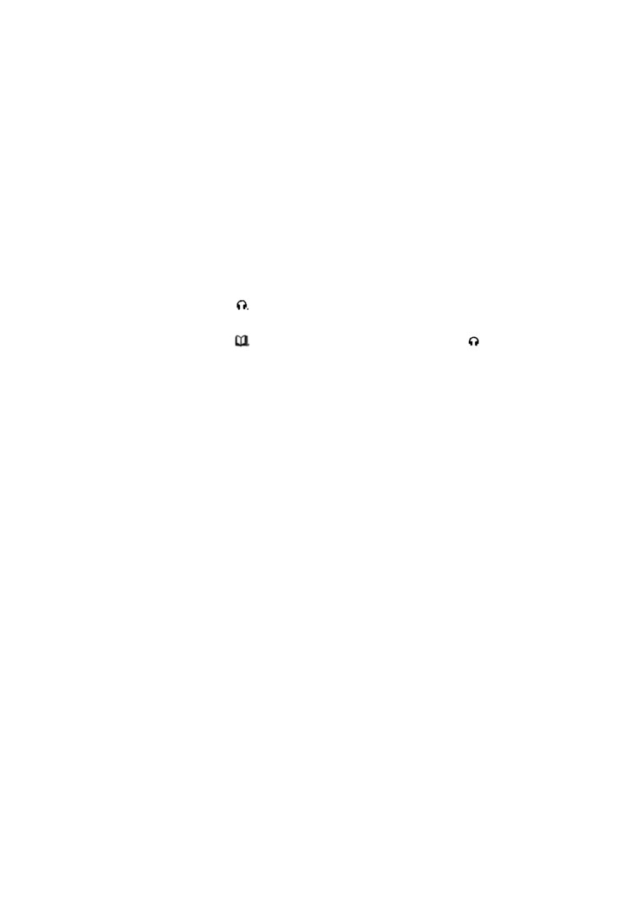
the grammar and structure, and the last one focuses on the phrasal verbs introduced in
that lesson.
• Listen Up! Each lesson includes a recorded listening comprehension exercise. The
student is directed to listen to a short article or dialogue on a topic related to the lesson,
and then to answer questions written in the book. The Listen Up sections are designed
to use both vocabulary and idiomatic expressions related to the theme of the lesson.
• Why Do They Do That? Each lesson includes a culture note that explains an aspect of
American culture related to the lesson's topic. These aspects of culture range from table
manners to home ownership to driving habits to proper behavior while being pulled over
for speeding. The culture notes are designed to be both interesting and relevant to the
student's experiences.
• Answer Key. Each lesson also includes a key to all exercises.
KEY TO SYMBOLS
When you see
PLAY CD and listen to the examples or exercises on the audio
portion of the course.
When you see
PAUSE CD and return to the book until you seethe next
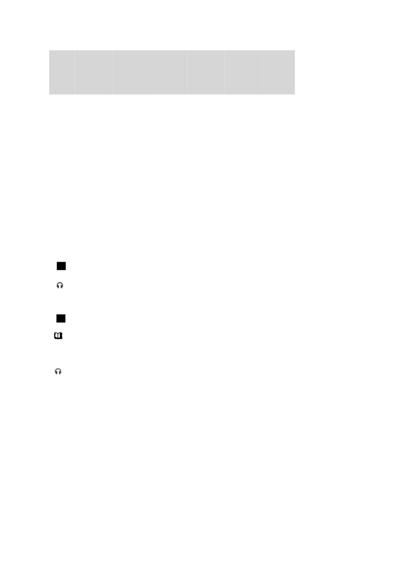
Lesson
1
How Long
Have You Been Here?
ARE YOU READY FOR THE LESSON?
Lesson 1, How Long Have You Been Here?, will take you somewhere you may know very
well: the INS office. You'll listen in
on a conversation between two people waiting in line,
which is something people unfortunately do very
often, and which is also a situation in
which Americans
like to make "small talk."Then,
you'll learn some vocabulary that will come
in
handy at the INS or anywhere
you have to fill
out forms. But that's not all. Lesson 1 also
includes:
• The Present Perfect Tense vs. The Simple Past Tense
• Using/or and since with the Present Perfect and
Simple Past Tenses
• Phrasal Verbs with pick
• Idiomatic Expressions for Saying
Goodbye
Finally, at the end
of the lesson you'll read a culture note about
casual greetings and
acquaintances. But let's start with
a pronunciation warm-up. Ready?
1A SAY IT CLEARLY!
Turn on your CD to review the pronunciation of-ed, a very important ending in
English.
1B ENGLISH AT
WORK
Dialogue: Making
Small Talk
Sergei, a Russian
immigrant, is
waiting in line at the INS. The line is very long, and it's
moving very slowly. Peter, an American standing in front of Sergei, turns around and
strikes up a conversation. Sergei
is surprised by
his friendliness
Peter
I guess
we didn't have anything else to do today,
did we?
Sergei
What?
Peter
I said I
guess they think that we didn't have anything else to do today. It's
just that we've been in this line for a
very long time. lt seems like we
aren't going anywhere very fast.
Sergei Yeah. I
know. I've been here since about 9:30. What about you?
Peter
I think I
got here just
a few minutes
before you did. I decided to
pick up a
green-card application for my wife.
I should've gotten it off the Internet.
That way I could have
just stayed home. Say, where are you from?
Sergei Me? I'm
from Russia.
Peter
Oh, whereabouts?
Sergei
I lived in Moscow for
most of my life, but I moved around a little. I was in
the military.
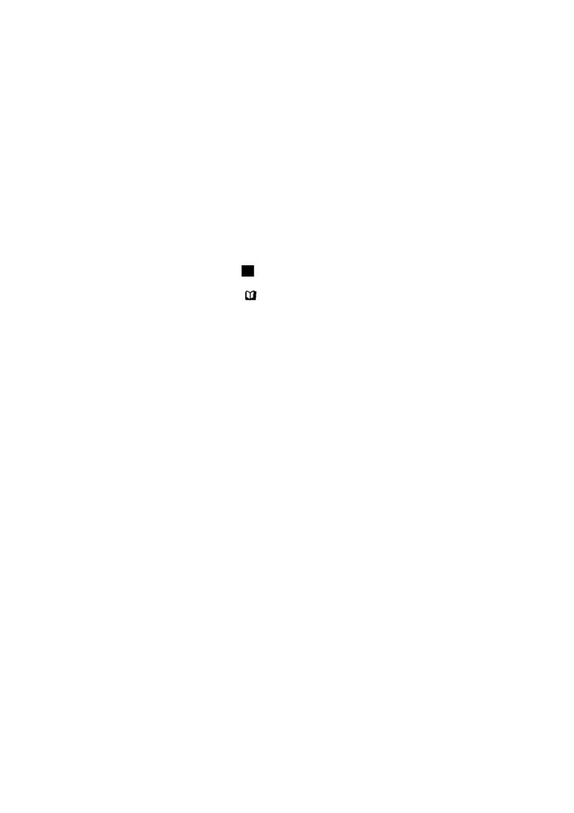
2
FLUENT ENGLISH
Peter Interesting. I've
never been to
Russia, but I've always wanted to visit.
It
seems like such an interesting country. How long have you lived
here?
Sergei I've lived in San
Diego for only
a few weeks,
but I've been in the U.S.
since August.
Peter Well, welcome to San Diego. I
guess the weather must be a
bit
warmer than where you're from, huh?
Sergei Yes, that's true.
I've gotten used to it.
Peter Have you visited
the zoo or Balboa Park yet?
Sergei No, but I really want to go to Balboa Park. I've heard about
all the
flowers and museums that are
there.
Clerk next!
Peter Hey. That's me.
Gotta go. See
you around.
Sergei Oh. OK. See you
1C
BUILD YOUR VOCABULARY
Perhaps you need to go to the I. N. S. to fill out some forms.
Here are some
terms you
would see if you were to fill out an application to register for
permanent residence.
Many of these
words have other meanings, but these are the usages you will see on I.
N. S. forms and other legal documents.
To be cited. To be summoned to appear in court. The police could cite you
for littering
if you throw trash out of your
car.
To be indicted. To be charged with a crime.
Richard Hayward was indicted
for
espionage when he was caught selling U.S.
documents to a
foreign government.
Ordinance. A
law or regulation, usually passed by a local government. The
city
council passed an ordinance
permitting the use of marijuana
by cancer patients.
Beneficiary. A
person who is
or will be the recipient of something of value from
someone who
has died. Harold and Gerry were the sole beneficiaries of their mother's
modest estate
Rehabilitation. Treatment to
help someone
return to regular, acceptable, or normal
behavior or abilities. Recovery from drug abuse or physical injuries. It was difficult to
convince the governor that Sam had been successfully rehabilitated and was ready to
leave jail and return to society
Clemency. A lesser penalty than what a court originally suggested. Thinking that
Ralph Smith had suffered enough for the crime he committed, the judge granted him
clemency and
gave him a shorter prison sentence.
Amnesty. A pardon given to
a large group of
individuals. The government
granted amnesty to all illegal
immigrants who
had come to work in the fields
Procure. To obtain, to buy, to
take possession of something
of value. Professor
Hodges wanted to procure some ancient artifacts before returning from his
sabbatical
in Africa.
To engage in.
. To become involved in something, to do something. Teresa
would
never engage
in illegal activities, even if she
disagreed with
a law.
To induce. To
influence someone to do something. Robbie's older brother induced
him to steal money from their parents.
Lesson 1: How Long Have You Been Here?
3
To conspire. To plan together in secret to do harm. Kathy and Jane conspired to make
Mary look foolish.
To solicit. To ask for something of value, usually money. Raymond got a job soliciting
money for his political party.
To sabotage. To destroy or cause to fail. The lab technician sabotaged the experiment
by deliberately mixing up the samples.
Espionage. Spying. Espionage was a common practice during the Cold War, and it still
is today.
Affiliated. To be in close connection. The local television stations are all affiliated with
major networks.
To persecute. To harass, to cause someone to suffer because of a belief. Many people
have come to the United States because they were persecuted in their countries.
To incite. To move to action, to cause. The Prime Minister's latest announcement incited the
protesting crowd to become violent.
Fraud. A false claim, trick; a liar or imposter. Sam Jameson created a false medical
license and began practicing medicine until he was exposed as a fraud.
Waiver. A document that gives up a right or grants unusual permission to someone
else. Juan signed a waiver giving his doctor the right to send his medical records to his
insurance company.
Custody. Having legal guardianship of a child or children, often part of a divorce
settlement. When the Camerons divorced, Mrs. Cameron received custody of both
children, and her husband won weekend visitation rights.
1D ENGLISH UNDER THE HOOD
TOPIC 1: The Present Perfect Tense vs. the Simple Past Tense
Let's take a look at the two most common past tenses in English: the present perfect tense
and the simple past tense.
Present Perfect
Simple Past
/ have spoken
I spoke
you have spoken
you spoke
he, she, it has spoken
he, she, it spoke
we have spoken
we spoke
they have spoken
they spoke
As you can see, the present perfect tense is formed with the verb to have and the past
participle of the main verb, in this case, spoken. The simple past tense is just the past form of
the verb, which in this case is spoke. These tenses are used a bit differently. The present
perfect tense expresses an event that happened in the past when the exact time is not
known, or when there's a result or a connection being made to the present, or when the time
reference is still unfinished, as in so far this week, or up to now, or during my entire life.The
simple past tense, on the other hand, expresses an action that happened when a specific
finished time is given, such as yesterday or last
4
FLUENT ENGLISH
week or in 1995. Sometimes these tenses are interchangeable, depending on what the speaker
wishes to emphasize. Here are a few examples.
Julia has returned from her trip. (No specific time is given or is important, and the speaker is
emphasizing that Julia is now home.)
Julia returned from her trip. (Perhaps this is part of a longer narration of events in the past.)
I finished reading the novel last night. ("Last night" indicates a specific time in the past.)
Has Pam ever been to New York? ("Ever" means "during her entire life.")
/ worked five days last week. ("Last week" is finished time.)
So far this week I've worked three days. ("This week" is unfinished time.)
PRACTICE EXERCISE 1: Complete each of the following sentences with either the present
perfect or simple past tense.
1. _________________(drive) Mary
her new car to Santa Barbara yesterday.
2. __________________ (not try) Sam on his new pants yet.
3. _______________ (buy) We a new house last week.
4. __________ (eat) ________ you ever fried bananas?
5. _____________________________ (not go) Mr. and Mrs. Denton out of town last weekend.
6. ____________ (see) I _____ never The Birds.
7. ____________________ (not speak) He
much English during his trip last April.
8. _____________ (miss) ______you me while I was gone?
9. ____________ (dance) you ever the salsa?
10. ________________(get) Richard
a new car last week.
TOPIC 2: Verbs with Irregular Forms in the Past and Present Perfect Tenses
A lot of common verbs have irregular simple past and past participial forms. Here are some of the
more common ones. You'll also find a list of all of the most important irregular verbs in the
appendix on page 211.
Present
Past
Past Participle
be
was/were
been
begin
began
begun
bring
brought
brought
do
did
done
eat
ate
eaten
go
went
gone
have
had
had
know
knew
known
see
saw
seen
sing
sang
sung
speak
spoke
spoken
Lesson 1: How Long Have You Been Here?
5
take
took
taken
write
wrote
written
PRACTICE EXERCISE 2: Complete each of the following sentences.
1.
(sing) Who ______ that last song?
2.
(do) Sarah _____ her homework last night.
3.
(be) Where ______ you at breakfast?
4.
(begin) Madeline ______ already __________ her new job.
5.
(know) Henry _______ all of the answers.
6.
(write) _______ you _________ that letter yet?
7.
(begin) Angel ______ his university education last spring.
8.
(sing) She _____ in Las Vegas many times.
9.
(see)______ anyone really ever _________ Big Foot?
10. (take) I had a headache, so I ______ some aspirin.
TOPIC 3: Using for and since with the Present Perfect and Simple Past Tenses
Use since when a specific point in time is given. Use/or when a period of time, rather
than a specific point in time, is given.
Since...
For...
yesterday
one day
last week
a week
last month
three months
Richard has lived in Chicago since 1985.
Richard has lived in Chicago for twenty years.
Notice that you can use for and since with either the simple past tense or the present perfect
tense, depending on whether or not the action is still happening.
I've worked for Green Enterprises for three years. (I still work there.)
/ worked for Green Enterprises for three years. (Now I work somewhere else.)
PRACTICE EXERCISE 3: Complete each sentence with either since or for.
1. We've lived in Los Angeles _________ before Barry was born.
2. We've lived in Los Angeles _________ ten years.
3. There's been a roadblock on the freeway __________ three days.
4. I haven't seen you _________ I was in high school.
5. Why haven't you called __________ two weeks?
6. Susan hasn't gone to work __________last Tuesday.
7. They stayed at this hotel __________ three nights.
8. Roger and Martin have been gone __________ hours!
9. Have you been waiting for me __________ 7:30?
10. She hasn't spoken to me ___________ the night we got into an argument.
6 FLUENT ENGLISH
1E PHRASAL VERBS WITH PICK
Pick up.
a)
To take something up off of a surface. Pick your coat up off the floor.
b)
To meet and collect a person from a specific location. Who's going to pick Henry up at
the airport?
c)
To buy something Jordan picked up some milk on the way home.
*Note that to pick up a person can also mean to meet someone, usually at a public place such as a bar or
night club, and to become sexually involved with him or her after spending only a short time together.
Pick out.
a)
To select, to choose. Melissa picked out a shirt and brought it to the dressing room.
b)
To separate from. If you break a wine glass, make sure you pick all of the glass out of the
carpet.
Pick over.
To take the best of something and leave what is not so good. The shirts have been on
sale so long that they've really been picked over.
Pick on.
To tease. My sisters and brothers always picked on me because I was the youngest.
Pick from.
To choose from a group of something. Mrs. Stefanson picked a new assistant from the
group of applicants for the job.
Pick at.
a)
To take only very small amounts of food. Jessica ate almost everything on her plate, but
she only picked at her peas.
b)
To scratch or irritate something, such as a cut or scrape. Don't pick at that cut! Let it heal.
Pick up on.
To understand something, especially something that isn't intended to be understood.
They spoke in Spanish in front of Dorothy, so she didn't pick up on what they were
talking about.
*Note that pick up, pick out, pick from, and pick over are separable. This means the two words can be
separated and a pronoun or noun can be inserted between them. Billy picked out the raisins or Billy picked
them/the raisins out, but not Billy picked out them. Pick on, pick at, and pick up on are not separable. You
cannot separate the verbs from the prepositions.
1F REAL ENGLISH
SEE YOU LATER!
Saying "good-bye!" is only one way to end a conversation. There are a lot of idiomatic
expressions that people use when a conversation is over or when they have to leave.
Here are some important ones, listed from most to least formal: Have a good day. Take
care. Take it easy. (I'll) See you later. (I'll) See you around. See ya! Catch you later. Gotta go.
Note that these expressions are often preceded with Well. Well, have a nice day!
Lesson 1: How Long Have You Been Here?
7
1G BRING IT ALL TOGETHER
Now let's review everything we've covered in this lesson.
REVIEW EXERCISE 1: Vocabulary
Place the correct vocabulary word in each space. Use each of the following words
once: solicit, beneficiary, indicted, procured, waiver, persecuted, incited, affiliation,
espionage, amnesty, conspired, rehabilitation, clemency, sabotage, cited, induce,
fraud, custody, ordinance, engaging.
1.
When we found out that Dr. Wells hadn't gone to medical school, we knew he was a
________.
2.
Learning new skills is essential to the successful ________ from a life of crime.
3.
For some people, working is much harder than ________ in crime.
4.
The well-known
International is an organization dedicated to encouraging
governments to free their political prisoners.
5.
Bill Jackson feltbecause he had received a dishonorable discharge from the army and
few employers would hire him.
6.
The soldiers sneaked in behind enemy lines to ______ the next shipment of weapons.
7.
______ by jealousy, Roberto accused his wife of having an affair.
8.
If you let your dog walk around without a leash, you are violating a city.
9.
I want to show you some new gems we've recently .
10.
The senator was forced to resign when his with a racist organization was uncovered.
11.
A sixteen-year-old cannot attend adult school without a
from high school.
12.
Tammy went to several companies to ______ money so that she could afford to travel
to the swimming competition.
13.
Ralph was ______ for breaking and entering.
14.
Mary was ______ for driving with her lights off.
15.
The Rangels filed for ______ of their daughter's son.
16.
A governor has the power to give
to a condemned criminal, commuting a death
sentence to life in prison.
17.
The boys ______ to scare all the girls in class on Halloween.
18.
Wiretaps were placed on the ambassador's phone line in an act of.
19.
Tony named his wife, Susan, as the _________ on his life insurance policy.
20.
The labels of many poisonous products warn not to ______ vomiting in case of
accidental ingestion.
REVIEW EXERCISE 2: The Present Perfect Tense vs. the Simple Past Tense
Complete each of the following sentences with the correct form of the verb given in
parentheses.
1. (arrive) The plane _________on time yesterday, but traffic was awful.
8
FLUENT ENGLISH
2.
(be) It _________ a long hot summer, and it's only August 3!
3.
(not call) No one can believe he _________ you yet.
4.
(put) Who __________my keys under the couch last night?
5.
(eat) We _________ dinner at six.
6.
(go) Christian _________ to school already this morning.
7.
(visit) We _________ the Metropolitan Museum when we were in New York.
8.
(see) I _________ the Eiffel Tower several times, but never in the spring.
REVIEW EXERCISE 3: Irregular Verb Forms
Fill in the spaces with the missing verb forms.
Present
Past
Past Participle
1.
__________
was/were
__________
2.
Do
__________
__________
3.
__________
__________
gone
4.
__________
gave
__________
5.
__________
ate
__________
6.
Write
__________
__________
7.
__________
__________
begun
8.
__________
__________
seen
REVIEW EXERCISE 4: For and Since
Fill in each sentence with since or for.
1.
I don't think I've seen you _________ high school.
2.
They didn't speak to each other__________ several weeks.
3.
How long has it been __________ you left?
4.
We haven't spoken _________ three years!
5.
Why did you keep silent __________ so many months?
6.
I can't believe you've been in Boston__________ September!
7.
I'm not sure why he hasn't called ___________last week.
8.
It hasn't rained __________ six months.
REVIEW EXERCISE 5: Phrasal Verbs
Place the correct phrasal verb with pick in the blank space in each sentence.
1. What time do you want me to ___________ you __________ from the airport?
2. Alex's mother and sister helped her __________ her wedding dress.
3. Look how you __________ your food. You eat like a bird.
4. Johnny,__________all your toys and put them away.
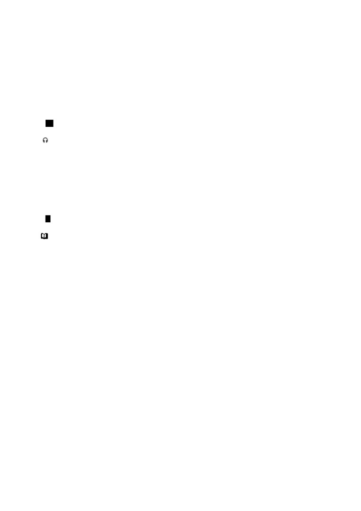
Lesson 1: How Long Have You Been Here?
9
5. Evelyn _________ the label on her sweater because it irritates her.
6. Mrs. Russell told the class bully not to __________ the younger children.
7. Barry's a pretty smart little boy; he seems to __________ whatever anyone says.
8. I've a beautiful crystal vase for Bill and Cindy's wedding gift.
1H LISTEN UP!
Now let's work on your listening comprehension. Turn on your CD and listen to Section 1H. In
this exercise, you will hear someone describing a situation. As you listen, choose the phrasal
verb that could be used in the situation.
pick out, on, up pick
over, up, at pick at, on,
upon pick up, from, at
pick on, up, over pick
up on, at, over
1I WHY DO THEY DO THAT?
Greetings and Small Talk
Have you ever heard a complete stranger say hello to you as you pass him or her on the
street? Don't worry. That's not unusual. Americans often greet people they don't even know.
They may talk to strangers while waiting in line, or comment on the weather when standing in
an elevator, or even strike up a conversation while sitting next to someone at a public event.
It's true that this kind of behavior may seem too casual—or even just plain strange—toothers,
but many Americans consider it friendly. Of course, these little pieces of "small talk" aren't
meant to discuss anything very serious or personal or make new friendships. When they end,
the participants go their separate ways and rarely commit to any kind of social involvement.
This is normal for Americans, who often have a lot of acquaintances—at work, in their
neighborhoods, at stores and restaurants, at the gym. But Americans also make an important
distinction between casual acquaintances and close friends.
Lesson 1: Answer Key
Practice Exercise 1
1. drove. 2. hasn't tried, 3. bought, 4. Have/eaten, 5. didn't go. 6. have/seen, 7. didn't speak.
8. Did/miss, 9. Have/danced, 10. got
Practice Exercise 2
1. sang. 2. did, 3. were, 4. has/begun, 5. knew, 6. Have/written, 7. began, 8. has sung, 9. Has/
seen, 10. took
Practice Exercise 3
1. since, 2. for, 3, for, 4. since, 5. for, 6. since, 7. for, 8.for, 9. since, 10. since
Review Exercise 1
1.fraud, 2. rehabilitation, 3. engaging, 4. Amnesty, 5. persecuted, 6. sabotage, 7 Incited,
8. ordinance, 9. procured, 10. affiliation, 11.waiver, 12. solicit, 13. indicted, 14. cited, 15. custody, 16.
clemency, 17. conspired, 18. espionage, 19. beneficiary, 20. induce
Review Exercise 2
1. arrived, 2. has been, 3. hasn't called, 4 put, 5. ate, 6. has gone, 7. visited, 8. have seen
10 FLUENT ENGLISH
Review Exercise 3
1. be /been, 2. did/done, 3. go/went, 4. give/given, 5. eat/eaten, 6. wrote/written,
7. begin/began, 8. see/saw
Review Exercise 4
1. since, 2.for, 3. since, 4.for, 5.for, 6. since, 7. since, 8. for
Review Exercise 5
1. pick/up, 2. pick out, 3. pick at, 4. pick up, 5. picks at, 6. pick on, 7. pick up on, 8. picked out
Listen Up!
1. out, 2. up, 3. up on, 4. at, 5. on, 6. over
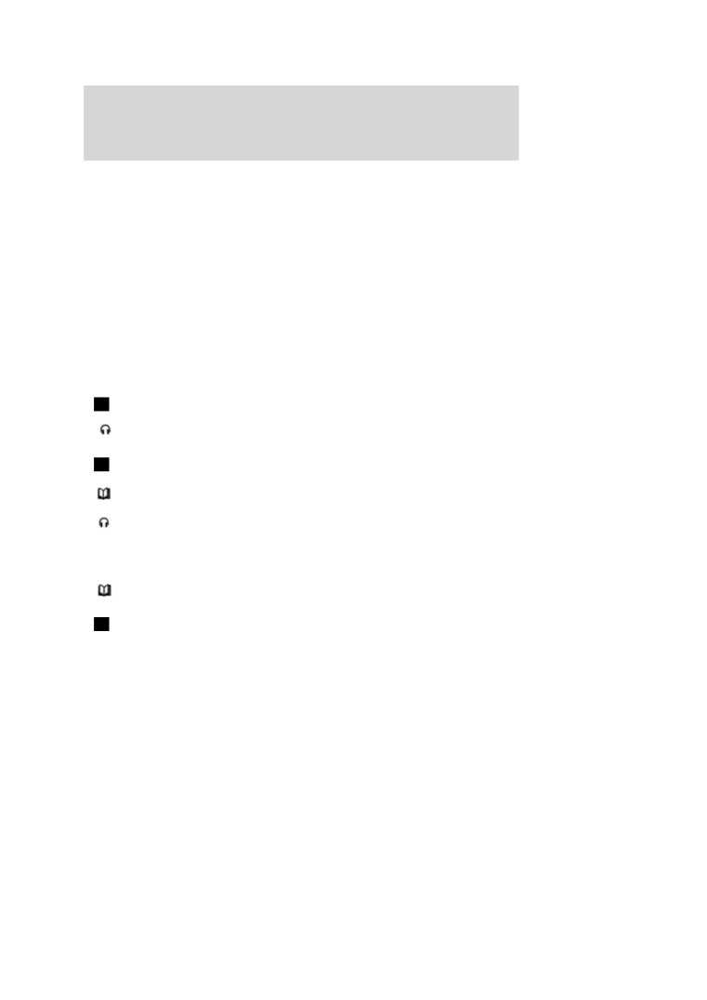
Lesson 2
Don't Go Away!
ARE YOU READY FOR THE LESSON?
Lesson 2, Don't Co Away!, will take you on that paradise vacation you've been waiting for!
You'll read a brochure for a world-class resort hotel and listen to recordings about some
exciting vacation spots. Then you'll learn some helpful vocabulary for an exclusive hotel.
But there's more. Lesson 2 also includes:
• Helpful Hints for the Present Tense
• Questions and Negatives in the Simple Present Tense
• Phrasal Verbs with turn
• Important Idioms for Using the Telephone
We'll finish off Lesson 2 with a culture note discussing why Americans move around so
much. But first, let's start with a pronunciation warm-up. Ready?
2A SAY IT CLEARLY!
Turn on your CD to practice another very important ending,-s.
2B ENGLISH AT WORK
Recorded Message: The Hotel Royale
Listen to the following recorded phone message from The Hotel Royale in Florida.
Hello, and welcome to paradise at The Hotel Royale, Florida, where an exciting
adventure beckons. Located near world-famous Disney World in Orlando, Florida, our
world-class hotel features well-appointed accommodations designed to pamper you
with luxurious amenities. Don't go away. For more information and for rates and
reservations, please stay on the line. We'll be right with you.
Now let's take a look at a brochure for The Hotel Royale, Florida on the next page.
2C BUILD YOUR VOCABULARY
Once again, let's take a look at some vocabulary related to the topic of this lesson.
Accommodations. A place to stay, food and services. Because we were poor college
students, we chose inexpensive accommodations for our trip through New Mexico.
Amenities. Attractive and convenient material comforts. Whenever Nancy showed the
smallest townhouses to her clients, she always pointed out the many wonderful
amenities, hoping no one would notice the size.
Amidst. Among, between. Meredith found one black gumdrop amidst the many yellow,
red, and orange ones.
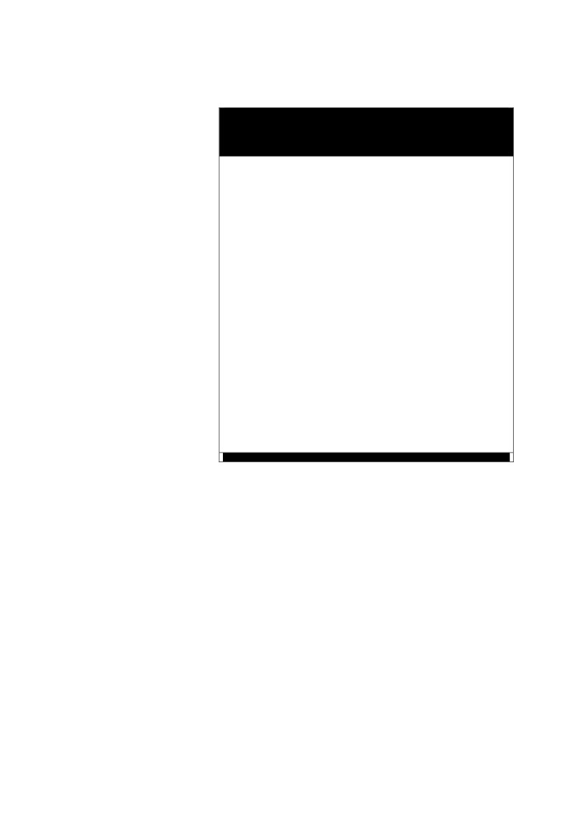
12 FLUENT ENGLISH
FLORIDA'S LEGENDARY HOTEL ROYALE
is the perfect vacation destination.
We are conveniently located just minutes from Disney World,
Universal Studios Florida, Sea World Adventure Park, and the
dazzling Orlando nightlife.
AT THE HOTEL ROYALE, we strive to make your stay
memorable. Enjoy a resort atmosphere where you can stroll
among the terraced gardens, sip your drink beside the grotto
pool, pamper yourself at our luxurious European-style spa,
and savor the exceptional cuisine at the Royale Inn.
The Hotel Royale, Florida, features such amenities as:
• Deluxe appointed guest rooms
• A spacious fitness center
• Panoramic views
• A rooftop botanical garden
• Kitchen suites
• Banquet and meeting facilities
Your stay at The Hotel Royale, Florida, will be a fantasy
adventure. We simply have everything: an exciting location,
beautiful accommodations, and fabulous service. This just
might be paradise.
For rates and reservations call 1-800-555-2000.
Appointed. Arranged; furnished, provided with what is needed. No one could help
but notice how tastefully appointed the mansions were.
Beckon. To call someone or something to come towards you, often with the use of
a hand or finger gesture that means"come here." Mrs. Applebee beckoned Tommy
to her desk where they could discuss his mistakes in private.
Cuisine. Manner or way of preparing food, a tradition of cooking particular to a
region or country. There are so many wonderful restaurants from around the world
that it's hard to choose a favorite cuisine.
Dazzling. Something exciting or beautiful; blinding light. The local baseball team
often puts on a dazzling fireworks display during its games.
Lesson 2: Don't Go Away!
13
Grotto. A cave or cavern, an artificial structure made to look like a cave. The zoo had to
fashion a variety of grottos for the animals to hide in when they wanted privacy.
Legendary. Similar to a story handed down from the past; something that is spoken of by
many people over many years. The children love to read stories about legendary heroes,
such as Robin Hood or King Arthur.
Luxurious. Expensive, rich, abundant, magnificent; something that appeals to the senses.
The hotel rooms were luxurious with their king-size beds, whirlpools, and sun decks.
Nightlife. Places to go and things to see and enjoy at night, e.g., restaurants, theaters, bars,
clubs, cafes, movies, etc. Most people who do a lot of traveling like to sample at least a little
of the nightlife in any city they visit.
Pamper. To give a lot of care and attention to someone. When Sally is depressed she
pampers herself with a shopping spree.
Panoramic. A view that can be seen from all sides. The Empire State Building offers a
panoramic view of New York City.
Savor. To find delicious; to taste or smell with pleasure. Elwin finds Indian food so
delicious that he savors every bite.
Sip. To drink slowly in small amounts. We sat in the coffee shop and sipped our coffee for
hours.
Spacious. Having a lot of space; very large and open. Being used to a tiny apartment, Bill
found Marie's home quite spacious.
Strive. To work toward a goal with great effort. It is difficult to believe that some people
never strive to improve.
Stroll. To walk slowly and in a relaxed way. Mr. and Mrs. Oglesbee strolled through their
garden every evening.
Terraced. With levels arranged like stair steps. Villages in mountainous regions have had to
raise their crops in terraced gardens.
World-class. Among the best in the world. The city council decided to build a world-class
stadium in the hopes of attracting a national football team.
2D ENGLISH UNDER THE HOOD
Many students of English feel that one of the most challenging tenses in English
is the present tense. Perhaps this is simply because it's the first tense students
learn, or that it has so many different uses. But whatever the reasons, there are
three areas that often need to be reviewed:
• The -s ending of the third person singular
• How to form negatives
• How to form questions
14 FLUENT ENGLISH
TOPIC 1: -s Endings in the Third Person Singular
Only the third person singular, or the he/she/it form, of a verb in the simple present
tense has an ending,-s. All other forms are the same as the basic form of the
verb:/ speak, you speak, we speak, they speak, but he speaks, she speaks, it speaks.
The -s ending becomes -ies if the verb ends in a -y-. Ifly,you,fly, we fly, they fly, but
he flies, she flies, it flies.
The -s ending becomes -es if the verb ends in one of these letters or letter
combinations:-s (you dress, she dresses),-sh (I wish, he wishes),-ch (they touch, it
touches), or -x (you fix, she fixes). And don't forget that the ending is pronounced -iz.
Notice that some verbs end in a silent -e in spelling, but have as their last sound a -j
(manage, judge),-z (lose, cruise), or -zh (massage). These verbs will only add an -s
in spelling, but the ending will be pronounced as an -iz: she manages, he cruises,
she massages, it loses. (You've already seen this in Section A, Say It Clearly!)
PRACTICE EXERCISE 1: Fill in the blanks with the correct form of the verb.
1.
(spread) The tree branches
over the sidewalk.
2.
(begin) When it's very cold, my teeth ___________ to chatter.
3.
(run) Cedric __________in a marathon twice a year.
4.
(bark) The neighborhood dogs___________ most of the night.
5.
(sell)The little girl ___________ lemonade on hot Saturday mornings.
6.
(take) It __________ a lot of money and good credit to buy a house in some parts of
California.
7.
(taste) Red apples usually __________ sweet and delicious.
8.
(shine) The full moon ___________ clear and bright on warm summer nights.
9.
(expect) Meredith ___________ to have another baby before she is 38 years old.
10.
(want) All the employees_____ to take a vacation in August.
TOPIC 2: The Negative Simple Present Tense
As you know, the basic negative simple present tense is formed with not. But you
also need to use an auxiliary, or "helping," verb with not, either do or does. The
pattern is:
subject + auxiliary verb do or does + not + main verb (without -s!) Here are some
pairs of examples, first affirmative, and then negative:
/ drive a car.
I do not drive a car.
She takes the bus to work.
She does not take the bus to work.
Mr. Nasser likes this hotel.
Mr. Nasser does not like this hotel.
Sabrina has a new car.
Sabrina does not have a new car.
The not comes between do or does and the main verb. It's often attached to do or
does in a contraction:
I don't drive a car.
She doesn't take the bus to work.
Mr. Nasser doesn't like this hotel.
Sabrina doesn't have a new car.
Lesson 2: Don't Go Away!
15
Remember that you shouldn't put the -s ending on the main verb in negatives. Also
remember that you should use only one negative in English:
I don't speak Spanish. (Not: *l don't speak no Spanish.)
She doesn't have any money. (Not: *She doesn't have no money.)
/ never walk to work in the rain. (Not: *l don't never walk to work in the rain.)
And finally, remember that you need do or does in front of not with every verb except be:
I am on vacation.
I am not on vacation.
They are spending a week at the
They aren't spending a week at the
new resort.
new resort.
PRACTICE EXERCISE 2: Make the following sentences negative.
1.
Tammy rides her horse to school.
2.
We pay a lot to take the bus.
3.
The children do what the teacher says.
4.
Most women like to give their clothes away.
5.
Darren and Tom care about the rules of good sportsmanship.
6.
Maddie gets as much exercise as she used to.
7.
It gets better than this!
8.
Many flowers bloom all summer long.
9.
The yard gets enough water.
10.
The mountains have a lot of snow this time of year.
TOPIC 3: Questions in the Present Tense
Questions in the present tense are a lot like negatives, because you always need to
use the auxiliary do or does, except with be:
Sandro studies English at the community center.
Does Sandro study English at the community center?
They are in New York this week.
Are they in New York this week?
Remember to begin questions in the simple present tense with do or does, then the
subject, and then the main verb (again, always without an -s ending!).
Does Tom know Mary?
Do the children enjoy reading?
Does Maxime have many friends?
The exception is questions with a main verb is, am, or are:
Am I wrong?
Are you happy with the meal?
Is Gary at work right now?
16 FLUENT ENGLISH
PRACTICE EXERCISE 3: Change the following sentences into questions.
1.
Harold likes to go bird watching.
2.
Carolyn understands Spanish.
3.
Mockingbirds sing very early in the morning.
4.
You catch the bus at Fourth and Broadway.
5.
I write to my mother at least once a week.
6.
Tina teaches with the Peace Corps.
7.
Minnie hides the cookies from her children.
8.
The companies send their products through the U.S. mail.
9.
The Smiths hear a catfight in their yard almost every night.
10. Taka's party begins at noon.
2E PHRASAL VERBS WITH TURN
Turn around.
To go back in the opposite direction. Turn around! We just passed the theater.
Turn down.
a) To lower the power of something, such as lights or volume. Turn down the TV! It's too loud.
b) To enter a road, especially a secondary road thought of as leading to a lower place. You need to
turn down this road and continue to the bottom of the hill.
c) To refuse. It was a great job offer, but I had to turn it down because it was too much
work.
Turn in.
a) To leave a street or highway and enter a driveway, parking lot, etc. / think you can turn in here,
where the sign says PARK.
b) To go to bed. Lawrence usually turns in around 70.00 P.M. because he wakes up so early.
c) To give an assignment or paperwork to a boss or a teacher; to submit. Bethany turned in her
paper just as the professor was leaving.
d) To report someone to the police. When Robert heard about his brother's crimes, he turned him
in.
Turn into.
To become (used with nouns) Jason got a promotion and turned into a real jerk!
Turn off.
a) To stop an electronic device. Turn off the TV, because I can't sleep with it on.
b) To exit a road or freeway. / think you should turn off at the next exit.
c) To be unappealing. This music is horrible! It really turns me off.
Turn on.
a) To start an electronic device. Our show is on in two minutes, so turn on the TV.
b) To drive onto a street, highway, or freeway. Why don't we turn on this road and just see where it
goes?
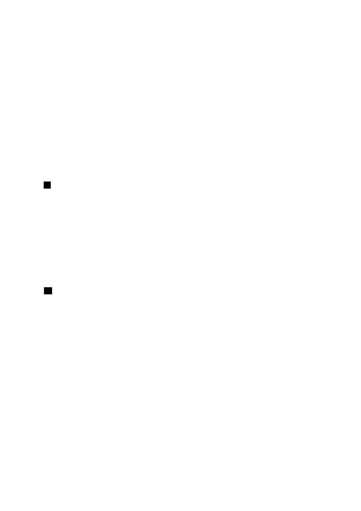
Lesson 2: Don't Go Away!
17
c) To be appealing or exciting. (Also used to mean "sexually stimulating.") Dancing really turns
me on and puts me in a great mood.
Turn out.
To come to a party, event, etc. Wow! So many people turned out for your party!
Turn over.
To reverse the position of something from right-side up to upside down. Can you turn over
my pancake before it burns?
Turn up.
a) To appear somewhere, to be found. Don't worry, your earring's not gone forever; it'll turn up.
b) To increase the power of something, such as lights or volume. Turn up the lights a bit. It's
so dark in here I can't read.
c) To enter a road, especially a secondary road thought of as leading to a higher place. Maybe
if we turn up this road we'll be able to get to the top of the hill.
2F REAL ENGLISH
Hold On!
Just about everyone knows that the expressions hello and good-bye are used to begin and
end phone conversations in the United States. Here are some other expressions that are
commonly used on the phone.
If you need to leave the phone momentarily but don't want to end the conversation, you can
say, don't go away, hang on, stay on the line, hold on a minute, or hold the line. In business
settings, where there is a hold button on the phone, you can say let me put you on hold,
please. This is often followed with /'// be right with you.
If a receptionist is very busy, instead of answering the phone and waiting for a response, he
or she may say right away please hold or we'll be right with you. And then you'll be put on
hold.
2G BRING IT ALL TOGETHER
REVIEW EXERCISE 1: Vocabulary
Place the correct vocabulary word in each space. Use each of the following words once:
accommodations, amenities, amidst, appointed, beckon, cuisine, dazzling, grottos, legendary,
luxurious, nightlife, pampered, panoramic, savor, sips, spacious, strive, strolled, terraced,
world-class.
1. Mr. and Mrs. Bunch _________ to the end of the pier to watch the fisherman.
2. Mrs. Peabody _________ her tea and reads the paper each Sunday afternoon.
3. If you climb to the top of a mountain, you can have a ___________ view of the valley
below.
4. Many people around the world consider Chinese to be their favorite ___________ .
18 FLUENT ENGLISH
5.
When Karen got engaged she chose the most __________ diamond ring.
6.
I just have to go to Hawaii; the islands ___________me!
7.
We drove most of the night to find the cheapest ___________ .
8.
A lot of people _________ to lose weight in a short time.
9.
Karen insisted that her wedding reception be held at a ___________ hotel.
10.
Most English-speaking people know the __________ story of Camelot.
11.
Martha has the smallest classroom, and Richard has the most ___________ one of all.
12.
Little Gloria fell asleep with her head nestled ___________ the pillows on the couch.
13.
The _________ banks alongside the freeway are planted with flowers.
14.
Don't eat so fast. You need to learn to __________ this delicious food.
15.
Tom Sawyer's Island at Disneyland has lots of _________ for children to play in.
16.
Karen insisted on purchasing the most __________ wedding gown.
17.
Las Vegas is known all over the world for its exciting __________ .
18.
This hotel costs a lot of money per night, but the rooms are very well___________ .
19.
Greg had the flu, so he left work, went home and __________ himself on the couch
all day.
20.
We rented a lovely cabin in the mountains that had all the ___________ of home.
REVIEW EXERCISE 2: The Simple Present Tense
Fill in the following sentences with the correct form of the verb in the present tense.
1.
(burst) The party balloons are cheap, so they ___________ easily.
2.
(cling) Baby Meredith often _____________to her mother's skirt.
3.
(bend) The trees sway and the branches____________ in the cool breeze.
4.
(freeze) Oranges and lemons ___________ when the temperature drops.
5.
(quit) Gerald always ___________before he gets fired.
6.
(sweep) Marta _____________ her kitchen floor everyday.
7.
(stick) This window ____________ whenever you try to open it.
8.
(rise) Bill and Adriana ____________ at 6:00 A.M. to go to work.
REVIEW EXERCISE 3: Negatives in the Present Tense
Make these sentences negative.
1. Our local weathermen forecast the weather correctly.
2. Janey grinds her teeth when she's nervous.
3. The washing machine spins the clothes until they are dry.
4. Terrence winds his wristwatch everyday.
5. The boys spread too much butter on their toast.
6. Gladys and Henry mistake the sugar for the salt.
7. Cats creep up on their prey before they attack.
8. Sharon feeds birds in the park.
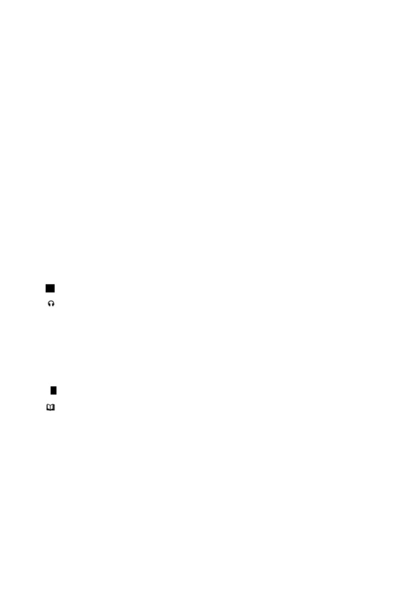
Lesson 2: Don't Go Away!
19
REVIEW EXERCISE
4: Questions in the Present Tense
Change the following
statements into questions.
1. The leaves fall off the
trees every autumn in this city
2. Joe and Tom split the
money for each job they do.
3. Mrs.
Warren goes to the store nearly
every day.
4. Jenna
is part Cherokee.
5. This store has nice things.
6. Edwina's clothes hang neatly in her
closet.
7. Jorge
sometimes leaves his keys in his car.
8. This bank is open late
on Thursdays.
REVIEW EXERCISE
5: Phrasal Verbs
Place
the correct phrasal verb with turn in the blank
space in each
sentence.
1. A huge crowd __________ whenever the Rolling Stones play.
2. The next exit is one-and-a-half miles
away. Let's___________ there and get something to eat.
3. You have exactly one
hour to finish
writing and ____________ your exams.
4. I'm pretty tired. I think
I'll __early.
5. Jackie
had to ___________ the job offer, but she would have made
a lot of money.
6. You just missed your
exit, so
________ and go back
the other way.
7.
It's
pretty foggy, but I think you can__ to this parking lot on your left.
8. Hank
loses his wallet
all the time, but it always ____
in the strangest places.
2H LISTEN UP!
Listen
to the recorded telephone recording and answer the following questions.
1. How late does the park stay open?
2. What
happens if it rains?
3. How
much do daily passes for two adults, one six-year-old child, and one three-year-old
child cost?
4. Which
pass has the best rate if you
want to go to the park twice in
one week?
5. What
street is the park on?
6. How
much does the
parking-lot shuttle cost?
2I WHY
DO THEY DO THAT?
Americans on the Move
You've probably noticed that Americans tend to move around a great deal during their
lives.
This begins young, often right
after high school, with the first
separation from
a
person's family. It's a tradition for young people to move away from their
20 FLUENT ENGLISH
hometowns to go to college, often going to a college or university on the other side of the
country. But even if they decide not to continue their education, young Americans usually
get a job and move out of their parents' home after high school graduation. This fast
separation and movement is in keeping with the independence and individuality that the
American culture fosters. It's also a matter of job opportunity. Americans will often go
wherever their jobs take them. This may include moving far away from extended family
and friends, and could mean making several different moves from city to city or state to
state. It's also common for Americans to live rather far from where they work, commuting
hours by car or train to their jobs. All of this is in keeping with a tendency toward
movement that many Americans demonstrate.
Lesson 2: Answer Key
Practice Exercise 1
1.spread, 2. begin, 3. runs, 4. bark, 5. sells, 6. takes, 7. taste, 8. shines, 9. expects, 10. want
Practice Exercise 2
1. doesn't ride, 2. don't pay, 3. don't do, 4. don't like, 5. don't care, 6. doesn't get, 7. doesn't get,
8. don't bloom, 9. doesn't get, 10. don't have
Practice Exercise 3
1. Does Harold like...?, 2. Does Carolyn understand...?, 3. Do mockingbirds sing...?, 4. Do you
catch... ?, 5. Do I write... ?, 6. Does Tina teach... ?, 7. Does Minnie hide... ?, 8, Do the
companies send... ?, 9.D0 the Smiths hear... ?, 10. Does Taka's party begin... ?
Review Exercise 1
1. strolled, 2. sips, 3. panoramic, 4. cuisine, 5. dazzling, 6. beckon, 7. accommodations, 8. strive,
9. world-class, 10. legendary, 11. spacious, 12. amidst, 13. terraced, 14. savor, 15. grottos,
16. luxurious, 17. nightlife, 18. appointed, 19. pampered, 20. amenities
Review Exercise 2
1. burst, 2. clings, 3. bend, 4. freeze, 5. quits, 6. sweeps,7. sticks, 8. rise
Review Exercise 3
1. don't forecast, 2. doesn't grind, 3. doesn't spin, 4. doesn't wind, 5. don't spread, 6. don't
mistake, 7. don't creep, 8. doesn't feed
Review Exercise 4
1. Do the leaves fall... ?, 2. Do Joe and Tom split... ?, 3. Does Mrs. Warren go... ?, 4. Is Jenna... ?,
5. Does this store have... ?, 6. Do Edwina's clothes hang... ?, 7. Does Jorge sometimes leave... ?,
8. Is this bank...?
Review Exercise 5
1. turns out, 2. turn off, 3. turn in, 4. turn in, 5. turn down, 6. turn around, 7. turn in, 8. turns up
Listen Up!
1.8:00 P.M., 2. The park is closed, 3. $104.85, 4, A five-day pass, 5. Olympia Road, 6. free
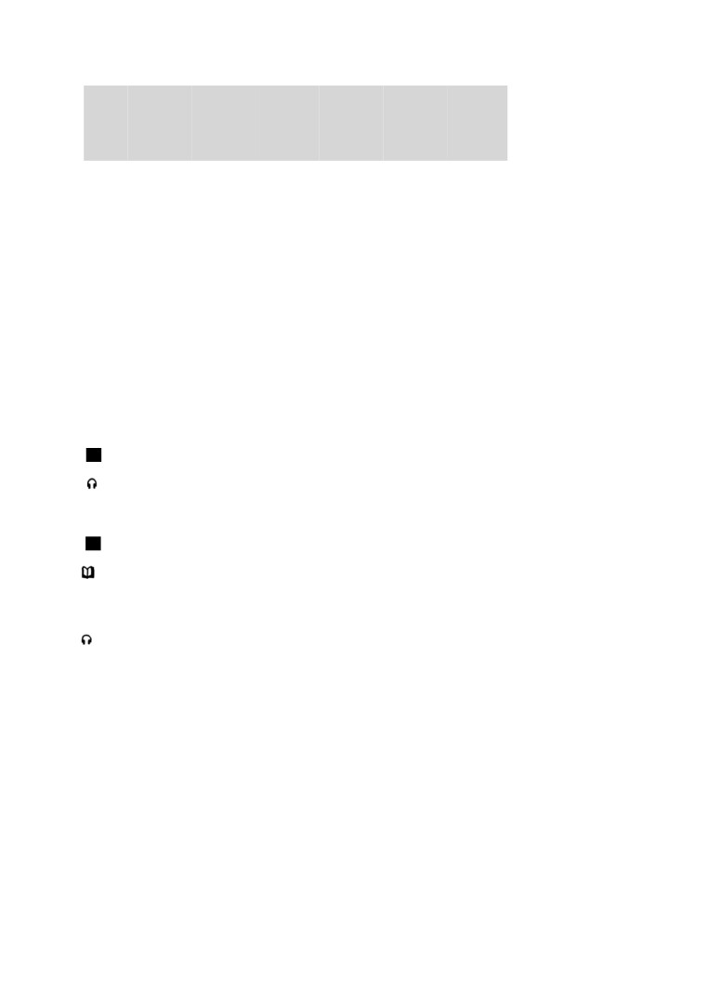
Lesson
3
What Would
You Like To Do?
ARE
YOU READY FOR THE LESSON?
If you're interested in
finding a job in
the U.S, Lesson 3, What Would You Like To
Do?, can
help.
This lesson will
take you on a job interview and show you a sample resume.
You'll also
learn
some important
vocabulary for
jobs and job hunting, and you'll listen to a job
hotline in
Listen
Up! Here are a
few more things you will learn
in Lesson 3:
• Questions and Negatives in the Simple Past Tense
• Habitual Action in the Past
• Polite Requests
• Phrasal Verbs with
work
• Idioms for On the Job
We'll
finish the lesson by discussing
handshakes—for example, when to offer a
handshake and the proper handshake technique. But let's begin the lesson by practicing
pronunciation in Say
It Clearly! Ready?
3A SAY
IT CLEARLY!
Turn on your CD to practice some English reductions, which are changes that you
make to
sounds in natural speech when they're combined. Reductions are an important part of
natural-sounding English.
3B ENGLISH AT WORK
DIALOGUE: Would
You Mind if I Looked at Your
Resume?
Qing
Zhang was trained as a computer programmer
in China, so she'd like a job in
the same
field here in the U.S.A. There's a lot
of competition for computer programming positions, but
Qing is well qualified.
Let's listen to an interview between Qing and
the Director of
Human
Resources at a major
telecommunications company
Ms. Peterson Hello, Ms. Zhang. I'm
Maria Peterson. Have a seat,
please.
Qing
Thank you.
Ms. Peterson Would
you like something to drink?
Coffee? Tea?
Water?...
Qing
Yes,
I'd like some water, please, thank you.
Ms. Peterson Would you mind if I
looked at your
resume?
Qing
Of course not. Here
it is.
Ms. Peterson Well,
now. I'd like to
know a little bit more about your background. How long
have
you been here? Where did you study? You do have a green
card, don't
you?
Yes, here it is.
I see it here on
your resume.
And what would you like to
do here at Collcom
Communications?
Qing
Um,
I've been here
for about three weeks... maybe a little over three
weeks. I used to live
in Massachusetts before I came here. I was
there for a
year and a half, I think. And yes, I do have a green card. I studied
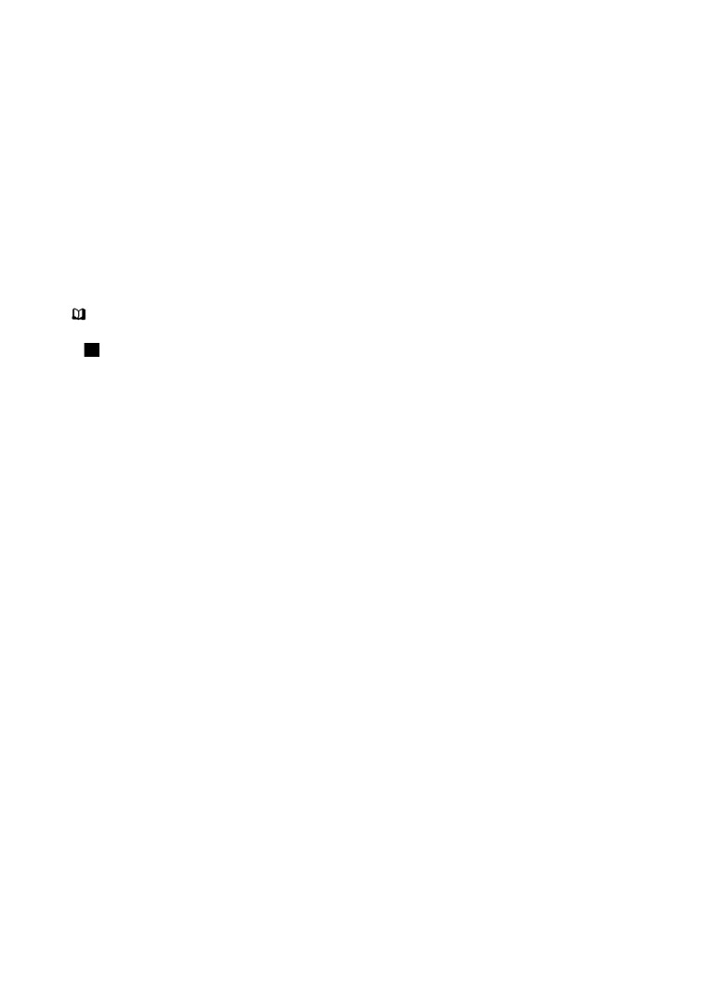
22 FLUENT ENGLISH
computer programming at Beijing University. And I would like to be a
computer programmer here at Collcom. Collcom is world famous, and I
hear you treat your employees very well. So I'd really like to work for
such a famous and wonderful company.
Ms. Peterson
Yes, I see you worked at Pellcorp in Massachusetts... very
impressive. Your resume looks great, too. You really are well
qualified. We need someone to start right away. How soon would you
be able to start?
Qing
I could start next week, or maybe sooner. I'd just like a few more
days to get a little more settled in my apartment before I start work.
But I'm flexible.
Ms. Peterson
All right, Qing. That sounds great. Well, I'll be in touch within the
next couple of days.
Quing
Thank you, and it was nice meeting you.
Now take a look at Qing's resume on the next page.
3C BUILD YOUR VOCABULARY
Background. Education and work experience. Can also mean family, ethnicity,
religion, etc. The applicant's background was in education; she'd always worked as a
teacher.
Candidate. An applicant for a job or position. There are nine candidates for the office
clerk position.
Deadline. The date when something is due or must be finished and turned in. Daniel
Dean had only one more week to meet his deadline and turn his manuscript in to the
publisher.
Detail oriented. Capable of paying careful attention to details. Many positions require
that candidates be detail oriented.
Document. To keep evidence or a written record, such as photocopies, notes, e-
mail, etc. Helen documented every instance of lateness or poor performance by
her staff.
Entrepreneurial spirit. Enthusiasm for business, especially one's own new business.
Linda has great entrepreneurial spirit; she opened her own business and has had a
great deal of success.
Headhunter. An employment scout. A person who matches jobs with applicants.
Debbie was a skilled computer technician, so she went to a headhunter to find a
better-paying job.
Inception. The beginning or start. This company has had only the finest employees
since its inception.
Interface. To communicate directly, to meet and interact. One of your responsibilities is
to interface with other employees in the company.
K. One thousand dollars. The starting salary for this position is 55K.
Liaison. A person who establishes and maintains communication, a link. The
U.S. Secretary of State acts as a liaison between the President and other
governments.
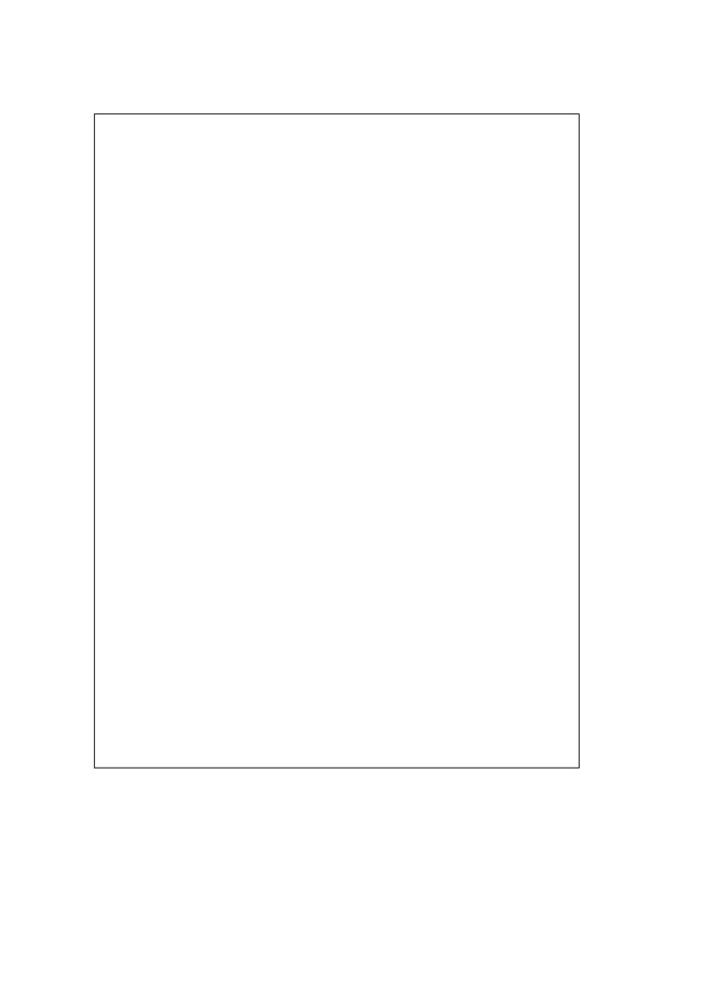
Lesson 3: What Would You Like To Do?
23
Qing Zhang
2506 Brighton Manor Road
San Diego, California 92106
(619) 556-2030
q_zhang@xpres.com
OBJECTIVE
Position as computer programmer in a busy, productive office.
QUALIFICATIONS
• Experienced working in demanding office environment with heavy phone traffic
• Proficient in Microsoft SQL Server, Visual Basic, Power Builder, Visual C++/MFC
• Some experience in Java Script, J Script, VB Script, HTML/XML/SGML
• Bilingual Mandarin Chinese (native) and English (fluent)
• Strong research skills
• Detail oriented
EXPERIENCE
• July 2002 - February 2005
• Pellcorp International, World Center for Communications,
• Shrewsbury, Massachusetts
• Computer Programming Assistant—Compiled code into
• programs, corrected errors detected in compiling process.
• October 2000 - May 2002
• Internationa] Student Services, Beijing Institute of Technology,
• Beijing, China
• Office Assistant—Prepared documents for mailing, answered
• phones, provided information to students, filed documents
• and student files, made photocopies.
• June 1998 - August 2000
• English Language Institute, Beijing, China
• Test Administrator—Gave tests to English as a Second Language students and assessed level, answered
phones, performed administrative functions and assisted teachers in office.
EDUCATION
• September 1998 - June 2002 Beijng Institute of Technology, Beijing, China
• Bachelor of Science in Computer Programming
REFERENCES Available upon Request
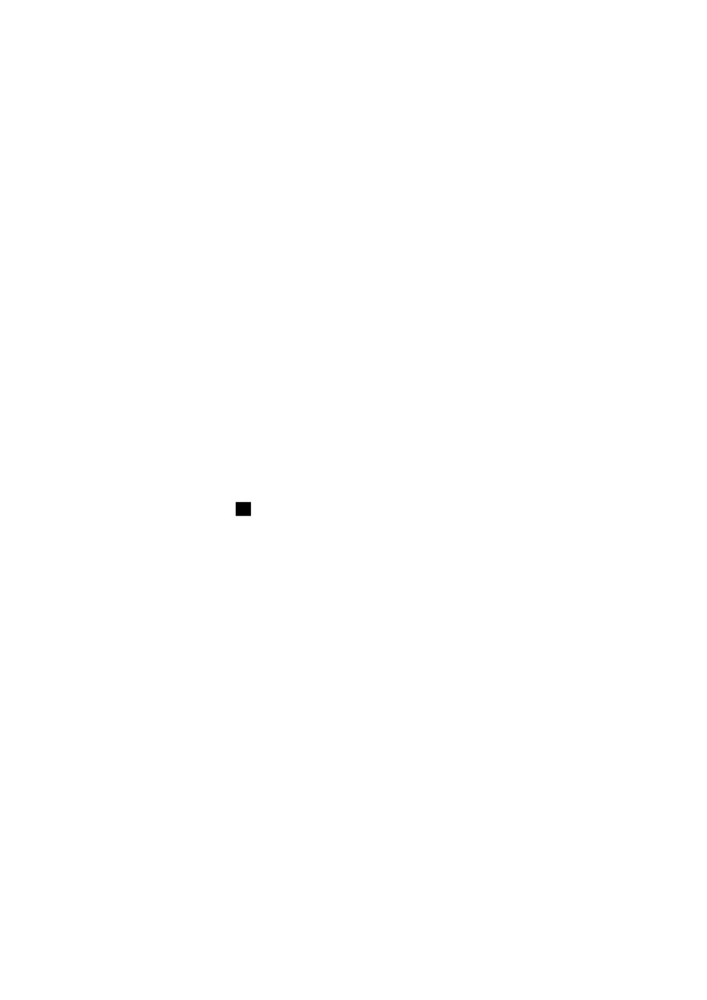
24 FLUENT ENGLISH
Multitasking. Working on several projects at the same time, usually of different
natures. Brad is great at multitasking, often doing filing, answering the phone, and
scheduling appointments for his boss at the same time.
Pending. Waiting, something not yet decided Jordan has a lot of pending projects;
he doesn't know if they'll be approved or not.
Perseverance. The ability to persist in an undertaking. Even though Natalie isn't the
least bit interested in Jack, his perseverance is amazing. He never gives up!
Prioritize. To organize or accomplish according to importance, to be able to do
projects in order of importance. Sometimes it helps a person's stress level if he or she
prioritizes everything that needs to be done and sets aside what is less important.
Proficient. Thoroughly capable in a skill. Do you feel proficient in Spanish yet, or are
you still learning?
Prospective. Potential or expected in the future. I'd like you to meet my prospective
assistant. I'd like to know what you think of him before I decide to hire him.
Recruit. A new comer to an organization. Someone persuaded or convinced to join
an organization. The army is always looking for new recruits.
Team player. Someone who works well with others. Most companies like to hire
team players because they know that these individuals will promote a good working
environment for everyone.
Work ethic. Responsible moral philosophy or code of conduct at work. Elbert was
fired because he didn't have a good work ethic. He always got to work late, and he
didn't take his duties seriously.
3D ENGLISH UNDER THE HOOD
TOPIC 1: Questions and Negatives in The Simple Past Tense
You reviewed the formation and use of the simple past tense in Lesson 1, where you compared it to
the present perfect tense. Now let's take a closer look at questions and negatives in the simple past
tense. Just like questions and negatives in the simple present tense, questions and negatives in the
past tense require a helping verb: did instead of do or does. Let's start with questions. Questions in
the simple past tense use did, following the same pattern as questions in the simple present tense,
did + main verb in base form + rest of sentence.
John writes well.
Does John write well?
John wrote well.
Did John write well?
Notice that both writes and wrote become write, the basic form of the verb, in questions. It's up to
does or did to show you whether the question is in the present or past tense.
Greg sailed to Block Island.
Did, Greg sail to Block Island?
Federica went to work by train.
Did Federica go to work by train ?
They saw a great movie.
Did they see a great movie?
Lesson 3: What Would You Like To Do?
25
To form a negative in the simple past tense, use the auxiliary verb did before the
main verb, and insert not between the two verbs. The pattern is: subject + did +
not (didn't) + main verb. Again, remember that the main verb is not in the past
tense, but reverts to its root or basic form just as in questions.
She talked to him.
She did not talk to him.
I went to the store.
I didn't go to the store.
Kenneth bought a new car.
Kenneth didn't buy a new car.
PRACTICE EXERCISE 1: Change the following statements into questions.
1. Paul studied in the library all last night.
2. Yuri had a beer with his meal.
3. Marilyn left her books at home.
4. Joe and Rich ran a mile and a half to the park.
5. The Jones family lived in Kentucky before moving to Arkansas.
Now make the following sentences negative.
6. We all visited Mother in the hospital last week.
7. They gave me their phone numbers.
8. Tomas withdrew his name from the contest.
9. The phone rang all day long.
10. A bee stung me after the ball game.
TOPIC 2: The Past Habitual: Used to, Didn't Use to and Would Always
Used to expresses something about the past that is no longer true, but was once a
habit or a regular, repeated action or activity. In this case, the verb use does not
mean the same as employ, but rather has a special meaning in the construction
used to.
I used to believe in ghosts when I was a kid.
Sandy used to jog along the river every morning.
I used to smoke cigarettes, but I quit three years ago.
The negative of used to follows the same rules as any negative past verb. The
auxiliary did comes after the subject and before the main verb and not is inserted
between did and the main verb (use). Use, the main verb, will be in the root form.
The formula is: subject + did (didn't) + not + use to + verb.
/ didn't use to live in L A. I moved when I was in my twenties.
He didn't use to drink coffee, but now he does all the time.
Questions with used to are formed in a similar way. Just put the auxiliary verb did
in the first position, then the subject, then the basic verb use, and finally the rest of
the sentence.
Did you use to live in LA. before you moved to Buffalo?
Did he use to drink so much coffee?
26 FLUENT ENGLISH
Another way to express the past habitual is to use would (always) plus the verb. This
construction means the same thing as used to, but it can only be used to express a
repeated action, and not a specific situation or condition in the past.
/ would always sleep with the light on when I was a kid. (Because I used to be afraid of
the dark.)
She would go to Prospect Park every day when she lived in Brooklyn. (Because she used
to live so close.)
PRACTICE EXERCISE 2: Fill in the blanks with the correct form of used to or
didn't use to plus the verb given.
1.
(live) I ________ with my aunt.
2.
(call) Marilyn _________ her boyfriend on the phone.
3.
(live)Tamara _________ with her boyfriend, but now she does.
4.
(be) Local elections _________ so boring, but now they're so boring that few
people vote.
5.
(be) The radio _________ as important as the television is today.
6.
(have) A long time ago, people ________ as much free time as they have today.
Now let's try using would (always.)
7.
(lie) When Candy was a child, she _________ in the grass and watch the clouds.
8.
(ask) I_________ for a doll for every birthday until I was about thirteen.
9.
(pick up) When Jacobo was in high school, he __________his friends and drive them
to school.
10. (eat) The Richardson children _________ cereal in front of the TV after school.
TOPIC 3: Making Polite Requests
Would is also used to make polite requests. Here are a few examples:
Would you get me a cup of coffee, please?
Would you please stop by my office at three tomorrow?
Of course, the simple command form in English is: Get me a cup of coffee or Stop by
my office at three tomorrow. But this can sound a bit abrupt or even rude to American
ears, so it's common to soften commands by using a polite request construction.
You can also make polite requests using could or can. These all have the same
meaning, but would is the most polite. Could and can imply more familiarity than
would. Finally, you can form polite requests with would you mind + verb + -ing, which
is also a less formal construction.
Could you get me a cup of coffee, please?
Can you pass me the salt and pepper?
Would you mind getting me a juice glass from the cupboard?
There's another common polite expression with would you mind that asks permission
rather than makes a request.
Would you mind if I came with you?
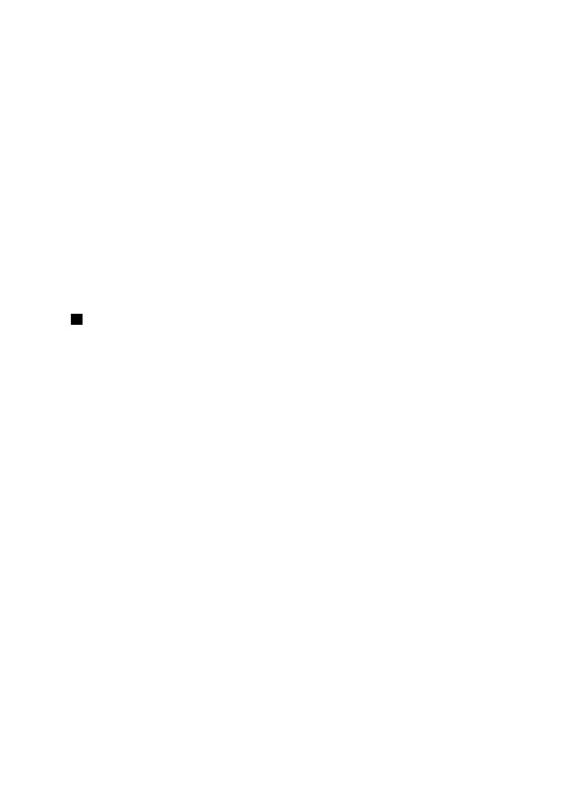
Lesson 3: What Would You Like To Do?
27
Would you mind if Brian borrowed your car?
Notice that the verb in the if clause is in the past tense: came and borrowed.
PRACTICE EXERCISE 3: Complete each of the following sentences
with the correct form of the verb given in parentheses.
1. Would you mind (shut) _______ the door?
2. Would you mind if I (close) ______ the window?
3. Could you (get) ______ me an aspirin?
4. Would you mind if I (take) ______ your dictionary for a moment?
5. Would you mind if I (drive) ______your new car?
6. Would you mind (let) _______me sit in on the class this afternoon?
7. Can you (fix) ______ me some tea?
8. Could you (take) ______ me to the doctor's office on Tuesday?
9. Would you mind (make) ______ dinner for us?
10. Would you (get) ______ me some bananas, please?
3E PHRASAL VERBS WITH WORK;
Work around.
To be flexible. To make adjustments to someone's schedule or needs. Karen,
don't worry about your kids. We can work around your schedule so that you'll be
home when they leave school.
Work at.
To put a lot of effort into something. To pay attention. The only reason I speak
French so well is that I work at it. It doesn't just come naturally.
Work for.
a) To put effort into achieving something. In the present day economy you really
have to work for the job you want, because it doesn't just come to you.
b) To be employed by a person or company. What company do you work for?
Work in.
a) To fit into a schedule, especially a busy schedule. Yes, Mr. Schmitz, it looks like we can
work you in at 1:30 today for an appointment.
b) To blend into or add gradually, especially using your hands. After you make the dough
you have to work in the other ingredients until everything is blended.
c) To add or introduce, especially a topic in a conversation. / wanted to talk about the
money Dan owed me, but I couldn't work it into the conversation.
Work on.
To focus on something, to do something attentively. He just may be up
all night working on this report.
Work out.
a) To work to resolve a problem, especially in cooperation with someone else. Ray
and Jolene are seeing a marriage counselor to try to work out their marital
problems.
28 FLUENT ENGLISH
b) To exercise, especially at a gym or health club. You need to work out at least a
half hour a day to maintain good health.
Work toward.
To make an effort to accomplish a long-term goal. Carl is working toward a
degree in medicine so that he can become a doctor.
Work up.
To work to gain energy or courage to do something. / didn't use to be able to
do any push-ups, but I've worked up to thirty at a time.
3F REAL ENGLISH
Put Your Nose to the Grindstone
What do you do? Has anyone ever asked you this question? It means, "what's your job or
profession?" Although work can be very fulfilling, it can also be stressful, so as Monday
approaches, Americans might say it's blue Monday, meaning it's a day to feel depressed
because you have to go back to work. After all, on Monday you have to put your nose to
the grindstone, or get down to business. You've got to stick it out for the entire week! After
your coffee break, or rest time, you might say to your coworkers let's get back to work. But
work also involves socializing and cooperation, so you might ask a coworker to give you a
hand or help you out on a project. Then when Friday finally comes around, everyone's
dressed down in casual clothes and ready for the weekend, so you might say TGIF! or
"Thank Cod it's Friday!"
3G BRING IT ALL TOGETHER
REVIEW EXERCISE 1: Vocabulary
Fill in the blanks with the following words: background, candidates, deadlines, detail
oriented, document, entrepreneurial spirit, headhunter, inception, interface, K, liaison,
multitask, pending, perseverance, prioritize, proficient, prospective, recruits, team player,
work ethic.
1. Jill has a great ______; she's always on time, is never dishonest, and completes
her projects flawlessly.
2. If you have legal problems with someone, it's always a good idea to ______
everything they say or do.
3. Nathan has never been able to make his _____ . He always turns in his projects a
few days late.
4.
Can you tell me a little about your _______ ? What jobs have you held?
5.
These concerns have existed since the _____ of this project.
6.
There were so many good _____ that it's difficult to choose the best one for
the job.
7.
Ralph is a real _____ . He always does his share of the work and cooperates with
his colleagues.
Lesson 3: What Would You Like To Do?
29
8. A person who works with money really needs to be___________ , since making even
small mistakes can cause serious problems.
9. I won't take a penny less than 350 __________ for the property!
10. High school students must take an exit exam before they graduate to demonstrate
that they are __________ in English and math.
11. Do you think a__________ could help me find a job in my field?
12. Sometimes an__________ seems to be inherited. Successful business people often
have parents who are also successful business people.
13. The Pope's__________ met with the Council of American Bishops to try to agree on a
plan.
14. It takes a lot of __________to solve the New York Times crossword puzzle.
15. Put all the files that can wait in the" ___________ "folder until we can resolve the
Nelson file.
16. Teachers usually have to do many jobs and often teach several subjects. Therefore an
ability to
__________is an important asset for a teacher to have.
17. Which of the new __________ was most eager to join the organization?
18. After Glenn graduated, he had to__________ all the things he had to accomplish
because there was so much to do.
19. Donna knows everyone in the company because it's her duty to____________with
all departments.
20. I have many _________ clients, but none that are definite,yet.
REVIEW EXERCISE 2: Questions and Negatives in the Simple Past Tense
Make the following statements negative.
1. I did the dishes last night.
2. Henry brought his books to class.
3. She exaggerated about how hard the test was.
4. Carlton showed me his homework.
5. Sonia took all of the cookies.
Now change the following past statements into questions.
6. The Kelton twins remembered there was a party last Friday night.
7. Jim developed his film at the mall.
8. They drove to Chicago instead of taking the train.
9. Jerry cut his finger.
10. Murphy used all of his sick days for the entire year.
REVIEW EXERCISE 3: The Past Habitual: Used to, Didn't Use to and Would
Always
Fill in the following sentences with used to or didn't use to.
1. Cindy ______________ drive a car, but she does now.
2. We _________________ use our imaginations a lot more when we were children.
3. The Nagles ______________ live across the street before they moved to Cincinnati.
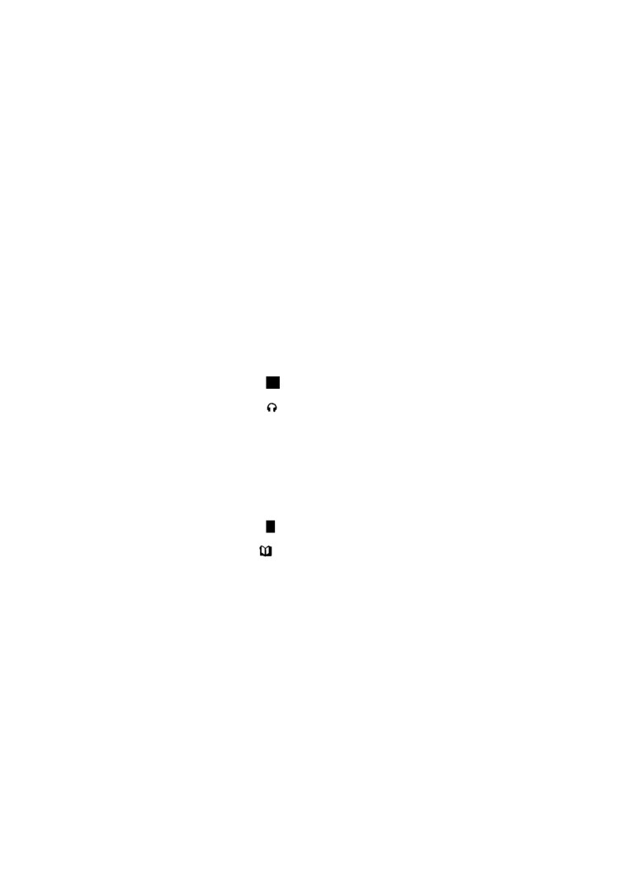
30 FLUENT ENGLISH
4. I ________________ like to chew gum, but I do now.
5. Jim and Debbie ________________ be married, but now they're divorced.
Fill in the following sentences with would always.
6.
(sleep) We _______________ in the car when we took long trips.
7.
(chase) The dog _________________ the lawn mower, but now she's too old.
8.
(buy) Kent _________________ old furniture and fix it up.
REVIEW EXERCISE 4: Phrasal Verbs with work
Place the correct phrasal verb with work in the blank space in each sentence.
1. Even though she was busy, the dentist was able to __________ me__________
yesterday afternoon.
2. If you want to excel at anything, you really have to ___________ it.
3. Paul is trying to get in shape, so he's been eating better, running every morning, and
several times a week.
4. Sharon is terribly busy because she's __________ her PhD.
5. Kika used to work here, but now she _________ a competitor.
6. Jenny goes to school and has a part-time job, and her boss is understanding enough
to _________ her class schedule.
3H LISTEN UP!
Listen to the recording for the Great Jobs! job line and answer the following questions.
1. How many jobs are listed?
2. Do you need experience to apply for all of the jobs?
3. What do you do to listen to the job listings again?
4. Which job would be best for a college student?
5. Which job doesn't involve working with the public?
6. Which position does the caller probably want?
3I WHY DO THEY DO THAT?
Shaking Hands
The handshake is very important in the American business world. When meeting with a
customer or prospective client, business people will always hold out their hands for a
handshake. This is often true in purely social situations as well — when two strangers
are introduced through a mutual friend, for example. Americans read a lot into the
quality of a handshake. If it is limp and weak, Americans may assume that the person is
weak-willed, insecure, or indecisive. For this reason, it is important to make your
handshake firm and strong, without being painful or aggressively firm, because this will
also send the wrong message! When shaking hands, grasp the other's hand and firmly
pump it up and down once or twice, and then let go. In situations where there is a closer
relationship the handshake may last for several seconds longer. Some
Lesson 3: What Would You Like To Do?
31
people even clasp the other person's forearm with their free hand. For a more tender
touch, the hand of one's friend may be held by both hands and gently shaken.
Lesson 3: Answer Key
Practice Exercise 1
1. Did Paul study... ?, 2. Did Yuri have... ?, 3. Did Marilyn leave... ?, 4. Did Joe and Rich run ... ?,
5. Did the Jones family live... ?, 6. didn't visit, 7. didn't give, 8. didn't withdraw, 9. didn't
ring, 10. didn't sting
Practice Exercise 2
used to live, 2. used to call, 3. didn't use to live, 4. didn't use to be, 5. used to be, 6. didn't use to
have, 7. would always lie, 8. would always ask, 9. would always pick up, 10. would always eat
Practice Exercise 3
1. shutting, 2. closed, 3. get,4. took, 5. drove, 6. letting, 7. fix, 8. take, 9. making, 10. get
Review Exercise 1
1. work ethic, 2. document, 3. deadlines, 4. background, 5. inception, 6. candidates,7, team
player, 8. detail oriented, 9. K, 10. proficient, 11. headhunter, 12. entrepreneurial spirit, 13.
liaison, 14. perseverance, 15. pending, 16. multitask, 17. recruits, 18. prioritize, 19. interface,
20. prospective
Review Exercise 2
1. didn't do, 2. didn't bring, 3. didn't exaggerate, 4. didn't show, 5. didn't take, 6. Did the Kelton
twins remember... ? 7. Did Jim develop... ? 8. Did they drive... ? 9. Did Jerry cut... ? 10.
Did Murphy use...?
Review Exercise 3
1. didn't use to, 2. used to, 3. used to, 4. didn't use to, 5. used to, 6. would always sleep, 7. would
always chase, 8. would always buy
Review Exercise 4
1. work... in, 2. work at it, 3. working out,4. working towards, 5. works for, 6. work around
Listen Up!
1.There are three jobs listed. 2. No, not for the health information clerk, 3. Press 9 to return to
the main menu. 4.The health information clerk, 5. Number 3, the graphic artist, 6. Number 3.
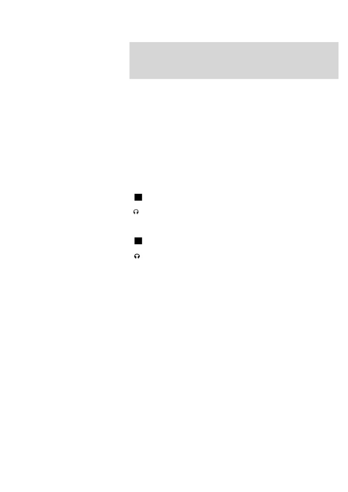
Lesson 4
Laughing All the Way to the Bank!
ARE YOU READY FOR THE LESSON?
In Lesson 4, Laughing All the Way to the Bank, you'll read about electronic banking, and
you'll listen to some information comparing banks and credit unions. You'll learn some
essential banking vocabulary and phrasal verbs with pay. But there's more. You'll also learn
about:
• The Simple Future and the Immediate Future
• The Present Continuous and Simple Present to
Express the Future
• The Simple Present Tense with Prepositions of Time
• Idioms about Money and Finance
But first, let's listen to the "y-vowel link" in Say It Clearly! Ready?
4A SAY IT CLEARLY!
Just like reductions, linking is an important part of natural-sounding English. Linking means
joining words or sounds together, and there are actually several different types of linking in
English. In this lesson, you'll practice what's called the "y-vowel link."
4B ENGLISH AT WORK
Read and listen to the following passage, which as you can guess is all about banking.
Not too long ago, U.S. banks were offering incentives to entice clients into using ATM
machines. No one wanted to use them though, because machines lack the warmth
and personal touch of a human teller. But today, of course, nearly everyone uses ATM
machines to get cash, deposit money, or transfer funds. And that's not the only
banking innovation. There are other banking services that are rapidly becoming more
and more useful to busy people who do not have the time to go to a bank in person
and wait in line to see a teller. Banking by phone allows you as an account holder to
check on your balances, make transfers, listen to transaction histories, and much
more, all by using your touch-tone phone. You can of course do all of this after the
bank has closed, including weekends. Online banking offers you the same services by
accessing an account online. E-banking, or electronic banking, can be done without
cash or checks. Your paycheck can be deposited automatically through direct deposit,
and your bills can be paid by transferring funds electronically out of your account. You
don't have to write a single check or mail a single statement. Managing your money
is simple, too. All you have to do is check your e-statement, daily if you like. Isn't it
hard to remember the time when you had to go to a bank and stand in line to do all
of this? So who needs cash? You've already got your debit card!
Lesson 4: Laughing All
the Way to the Bank
33
4C BU ILD YOUR VOCABULARY
Access Code. A code or personal identification number. / can't get
into my account
because I don't remember my access code.
ATM.
Automatic Teller Machine. A machine that dispenses money
and debits a bank
account. If you need to get cash or make a deposit, there's an ATM just down the block.
Assets. Property. Everything of value owned by an individual or organization. (Assets can be
used to secure loans
by ensuring repayment through their sale.) My uncle's assets
are
going
to be distributed equally among his heirs.
Balance. The total amount of money
in an account.
The amount due on a bill. It's
important to know the
balance of your checkbook each month.
Cleared Checks. Checks that have
gone through the banking system and been paid in full.
You can call your bank's phone express service to find out about your cleared checks.
Deposit. To put money into a bank account. Madeleine's savings account has grown
because she has deposited a lot of
money this month.
Dividends. Cash that is paid for the
use of money.
The sharing of
a profit. Money
that has
been
divided and distributed. Credit
unions pay a dividend into their members' checking and
savings accounts.
E-Statements. Bank
statements that
can be accessed online through one's bank. It's a good
idea to check your e-statement online at least once
a month.
Identity Theft. The use of someone
else's social security number, name, address,
phone
number, etc., to gain illegal access to credit.
Sam was a victim of identity theft;
someone opened a credit card account in his name
and made several online
purchases.
Interest. The charge
or payment for
borrowed money. The new interest rate on my
mortgage will only be
6.725 percent.
Member Number. A
person's account number for an organization
such as a credit union.
Be ready to give your
member number when you call your credit union.
Portfolio. Securities
or evidence of
ownership of stock, etc., held by an investor. Financial
planners always recommend that you diversify your
portfolio so that you have a variety of
ways
to earn money for your retirement.
Surcharge. Additional cost or tax. Be
prepared to pay a surcharge when you use an
ATM
machine from a bank
other than your own.
Transaction. A withdrawal, transfer
or deposit of funds. Check your e-statement to see
which
transactions have occurred this month.
Transfer. To move funds from one account to another. I'm transferring $1000 from
my
savings to my checking account.
Volatile Market. A stock market that
changes erratically; an unstable stock market.
Investors are worried because it's been such a volatile market.
34 FLUENT ENGLISH
Waive. To set aside, to choose not to apply a penalty, a right, etc. If you forget
to make a payment on time, some companies will waive the penalty if it is the
first occurrence.
Withdraw. To take funds from an account. You can withdraw money
at ATMs everywhere nowadays.
4D ENGLISH UNDER THE HOOD
TOPIC 1: Simple Future vs. Immediate Future
The simple future (will) and the immediate future (going to...) are the two most common
forms of the future tense.
We will eat later.
We are going to eat later.
It'll rain tomorrow.
It's going to rain tomorrow.
As you can see, these two tenses can be interchangeable. But in general, going to is
less emphatic and more neutral than will, especially for events in the near future.
I'm going to buy a new car. (I've decided to buy a new car, and I'll do it soon.)
/ will buy a new car. (More emphatic and insisting. A stronger intention.)
When you want to make a promise or describe an intention or willingness to do
something, use will + verb.
Don't worry. I promise I'll call you when I get home.
I'll be there, no doubt about it.
Also note that will is used for events or activities in the more-distant future.
Jane will retire in twenty years.
Someday the sun will burn out and explode.
*Note that shall is also used with verbs to indicate the future, but it's rare in American English.
PRACTICE EXERCISE 1: Choose be going to or will + verb. Note that in some
cases both answers are correct.
1. I promise I (come) ________________ to see you in the hospital.
2. Do you think it (rain) ___________________ ?
3. She's having a caesarian so the baby (be) ____________ on August 15th.
4. Teddy says he (study) ____________________medicine next fall.
5. You (stand) ________________ to the right of the bride.
6. Rob said that he (pass) _______________ his test no matter what.
7. Jean (apply) __________________ to several universities.
8. I think Jerome and Cindy (get) ___________ married within a year.
9. August (be) ____________________ extremely hot this year.
10. I'm driving to town later so I (get) ________________ some oranges.
Lesson 4: Laughing All the Way to the Bank
35
TOPIC 2: The Present Continuous and Simple Present to Express the Future
The present continuous tense, be + verb + ing, can also be used to express the future. It is
used mostly to talk about planned events. I'm going to school after work. We're studying in
the library at 10:00 tomorrow.
The simple present tense can be used to mean the future for scheduled or planned events
as well. Notice that these sentences usually include future-time words, such as dates.
Classes begin in September. We leave next Wednesday for Puerto Rico.
PRACTICE EXERCISE 2: Rewrite each of the following sentences using the tense
indicated in parentheses.
1. The budget committee will be in session all next week. (simple present)
2. I am going to take Spanish next semester. (present continuous)
3. Linda is going to start her new job next week. (simple present)
4. Tomorrow we will begin a new lesson. (simple present)
5. The shuttle bus will arrive at 8:45. (simple present)
6. We are going to have a party Friday night. (present continuous)
7. Jay is going to have band practice this afternoon. (simple present)
8. The bookstore will open at 10:00 tomorrow. (simple present)
9. Your favorite TV show will begin in a few minutes. (present continuous)
10.Anita will take the bus to work all next week. (present continuous)
TOPIC 3: The Simple Present Tense with Prepositions of Time
The simple present tense is used to express future events in clauses that begin with
conjunctions such as when, as soon as, before, after, unless, or until. Note that even though
these conjunctions introduce future events or action, the verbs after them are in the simple
present tense. The verbs in the main clause, though, can be in a future tense.
As soon as I get home, I'm going to make dinner.
I'll answer the phone when it rings.
PRACTICE EXERCISE 3: Use the simple future and the simple present in
each sentence.
1. I (call)__________ when I (get) __________ there.
2. I (finish) __________this report before I (fix) __________ dinner.
3. The meeting (begin) __________ after the boss (arrive) __________ .
4. She (be able) _________ not _________ to get to work unless she (take) ___________
the bus.
5. The fireworks (begin) _________ after the sun (go) __________ down.
6. Barry (do)__________ not __________ anything about it unless you (ask) __________
him to.
7. The flowers (open) _________ after the clouds (clear) __________ away.
36 FLUENT ENGLISH
8. The VCR (record) _________ only __________a TV show after you (program)
9. The trees are so dry that they (catch) __________ on fire when lightning (strike)
_________ them.
10. Your attitude (change) __________ after you (learn) __________ the truth.
4E PHRASAL VERBS WITH PAY
Pay back.
a) To pay someone money that is owed. Don't I always pay you back when I borrow
money from you?
b) To get revenge for something. Hannah finally paid her brother back for a joke he'd
played on her ten years earlier.
Pay down.
a) To pay money in order to decrease a debt. It takes a long time to pay down the interest
on credit card debt.
b) To pay a portion of the total price at the time of a purchase and to agree to pay the rest
in installments. (Also: put down.) We'll have to pay $1500 down on a new car and then
make payments for five years.
Pay off.
a) To pay a debt in full. Tom paid off his student loans after 15 years.
b) To bribe someone. Mr. Fallows is paying off the building inspectors so they overlook the
violations they find.
Pay out.
To distribute money or wages. Your insurance plan will pay out if you are injured on the
job.
Pay up.
To pay money owed, as for a bet or a bill. Ok. you lost. Pay up!
4F REAL ENGLISH
In the Black
During the dot.com era, stocks skyrocketed in a bull market, making a lot of people
filthy rich. Money making was so easy and people had so much dough that they were
laughing all the way to the bank! But a short time later, the bubble burst and the bull
market became a bear market. Companies were priced right out of the market and
began to go bust. Suddenly a lot of people were down on their luck because their
companies went broke and couldn't afford to keep them on. It got so bad that some
people could only get jobs where they were paid under the table so that their
employers didn't have to pay the extra bucks in taxes. Everyone was in the red.
Lesson 4: Laughing All the Way to the Bank
37
4G BRING IT ALL TOGETHER
REVIEW 1: Vocabulary
Place the correct vocabulary word in each space. Use each of the following words
once:
access code, ATM, assets, balance, cleared checks, deposits, dividends, e-statement,
identity theft, interest, member number, portfolio, surcharge, transactions, transfer,
volatile market, waive, withdrawal.
1. The__________ on a home loan is the largest part of a mortgage payment for
many years.
2. We made a $750 _________ for our vacation from our savings account.
3. Jack was a victim of _________ ; someone else used his social security number.
4. If you want to know which checks have been cashed, go online to check your
.It
will show you all your______________________ .
5. Joyce always forgets her __________and can't get into her account.
6. Jerry had to list his
_________ when he applied for a loan.
7. Stockholders get very nervous during a __________ because things are so
unpredictable and a lot of money can be lost.
8. You get a _________ when you join a credit union.
9. Could you please __________ $500 from my savings account to my son's
checking account?
10.
_________ paid into your account each month are often small, but they add up
overtime.
11. If you need cash, let's stop at an__________ .
12. Tell me the _________ on your credit card statement.
13. Kerry never goes to the bank to cash her checks because she has automatic
14. A judge will often __________ the fine if you go to court for your first traffic ticket.
15. The bill was much more than we expected because there was a___________ .
16. I checked on my most recent _________ to see if the check had cleared.
17. Would you like to add a utility stock to your __________ ?
REVIEW 2: Simple Future vs. Immediate Future
Fill in the blanks with the simple future or immediate future form of the verb in
parentheses.
1. Jim promises he (take) _________ you home.
2. Alex (have) _________ a dinner party this Friday.
3. You definitely (need) __________ a textbook for this class.
4. We (charge) _________ a $3.50 late fee each day.
5. Someone (get) _________ hurt if you're not careful.
6. The play (begin) _________ on time, even if you're late.
38 FLUENT ENGLISH
7.
The bank (not cash) _________ your check if it isn't signed and endorsed.
8.
Who (go) __________to the store for me?
REVIEW 3: The Present Continuous and Simple Present to Express the Future
Fill in the blanks in the following sentences with both the present continuous and the
simple present tenses to express the future.
1.
The plane (leave) _________ in ten minutes.
2.
The meeting (start) __________ at 10:30.
3.
The new bank branch (have) _________ its grand opening next month.
4.
The movie (begin) __________ very soon.
5.
Vincent's vacation (end) __________ on Friday.
6.
We (go) _________ to Mexico next month.
7.
The Logans (arrive) __________on March 13.
8.
Jennifer and Tom (return) __________ from their honeymoon on Sunday.
REVIEW 4: The Simple Present Tense with Prepositions of Time
Fill in the blanks with either the simple present or future tense.
1.
When you (understand) __________ it, it (be) __________ easy.
2.
Katy (try on) _________ the dress tomorrow, before she (decide) __________ to buy it.
3.
You (not be able) _________ to go to the movies unless you (clean) __________
your room.
4.
There (be) _________ a new business here when you (come) __________ back.
5.
As soon as David (arrive) _________ , we (leave) _________ .
6.
It (be)__________ 5:00 before anything (get)___________ done.
7.
Unless you (tell) _________ me, I (not know) __________ how you feel.
8.
The birds (move)__________ as soon as you (get) _________ close.
REVIEW 5: Phrasal Verbs with pay
Place the correct phrasal verb with pay in the blank space in each sentence.
1.
The land developers __________a few local politicians so they would be able to build
on the old farmland.
2.
You can _________ your credit cards a lot faster if you double your monthly payments.
3.
I'll
_________ you _________ on Friday when I get paid.
4.
Doug swore that he would ___________ John _________ for betraying his friendship.
5.
I want the money you owe me. You'd better __________I
6.
You'll save a lot of money if you __________ your car early.
7.
After Jason scratched his neighbor's car with his bike, he __________ them _________
for the damages by doing work around their house.
8.
When she was hurt in an accident, Natalie's insurance policy ___________ thousands
of dollars.
Lesson 4: Laughing All the Way to the Bank
39
4H LISTEN UP!
Listen to the article on credit unions and banks, and then respond to the following
statements with true, false, or / don't know.
1. Credit unions do not have checking account services.
2. You can become a member of a credit union.
3. Banks pay dividends on both checking and savings accounts.
4. It is usually cheaper to use a bank than to use a credit union.
5. Credit unions'ATMs are usually free to members.
6. A credit union member can make deposits at any ATM.
4I WHY DO THEY DO THAT?
Debt
If you drive down any street in a typical middle-class American neighborhood on
a Saturday afternoon, you're likely to see at least two cars in every driveway.
You're also likely to see people landscaping their yards, or painting, repairing, or
otherwise upgrading their homes. Inside, you're likely to find two or more TVs, a
phone in each bedroom, computers, video games, DVD players, sound systems,
all sorts of home appliances, and many other pieces of material wealth that so
many Americans seem unable to do without. All of these consumer products
come with a price tag, of course, and if you have a hard time imagining how most
Americans can afford so many luxury items, the answer is technically that many
of them can't — many people buy on credit. Americans are very comfortable
buying on credit, which means that Americans are also comfortable living with
debt. Credit card payments are a large portion of many Americans' monthly
expenses, but credit card debt is of course just one kind of debt. There are also
mortgages, car loans, student loans... and the list can go on. For some people,
debt is just an expected part of life in this country, along with all of the stress and
other negative effects being in debt can cause.
Lesson 4: Answer Key
Practice Exercise 1
1. I'll come, 2. will rain/ is going to rain, 3. will be born,4. is going to study/will study, 5. are
going to stand/will stand, 6. will pass, 7. is going to apply/will apply, 8. are going to get/will get, 9.
is going to/will be to. I'll get
Practice Exercise 2
1. is, 2. am taking, 3. starts, 4. begin, 5. arrives, 6. are having, 7. has 8. opens 9. is beginning,
10. is taking
Practice Exercise 3
1.will call/get, 2. will finish/fix, 3. will begin/arrives, 4. will be able/takes, 5. will begin/goes,
6. will do/ask, 7. will open/clear, 8. will/record/program, 9. will catch/strikes, 10. will
change/learn
Review 1
1. interest, 2. withdrawal, 3. identity theft, 4. e-statement, cleared checks, 5. access code,
6. assets, 7. volatile market, 8. member number, 9. transfer, 10. dividends, 11. ATM, 12. balance, 13.
deposits, 14. waive, 15. surcharge, 16. transactions, 17. portfolio
Review 2
1. will take, 2. is going to have, 3. will need, 4. will charge, 5. is going to get/will get, 6. will
begin, 7. won't cash, 8. is going to go
Review 3
1. is leaving/leaves, 2. is starting/starts, 3. is having/has, 4. is beginning/begins, 5. is
ending/ends, 6. are going/go, 7. are arriving/arrive, 8. are returning/return
40 FLUENT ENGLISH
Review 4
1. understand/will be, 2. will try on/decides, 3. won't be able/clean, 4. will be/come,
5. arrives/will leave, 6. will be/gets, 7. tell/won't know, 8. will move/get
Review 5
1.paid off, 2. pay down/pay off, 3. pay... back, 4. pay... back, 5. pay up, 6. pay off, 7. pay...
back,
8. paid out
Listen Up!
1. False 2. True 3. False 4. False 5. True 6.1 don't know
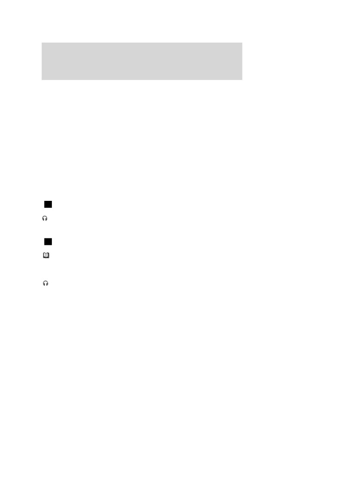
Lesson 5
The Customer's Always Right!
ARE YOU READY FOR THE LESSON?
In Lesson 5, The Customer's Always Right!, you'll read a dialogue about returning items
to a store, and later you'll listen to what happens to someone who's waiting for a home
delivery. In this lesson you'll also learn some important vocabulary and phrasal verbs for
shopping. But there's more. You'll also focus on:
• Prepositions of Time, Motion, and Location
• Adjectives Followed by Prepositions
• Verbs Followed by Prepositions
• Phrasal Verbs for Shopping
• American Business Culture
But let's begin by listening to the "w-vowel link" in Say It Clearly! Ready?
5A SAY IT CLEARLY!
In this lesson you'll practice another kind of link, the "w-vowel link."Turn on your CD
now.
5B ENGLISH AT WORK
Dialogue: Did You Need Some Help?
Tracy has recently bought a new dining set at a local department store, but when it was
delivered she noticed some scratches on the tabletop. She's very unhappy because she
paid a lot of money for the table and would like to exchange it.
Clerk Did you need some help?
Tracy Yes. I bought a dining room table and chairs here two weeks ago. It was
delivered yesterday, but there are two big gashes on the surface. I've
bought furniture from you before and I've always been satisfied with
the quality and the service. But now I just don't know.
Clerk Oh, I'm sorry ma'am. But did you notice whether the scratches were
there when the table arrived?
Tracy Um, actually, no. I wasn't home when they brought them in.
Clerk Who signed for the delivery?
Tracy My husband. But he's not very observant. He wouldn't have noticed.
But I saw the gashes right away.
Clerk Well, ma'am, we have a policy. That's why you sign for the delivery. You
are acknowledging that the product is delivered in good condition.
Tracy So you're saying you can't do anything?
Clerk I'm afraid we can't.
42 FLUENT ENGLISH
Tracy
Well, look. I'm really disappointed about this. I'm a good customer. I've
bought several pieces of furniture from you before ______Can I speak to
the manager?
Clerk
Sure ______One minute.
Manager
Hello, I'm Bob Mack, the department manager. What can I do for you?
Tracy
Hi. I'm Tracy Bell. Well, as I was saying to the clerk, I'm a regular
customer. I've bought furniture from you before, and I've always been
satisfied with the quality of your products and the service. But I bought a
table from you that was delivered yesterday. My husband signed for it, but
he never notices anything, and when I got home yesterday, I saw two big
gashes on the tabletop.
Manager No problem, ma'am. We can send out another one and pick up the
damaged one. Let's see. Let me check the delivery schedule. OK, we can
deliver your replacement table next week, next Friday. How's that? Are the
chairs OK?
Tracy
Oh, thank you so much. I really appreciate this! Yes, the chairs are fine.
Manager
Good, so we'll just send out a new table ______ We really appreciate your
business, Ms. Bell. I'm very sorry for the inconvenience. Just have that table
ready for pickup on Friday the 21st between 9:00 and noon, and we'll bring
the new one at the same time.
Tracy
Thanks. It'll be in my dining room waiting for you.
5C BUILD YOUR VOCABULARY
Let's take a look at some vocabulary that will come in handy for shopping.
Brand name. A product produced by a major company and carrying that company's
name on its label. Many people believe that brand name products are better than ones
produced by companies they aren't familiar with.
Bulk. Products that can be bought in very large quantities. Health food stores usually
sells grains, nuts, dried fruit and cereals in bulk.
Clearance. Products that are no longer in style or in demand and that are sold at the
lowest possible price to be cleared from the store. If you wait long enough,you can
sometimes buy exactly what you want at clearance prices.
Closeout. The disposal of a product by selling it at the lowest possible price. The store
will not stock any more of that product. Look at this beautiful jacket I just bought on
closeout!
Co-op. A store that sells products at a discounted price because the customers are also
the owners. Members pay an annual fee and buy products at a discount. If you want to
join a food co-op you'll have to pay a membership fee, but you'll spend much less on food
than you would elsewhere.
Coupon. A piece of paper found in magazines or newspapers that offers a discount on a
product. / got a 25 percent discount on these cans of soup because I had a coupon.
Discount card. A card offered by some stores or other businesses to certain groups, such
as students or senior citizens, for special discounts on products. If you're a student,you
can get a discount card at the theater.
Lesson 5: The Customer's Always Right!
43
Generic products. Products that do not have a brand name and that are not advertised.
The generic tomato sauce is much cheaper than the brand name product.
Gift certificate. A piece of paper from a specific store that's worth a certain value and can
be used to make a purchase for that amount in the store. Since we don't know what Isabel
wants, let's just get her a gift certificate so she can buy what she prefers.
Grandopening. A celebration at the opening of a store, often with special gifts and/or food
for the customers. Did you see the balloons at the grandopening for the new car
dealership?
Layaway. A way to purchase a product by paying a portion of its price as a deposit, and then
making payments until the entire price is paid in full. The store holds the product until it is
paid for in full. Yoko wanted to buy an expensive coat, but she didn't have enough money,
so she put it on layaway for two months.
Limited quantities. Products that are available only in small numbers, and usually sold
at a higher price for that reason. The silkscreen artist knew that she should produce and
sell only a limited quantity of the signed paintings.
Money-back guarantee. The option to return a product for a refund during a certain period
of time. Jolene felt safe buying the diet pills because they had a money-back guarantee.
Promotion. A product selected to have special advertisement, with samples or
discount coupons made available to potential buyers. The best time to shop is the
weekend, when all the stores are giving out promotions to advertise their products.
Rebate. A product discount in the form of money returned from the company after a rebate
form is filled out and mailed in to that company. Sal paid $120 for his cell phone, but he got
a rebate for $70 after signing a service contract.
Special purchase. A product bought and made available specifically for a sale, usually
with a considerable discount. These computers are on sale for $499 this week because
they were a special purchase.
Stock. Products available in a store, including products on the shelves and in the
storeroom. The store's entire stock was destroyed in the fire.
In stock. Currently available for purchase. Just a minute, I'll check to see if we have that
color in stock for you.
Storewide. Throughout the entire store, in all departments. The clearance sale was
storewide, so we got all kinds of different products on sale in various departments.
5D ENGLISH UNDER THE HOOD
TOPIC 1: Prepositions of Time, Motion, and Location
Here are some common prepositions, listed alphabetically:
about, above, across, across from, after, against, along, among, around, as, at, before,
behind, below, beneath, beside, besides, between, beyond, by, down, during, for, from, in,
inside, into, like, near, of, off, off of, on, onto, opposite, out, out of, outside, over, since, through,
to, toward, towards, under, underneath, until, up, upon, with, within, without.
44 FLUENT ENGLISH
Prepositions can show time, location, motion, or some other type of relationship.
Time:
We leave in one hour.
The Robertsons stayed in Mexico for two weeks.
Have you been waiting since 1:00?
Location:
Jeanne lives in France.
The dog is sleeping under the table.
The bank is across from the library, between the post office and the police station.
Motion:
We are going to the movies tonight.
The students are all returning from spring break.
The plane is descending toward the airport.
Other Relationships:
There's a letter for you.
Are you for or against gun control?
The director is speaking with a candidate/or the new position.
Often, common prepositions can fall into more than one category.
The new computer is in my office. (location)
The students went in classroom, (motion)
I'm leaving in five minutes. (time)
PRACTICE EXERCISE 1: Fill in the sentences with prepositions from the list above:
1.
The ball rolled _________ the desk __________ the living room.
2.
Jeremy traveled__________ London__________ Paris _________ one week.
3.
The ball fell _________ the hole.
4.
Sit
_________ me so I can see you.
5.
Can you stay and watch Jamie __________I get back?
6.
Go _________ that door and turn to your left.
7.
Wow! We haven't seen each other __________ high school.
8.
I think the note I left you is
__________ the newspaper. I see the corner sticking out.
9.
We'd better go _________ the house. It's raining.
10. I think the book you want is ___________ the dictionary and the atlas.
TOPIC 2: Adjectives Followed by Prepositions
Some adjectives in English are followed by certain prepositions. Sometimes there's a
logical connection between the adjective and the preposition, but usually you simply
Lesson 5: The Customer's Always Right!
45
have to memorize which prepositions are used with which adjectives. Here is a list of some
common adjectives and the prepositions that often follow them.
accused of, afraid of amazed at, angry at/with, bored with, capable of, concerned about,
devoted to, disappointed in, disgusted by, divorced from, excited about, exhausted from,
familiar with,frightened at/by, interested in, jealous of, known for, made of, married to,
nervous about, pleased with, polite to, prepared for, proud of, qualified for, related to,
responsible for, saddened by, satisfied with, sorry for/about, tired of upset with, worried
about.
I am tired of cooking every night.
He is frustrated by/with his job.
She is surprised at/by the intensity of her emotions.
We are bored with/by each other.
They are interested in buying a new car.
Turn to the appendix for a longer list of common adjectives followed by prepositions.
PRACTICE EXERCISE 2: Complete each sentence with the correct preposition.
1.
Are you bored _________this town?
2.
Sarah is jealous_________ her younger sister.
3.
Jason's mother is proud _________ his good grades!
4.
This blouse is made ________ cotton.
5.
I hope she's capable _________ reaching her goal.
6.
How long have you been married __________ your husband?
7.
Don't be nervous _________ your date tonight!
8.
I'm sorry__________ hurting your feelings.
9.
Susan is related _________the mayor.
10. I'm worried __________ paying the bills.
TOPIC 3: Verbs Followed by Prepositions
Some verbs in English are followed by certain prepositions. Again, you usually have to
memorize which preposition to use with which verb. Here is a list of some of the more
common ones.
agree with, apologize for, apply to/for, approve of, argue with/about, believe in, blame for,
care about, compare to, complain about, contribute to, cover with, decide (up)on, depend
(up)on, dream of/about, escape from, excuse for, feel like, forget about, hope for, insist (up)
on, object to, prevent from, protect from, respond to, stop from, subscribe to, take care of,
thank for, vote for
I don't always agree with the president.
Does anyone object to my driving tonight?
Whatever you do, don't forget about us.
Turn to the appendix for a longer list.
46 FLUENT ENGLISH
PRACTICE EXERCISE 3: Fill in the sentences with the correct preposition.
1. Parents try to protect their children ______ danger.
2. You need to insist ______ getting a pay raise.
3. Most homeowners subscribe _______a newspaper.
4. Don't try to blame me _______ your mistakes.
5. People always complain ______ the noise in this building.
6. I'd like to apologize_______ bumping into you.
7. It's nice to dream _______ winning the lottery.
8. No one objected _______ the suggestion I made.
9. Vote ________change if you want to improve things around here.
10. A lot of politicians say they care _________ the environment.
5E PHRASAL VERBS FOR SHOPPING
Buy out.
To buy all of an available product. The new computer game is so popular that the
customers buy it out as soon as it goes on the shelf.
Buy up.
To purchase a lot of a product. Buy up as many boxes of paper towels as you can
when you go to the discount warehouse.
Give away.
a)
To give products as a gift. The cosmetics counter is giving away samples of
perfume today.
b)
To give something you no longer use to another person or organization. I gave my old
word processor away to a friend who needed one.
c)
To tell something unintentionally, such as a secret or an answer. Benny gave my secret
away to Debbie, and now she knows how I feel.
Sell out.
a)
To sell all of a product before a new order comes in. Wed better get to the store before
they sell out of that new computer game.
b)
To switch loyalties or act against a principle; to betray trust. Did you hear that Barry
sold out to another team because they offered to pay him twice as much as he's getting
now?
Trade in.
To turn a product in to get a discount on a newer or more expensive model. Most car
dealerships will let you trade in your old car for a new model.
Try on.
To put clothes on in a store to see if they fit and look good before buying them. Gina
tried on the dress in the store before she bought it.
Try out.
To use a product before deciding to purchase it. You are welcome to try out the new
computer game right here in the store.
Lesson 5: The Customer's Always
47
5F REAL ENGLISH
Shop Till You Drop)
You know? I'm a confirmed shopaholic. I shop at bargain basements and buy clothes off
the bargain rack because I can save so much money. Wow! Look at this dress! Only $35!
It's a steal. I just have to have it. It's so cheap.
I usually try to stay out of the high-end departments though. If I see something I like, / want
it in the worst way. I can't resist buying it even though I think the prices they charge are
highway robbery.
Some days I wake up in the morning and just have to go on a shopping spree. I even love
to go to vintage stores. They have really cute clothes from the '60s, and even earlier.
Sometimes I even shop at secondhand stores. In fact, the other day I was in one and I saw
a dress I'd given away last month. It was only 50 cents! So I bought it back. It was so
cheap, they were practically giving it away\ What a deal!
5G BRING IT ALL TOGETHER
REVIEW EXERCISE 1: Vocabulary
Place the correct vocabulary word in each space. Use each of the following words once:
brand-name, bulk, clearance, co-op, coupon, discount card, generic, gift certificate, grand
opening, layaway, limited quantities, money-back guarantee, promotion, rebate, special
purchase, stock, in stock, storewide.
1. Can I put this dress on ___________ and pick it up in two weeks?
2. Did you see the signs for the ______ of that new store on Broadway?
3. It's cheaper to buy products in _______ , but you need to have storage space.
4. _ If you're a student, you should get a_________ , and your ticket will be cheaper.
5. We're having a big sale on Saturday, so we need to have enough ________________of the
most popular items.
6.
Department stores usually put their clothes on _______________when they are out of
season. That way they sell them off faster.
7.
If you want to save money, you can buy ________ products instead of brand-name.
8. I'm more comfortable buying _________ products that I'm familiar with.
9. Often companies will sell popular products to stores in _______________ so they can keep
the price high and ensure good sales.
10. Did you know there was a great _________ on campus? If you're a member you pay very little.
11. When you order products through the mail, it's important to be sure that they have a __________ .
That way you will not lose your money if you don't like the product once you see it.
12. A customer wanted to buy four boxes of a particular kind of tea, but the store only
had three ________ .
48 FLUENT ENGLISH
13. When I bought my computer, I was supposed to get a __________ . I sent them the
form, the receipt and the UPC label, but I still haven't gotten the money.
14. We just got a whole shipment of these jackets. They were a___________ for the
sale tomorrow.
15. This box of cereal is 15 percent off if you have a _________ .
16. There's a_________ sale this weekend, with discounts in every department.
17. Ray has very unique tastes in clothes, so we got him a__________ for his birthday.
18. The bookstore is having a _________ for the new book by my favorite author. She'll be
doing a book signing on Friday.
REVIEW EXERCISE 2: Prepositions
Fill in the blanks using the following prepositions once: back, across, inside, in, through,
along, up, down.
1.
How about taking a trip___________ the Southwest?
2.
You could start somewhere __________ Northern California.
3.
Then you could drive _________ into the mountains to King's Canyon National Park
to see the giant sequoias.
4.
After that, drive __________ to Las Vegas to catch a few shows.
5.
You could travel _________ Arizona to the Grand Canyon.
6.
Try riding a mule__________ the rim of the canyon to get to the bottom.
7.
Then, you could goto New Mexico and see what it's like ___________ Carlsbad Caverns.
8.
Then you could head _________ to California for a trip to Disneyland.
REVIEW EXERCISE 3: Adjectives Followed by Prepositions
Fill in the sentences with the correct preposition.
1.
I'm concerned __________ the test I have to take tomorrow.
2.
Why do you have to be angry _________ me about this?
3.
Jim isn't afraid _________ anyone.
4.
Let me know if you're interested___________going to a movie this weekend.
5.
It's important to be polite __________ everyone.
6.
Janie's really tired__________ being told what to do.
7.
We're all responsible _________ one another.
8.
Peter Sellers is known _________ his role as Inspector Clouseau.
REVIEW EXERCISE 4: Verbs Followed by Prepositions
Fill in the sentences with the correct preposition.
1.
Don't blame me __________someone else's mistake!
2.
Does any body feel _________ going in the pool?
3.
Helen only applied __________ one company and got a great job.
4.
Let's cover this wall _________ wallpaper.
5.
You don't need to apologize__________ anything. It doesn't bother me at all.
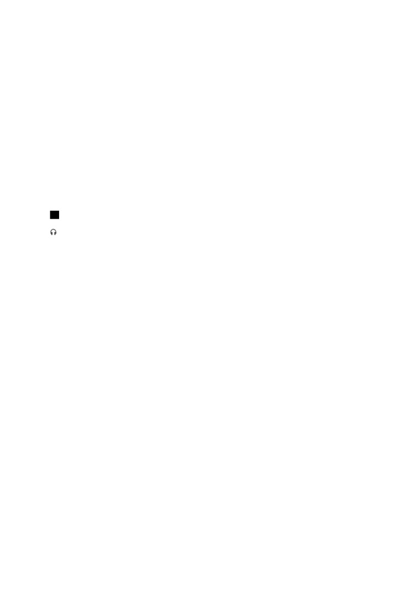
Lesson 5: The Customer's Always Right!
49
6. What time will you arrive ___________ Atlanta?
7. I think a lot of people believe
_________ ghosts.
8. Bart doesn't want to depend __________ his parents once he graduates from college.
REVIEW EXERCISE 5: Phrasal Verbs
Fill in the blanks of the following sentences with: bought out, gave away, sold out, trade
in, try on, try out.
1.
I'm going to__________ my old car for a newer model.
2. Would you like to __________ the new model before you buy it?
3. That book is so popular that customers __________ every single copy in the bookstore.
4. We cleaned out our closets and __________all the things we don't need.
5.
Here's a size 10. Go ________ it __________ and see how it fits.
6.
I didn't make it to the store on time, and they __________ of all the shirts that I wanted.
5H LISTEN UP!
Now turn on your CD to practice listening comprehension. Listen to the story and then
answer the following questions.
1. Why did Tracy get up early?
a) She wanted to go to the new department store in Southcrest.
b) She wanted to be ready for her new table.
c) She had to go to the dentist.
2.
What time did Lucy call Tracy?
a)
10:05
b)
2:00
c) 2:15
3.
How many phone calls did Tracy get that day?
4.
a) 1
b) 2
c) 3
5.
Why did Tracy think it was important for her to be at home when the new table
arrived?
a) She was excited about getting her new table.
b) Her husband wouldn't be home.
c) She wanted to be sure the table was in good condition.
6. What time will the table arrive?
a) Around 2:00 b) At 11:45
c) Between 9:00 and noon.
7. Where will Tracy be when the table arrives?
a) At home
b) At the dentist
50 FLUENT ENGLISH
5I WHY DO THEY DO THAT?
Service with a Smile
You may have noticed that store clerks in the U.S. are generally friendly and helpful.
American businesses encourage "service with a smile," and that is exactly what
customers expect from the businesses they patronize. In fact, a person's job may depend
on his or her ability to interact with customers in a friendly and respectful way, always
trying to satisfy a customer's needs. For example, if a customer complains about a
product, it is often the store clerk's job to replace the product or refund the cost of the
product with no questions asked. Naturally, a customer may be irate when returning a
product, but the clerk must remain courteous at all times. If a customer complains about
the service received, the responsible clerk may be informed about the complaint and
warned to treat the customers with more respect in the future, or else... To American
businesses, good service means accepting a customer's complaint with a smile, and
maintaining good customer relations is more important than being right, because this is
the best way to develop a solid and loyal customer base. This attitude explains the
common saying, the customer is always right.
Lesson 5: Answer Key
Practice Exercise 1
1. under, in. 2. from, to, in, 3. down/into, 4. opposite/across from, 5. until. 6. through/out,7.
since,
8. under/underneath, 9. in/inside/into, 10. between
Practice Exercise 2
1. with/by, 2. of, 3. of, 4. of, 5. of, 6. to, 7 about, 8. for/about, 9. to, 10. about
Practice Exercise 3
1. from, 2. (up)on, 3. to, 4. for, 5. about, 6. for,7. of/about, 8. to, 9.for, 10. about
Review Exercise 1
1. layaway, 2. grand opening, 3. bulk, 4. discount card, 5. stock, 6. clearance, 7. generic, 8. brand
name, 9. limited quantities, 10. co-op, 11. money-back guarantee, 12. in stock, 13. rebate,
14. special purchase, 15. coupon, 16. storewide, 17. gift certificate, 18. promotion
Review Exercise 2
1. across, 2. in, 3. up, 4. down, 5. through, 6. along, 7. inside, 8. back
Review Exercise 3
1. about, 2. with/at, 3. of, 4. in, 5. to, 6. of, 7. for, 8. for
Review Exercise 4
1. for, 2. like, 3. to, 4. with, 5. for, 6. in, 7. in, 8. on
Review Exercise 5
1. trade in, 2. try out, 3. bought out, 4. gave away, 5. try... on, 6. sold out
Listen Up!
1. b, 2. a, 3. b, 4. c, 5. a, 6. b
Lesson
6
I Have Got to Have a New
Car!
ARE
YOU READY FOR THE LESSON?
If you've been thinking about how to
get around in the United States, Lesson 6: I Have
Cot to
Have a New Car!, might give
you some tips.
In this lesson, you'll listen in as
two
friends discuss a new
car that one of them has just
bought. You'll learn some useful
vocabulary and idioms for cars and
driving, and you'll also listen to
a car commercial in
Listen
Up! Here are a
few more things you will learn
in Lesson 6:
• Modals of Necessity: must, have to, and have got to
• Modals of Advisability: should, ought to, and had
better
• Negative Modals
• Phrasal Verbs with come
We'll
finish off the lesson with some
important insights into American car culture—
such
as what cars represent to Americans. But let's begin the lesson by
practicing
pronunciation in Say
It Clearly! Ready?
6A SAY
IT CLEARLY!
In this lesson you'll practice the consonant-vowel link. Turn on your CD.
6B ENGLISH AT WORK
DIALOGUE: Let's Go
Look at My New Car.
Alida
and Suzette have known each
other for years, and they keep
in touch by getting
together once every few months for
coffee. Let's listen in as they're
about to say good-
bye.
Alida
Well, it was great to catch up with you,
but I'd better
go. I have to pick my
mom up and drive her to
a doctor's appointment. I'd
better leave now if I
want to avoid the traffic.
Suzette Yeah,
me too. It'll be
bumper-to-bumper
soon. Oh,
and say hello to your mom. I
haven't seen
her in ages. How is
she doing,
by the way? Alida She's doing really well
for her age. She still
walks every day, but she
doesn't drive much anymore. Which reminds me, you haven't seen
my
new car.
Suzette You got a
new car?
Alida
Yeah. Two
weeks ago. I just love it!
Suzette Where is it?
Alida
It's parked
over there. C'mon, let's take a quick look
before we leave.
Suzette Which one
is it?
Alida
It's the little gray EXS, parked next to the SUV.
Suzette Oh, it's beautiful. I love it. Look! It even has a spoiler. Is it an automatic?
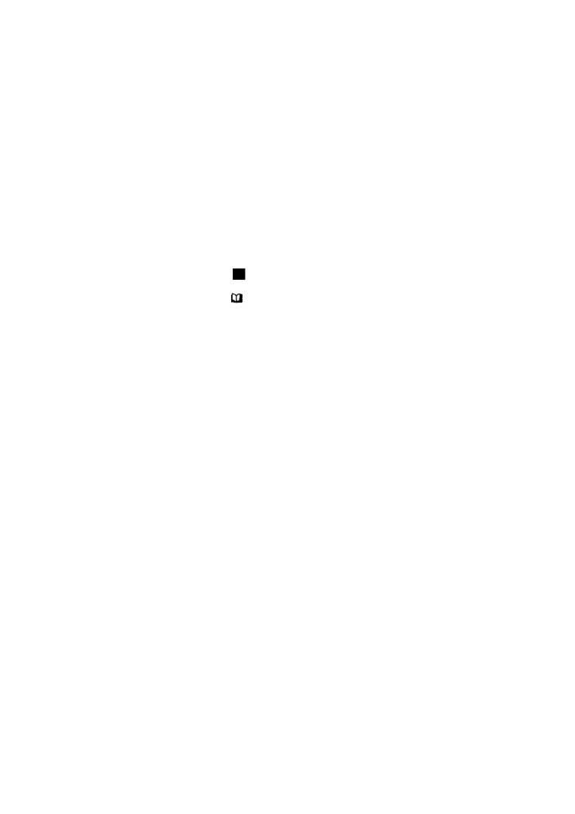
52 FLUENT ENGLISH
Alida
No. It's a standard. And it has power windows, brakes, power
everything. It even has chrome alloy wheels. And I had the
windows tinted.
Suzette Does it get good mileage?
Alida
Much better than that gas-guzzler I used to have.
Suzette
Can I ask how much you paid for it?
Alida
Oh, I don't mind. It was $21,000.
Suzette
Did you lease or buy?
Alida
I bought it. The payments are about $380 a month. I put a couple
thousand down and traded in my old car for another $1000.
Suzette Oh, Alida.It's fantastic. I'm so jealous.
Alida
Well, you'll just have to get one, too.
Suzette
I was going to try to get another year or so out of my old one, but now I
don't know. I think I've got to have a new car right away!
6C BUILD YOUR VOCABULARY
ABS. Anti-lock brake system. A system that allows the brakes to automatically adjust
pressure to avoid skidding when a sudden stop is necessary. We added brake fluid to
ensure that your ABS works properly whenever you need your brakes.
Automatic. Automatic transmission. A transmission system where the engine
automatically shifts gears as needed, without use of a stick shift. / prefer to buy an
automatic because I don't know how to drive a stick shift.
Bucket seats. Two front seats that are individual rather than a bench, with or without a
console separating them. They are slightly scooped out in the middle like a bucket. Some
people prefer the look and comfort of bucket seats.
Chrome alloy wheels. Wheels with chrome alloy plating on the interior hub of the
tires. When Terrence bought his car, he asked for chrome alloy wheels because he
thought they looked so great.
Cruise control. A system that maintains speed without the need for the driver to push on
the accelerator. Cruise control is a great feature when you drive for long distances,
because it allows your foot to rest.
Cylinders. The part of the engine where fuel is burned (combusted). Four is the standard
number, but some engines have more cylinders, and therefore more power, but also use
more gas. With the price of gas these days, we'd better get a four-cylinder car.
Dashboard. (Also called "dash.") The inside front of the car where the instruments are
located. As you can see, the dash is fully illuminated so that at night you can read your
instruments.
Horsepower. Power equivalent to the power a horse exerts in pulling. A measure of a
car's power. What's the horsepower on that engine?
Moon roof. A window on the roof of the car that does not open, usually tinted and
offered as an extra feature. It's such a pleasure to look up at the stars through the
moon roof on the car.
Lesson 6: I Have Got to Have a New Car!
53
MPH. Miles per hour, the number of miles that can be traveled in one hour. The speed
limit on most freeways in the U.S. is 65 MPH.
Power windows. Windows that are opened at the touch of a button rather than hand
cranked. (Anything automatic is called power: power brakes, power steering, etc.) Only
the highest-quality cars have extra features like power windows.
Spoiler. A long narrow plate across the back of a car that deflects air to keep the car
from lifting off the road at high speeds. Look at the spoiler on that little sports car! I
wonder how fast it can go.
Standard. A transmission that has gears that need to be shifted by hand; a stick shift,
opposite of an automatic. If you want to save on gas, buy a standard. They use less gas
than automatics.
Sunroof. A glass window on the roof of a car that can be opened up. Selena opened up
her sunroof and flew down the freeway with her hair flying.
Tilt wheel. A steering wheel that can be adjusted by tilting to fit the driver's body angle or
style of driving. Because Bill's so tall he says he'll never buy a car without tilt wheel steering
again.
6D ENGLISH UNDER THE HOOD
TOPIC 1: Modals of Necessity
Modals are auxiliary verbs used before other verbs to express a distinct shade of meaning.
There are many kinds of modals. The modals of necessity are must, have to and have got
to. In meaning, they are all basically the same, but must expresses absolute necessity. In
spoken American English, must is usually only used with extra emphasis. When you use
have to and have got to, the necessity is less strong.
My car is broken, so I must buy a new car!
I've got to leave work early because I have to catch a train.
Note that these modals are often used for exaggeration.
/ can't live without that car. I have got to have it.
Oh, I have to eat that slice of chocolate cake!
PRACTICE EXERCISE 1: Fill in the following sentences with the correct form of the
verb in parentheses, and select a main verb from the following:
read, work, get, go, be, finish, see
1.
(have to) If you live in the country, you __________ a car.
2.
(have got to) A person _________ hard in order to live well.
3.
(must) If you like horses, you _________ that movie.
4.
(have got to) We _________ this project by noon!
5.
(have to) I just _________ that movie star's autobiography.
6.
(must) Cindy _________ at the office by 7:00 tomorrow.
54 FLUENT ENGLISH
7.
(have to) The dog _________ for a walk every night.
Now select the correct modal for each sentence. Use have to, have got to and must
one time each.
8. You just__________ get this dress! It's perfect for you.
9. We _________ get to the store before it closes or we won't have anything to eat
for breakfast.
10. You received a subpoena for jury duty? Unless you have a good excuse, you
TOPIC 2: Modals of Advisability
The modals of advisability are should, ought to and had better. These three modals are
used when offering advice. Should is used when offering advice with an implication of
rules, morals, ethics, experience, etc. Ought to is used when the giver of the advice feels
strongly that the advice should betaken, and had better is used when the giver believes a
failure to follow the advice might result in harm or some other ill effect.
You should quit smoking and then you should join a gym to get in shape!
You ought to buy a house, because you're paying too much in rent.
You'd better tell your boss the truth, because she'll find out anyway and you'll be in trouble.
PRACTICE EXERCISE 2: Fill in each blank with the correct form of the verb in
parentheses and select a main verb listed here for each sentence.
go, bring, eat, tell, get, buy, cut
1.
(should) What do I think? Hmmm. Yeah, you__________ your hair.
2.
(ought) You __________ the car to the mechanic before your trip.
3.
(should) We _________ together before you leave.
4.
(had better) You _________ to the dentist before your tooth gets worse.
5.
(should) Don't you think you ___________him you've met someone else?
6.
(ought) Sam _________ a new suit before his interview.
7.
(had better) Joe _________ before he goes to the game or he'll be hungry!
Now select the correct modal for each sentence. Use should, ought to, and had better
one time each.
8. You _________ know your job by now, since you've been here for two months!
9. You _________ take some aspirin for that headache.
10. We _________ bring the patio furniture inside, because it looks like rain.
TOPIC 3: Negative Modals
Some of the negative forms of these modals do not always mean the same thing as the
positive forms.
Must not expresses a prohibition or rule. You must not leave your engine running while
filling up at a gas station.
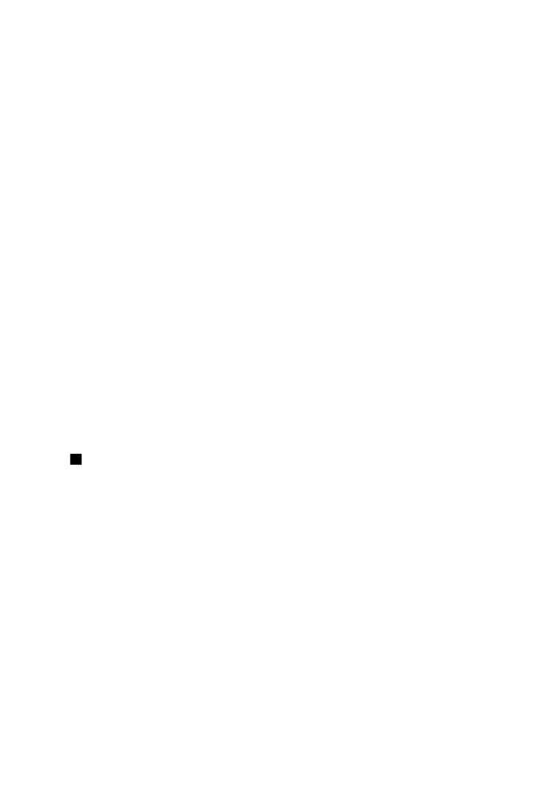
Lesson 6: I Have Got to Have a New Car!
55
Must not can also express a logical assumption. It must not be raining yet, since no one has
a wet coat or an umbrella.
Don't have to has the opposite meaning as its positive form. Don't have to means
there is no obligation or necessity to do something. You don't have to go to school
today if you're not feeling well.
The negative form of have got to is not used. Use don't have to in its place.
Shouldn't means the opposite of should. You should get up early everyday; you
shouldn't sleep late.
The negative of ought to is not used often in American English; shouldn't usually
replaces it.
Had better not is a strong prohibition. You had better not stay out late tonight if you have to
work tomorrow!
PRACTICE EXERCISE 3: Choose the correct negative modal to fill in the blank in each
sentence.
1.
Don't worry. You _________ pick me up. David said he'd do it.
2.
You__________know anyone here since you're sitting by yourself.
3.
We _________ do anything until we talk to the boss.
4.
You__________drive across the border without car insurance.
5.
You__________buy anything else with your credit card, because the balance is
so high.
6.
Julie _________ be in yet, since her office door is closed.
7.
You __________make dinner for me. I'll probably pick something up on
the way.
8.
Please don't buy me anything. You__________ spend your money on me.
9.
I _________ eat any more ice cream or I'll get fat.
10. We _________ leave those boxes out here. It might rain.
6E PHRASAL VERBS WITH COME:
Come across.
a) To seem, to be considered, to be perceived. Nathan comes across as rude, but he's really
just shy.
b) To find, especially in an unexpected way. / was cleaning out the closet when I came across
this old photo album.
Come along.
To accompany. You can come along. We'd love to have you join us.
Come around.
a) To visit or frequent a place. Ever since Josh broke up with Mary, he doesn't
come around anymore.
b) To change one's mind or attitude in a positive or favorable way. Don't worry about Greg;
he'll come around soon enough and agree with you.
56 FLUENT ENGLISH
Come back.
To return. Bring your family when you come back.
Come by.
a) To visit for a short time. Come by when you're in the neighborhood.
b) To receive, to get something, usually of value. How did you come by that expensive
car?
Come down.
a) To decrease, such as a price. The price on that house has come down a lot. They were
asking about $45,000 more.
b) To visit an area considered geographically lower or further south. /'// be in New York
that week, but I'll see if I can come down to Philadelphia.
Come down on.
To punish severely. Used with "hard." When her parents caught Jessica smoking, they
really came down hard on her.
Come in.
a) To enter. The door's open, so just come in.
b) To be received as a signal, as in a television, radio, or cell phone. / love this station, but
it doesn't come in very well outside the city.
Come into.
To receive something valuable, especially inherited money. Kevin came into some
money, so he paid off all of his debts.
Come on.
To request that someone do something, often pronounced c'mon. Come on. I'd really
like you to come to the movie with me.
Come out.
To divulge something about oneself or one's identity, especially sexual orientation.
None of Dan's friends was surprised when he came out; they knew he was gay.
Come through.
To help or perform something according to expectation. / wasn't sure if he'd be able to
lend me the money, but Jack really came through for me.
Come to.
a) To arrive at. (Used with "conclusion,""realization,"etc.) I've just come to the conclusion
that I'd like to go to school.
b) To awaken after having been unconscious. When Mary came to, she discovered that
someone had moved her to the sofa.
Come up.
a) To visit an area considered geographically higher or further north. /'// come up and visit
you when you go to the mountains this summer.
b) To rise socially, economically, or professionally. Bob's really come up since he became
the president of the company.
Come up with.
a) To get an idea. (Used with "idea,""solution,""proposal,"etc.) Where did you come up with
the idea that the director was quitting?
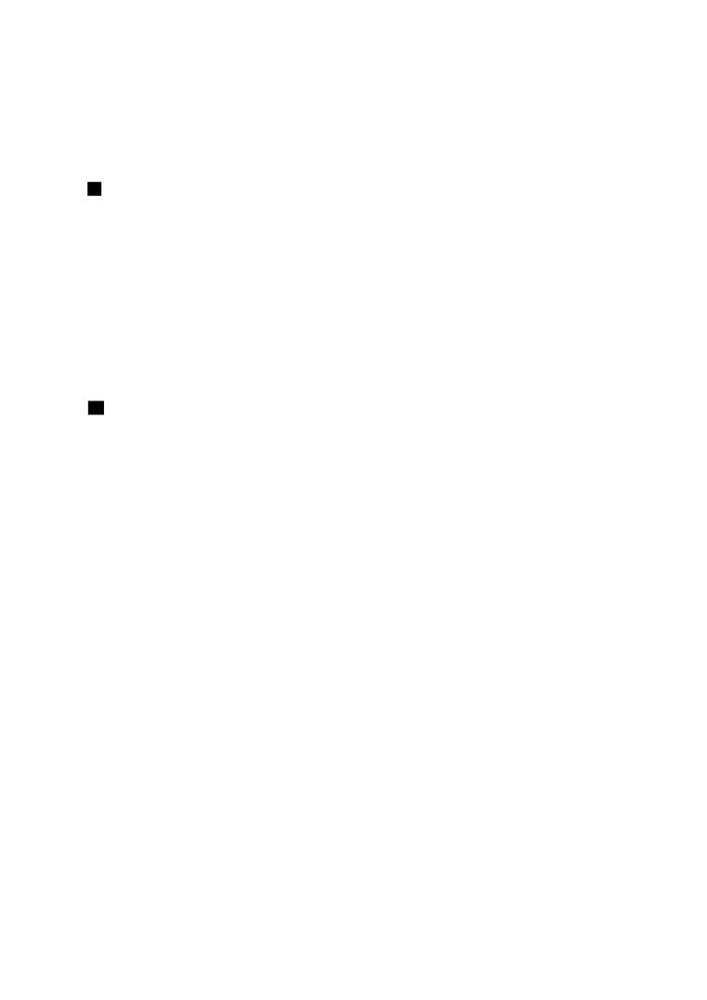
Lesson 6: I Have Got to Have a New Car!
57
b) To obtain or acquire, especially money. If you can come up with enough money for the
down payment, the car is yours.
6F REAL ENGLISH
I Need Some New Wheels!
You just have to have a car, don't you? Well, so does everyone else. Whatever you do, be
sure to check each car out carefully before you decide to buy one. If you don't, you could
be lucky enough to find a good catch at a great price, but you also might get a lemon. If you
get a lemon, you'll have to pay through the nose for repairs, so it's not worth it.
If you go to a used car lot you may get a salesman who'll rip you off because he's such
a smooth operator. He'll sweet talk you into buying a car you don't want at a price you
can't afford.
Take my advice, go to the Blue Book to find out how much a car is worth and check out the
consumer reports to find out which are the best and worst rated cars. But be careful,
because once you've done all your homework you may find yourself getting into a used car
instead of breaking in a new one.
6G BRING IT ALL TOGETHER
REVIEW EXERCISE 1: Vocabulary
Match each vocabulary item with its description.
1. __ ABS
a. These make your drive more comfortable.
2.
__ automatic
b. You don't have to keep your foot on the
accelerator with this.
3.
__ bucket seats
c. Sports cars have these on the back.
4. __ chrome alloy wheels
d. This is a measure of speed.
5.
__ cruise control
e. All of the car's instruments can be read here.
6. __ dash
f. You don't have to change gears while driving
with this.
7. ___ cylinders
g. Your hair may get messed up when you
open this.
8.
horsepower h. These look great on tires.
9.
moon roof i. This helps you if you have long legs.
10. __ MPH
j. You can see the stars on a clear night
with this.
11. _ power windows
k. These help you control your car when you
stop suddenly.
12. ___ spoiler
I. These are the parts of the engine where the
power is created.
58 FLUENT ENGLISH
13. ___ standard
m. How much your car needs depends on the
car's weight.
14. ___ sunroof
n. You can open these at the touch of a button.
15. ___ tilt wheel
o. You change gears with your hand.
REVIEW EXERCISE 2: Modals of Necessity
Fill in the blank with the modal in parentheses and choose the best main verb from the
following list.
turn in, get, save, fix, go, dress, walk, wear
1.
(have to) She _________ to work everyday, doesn't she?
2.
(have got to) Since you broke the window, you __________ it.
3.
(must) If you want to go on a trip, you __________ money.
4.
(have to) If he __________everywhere, he'll lose weight.
5.
(have to) When do you__________ your term paper?
6.
(must) It's too cold outside. You __________ a coat.
7.
(have got to) You don't make enough money; you _________ get another job.
8.
(have got to) When you're a teenager, you feel like you _________ like everyone else.
REVIEW EXERCISE 3: Modals of Advisability
Fill in the blank with the modal in parentheses and choose the best main verb from the
following list.
call, rest, hurry, ask, stay, go, tell, be able
1.
(should) I think you__________ . You look tired.
2.
(ought to) We __________to find a new apartment by the first of the month.
3.
(had better) I guess we _________ home tonight since you don't feel well.
4. (should) Who do you think I _________ for help on this project?
5.
(had better) We _________ or we'll be late.
6.
(should) Will you be at home tonight? What time ___________I _________ you?
7.
(ought to) Do you think I__________ him the truth?
8.
(had better) You have a very high fever. You _________ to bed.
REVIEW EXERCISE 4: Negative Modals
Fill in the blank with the verb in parentheses and choose the best main verb from the
following list.
work. study, call, send, eat, wash, put, watch
1.
(had better not) You __________ in sick again today!
2.
(shouldn't) You __________ever _________ your finger in a light socket.
3.
(do not have to) I _________ today because it's a holiday.
4.
(must not) No! You __________ that letter. You don't know what the consequences
might be.
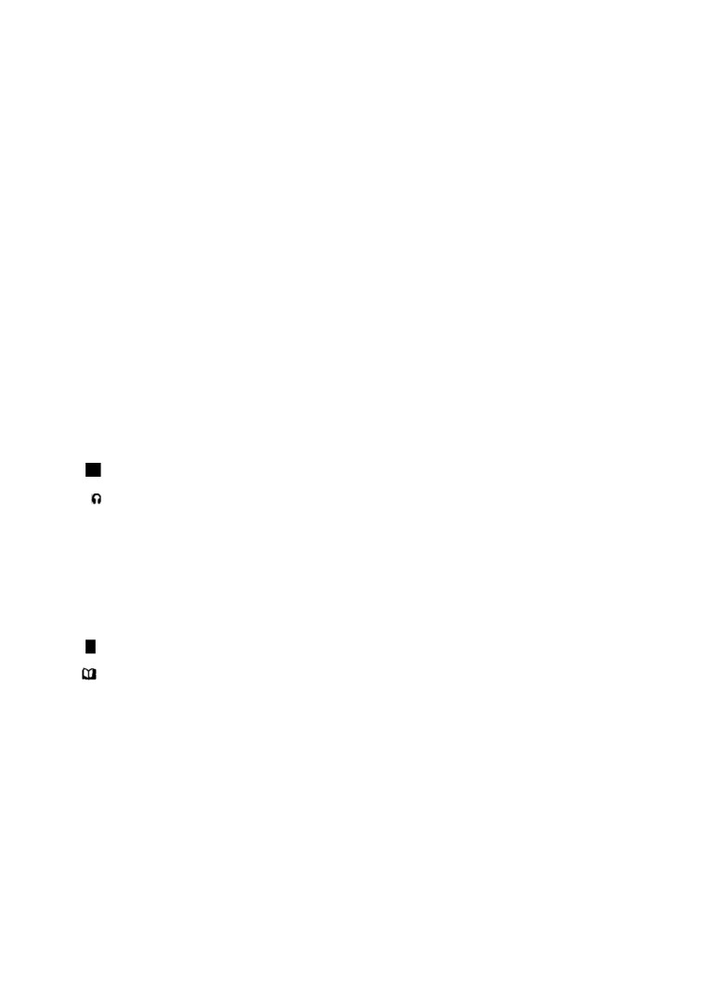
Lesson
6: I Have Got to Have a New
Car!
59
5. (shouldn't) If you're
allergic to strawberries, then you ___________ them.
6. (had
better not) You__________ that movie. It's too disturbing.
7. (do
not have to) Sandra's really smart. She__________ as hard as we do.
8. (shouldn't) You __________ white clothes with dark clothes unless you like
wearing gray.
REVIEW EXERCISE 5: Phrasal Verbs
Fill in the blanks with one of the following phrasal
verbs.
come around, come
along, came back, come into, come down, come in, come on, come over,
came to, come up,
come up with
1. How
much money
were you able to___________ for your down payment?
2. The
price of that car has really _________ a lot since it first came out.
3. I haven't seen him in ages! He doesn't ___________ here anymore.
4. Why
don't you _________ and visit me today?
5. If you like Thai food, you should _________ with
us for dinner tonight.
6. I'm
not sure how you __________that conclusion,
but it's wrong.
7. Jordan __________
to his office to
get a file he'd forgotten.
8. You
bought a new house? You must have __________ some money!
9. _________ ! You can do it.Try a little harder.
10.. Please _______ ! It's freezing outside.
6H LISTEN UP!
Turn on your CD to
listen to a car
commercial, and then answer the following
questions.
1. Who is Lucky Joe?
2. What does he want
you to do?
3. How
much is the Titan?
4. How
old is the pick-up?
5. How
much is the Mac-X?
6. What street is Lucky Motors on?
6I WHY
DO THEY DO THAT?
Americans and Their
Cars
Americans are hopelessly in love with their cars. There are over 135 million cars on the roads
of the
United States each day. Just to buy a new car, the average
American spends roughly
half of
his or her annual income. The
average American family owns two or three cars, each
logging approximately 15,000 miles
a year. In fact, there are more
registered vehicles than
there
are licensed drivers. Clearly, Americans have a unique relationship with their cars, to
say the least.
60 FLUENT ENGLISH
Outside of a few major cities, not having a car is simply unthinkable to most Americans.
This dependence on automobiles starts young. To American teenagers, for example,
getting a driver's license is a crucial milestone in their lives. It's a rite of passage that
brings the freedom and independence young people crave and associate with adulthood.
Being able to drive represents not only personal freedom, but also mobility and
individuality, and this association is carried into adulthood.
This notion is so strong that its influence can be seen everywhere in the U.S., from the
layout of cities to the choices of how people spend free time. While most of the rest of the
world relies heavily upon public transportation, Americans refuse to give up their car
keys. Vast winding freeways are unmistakable characteristics of most American cities,
along with wide boulevards, car-lined side streets, parking lots, and strip malls. American
behavior is also shaped by cars. Americans use their cars to drive to work, to shop, to
take their kids to school and even to rock their babies to sleep at night. On weekends,
they like to jump in their cars just to go for a drive. Americans spend several hours a day
in their cars, turning their cars into substitute homes and offices. It's common to see
drivers talking on cell phones and eating, but it's not unheard of even to see them
brushing their teeth, shaving, putting on makeup or even watching TV while driving. In
fact, it's been necessary to pass laws prohibiting dangerously distracting behavior while
driving.
Given the importance of cars in American culture, it's not surprising that some people
believe that a lot can be learned about drivers' personalities based on their cars. For
example, some cars are known to be safe and reliable; others are flashy and
ostentatious. Some are shallow status symbols of wealth or (presumed) taste. Still others
are considered unnecessarily large, obnoxious, and wasteful of fuel. Certain makes of
cars are considered boxy and ungraceful, but solid and fortress-like, while others are
sleek and nimble. It's tempting to extend these perceptions to drivers! No matter how
much truth there is to any of that, it's certain that the car has been shaping America for
years. Clearly, that engine is still running strong!
Lesson 6: Answer Key
Practice Exercise
1. have to get, 2. has got to work, 3. must see, 4. have got to finish, 5. have to read, 6. must be,
7. has to go. 8. have to, 9. have got to, 10. must
Practice Exercise 2
1. should cut, 2. ought to bring, 3. should get, 4. had better go, 5. should tell, 6. ought to buy,
7. had better eat, 8. ought to, 9. should, 10. had better
Practice Exercise 3
1. don't have to, 2. must not, 3. shouldn't, 4. shouldn't/mustn't/ had better not, 5. had better
not/shouldn't, 6. must not, 7. don't have to, 8. shouldn't, 9. had better not, 10. shouldn't/had
better not
Review Exercise 1
1. k, 2. f, 3. a, 4. h, 5. b, 6. e, 7.l, 8. m, 9. j, 10. d, 11. n, 12. c, 13.o, 14. g, 15. i
Review Exercise 2
1. has to go, 2. have got to fix, 3. must save, 4. has to walk, 5. have to turn in, 6, must wear,
7. have got to get, 8. have got to dress
Review Exercise 3
1. should rest, 2. ought to be able, 3. had better stay, 4. should ask, 5. had better hurry, 6. should
... call, 7. ought to tell, 8. had better go
Review Exercise 4
1. had better not call, 2. shouldn't... put, 3. don't have to work, 4. must not send, 5. shouldn't
eat, 6. had better not watch, 7.doesn't have to study, 8. shouldn't wash
Review Exercise 5
1. come up with, 2. come down, 3. come around, 4. come over, 5. come along, 6. came to, 7. came
back, 8. come into, 9. Come on, 10. come in
Listen Up!
1. A car salesman. 2. Come to his car lot and buy a car from him. 3. $5999, 4. $7000. 5. $2900,
6. El Camino Blvd.
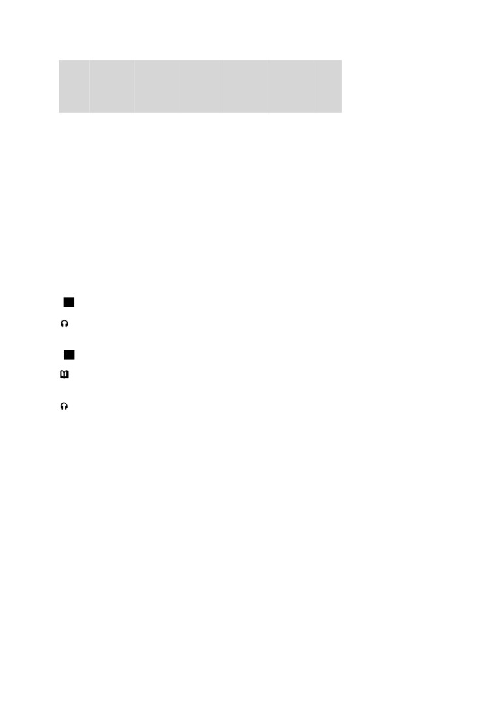
Lesson
7
Pushing the Envelope
ARE
YOU READY
FOR THE LESSON?
In Lesson 7, Pushing the Envelope, you'll read about the history of mail delivery in the
U.S.,
and you'll listen in on a game
show to test your memory of post office tunes. You'll
learn
some essential vocabulary for the post office
as well as phrasal verbs for giving and
receiving. But there's more. You'll also learn about:
• Degrees of Certainty in the Present Tense
• Degrees of Certainty in the Past Tense
• Degrees of Certainty in the Future
Tense
• Phrasal Verbs for Giving and Getting
We'll
finish off the lesson by discussing the American work ethic and how it shapes the
character of the United States. Let's begin the lesson by practicing pronunciation
in Say It
Clearly! Ready?
7A SAY IT CLEARLY!
Turn on your CD to practice how to link words that end in one consonant sound to
words
that begin with the same consonant
sound.
7B ENGLISH AT WORK
READING: A Brief History of Mail
Delivery in the
U.S.A.
Read
and listen to the following passage about the
history of the postal service in
the
United States.
Mail delivery was something very different during
colonial times
from what it is
today.
In the
early 1600s, overseas mail service used a tavern in Boston as the drop-off point for
mail received from and sent to England. From there, it was delivered to other cities in the
thirteen colonies. The first official post office was
established in
Pennsylvania in 1683.
In 1737, Benjamin Franklin was appointed the postmaster of Philadelphia. He was only 31
at the
time, but this
was where the
young Franklin
began to make his mark in the New
World. He immediately began inspecting post offices throughout the British territories
and established new
and shorter routes between
cities. For the
first time, the postal
service in the colonies began to make money for the British government, and mail
service began to operate regularly.
Later, Franklin
was dismissed
from his position as
postmaster because
of his sympathies for the independence movement in the colonies.
However, by the time
of his departure there were 30 post offices
operating in the
colonies.
After
the revolution,
almost every
mode of transportation was tried for improving mail
delivery service in the U.S., including even balloons. Naturally, as the size of the
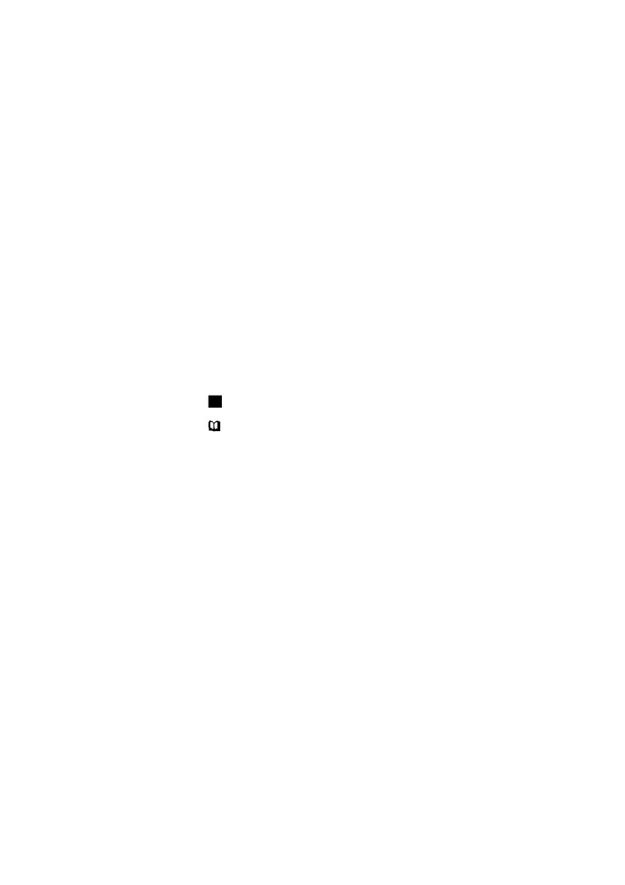
62 FLUENT ENGLISH
new country grew, so did the challenges facing mail delivery. Mail service to California
first followed the Butterfield Express, a stage line that began in Missouri and ended—
2800 miles later—in San Francisco. Mail delivery took between 24 days and several
months. Later, the Pony Express delivered mail to California by horseback. A rider
covered between 75 and 100 miles a day, rapidly changing horses at relay stations set
about 10 to 15 miles apart. This method of mail delivery took about 10 1/2 days from
St. Joseph, Missouri to Sacramento, California. This legendary mail delivery service
lasted only a little over a year, until completion of the transcontinental telegraph line
in late 1861.
About forty years later, the automobile began to play a role in mail delivery, and other
technological advances in transportation would follow. Today, mail is delivered from
city to city in the U.S. by truck, train or airplane. Within cities, mail is hand delivered by
mail carriers who walk their routes. In many areas, mail carriers drive cars with
steering wheels on the right so they can pull up beside mailboxes set along main
roads and highways and deliver the mail without getting out of the car. The Internet
is, of course, another means of delivering much of the kind of mail that was once sent
as letters.
Mail delivery in the U.S. has undergone many changes during its history. Some of
these changes have been significant in helping to establish different modes of
transportation. Others have disappeared almost completely into legend. So the next
time you mail a letter, remember how far things have come since that tavern in
Boston!
7C BUILD YOUR VOCABULARY
Addressee. The person or group to whom a piece of mail is addressed. This package
has my address but it's to a different addressee; it's not mine.
Bulk mail. A large and inexpensive way of sending mail, often used by advertisers to a
targeted group of people. Jerrod just went to apply for a bulk-mail permit so he can
send fliers advertising his new business.
Certified mail. Regular first-class mail, with proof of delivery or signature required.
Since it's so important that the addressee receive this letter, I'd like to send it certified
mail.
COD. Cash on delivery. Purchase made through the mail where a customer agrees to
pay on delivery. Uncommon today. Martha, do you have $20? The mail carrier has a
COD package for you.
Direct mail. Advertising sent directly to the addressee's name rather than being
addressed to "occupant." They say we'll get better results if we send these flyers directly
to the customer, so let's go with direct mail.
Forward. To send mail from one address to another, usually used when moving. I'm
moving next week, so I have to have the post office forward my mail to my new address.
Junk mail. Unsolicited mail, usually advertising. Jack's mailbox is always full, but it's
usually just junk mail.
Postmark. Post office mark over the stamp in the right upper corner of a letter,
Lesson 7: Pushing the Envelope
63
including date sent and originating post office zip code. Some people like to collect unusual
stamps, but Melissa likes to collect letters with unusual postmarks.
Parcel post. A mail service that handles packages. All packages have to be brought
directly to the post office and sent parcel post.
Priority mail. Mail guaranteed to be delivered in two to three days Jay ordered a CD and
priority mail delivered it in two days.
Registered mail. Mail that is recorded at every point along the route to its destination for
tracking. If you send your application by registered mail, you can track it until it's delivered.
Route. Service area or path assigned to a mail carrier to deliver mail in an eight-hour day.
This route is a mail carrier's nightmare, because there's a dog in every other yard and it's all
uphill!
Special delivery. Mail delivered faster than normal for a higher fee. If you want it to arrive
tomorrow, you'd better send it special delivery.
Surface mail. Mail that travels by truck, train, or boat, but not by airplane. Don't bother
buying airmail stamps if you're just sending this in the U.S., because it'll go surface mail
anyway.
Zip code. A five-digit code that identifies a particular post office. Do you know the zip code
for Helena, Montana?
7D ENGLISH UNDER THE HOOD
TOPIC 1: Degrees of Certainty in the Present Tense
When you are absolutely certain of something, use the present tense form of the verb.
Bob is a student at the city college.
Terry has curly brown hair.
When you think you know something, but you're not completely sure, express that
uncertainty by using must + verb.
That must be David. (Someone told you what David looks like, and you think you
recognize him.)
Sarah must be hungry. (You know that she hasn't eaten for a long time.)
If you feel less than 50 percent certain about something, you can use may + verb,
might + verb, or could + verb.
Hank may be home now. (But traffic is often bad.)
We might be at the right address. (But I can't read the house number.)
To express a negative certainty, use the present-tense negative form of the verb when you
are 100 percent certain.
Catherine doesn't have blue eyes.
Delia isn't a teacher.
64 FLUENT ENGLISH
If you are very close to sure about something, use couldn't + verb or can't + verb.
Sam couldn't be old enough to drive yet. (He seems too young.)
The grass can't be dry. (It just rained last night.)
If you area little less certain, then use must not + verb.
Troy must not be at work today. (He was out sick yesterday, and his office is empty.)
When you are less than 50 percent sure of something, use may not + verb or might not +
verb.
Frederic may not be available on Tuesday afternoons. (I don't know his schedule.)
Jessica might not be a member of my gym. (I haven't seen her there.)
PRACTICE EXERCISE 1: Fill in each blank with the verb form that expresses the
appropriate amount of certainty. First use the positive form. (In some cases, there
may be more than one correct answer.)
1. George (like) _________ coffee, because he always has a cup in his hand.
2. Billy (be)
_________ asleep, because it's after midnight and he went to bed three
hours ago.
3. Anne (be) _________ outside working in the garden, but I'm really not sure.
4. If you feel awful but don't have a cold, you (have) __________ allergies.
5. That animal looks like a dog, but it's not; it (be) __________ a coyote.
Now use the negative form.
6. Danny (be) _________ hungry;! asked him to eat with us if he wanted to.
7. The museum (be)_________ closed. It closes at 5:00 and it's only 4:30.
8. He only moved here a week ago, so he (know) _________ anyone yet.
9. Bob gets off work at 5:00, so 6:00 (be) _________ too early for dinner.
10. Thirty minutes (be) __________enough time to get there; it takes at least 40 minutes.
TOPIC 2: Degrees of Certainty in the Past Tense
Use the simple past-tense form when you are 100 percent certain.
Terrence was home last night. (I called him and talked to him.)
Dennis ate a big salad for lunch. (I saw him eat it.)
Use must have + participle when you are almost certain.
Karen must have been hungry. (She ate three eggs for breakfast.)
You must have had a good time. (You look happy.)
When you are less than 50 percent certain, use may have + participle, might have +
participle or could have + participle.
Ken may have been at work yesterday. (He wasn't at home, but it's possible he was
somewhere else.)
June might have taken the bus to work. (She didn't take her car, but maybe she
walked.)
Lesson 7: Pushing the Envelope
65
Leslie could have driven June to work. (It's possible that she did.)
To express a negative certainty in the past tense, use the negative past tense.
Terrence wasn't at home last night. (I saw him at the baseball game.)
Use couldn't have + participle or can't have + participle when you are very close to
sure.
Karen couldn't have been hungry. (She ate very little.)
Denny can't have had a good time last night. (He was sick all night and
looked miserable.)
For less than 50 percent certainty use may not have + participle or might not have +
participle.
They may not have eaten before they left. (There's a lot of food left over, and no dishes.)
He might not have arrived yet. (The bus he takes is often late.)
PRACTICE EXERCISE 2: Fill in each blank with the verb form that expresses the
appropriate amount of certainty in the past. First use the positive.
1. I know my son (be) _________in school yesterday because I took him there.
2. Bill (leave) _________work early because no one saw him in the meeting at 3.30.
3. John and Frank (be) ________ at the beach yesterday, but I'm not sure.
4. That movie (be) _________ awful, but I haven't read any reviews yet.
5. Henry (spent) _________ the day taking photographs, since that's his hobby.
Now use the negative.
6. David (be) _________at the party; no one saw him there at all.
7. They (run) _________in the park this morning, since the weather was so awful.
8. Janet (get) _________ the letter yet, since we haven't heard from her.
9. Larry (felt)
_________ better, because he ate almost none of his dinner.
10. The Roundtrees (leave)_________ for vacation, because their car is still here.
TOPIC 3: Degrees of Certainty in the Future Tense
When you are absolutely certain that something will happen, use the simple
future tense.
Ralph will finish his PhD next June. (There is no reason to doubt it.)
If you are a little less certain, use should + verb or ought to + verb.
Ralph should finish his PhD next June. (Unless something interferes.)
Venus ought to win first place. (I think her painting is the best, but someone else may
disagree.)
When you are much less certain, use may + verb, might + verb or could + verb.
Kevin may take off from work tomorrow. (If he thinks he can afford to do that.)
Calixte and Jay might go to the beach tomorrow. (If it's sunny.)
66 FLUENT ENGLISH
Arend could get a job with National Geographic. (If they like his work.)
To express a negative certainty in the future, use the negative future tense.
Harold won't be home until after 10.00 tonight.
Sophie will not be at work tomorrow.
Many other expressions of negative certainty in the future look very similar to the present
tense.
Keith couldn't be getting out of the hospital tomorrow. (He still seems too weak.)
Troy must not be coming to work today. (He was out sick yesterday, and his office is
empty.)
Frederic may not be available next Tuesday. (I don't know his schedule.)
Jessica might not be coming to the party tonight. (She said she wasn't feeling well.)
PRACTICE EXERCISE 3: Fill in each blank with the verb form that expresses the
appropriate amount of certainty in the future. In some cases you will need to use
the negative form.
1. The delivery (arrive)__________ tomorrow, because I had it sent overnight.
2. It's beginning to clear up; it (rain)___________ later today after all.
3. We (get) _________ some icecream after dinner if everyone is still hungry.
4. I (speak) _________ Spanish well after my month-long trip to Costa Rica.
5. I (visit) _________ you next time I come to your city, without fail.
6. We (have)__________ to call the plumber if we can't fix the drain ourselves.
7. If you don't study hard enough, you (do) __________ well on your test.
8. I (call) _________ you as soon as I get home, I promise.
9. We (win) _________ win tomorrow, because the other team is very good.
10. I (stop) _________ by and pick you up after work tomorrow, but I'm not sure it's
possible yet.
7E PHRASAL VERBS FOR GIVING AND GETTING
Drop off.
To deliver something or someone to a specific location. Can you drop this package off
at the post office?
Get back.
To receive again. / got back the message I sent Kevin, so he must have gotten a new e-mail
address.
Get back to.
To return a call or respond to a message. Sorry, I can't talk now. I'll get back to you later.
Get out.
To put something in the mail. Did you get that package out yet? It needs to be in the
mail by 5:00 PM.
Lesson 7: Pushing the Envelope
67
Get to.
To arrive somewhere. I'm just calling to see if the letter I sent has gotten to you yet.
Give out.
To issue, to give something to many people at the same time. Meredith is giving out
invitations to her birthday party.
Go out.
To leave, as by mail. Has the mail gone out yet?
Hand out.
To distribute something by hand. /'// hand out the tests after you put all your
books away.
Mail out.
To put something in the mail. Have you mailed out the bills yet?
Pass out.
To distribute to many people at the same time, similar to hand out. Look at this book they
passed out to everyone at the last workshop I went to.
Pick up.
a)
To get or obtain something. You can come and pick up your new security ID
after Tuesday.
b)
To become infected by something. Walt must have picked up a cold or something at work,
because he feels awful today.
c)
To get something from a store, to buy. Can you pick up a few things from the grocery store
on the way home from school?
d)
To learn, to absorb knowledge. Isn't it amazing the way children pick up languages?
Pick up on.
To understand. Terry's young, but she picks up on everything, so be careful what you say
in front of her.
Send off for.
To order through the mail. Oh, I like this skirt. I'm going to send off for it as soon as I get
paid.
Send out for.
To (call and) request a delivery, usually food. Since we have to work late, we'd better send
out for some dinner.
7F REAL ENGLISH
Keeping in Touch with Friendly Advice
I could really use a friend's advice now. I'm feeling really boxed in at work right now, like I
have no choice, and I may need to quit my job. I know that work and stress are often a
package deal, but things are really getting tough, and I think I may go postal if I don't sort
things out soon! I've got a new boss, and it's not like I need a stamp of approval for
everything I do, but with this guy, it seems like nothing is right! I mean, rain or shine, there's
something I do that he complains about every day. Just the other
68 FLUENT ENGLISH
day I made a suggestion in a meeting, and I thought I was really pushing the envelope
but he just looked at me like I was crazy. I don't want to go over his head and complain
to the general manager, but I might have to. Well, anyway, drop me a line when you get
a chance and let me know what you'd do. Let's keep in touch. I can always use your
advice!
7G BRING IT ALL TOGETHER
REVIEW EXERCISE 1: Vocabulary
Try to match each of the following words with the clues.
addressee, bulk mail, certified mail, COD, direct mail, forward, junk mail, postmark, parcel
post, registered mail, route, special delivery, surface mail, zip code.
1. The advertiser has your name and address and sends you an ad that is
addressed to you.
2. __________ You get a package and the mail carrier tells you to pay for it or you can't
have it.
3.
_________ The person to whom the letter is addressed.
4.
_________ The mark on the upper right side of the envelope.
5.
_________ Your mail carrier follows this every day.
6.
_________ You must sign for it when it arrives.
7.
_________ You need this if you want to send a package through the mail.
8.
_________ You need to send the same information to a large group of people.
9.
_________ You've moved, and you want your mail to be sent to the new address.
10.
_________ This mail is tracked from the first post office to the last post office.
11.
_________ You pay extra to have the mail sent to someone faster.
12.
_________ This mail does not travel by airplane.
13.
_________ You recycle this kind of mail, because you don't want it.
14.
_________ Don't forget to put this on the address!
REVIEW EXERCISE 2: Degree of Certainty in the Present Tense
Fill in the blank with the correct form of the verb. (There may be more than one
correct answer.)
1. You (not be) __________hungry. You've just eaten.
2. Don't worry. It (not be) __________ time to go yet. We leave in half an hour.
3. Bill (be)__________ in his room. I saw him go in there a few minutes ago.
4. Don't wait for me. I (be) __________ late, but I'm not sure.
5. Terry (not take) _________ the same bus as I do—I never see her on it.
6. Debbie (be) _________ tired. She was up all night with the baby.
7. Jack (like) _________ you. He calls you all the time.
8. We (be) _________ the next champions if we practice hard all season.
Lesson 7: Pushing the Envelope
69
REVIEW EXERCISE 3: Degree of Certainty in the Past Tense
Fill in the blank with the correct form of the verb.
1. You (not understand)_________ what I said. I said you looked lovely, not ugly!
2.
They (return) ________ from their trip last night. I think I heard their car.
3.
Joe (stay) ________ at work late tonight; he said he'd call when he got home.
4.
The kids (be)_________too tired to do anything earlier this morning, because they
got to bed so late last night.
5.
Randy (be) ________ too sick to go to the party last night, because he wasn't feeling
well when I talked to him yesterday afternoon.
6.
Tony (call) __________ me last night, but my answering machine was turned off.
REVIEW EXERCISE 4: Degree of Certainty Future Tense
Fill in each blank with the correct form of the verb.
1.
Dena gets off work at 3:00, and it takes 45 minutes to get here, so she definitely (be)
by about 4:00.
2.
We've been making such good time on this project that we (finish) __________ ahead
of schedule.
3.
Everyone's been doing so well this semester that they all (get) _________ A's or B's.
4.
If she starts working much harder, Nina (become) _________ a very good manager.
5.
He's such a smart child that he (do) ________ very well in this school.
6.
If you feed the stray cats, they (come) _________ to your house.
7.
I (buy) ________ a new car before the year's end, but it depends on how much I
can save.
8.
Ralph (do) _________ very well in culinary school, because he seems to have a natural
talent for cooking.
REVIEW EXERCISE 5: Phrasal Verbs
Fill in the sentences with one of the following phrasal verbs.
drop off, getting back, get out, gets to, give out, hand out, gone out, mailing out, passing
out, pick up, send off, send out
1.
I'm sorry I was so late ________ to you, but I've been very busy.
2.
The mail's already ________ this morning, so you'll have to wait till tomorrow.
3.
If you want to be certain this package _________ its destination, you should send it
by registered mail.
4.
Don't you get tired of all these companies __________ their advertisements?
5.
Did Emmy Lou _________ all the perfume samples to the customers?
6.
How long ago did you __________for your rebate? It usually takes several months to
get it.
7.
l can ________ that letter __________ at the post office on my way home.
8.
If I
________ this__________ today, you'll get it by Monday for sure.
9.
Let's ________ for lunch. I'm starving!
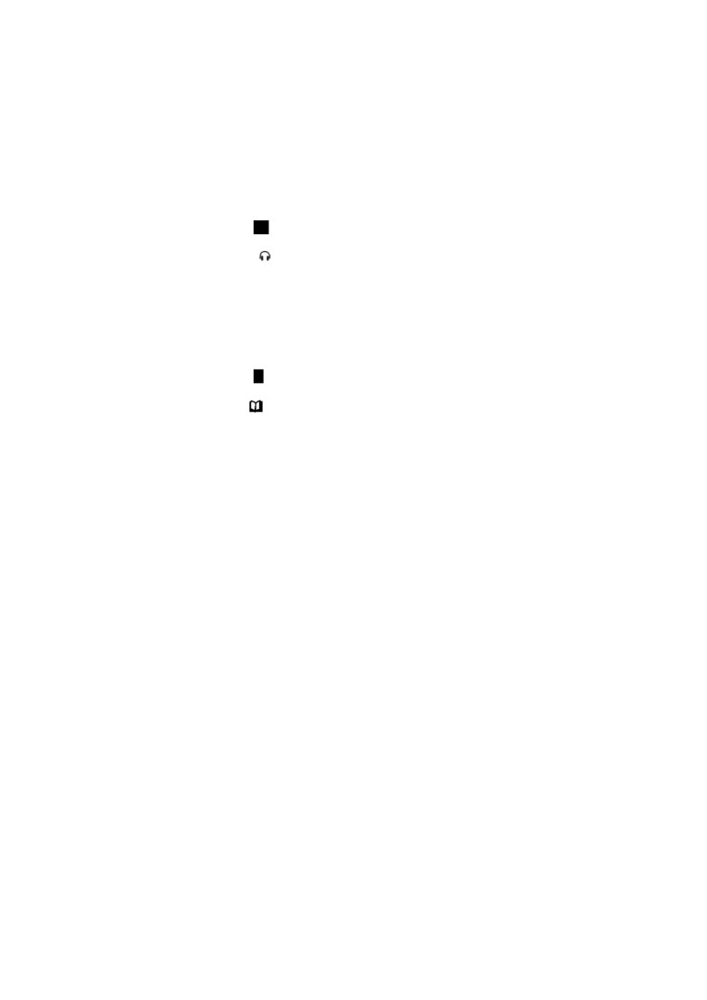
70 FLUENT ENGLISH
10. If you'd all please form one line, we'll start __________ applications on a first-come,
first-serve basis.
11. Oh, I don't feel very well. I hope I didn't __________ something over the weekend.
12. When you're done with your lesson, could you please __________ these papers to the
rest of the class?
7H LISTEN UP!
Listen in to see how Jesse Porter does on the game show "What's That Song?", and
then answer the following questions.
1. What is Jesse's profession?
2. Where is Jesse from?
3. Stevie Wonder's song is called "Signed, Sealed ..."?
4. The Marvelettes sang which song in 1961?
5. What rock-and-roll legend sang "Return to Sender?"
7I WHY DO THEY DO THAT?
Benjamin Franklin and the American Work Ethic
In this lesson's reading you learned that Benjamin Franklin was once postmaster of Philadelphia.
But many people know him better as a great statesman, inventor, and the person who penned the
words "Early to bed, early to rise makes a man healthy, wealthy and wise." In fact, the man whose
face is seen on the $100 bill has had a profound effect on the character of the United States, and
to many Americans Benjamin Franklin embodies the qualities that they admire and strive for in
their own i lives. Above all, perhaps, is the notion that Franklin exemplifies the American work
ethic. Born in 1706 into a working-class family in Boston, Massachusetts, Franklin was one of
seventeen children. He began working diligently from a very young age, ultimately becoming
successful in many fields as well as achieving worldwide fame. His example of dedicating himself
to work and striving to succeed has made him one of the fathers of the American work ethic, and
he is often thought of as proof that individuals can achieve lofty goals no matter what their origins
may be.
Success, perhaps on a scale less visible than that of Benjamin Franklin, is the promise behind the
American work ethic. There is a simple belief that if a person works hard enough, success can and
will follow naturally. This notion has been a part of the American landscape since the country's
birth. The promise of hard work and sacrifice in order to create a kind of heaven on earth captured
the imagination of many people in the early history of this country, and this opportunity was in fact
exactly what motivated so many to leave their homelands and settle in America. This ideal
survives today, seen as the model for success in any area of life—in education, in any profession,
in sports, or in any skill. Perhaps Benjamin Franklin's words "Early to bed, early to rise makes a
man healthy, wealthy, and wise" may sound like a bit of an oversimplification, but they do capture
a lot of the spirit of the American work ethic. And that ethic, along with its promise of success, has
helped people from all over the world build this country together.
Lesson 7: Pushing the Envelope
71
Lesson 7: Answer Key
Practice Exercise 1
1. likes/must like, 2. is/must be, 3. may/could/might be,4. may/could/might have, 5. may/
could/might be, 6. isn't/must not be, 7. isn't/must not be, 8. doesn't know/ must not know/
couldn't know/can't know, 9. may/might not be, 10. isn't/can't be
Practice Exercise 2
1.was, 2. must have left, 3. may/might/could have been, 4. may/might/could have been,
5. may/might/could have spent, 6. wasn't, 7. must not have run, 8. must not/could not/
cannot have gotten, 9. must not have felt, 10. must not have left
Practice Exercise 3
1. should/ought to arrive, 2. may not/ might not rain, 3. may/might/could get, 4. ought
to/should speak, 5. will visit, 6. will have, 7. won't do, 8. will call, 9. may not/ might not win, 10.
may/might/could stop by
Review Exercise 1
1. direct mail, 2. COD, 3. addressee, 4. postmark, 5. route, 6. certified mail, 7. parcel post, 8. bulk
mail, 9. forward, 10. registered mail, 11. special delivery, 12. surface mail, 13. junk mail, 14. zip code
Review Exercise 2
1. aren't/must not be/can't be/couldn't be, 2. isn't, 3. is/must be, 4. may/might be, 5. must
not take, 6. must be, 7. must like, 8. may/might/could be
Review Exercise 3
1.didn't understand/must not have understood, 2. may have/might have/could have
returned, 3. may have/might have/could have stayed, 4. must have been, 5. may have/might
have/could have been, 6. may have/might have/could have called
Review Exercise 4
1.will be, 2. should/ought to finish, 3. may/might/could get, 4. may/might/could become,
5. should/ought to do, 6. will come, 7. may/might/could buy, 8. should/ought to do
Review Exercise 5
1. getting back, 2. gone out, 3. gets to, 4. mailing out, 5. give out, 6. send off, 7. drop... off,
8. get... out, 9. send out, 10. passing out, 11. pick up, 12. hand out
Listen Up!
1. teacher, 2. Anchorage, Alaska, 3. Delivered, 4."Please, Please Mr. Postman", 5. Elvis Presley
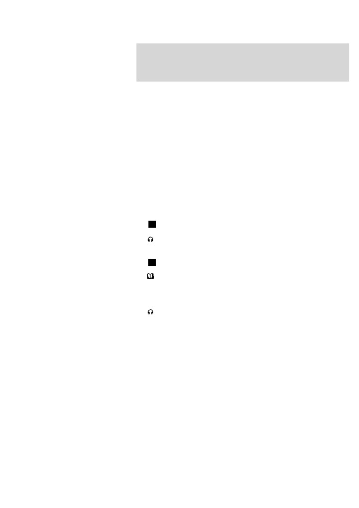
Lesson 8
Your Rights and Responsibilities
ARE YOU READY FOR THE LESSON?
In Lesson 8, Your Rights and Responsibilities, you'll listen in as a driver is pulled over for
speeding, and later you'll hear some tips about what you need to know if you get stopped
by a highway patrol officer. Then you'll learn some vocabulary and phrasal verbs about
crime and the law. But there's more. You'll also learn about:
•
The Passive Voice in the Simple Present and Present
Continuous Tenses
•
The Passive Voice in the Simple Past and Present
Perfect Tenses
•
The Passive Voice in the Simple Future and
Immediate Future Tenses
•
Idioms for a traffic stop and phrasal verbs related to the
law
But first, let's listen to how to link words with similar consonants in Say It Clearly! Ready?
8A SAY IT CLEARLY!
Turn on your CD to practice another common type of linking that you'll often hear in
relaxed or rapidly spoken English.
8B ENGLISH AT WORK
DIALOGUE: Do You Know Why I Pulled You Over?
Anyone who lives in the United States has certain basic rights and responsibilities.
One of those responsibilities is knowing traffic laws and following them when you
drive. Listen to the following dialogue about a driver who failed to pay attention to the
speed limit.
Officer
Good morning, ma'am.
Kathrine
Good morning, officer. What's the problem?
Officer
May I have your license and registration, please?
Kathrine
Of course. Could I ask why you stopped me?
Officer
Well, ma'am, do you know what the speed limit is?
Kathrine
It's 45, officer. I wasn't speeding. I know I was doing just under 45.
Officer
Do you know that this is a school zone?
Kathrine
I'm sorry, what?
Officer
This is a school zone, ma'am.The speed limit is 25, not 45.
Kathrine
But I just saw a sign. It said 45.
Officer
That was several blocks back, ma'am. This is a school zone, and the
speed limit is 25.
Kathrine
A school zone? What do you mean?
Lesson
8: Your Rights
and Responsibilities
73
Officer
A school zone is any street that borders
the grounds of
a school, or where kids
usually cross the street on their way to school. There are signs all over.
Kathrine I'm sorry, but I didn't see them. I don't normally drive this way, and I
don't understand how I could have known that there was a school here.
Officer
I understand that, ma'am,
but it's every
driver's responsibility to know the
traffic laws. Now, if you'll
just give me a
minute, I'll be
right back with
your
license and registration.
A few minutes
later...
Officer
Okay, ma'am, I'm going to
give you a citation for speeding in a school
zone.
Kathrine But officer, I already explained that I didn't know it was...
Officer
Ma'am, I'm
sorry about that, but you really need to pay
closer attention to the
signs, especially in areas
you're not familiar with. I clocked you at 43,
and the
speed limit
is 25. Luckily the kids are in
class now, but.
Kathrine Officer, this isn't fair! I...
Officer
Ma'am, I'm
going to ask you nicely not to argue with me. I noticed that you're
also missing a headlight,
and you don't
have your seat
belt on either.
I can give
you a ticket for those violations or just a
warning.
Kathrine Oh ... Um... I'm sorry, officer. I don't mean to argue.
Officer
If you disagree with this citation, it's your right to fight
it in court. All
of that
information is on the ticket. You can also call the number listed there
Kathrine Okay, um,
thank you, officer.
Officer
Have a nice day, and please, ma'am, be
more careful about the speed
limit. If
there were
children around, it could have been much worse than just
a ticket.
Kathrine Okay. Thank you, officer
8C BUILD YOUR VOCABULARY
Arrest. To place someone in custody
legally, to capture. You are allowed only one phone call
when
you are arrested.
Bribe. Money or something of value
used to try to influence another person. The officer was
offered a bribe of one
hundred dollars in exchange for not writing a
speeding ticket.
Citation. An official summons to appear in court, a
ticket. Mr. Timms received a
traffic
citation for exceeding
the speed limit
Code
compliance. Adherence to a
system of rules
that citizens are expected to follow in
certain situations, such as building construction. A building inspector came out to check on
the code compliance
of our new bathroom addition.
Convict. To find or prove guilty in a court of law. (Stress on second
syllable.) The burglar
was convicted of breaking and entering.
Convict. A person who has been sentenced to a prison term. (Stress on first syllable.)
In many prisons, convicts may receive special rewards or privileges for good behavior.
Custody. Control or
responsibility by an authority. Minors under eighteen are in the custody
of their parents or legal guardians.
74 FLUENT ENGLISH
Exception. A case where a rule does not app\y. Although the sign says "no dogs
allowed," seeing-eye dogs are an exception.
Felony. A serious crime, a crime declared a felony by statute, or a crime punishable by
imprisonment for more than one year. Dean was convicted of a felony—armed
robbery—and sent to prison.
Fine. Money paid as a penalty for breaking the law. It's a $500 fine for throwing litter out
your car window.
Handicapped zone. The parking space or spaces reserved for handicapped drivers. You
can be fined over $1000 for parking illegally in the handicapped zone.
Infraction. A violation, breaking the law. Driving without a seat belt is a minor
infraction, but you could still get a ticket.
Misdemeanor. A minor offense, a crime that is less serious than a felony. Running a
stop sign is a misdemeanor, but it's dangerous.
Municipal. Referring to a local government, such as a city or town. The municipal
building is in the center of town, and city government offices are there.
Noise abatement. Rules regarding the controlling of noise. Dog barking, construction,
or heavy-machinery operation may all be violations of noise abatement ordinances.
Peace officer. A police officer, a civil officer whose duty it is to keep the peace. Miguel Garcia
loves his job as a peace officer because it allows him to help people in his neighborhood.
Record. A record kept on the legal conduct of an individual. Well! Now that Jimmy has
three traffic tickets, he has a record!
Regulation. A rule adopted by a regulatory agency that implements or makes specific
the law. The regulations state that a front-yard fence must be six inches from the sidewalk.
Subpoena. A notice commanding the recipient to appear in court or be punished.
George finally got a subpoena for not paying his parking tickets, so he has to appear in
court next Tuesday.
Statute. Laws or rules passed by the legislature. Regulations receive power from
statutes. Some states have a statute against nude sunbathing.
8D ENGLISH UNDER THE HOOD
Lesson 8 focuses on the passive voice. Most of the verbs you've seen in this course—
and probably most of the verbs that you hear or use in general—are in the active voice.
The passive voice is formed with the verb to be and the past participle, and it is used
most frequently in a few situations:
When it's not important to know who or what does an action:
The trash is collected twice a week, but recyclables are taken away only once a week.
When it's not known who or what does an action:
My wallet has been stolen!
When the speaker wants to focus on an action rather than on who or what does
the action:
Lesson 8: Your Rights and Responsibilities
75
If the proposition is passed, everyone will be affected.
When a general statement is made about an action:
Crimes are often not reported in this neighborhood.
It is possible to mention the "agent" of a passive sentence, introduced by the
preposition by:
If the proposition is passed by the town council, everyone will be affected by the new law.
Crimes are often not reported in this neighborhood by citizens who don't trust the police.
Now let's look at the passive voice in a few particular tenses.
TOPIC 1: The Passive Voice in the Simple Present and Present Continuous Tenses
Remember that you can change the active present to the passive present by making the
object of the active sentence the subject of the passive. Use a form of to be and the past
participle of the main verb. If you want to mention the agent, use by right before it.
Active
Passive
Police officers write citations.
Citations are written by police officers.
That man is stealing my car!
My car is being stolen (by that man)!
PRACTICE EXERCISE 1: Change these active sentences into the passive. Do not
include the agent.
1. Bartenders do not serve alcoholic beverages to people under twenty-one.
2. Sam keeps the door open when it's hot during the day.
3. People in this town do not break the law.
4. Everyone trusts and respects that police officer.
5. A security system protects most of the houses in this neighborhood.
6. A thief is stealing that woman's purse.
7. A highway patrolman is pulling over the sports car we saw earlier.
8. The townspeople are debating the proposal for a new shopping center.
TOPIC 2: The Passive Voice in the Present Perfect and Simple Past Tenses
The present perfect tense of the passive voice uses have/has been + past participle,
and the past tense of the passive voice uses was/were + past participle.
Active
Passive
Someone has stolen Lucy's watch.
Lucy's watch has been stolen.
They vandalized the school last night! The school was vandalized last night!
PRACTICE EXERCISE 2: Change these active sentences into the passive. Again,
do not include an agent.
1. A thief took my wallet out of my back pocket.
2. Someone assaulted John in the park last night.
3. The police officer has warned James about fixing his taillights.
4. They have written a new report about crime rates in this city.
5. The people in this town have established a citizen's patrol association.
76 FLUENT ENGLISH
6. The voters defeated two proposals to build new shopping centers.
7. The reform candidate has beaten the mayor.
8. Someone saw the suspect leaving his house at 830 last night.
TOPIC 3: The Passive Voice in the Simple Future and Immediate Future Tenses
The future tense of the passive voice uses will be + past participle, and the immediate
future tense of the passive voice uses is/are going to be + past participle.
Active
Passive
The police will write a lot of tickets
A lot of tickets will be written this weekend,
this weekend.
People are not going to notice the
The traffic sign isn't going to be noticed,
traffic sign.
PRACTICE EXERCISE 3: Change these active sentences into the passive. Do not
use an agent.
1. Someone is going to challenge that new law as unconstitutional.
2. The authorities will prosecute all violators.
3. A tow-truck driver will tow illegally parked vehicles away.
4. They are going to raise the speed limit next year.
5. Someone is going to install a new security system at the museum.
6. The judge will dismiss the charges against the city council member.
7. The people in town are going to consider the proposal.
8. The arresting officer will read the suspect's rights.
8E PHRASAL VERBS FOR CRIMINAL ACTS
Break into.
To enter a house illegally, usually by breaking a window or door. Someone broke into
Mary and Ted's house last night and stole their television, VCR, and jewelry.
Break out.
To get out of prison through force or stealth. A prisoner broke out of state prison late
last night and is still at large.
Break up.
To disorganize, to cause to stop. Police broke up a stolen car ring after a
long undercover investigation.
Get away with.
a) To do something wrong without being caught or punished for it. The thief is going to get
away with his crimes because they don't have enough evidence against him.
b) To steal and escape with. The bank robbers got away with $10,000.
Get even.
To harm someone in some way to make them pay for a perceived injustice Jenny's
flirting with Elizabeth's boyfriend because she wants to get even with her.
Lesson 8: Your Rights and Responsibilities
77
Get off.
To be found not guilty of a crime Jerry got off on a technicality, even though everyone
knows he's guilty.
Lock up.
To put in prison, to incarcerate. Most people think murderers should be locked up for a long
time.
Make off with.
To steal and escape with. The thieves made off with a painting from the museum.
Pay off.
To bribe, to give money to someone in exchange for something illegal. The landlord was
paying off the building inspector for years, so no one knew how dangerous the building was.
Pin (something) on (someone).
To create evidence to make it look like an innocent person committed a crime.
Everyone knows that Jim didn't rob the liquor store. The Jones brothers pinned it on him.
Take (someone) for.
To take advantage of someone, usually for money. / heard that a scam artist took Mrs.
Higgins for $50,000!
Take a look at.
To study something carefully. Take a look at these mug shots, Ms. Jones, and see if you
can pick out the guy that attacked you.
Watch out for.
To guard someone or something. (Also look out for.) Julian's job was to watch out for the
police while the others were in the bank.
Throw the book at.
To prosecute someone to the full extent of the law. (The book means the law.) If Gary is
ever arrested again, they're going to throw the book at him.
8F REAL ENGLISH
YOU'RE BUSTED!
Have you ever gotten a ticket? I don't just mean a parking ticket. I mean a real driving
citation. If you have, then you know how it feels. You're driving down the freeway, feeling
good, cruising along, when out of nowhere you see that black-and-white sedan in your rear
view mirror. Your heart sinks to your feet."'Is it me? Is he after me?" You start sweating
buckets as you try to lift that lead foot off the accelerator to slow down. Then your
suspicions grow because you see that red light flashing. You might as well start pulling over
because next you're going to hear that big bullhorn telling you to "PULL OVER. PULL
OVER TO THE SIDE OF THE ROAD. PULL OVER, NOW!" So you pull over, breaking two
or three more traffic laws as you cross the freeway to get to the other side.
What is it about police officers that freaks us out? Could it be their build? Maybe it's the
uniforms, or the shades, or maybe it's the gun they're packing. Or maybe it's just an
78 FLUENT ENGLISH
encounter with the long arm of the law. Whatever it is, it's difficult to look the officer in
the eye and say,"did I do something wrong, officer?" in a clear, strong voice. Once
you've squeaked out that you've never had a ticket before, he looks at you and says,
"can I see your license and registration, please?"Then it's so hard to pull your license
out of your wallet, because you're all thumbs.
Once it's all over with and the cop has thrown the book at you in the form of a $500
ticket and told you to straighten up, he tells you that you can go. You try to wait until the
officer leaves the scene of the crime first, but he usually has paperwork to do. So, ever
so carefully, you ease back onto the freeway, feeling about two inches shorter and
driving at least 20 MPH slower than before.
8G BRING IT ALL TOGETHER
REVIEW EXERCISE 1: Vocabulary
Place the correct vocabulary word in each space. Use each of the following words once:
arrested, bribe, citation, code compliant, convicted, custody, exceptions, felony,fine,
handicapped zones, infraction, misdemeanor, municipal, noise abatement, peace officer,
records, regulations, subpoena, statutes.
1.
The city's _________ water district office is at Fourth and C.
2.
The police officers _________ the thief before he could get away.
3.
John's neighbor's accused him of breaking __________ laws when he had such a
loud party.
4.
If you receive a __________to go to court, the law says you must show up.
5.
Most people only have a few traffic tickets on their ___________ .
6.
The extra-large parking spaces marked by blue lines are the __________ .
7.
If you are found guilty of a __________ ,you may not have to go to jail.
8.
If you are found guilty of a __________ , you will probably spend at least a year in jail.
9.
When the neighbors built an apartment less than three feet from my fence, they were
not _________ .
10.
When the county clerk accepted $50 and put it in his pocket, he was taking a
11.
Joe got a__________ for speeding in a residential zone.
12.
" _________ " is another word for a violation.
13.
A person who is charged with keeping the peace is a __________ .
14.
If you pay your _________ and go to traffic school, you can put the whole mess
behind you—and drive more carefully!
15.
In most states, a person cannot vote if he or she is _________ of a felony.
16.
There are a lot of _________ you need to know if you want to build an addition to
your house.
17.
When a child's parents are found guilty of a crime and jailed, the state takes
_________ of the child until a family can be found to take him or her.
18.
The governor signed twelve new __________ that will go into effect on January 1.
Lesson 8: Your Rights and Responsibilities
79
REVIEW EXERCISE 2: The Passive Voice in the Simple Present and Present
Continuous Tenses
Rewrite each of the following sentences in the passive voice. Use the agent this time.
1. The captain praises the officers in the department.
2. The mechanic is repairing the car right now.
3. Our neighbors are breaking the law.
4. People all over town hear the music from the concert.
5. The wind is blowing trash across the highway.
6. The legislature passes several new laws each year.
REVIEW EXERCISE 3: The Passive Voice in the Present Perfect and Simple Past
Tenses
Rewrite each of the following sentences in the passive voice. Use the agent this time.
1.
The couple has returned the car to the dealership.
2.
One of the students stole money from the teacher's purse.
3.
Someone has vandalized the library.
4.
A civil-rights group challenged the new law.
5.
Many journalists have reported the crime statistics from this city.
6.
The government raised the speed limit on interstate highways.
REVIEW EXERCISE 4: The Passive Voice in the Simple Future and Immediate
Future Tenses
Rewrite each of the following sentences in the passive voice. Use the agent this time.
1.
The police will escort the car to the hospital.
2.
The city is going to repair those streetlights.
3.
The city council will debate the issue tomorrow night.
4.
The police will eventually catch the criminal.
5.
The suspect's lawyers are going to call a press conference tonight.
6.
The people of the community will protest the new law.
REVIEW EXERCISE 5: Phrasal Verbs for Criminal Acts
Place the correct vocabulary word in each space. Use each of the following words
once: broke into, break up, got away with, get even, got off, made off with, locked up,
pinned (something) on (someone), take (someone) for, take a look at, watch out for,
threw the book at.
1.
The judge was so angry at what the criminal had done that he ___________ him.
2.
Jeremy wanted to _________ with Susan for telling the teacher that he cheated on
his test.
3.
Someone _________ their house last night and stole their computer equipment.
4.
Be careful of telephone scams. They could _________ you _________ a lot!
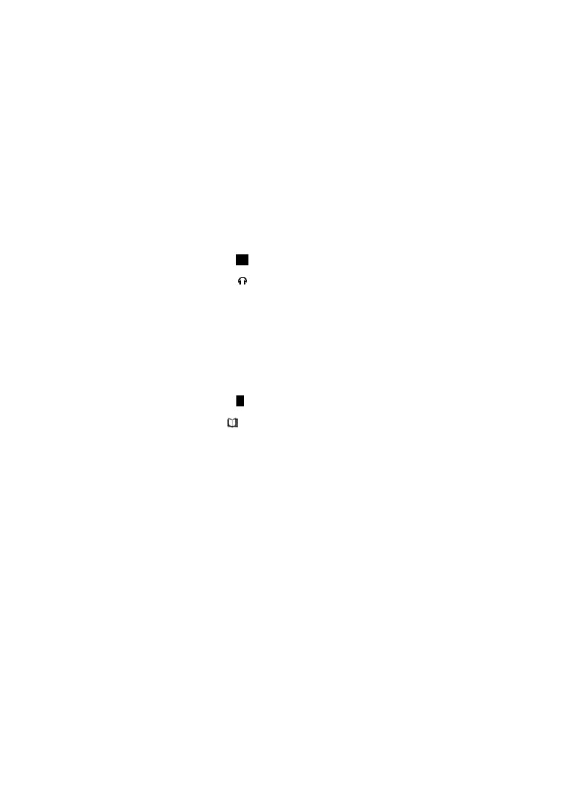
80 FLUENT ENGLISH
5. The thieves stole the diamond and __________ the crime _________ the
museum curator.
6. Since the crime was committed fifteen years ago and no one was ever caught, I guess
they __________ it.
7. The police asked the victim to __________ some photos of known criminals.
8. If you walk through the park at night, __________ muggers!
9. When the F. B. I. got the intelligence they needed they were able to __________ a
major terrorist cell.
10. The defendant hired a good lawyer and __________ on a technicality.
11. The art thieves__________ a Van Gogh and a Renoir!
12. If you're found guilty of a felony, you'll get___________ !
8H LISTEN UP!
Listen to the article and then decide whether the following statements are true or false.
1.
If you're on the highway and see a police officer's flashing light in your rearview
mirror, drive to the nearest police station.
2.
Roll down your passenger's side window to speak to the officer.
3.
You must have your driver's license and your passport.
4.
If you think the officer is wrong, argue with him or her.
5.
Go to court if you think the officer was wrong and let the judge decide.
6. You should never try to bribe a police officer.
8I WHY DO THEY DO THAT?
SOME IMPORTANT DRIVER'S RESPONSIBILITIES
Here are a few responsibilities for anyone driving on the streets and highways of the
United States that you may not know about.
EMERGENCY VEHICLES
You may have noticed that when they hear a siren, Americans immediately pull their cars
over to the right and stop and wait until the emergency vehicle passes before pulling out
again. This is because the siren tells drivers that the ambulance, fire engine, or police car
is on its way to an emergency. You can be ticketed for not pulling over, so be sure that
nothing obstructs your hearing and that you also pull over immediately. Everyone stops at
an intersection until the emergency vehicle has passed. If the emergency vehicle is behind
you when you are at a traffic light and you are blocking the street, even though the light is
red you may need to proceed through the intersection with caution until you can safely pull
over. The object is to get out of the way of the ambulance, police car, or fire truck as soon
as possible.
LITTERING
If you are driving along eating a hamburger or drinking a can of soda, keep the wrapper or
can in your car until you can stop and throw them away. Do not throw
Lesson 8: Your Rights and Responsibilities
81
anything out of the window of your car onto the road. Littering is considered very offensive
to many Americans, and it is also illegal. If you are caught you may have to pay a fine of
$1,000 or more depending upon the state laws on littering.
NOISE POLLUTION
It may also be illegal to turn your radio or CD player up so loud that other drivers can hear
it. There are laws in many cities or states against noise pollution, whether you are in your
home or in your car. You must be aware that other people do not enjoy the same music that
you do, and if someone complains, you may be fined for noise pollution.
HANDICAPPED PARKING
Most states have special parking places designated for handicapped drivers. In order to
park in handicapped zones you must get a permit from the state to hang in your window or
put on your dashboard. If you are not certified to park in handicapped zones you can be
fined as much as $1,000 in some states.
Lesson 8: Answer Key
Practice Exercise 1
1. Alcoholic beverages are not served to people under twenty-one. 2.The door is kept open
when it's hot during the day. 3.The law is not broken in this town. 4. That police officer is
trusted and respected. 5. Most of the houses in this neighborhood are protected. 6. That
woman's purse is being stolen. 7. The sports car we saw earlier is being pulled over. 8. The
proposal for a new shopping center is being debated.
Practice Exercise 2
1. My wallet was taken out of my back pocket. 2. John was assaulted in the park last night.
3. James has been warned about fixing his taillights. 4. A new report about crime rates in this city
has been written. 5. A citizen's patrol association has been established. 6. Two proposals to build
new shopping centers were defeated. 7. The mayor has been beaten. 8. The suspect was seen
leaving his house at 8:30 last night.
Practice Exercise 3
1. That new law is going to be challenged as unconstitutional. 2. All violators will be
prosecuted. 3. Illegally parked vehicles will be towed away. 4. The speed limit is going to be raised
next year. 5. A new security system is going to be installed at the museum. 6. The charges against
the city council member will be dismissed. 7. The proposal is going to be considered. 8. The
suspect's rights will be read.
Review Exercise 1
1. municipal 2. arrested 3. noise abatement 4. subpoena 5. records 6. handicapped zones
7. misdemeanor 8. felony 9. code compliant 10. bribe 11. citation 12. Infraction 13. peace officer 14.
fine 15. convicted 16. regulations 17. custody 18. statutes
Review Exercise 2
1.The officers in the department are praised by the captain. 2. The car is being repaired by the
mechanic right now. 3. The law is being broken by our neighbors. 4. The music from the concert is
heard by people all over town. 5. Trash is being blown across the highway by the wind. 6. Several
new laws are passed each year by the legislature.
Review Exercise 3
1. The car has been returned to the dealership by the couple. 2. Money from the teacher's
purse was stolen by one of the students. 3. The library has been vandalized by someone. 4. Th new
law was challenged by a civil-rights group. 5. The crime statistics from this city have bee reported by
many journalists. 6. The speed limit on interstate highways has been raised by the government.
Review Exercise 4
1. The car will be escorted to the hospital by the police. 2. Those streetlights are going to be
repaired by the city. 3. The issue will be debated by the city council tomorrow night. 4. The criminal
will eventually be caught by the police. 5. A press conference is going to be called tonight by the
suspect's lawyers. 6.The new law will be protested by the people of the community.
Review Exercise 5
1. threw the book at, 2. get even, 3. broke into, 4. take... for, 5. pinned ... on, 6. got away with,
7. take a look at, 8. watch out for, 9. break up, 10. got off, 11. made off with, 12. locked up
Listen Up!
1. False. 2. True. 3. False. 4. False. 5.True. 6. True
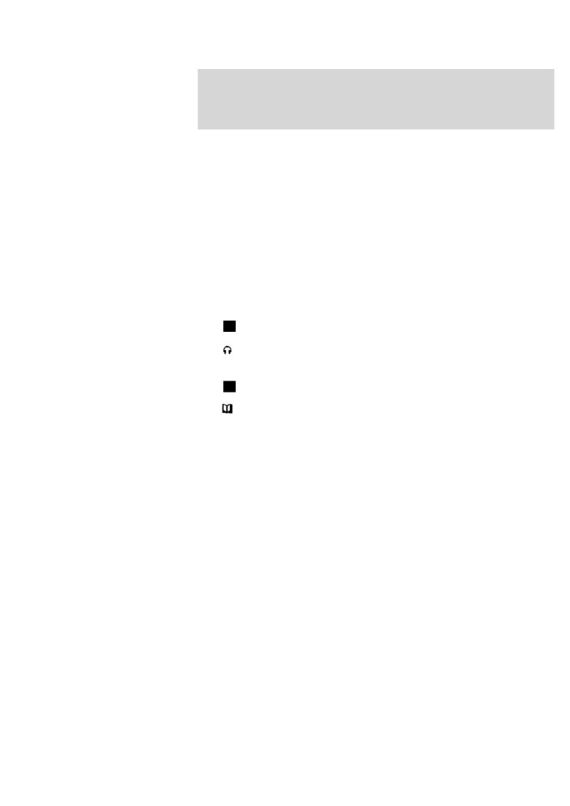
Lesson 9
This Is Paradise, Isn't It?
ARE YOU READY FOR THE LESSON?
Do you like to travel? Well, good, because in this lesson you'll read a letter about a Hawaiian
vacation and listen to two friends discuss their vacations over the phone. Then you'll learn
some idioms about travel and one of the reasons why we travel: work stress. But there's
more! You'll also learn about:
• Tag questions
• Negative questions
• Sentences that begin with negative adverbs
• Phrasal verbs with look
We'll finish up the lesson by learning some American travel customs. But first, let's get
started on the intonation of tag endings in Say It Clearly!
9A SAY IT CLEARLY!
Listen to your CD to practice the two different types of intonation used for tag
questions.
9B ENGLISH AT WORK
Reading: Aloha from Hawaii!
Meredith is on vacation in Hawaii, and she's taking a moment to write an e-mail
message to her friend, Kathy, who's not on vacation.
Dear Kathy,
Hey! Don't think I'm mean for sending you an e-mail while I'm sitting next to a pool in the
sun sipping one of those big tropical drinks while you're sitting at your computer in your
office back in Minneapolis! I'm just trying to send you some sun!
What a trip this has been! You remember how much I was looking forward to coming
here, don't you? Well, practically as soon as I arrived I began to catch a cold. What a
bummer! Anyway, I missed the hiking expedition we had planned. I had to stay in bed the
whole day, but David went and told me all about it when he got back. He said it was
unbelievable, so picturesque. They got to walk near the summit of a volcano! David said the
tour guide told them that the flora and fauna were relatively undisturbed and that the area
was reminiscent of what Hawaii used to look like before the tourists took it over.
I felt better the next day and was ready to start my adventures. Since we had more
than one and a half weeks left we decided I should go slowly; so we went for a cruise in a
glass-bottom boat. It was absolutely spectacular! The colors of the tropical fish and the coral
formations were just amazing. But I was still a bit sick, and I was pretty exhausted after the
cruise, so I just hung around the hotel for the rest of the day and read while David went off
and looked into some other things for us to do.
Lesson 9: This Is Paradise, Isn't It?
83
We spent a couple of days just walking around looking at the shops and lying on the
beach. When I started to feel like myself again, we decided to take an ecotour. We were
able to see how Hawaii has some amazingly different terrain. One of the things we saw was
a Hawaiian temple on a bluff above Waimea Bay. The panoramic view overlooking the
ocean from there was incredible. We also went to a bird sanctuary where we looked
through a telescope to enhance our view. Then we got to go for a walk on this absolutely
pristine beach where we saw plants, birds, dolphins, whales, and even a sea turtle.
I leave in a few days, but one of the last things I want to do here is visit Hawaii's lush
rainforest. You know all those commercials you see with the beautiful swaying coconut
trees, the white sand, and the turquoise-colored ocean, don't you? Well they're all true. I
can't wait to see the rainforest.
I hope you get to come to Hawaii someday soon. You'd just love it here, and it sure
beats January in Minneapolis. See you real soon,
Meredith
9C BUILD YOUR VOCABULARY
Bluff. A high, steep bank; a cliff; a land mass that rises steeply and is flat on top. The hotel
stood on a bluff overlooking the ocean.
Coral formations. Shapes made of coral. The Great Barrier Reef in Australia has a lot of
beautiful coral formations.
Cruise. A vacation on a boat, often an ocean liner. The Swifts took a cruise to the
Bahamas for their second honeymoon.
Ecotour. A tour of a natural habitat conducted in a manner that minimizes ecological
impact Jim prefers ecotours because he is an environmentalist at heart.
Enhance. To heighten, increase or improve the quality of something. The caramel sauce
enhanced the flavor of the crepes.
Exhausted. To be completely tired, to be drained of energy. We were completely
exhausted after our three-day trip to Chicago and back.
Expedition. A long journey taken for a specific reason; the group taking such a trip. Ed
Rumswell and George Clark planned an expedition to the top of Mt. Whitney.
Flora and fauna. Plant and animal life, respectively. The flora and fauna of remote islands
are often very unique.
Hiking. A long walk taken for pleasure or exercise, usually in a forested or
mountainous area. There are some wonderful hiking trails on Mt. Palomar.
Lush. Very rich in plant life, very green. Houses look best with lush plant life around them.
Picturesque. A scene so perfect that it looks like a picture; a very charming scene. The
quaint mountain cabin nestled among the hills and the trees looked quite picturesque.
Pristine. Fresh, clean, not polluted, in original condition. It's rare to find a truly pristine
beach anywhere in the world.
84 FLUENT ENGLISH
Reminiscent. Suggestive of a memory, similar to something remembered. Catalina
Island is reminiscent of San Francisco with its hills and houses perched in high places.
Sanctuary. A safe haven, a holy place; the room where worshipping takes place in a
church. Ned regarded his mountain home as a sanctuary that kept him safe from big
city life.
Shimmering. Softly shining with a quivering effect, as the sun on water. It's so beautiful
to watch the sun setting over the ocean with its lingering, shimmering glow.
Spectacular. Sensational, striking, visually stunning. The fireworks over the ocean were
spectacular last night!
Summit. The top of a mountain, the highest point of something. Since Sir Edmond
Hillary reached the summit of Mt. Everest, many others have also accomplished this feat.
Terrain. A geographical area, often used to describe the environment or physical
features of an area. The terrain of the Midwest is completely different from that of the
western region of the United States.
Tropical. With a climate like the area near the equator. People on the West Coast like to
simulate a tropical environment in their yards, even though tropical plants use a lot of
water.
Turquoise. Light greenish blue; a mineral of the same name. Come see the shimmering
turquoise waters of the Florida Keys.
9D ENGLISH UNDER THE HOOD
TOPIC 1: Tag Questions
Use tag questions when you want to be sure that you are correct or when you want to
seek agreement. Tag questions are composed of a statement followed by a helping
verb and a pronoun in inverted order like a question. A negative tag question follows
affirmative statements. The negative ending is usually a contraction.
You like to take ecotours to Costa Rica, don't you?
A positive tag ending follows negative statements.
You're not taking vacation this month, are you?
The helping verb on the tag ending must agree with the tense of the statement it is
attached to.
You travel to Nova Scotia every year, don't you?
You didn't take the train to Cincinnati, did you?
They're coming tomorrow, aren't they?
You've been to Greece before, haven't you?
This is paradise, isn't it?
If the statement contains can, could, would, should, or must, repeat it in the tag ending.
You can't speak Arabic, can you?
Lesson 9: This Is Paradise, Isn't It?
85
/ shouldn't take a vacation this month, should I?
If the statement contains have to, has to, need(s) to, or want(s) to, use do or does in the tag
ending.
We have to leave first thing tomorrow morning, don't we?
She doesn't want to take the tour, does she?
Knowing what pronoun to use in the tag ending isn't always easy. Here are a few hints to
help you make the decision.
If the subject is this or that, use it in the tag ending.
This is your passport, isn't it?
That isn't an American passport, is it?
If the subject is these or those, use they in the tag ending.
Those are your bags, aren't they?
These aren't very good seats, are they?
Use it for indefinite pronouns that refer to things, such as everything, something, or
anything. Use they for indefinite pronouns that refer to people, such as everybody,
everyone, someone, or anyone.
Everything is okay here, isn't it?
Everyone on th is flight has checked luggage, haven't they?
If the subject of the statement is a negative word such as nothing or no one, or if never is
used in the sentence, follow it with a positive tag ending.
No one lives here, do they?
Nothing is going right on this trip, is it?
Follow / am in the statement portion with aren't I in the tag ending. The formal ending
is am I not, but this is rarely used and may sound stilted.
I'm in the aisle seat, aren't I?
Remember that the negative contraction for will is won't.
She'll be there, won't she?
PRACTICE EXERCISE 1: Finish each sentence with the correct tag ending.
1. You have to pick up your kids at the airport, __________ ?
2. There were too many babies on the flight, __________ ?
3. You never eat before going skiing, _________ ?
4. We can't go to Spain for vacation, _________ ?
5. The bus will be late, _________ ?
6. This isn't your boarding pass, __________?
7. Your boss won't be back from Hawaii tomorrow, __________ ?
8. Mary hasn't ever been to Italy, _________ ?
86 FLUENT ENGLISH
9. This seat isn't yours,_____________ ?
10. No one liked the restaurant, ____________ ?
TOPIC 2: Negative Questions
Negative questions are used when the speaker has a strong expectation or assumption
of a positive answer. They can express a range of emotions from uncertainty, surprise,
or shock to anger or suspicion, depending on the tone of voice used.
Don't you have to work today? (I'm surprised that you're not at work.)
Don't you have anything to do? (I'm annoyed or angry that you're here.)
Doesn't it ever rain here? (I'm surprised because it's so dry.)
Don't they know any better? (I'm shocked that they would do something so stupid.)
When beginning sentences with negatives, use contractions.
Isn't it cold? Don't you want to bring a sweater?
The non-contracted "is it not cold" or "do you not want" are rarely used and sound very
formal.
The responses to negative questions can be confusing. Take the example: Aren't you
supposed to be at work? The response, Yes, I am means you are supposed to be at work.
But if it is a holiday or you took the day off, the response is No, I'm not, meaning: No,
I'm not supposed to be at work.
PRACTICE EXERCISE 2: Fill in the blanks with the appropriate negative questions.
1.
Why didn't you eat your lunch? __________ you hungry?
2.
Why is it so dry here? _________ it ever rain in this city?
3.
You can't be tired! _________ you sleep on the flight?
4.
They're taking a cruise to Alaska? __________ that too expensive?
5.
He's traveling by train? _________ that take too long?
6.
Jordan is going back to Brazil? _________ he go there last year?
7.
The plane is landing already? __________ it running late earlier?
8.
You're checking your e-mail? _________ you supposed to be on vacation?
TOPIC 3: Beginning Sentences with Negative Adverbs
In order to make a more emphatic statement, you can begin a sentence with a
negative adverb such as never, rarely, not once, hardly ever, seldom, or scarcely.
Sentences that begin in this way invert the order of subject and verb.
Rarely had I seen him so angry as when the airline lost his luggage.
Never would I have agreed to such a thing if I had known the truth!
Notice that these statements are the emphatic equivalents of "I had rarely seen him...|
and "I would never have agreed ..."In both cases, there is an auxiliary verb—had and
would. To make an emphatic statement out of a sentence that doesn't contain an
auxiliary verb, such as "I seldom hear such good news" or "Jim never slept so deeply as
on vacation,"you have to add an auxiliary
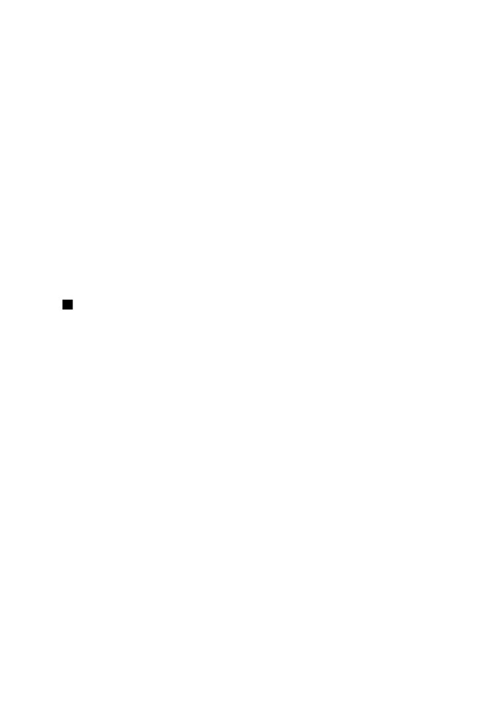
Lesson 9: This Is Paradise, Isn't It?
87
Seldom do I hear such good news!
Never did Jim sleep so deeply as on vacation!
Notice that this word order can be used not only for emphasis, but also for a dramatic or
even poetic quality.
Never had she felt so lost and alone.
Rarely had the night seemed so long and lonely.
PRACTICE EXERCISE 3: Rewrite the following sentences so that they begin with
negative adverbs.
1. We had never seen such beautiful mountains.
2. Paul had scarcely left the house when the blizzard hit.
3. Jim had rarely spoken with such sincerity.
4. We seldom take such relaxing trips.
5. The Harding family hardly ever went on vacation.
6. Tony rarely goes to bed before midnight.
7. I had never seen such clear water as during our trip to Curacao.
8. The sky had never looked so ominous.
9E PHRASAL VERBS WITH LOOK:
Look after.
To watch carefully, as in babysitting. Could you look after my kids for about a half hour so I
can run to the store?
Look around for.
To search for something. If you don't find the plane tickets on the table, look around for
them.
Look at.
To watch or study; to consider. Look at that beautiful waterfall. It's spectacular!
Look away.
To stop looking at something, to turn one's eyes away. Look away from the sun or you'll
hurt your eyes!
Look for.
To hunt for something lost or misplaced Jake looked for his keys for twenty minutes before
finally finding them.
Look forward to.
To anticipate with pleasure. Are you looking forward to your trip to Hawaii?
Look in on.
To check on, to see if someone is okay. Joe always looks in on his kids right before he
goes to bed.
Look into.
To research; to find information. The human resources department should always look into
prospective employees' backgrounds.
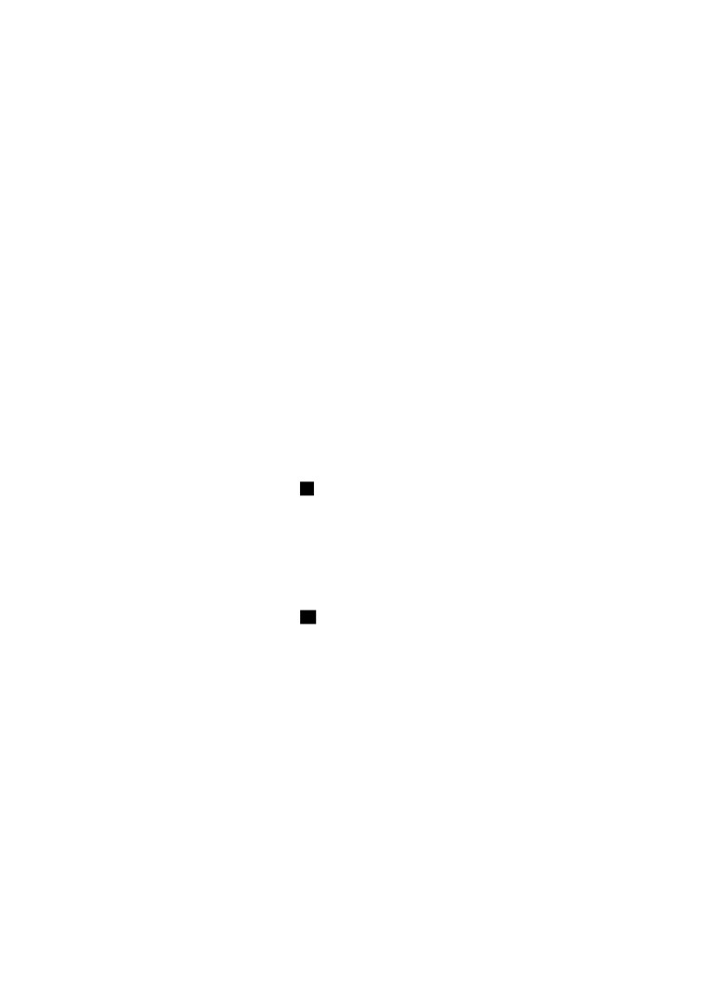
88 FLUENT ENGLISH
Look on.
To watch or observe in order to gain knowledge or information. If you're doing a new
procedure, do you mind if I look on to see how it's done?
Look out for.
a) To watch or wait for. Look out for the waiter and ask him for some water if he comes by.
b) To be carefuI of. Look out for that icy patch on the road!
Look out on/over.
To be above a view. Our hotel balcony looked out on/over a beautiful bay.
Look over.
To inspect or examine. Class, be sure to look over your papers before turning them in.
Look (someone) up.
a) To make contact with, especially during a visit to another city. If I'm ever in Montreal,
be sure to look you up so we can have dinner.
Look (something) up.
b) To find, as in an answer or a definition. If you don't know a word, look it up in your
dictionary.
Look up.
c) To seem to be improving. The weather's looking up, so we can finally spend time on the
beach tomorrow.
Look up to.
To view someone with respect and admiration Jenny had always looked up to her
father and tried to follow his example.
9F REAL ENGLISH
YOUR ISLAND GETAWAY
If you're all stressed out because you've got your nose to the grindstone and you're up
to your ears in work, don't have a nervous breakdown. Why not break away? Take a trip
to an island paradise. You can take it easy while living it up. You'll find the water warm
and soothing, and the views will absolutely take your breath away. So come on, why
not check it out? See you there.
9G BRING IT ALL TOGETHER
REVIEW EXERCISE 1: Vocabulary
Fill in the blanks with the words below.
bluff, coral formations, cruise, ecotour, enhances, exhausted, expedition, flora and fauna,
hiking, lush, picturesque, pristine, reminiscent, sanctuary, shimmering, spectacular,
summit, terrain, tropical, turquoise
1. Bob's favorite form of exercise is __________ in the mountains.
2. We went scuba diving so that we could see the __________ up close.
Lesson 9: This Is Paradise, Isn't It?
89
3. Dina's _________ after her busy three-day trip to San Francisco.
4. All the _________ plant life makes your garden look like a jungle!
5. Is the__________hilly, flat, or mountainous in your country?
6. If you're concerned about the environment, try an __________ for your next vacation.
7. The moon's reflection was __________on the lake.
8. While at Big Sur, Jim and Mary sat on a high __________ overlooking the Pacific
Ocean below.
9. What a _________ scene, with all the pine trees surrounding the clear blue lake!
10. You look great in _________ ; it's one of your best colors.
11. Your new haircut _________ the best features in your face.
12. The image on the new plasma TV is _________ .
13. _______________ to an island getaway are the most romantic vacations.
14. The national park preserves hundreds of square miles of _________ wilderness.
15. Joe fantasizes about being at a_________ beach, sitting under palm trees with a tall,
cool drink in his hand.
16. Charles Darwin was fascinated by the _________ of the Galapagos.
17. Penny regarded her bedroom as her _________ away from the difficulties of school.
18. Take a picture of the valley below when you reach the _________ .
19. The writer's fans found her latest book __________ of her much earlier novels.
20. The _________ to King Tut's tomb was interesting and exciting.
REVIEW EXERCISE 2: Tag Questions
Supply the correct tag ending.
1. You look tired. You aren't sick, _________ ?
2. Kevin's lost a lot of weight. You don't think he looks too thin, ___________?
3. The streets were wet this morning. It didn't rain, ___________ ?
4. I'm sitting next to you on the plane, __________ ?
5. You can postpone your vacation one week, _________ ?
6. She's been to the Caribbean before, _________ ?
7.
_______________________________________ Ann hasn't left for the excursion yet,
?
8. You'll come with us,_________ ?
REVIEW EXERCISE 3: Negative Questions
Complete the following negative questions by supplying the proper auxiliary.
1.________________ you ever been to California before?
2. _____________ you just love to sit on the beach and relax when you're on vacation?
3. ____________ you remember to pack you passport last night?
4. ___________ I taking the same flight as you?
5. ____________ the guided tour that we took of the chateau fascinating?
6. ___________ Thai cuisine one of the most delicious in the world?
90 FLUENT ENGLISH
7. __________ that guy take the same flight as we did?
8. __________ you at least try to learn some Arabic before your trip to Cairo next month
REVIEW EXERCISE 4: Beginning Sentences with Negative Adverbs
Rewrite each of the following sentences so that they begin with negative adverbs.
1. Murray has never taken such a long vacation.
2. I seldom have the opportunity to meet such interesting people.
3. Janet hardly ever leaves the office before 6:30 in the evening.
4. I had never felt so frightened on a flight.
5. We had scarcely arrived at the beach when the weather turned ugly.
6. The kids have never swum in such warm water.
7. The flowers have never looked so stunning.
8. The children hardly ever take an interest in museums.
REVIEW EXERCISE 5: Phrasal Verbs with look
Fill in the sentences with the following phrasal verbs.
look after, look at, looking for, looking forward to, look into, look out, looked out on, look
over, look up, look up to
1. We need to _________ the new charter school before we decide where Jamie should
go to school.
2. I'm _________ cheap flights on the Internet.
3. __________ for the sharp turns in the mountain roads.
4. Would you please __________ these plans _________ before we get started?
5. Most children__________ one or both of their parents.
6. Could you _________ our house while we're away?
7.
The Carlson's have been__________their cruise for months.
8. The houses in the hills all __________ the valley below.
9. __________ this brochure about hiking trails in the national park.
10. It's easy to _________ information on the Internet.
9H LISTEN UP!
Turn on your recording and listen in as Meredith and Kathy talk about a trip that Kathy
took while Meredith was in Hawaii. Then answer the following questions.
1.
What country was Kathy's vacation in?
2. What did Kathy learn to do while she was there?
3. What do cliff divers hold in their hands?
4. What type of jewelry does Kathy show Meredith?
5. Did Kathy like the food she ate there?
6. What was Kathy doing when she met someone?
Lesson 9: This Is Paradise, Isn't It?
91
9I WHY DO THEY DO THAT?
Travel in America
Americans travel a lot. And, as you read in an earlier lesson, Americans also love their cars.
So it's not surprising to know that Americans' favorite mode of transportation to take a trip is
the automobile. According to a study of 80,000 households in 1995, over 80 percent of all
trips were taken in personal vehicles. Even for long trips between 500 and 1,000 miles,
Americans chose to drive 75 percent of the time. That is compared to only 15.6 percent who
traveled by plane. And most of these trips were for long distances, too. According to the
same study, the average American traveled over 3,000 miles on long-distance trips. Most of
this travel took place within the United States. Only about 4 percent of the long distance trips
were to other countries.
What does all this say about the American character? Once again, personal freedom is the
primary reason why Americans choose cars over all other types of transportation. Americans
want to be in control of what they see, where they go, what they do, and when they do it.
There's something special about getting in a car and just driving off. But why are the long-
distance trips primarily confined to the U.S.? There could be a few reasons for that. It could
be economics, or it could be a symptom of an isolationist mentality some people associate
with Americans. Or it could be simple geography— the U.S. is a vast country, so it's possible
to travel distances here that would take a person through two or more countries in some
other parts of the world. Whatever the reason, there's a lot to see and a lot of people and
places to visit, so it's no wonder that the "road trip" is a beloved part of American culture.
Statistics taken from Americans Prefer Cars for Long Trips, by Scott Bowles, Cincinnati.com, Sept. 3, 2003
Lesson 9: Answer Key
Practice Exercise 1
1. don't you 2. weren't there 3. do you 4. can we 5. won't it 6. is it 7 will he/she 8. has she 9. is it
10. did they
Practice Exercise 2
1. Aren't/Weren't, 2. Doesn't, 3. Didn't, 4. Isn't, 5. Doesn't/Won't, 6. Didn't, 7. Wasn't, 8. Aren't
Practice Exercise 3
1. Never had we seen such beautiful mountains. 2. Scarcely had Paul left the house when the
blizzard hit. 3. Rarely had Jim spoken with such sincerity. 4. Seldom do we take such relaxing trips. 5.
Hardly ever did the Harding family go on vacation. 6. Rarely does Tony go to bed before midnight. 7.
Never had I seen such clear water as during our trip to Curacao. 8. Never had the sky looked so
ominous.
Review Exercise 1
1. hiking, 2. coral formations, 3. exhausted, 4. lush, 5. terrain, 6. ecotour, 7. shimmering, 8. bluff,
9. picturesque, 10. turquoise, 11. enhances, 12. spectacular, 13. Cruises, 14. pristine, 15. tropical, 16. flora
and fauna, 17. sanctuary, 18. summit, 19. reminiscent, 20. expedition
Review Exercise 2
1. are you 2. do you 3. did it 4. aren't I 5. can't you 6. hasn't she 7. has she 8. won't you
Review Exercise 3
1. Haven't, 2. Don't / Won't, 3. Didn't, 4. Aren't 5. Wasn't, 6. Isn't 7. Didn't 8. Won't
Review Exercise 4
1. Never has Murray taken such a long vacation. 2. Seldom do I have the opportunity to meet
such interesting people. 3. Hardly ever does Janet leave the office before 6:30 in the evening. 4.
Never had I felt so frightened on a flight. 5. Scarcely had we arrived the beach when the weather
turned ugly. 6. Never have the kids swum in such warm water. 7. Never have the flowers looked so
stunning. 8. Hardly ever do the children take an interest in museums.
Review Exercise 5
1. look into, 2. looking for, 3. look out, 4. look... over, 5. look up to, 6. look after, 7 looking forward
to, 8. looked out on, 9. Look at, 10. look up
Listen Up!
1. Mexico, 2. Dance the salsa, 3. Torches, 4. A silver bracelet, 5. Yes, 6. Dancing
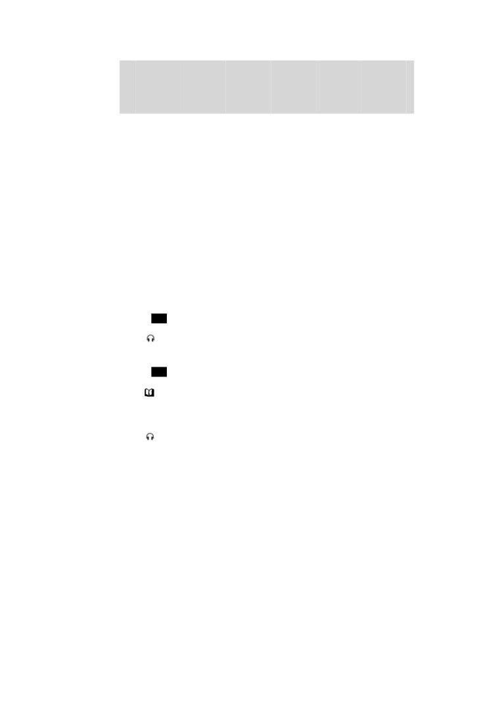
Lesson
10
Take Me
Out to the
Ball Game
ARE YOU READY FOR
THE LESSON?
Do you
enjoy watching
sports for entertainment? If you
do, then Lesson 10, Take Me
Out to the Ball Game!,
will tell you everything you want to know about
sports in
America. You'll hear some TV announcers talking about baseball playoffs in English at
Work. Then you'll hear
the final results
for the playoffs
in Listen Up! If
you're
wondering what America's favorite sport is, you'll find
out in Why Do They Do That?
You'll also learn:
• Reported Speech in the
Past, Present,
and Future
• Reported Speech Using
Modals
• Questions in Statement
Form
• Baseball Vocabulary
• Phrasal
Verbs with keep
in Real
English you'll learn some "entertaining" idioms, but that's not
all. So let's get
started
with Say It Clearly!
10A SAY IT CLEARLY!
Turn
on your recordings to practice
a very typical kind of question
used in natural
spoken English.
10B ENGLISH AT
WORK
Dialogue: It's a Great
Day for Baseball!
The Bisons and the
Mud Hens both
finished in first
place in their divisions. Now they
meet
in the playoffs to determine which team will go
to the League
Championship
Series. Channel 10 News is reporting.
Ted Thompson Well folks, it looks like we're going to have great weather for
the
playoffs. Let's go down to the stadium where Kevin
Brenten is covering the games
this weekend.
Kevin ... ?
Kevin Brenten Good afternoon,
Ted. It's a great day for baseball! Our own
Bisons will be taking on the Mud Hens here
in about thirty
minutes. It looks
good for our
team. They have to win four
out of seven to
go on to the
League Championship Series,
and the first two
games are at home, so our guy have the
home-field advantage.
The Bisons lineup has all the best hitters going out there
first, and they're
starting with Jed Buck, one
of the best
pitchers in the league. I spoke to a few of the
players earlier
today, and they're really excited and confident about the
playoffs. Jed said his arm had
never felt better First
baseman, Marty
Bevins, said his arm was healed up and
ready to
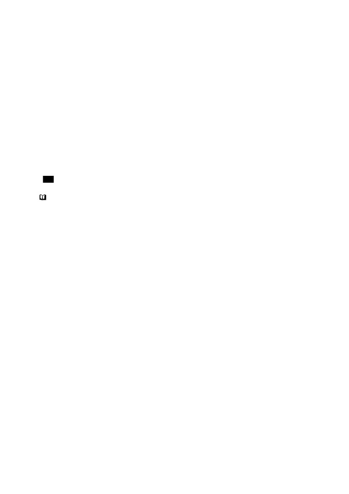
Lesson 10: Take Me Out to the Ball Game!
93
play. Coach Carl
Lyons said that although this would be his
second
chance for the League Championship Series,
he's much more
confident that they're going for
the gold this time.
Ted Thompson Hey, that's great.
Say, what kind of a crowd you have out
there, Kevin?
Kevin Brenten Well, the stadium's getting pretty full. The folks out here seem real
excited. I see a lot of Mud Hens
fans, too. You
can tell there
are Mud
Hens fans because of all the orange out here!
But our fans
are here,
too, and they're really worked up. There are more tailgate parties out in
the
parking lot than usual.
Ted Thompson Wow, that sounds great, Kevin.
I wish I were there.
Kevin
Brenten I think the whole
city wants to be here today.
I hear traffic's
really
bad from all sides getting to the
stadium.
Ted Thompson Yeah, I heard the
same thing. Well, thanks Kevin. And of course,
Kevin will give a full report on the game later
on tonight. But now
let's turn back to
local news...
10C BU
ILD YOUR VOCABULARY
Base.
. Any one of three stations on
a baseball field
that runners must stop on or
touch
as they pass by to reach home plate (the starting point, also called home base.)
There
were
runners on all three bases when Rick came up
to bat.
Bunt.
A light tap with
the baseball bat on a pitched
ball, making the
ball roll only a
short
distance. Some pitchers can't hit a baseball very far, so they often
bunt.
Catcher. The player
who stands behind home plate
to catch the ball that's pitched
to a
hitter
on the opposing team. The catcher put his mask on and signaled that he was ready
to play ball.
Concessionaire. The owner or operator of a concession stand (a
small shop) at a
recreation center. The concessionaires had a meeting to discuss price changes before the
big game.
Diamond. The part
of the playing field that is outlined by three bases and home
plate
and is
in the shape of a diamond. "It's a homerun! Willy's running the whole diamond."
Fly ball. A ball hit very high into the
air, usually making it easy for
someone to catch it.
John
hit a fly ball into
left field and got the third out
of the inning.
Foul
ball. A ball that
is hit outside the base lines, out of bounds to
the right or the
left of
the diamond. Timmy
caught afoul ball when he was
sitting on the sidelines.
Hit. A
baseball hit that is within the sidelines of the
diamond. After
three foul balls,
Edgar
finally
got a hit and made it to first base.
Home
run. A ball that is hit beyond the playing field
allowing the hitter to run all three
bases
and return to home base, scoring one point.
There is always
a contest to see who
can hit the most home runs in one season.
Infield. The part of the playing field that is outlined
by a line connecting the three
bases
and home plate. / think that ball was hit just inside the infield. Let's see what the umpire
says.
94 FLUENT ENGLISH
Innings. The period that both teams have to hit the ball before they each get three
outs. An inning can last from a few minutes to an hour.There are nine innings per
game, but if there is a tie, additional innings are added. It's the bottom of the eighth
inning and the Carps are ahead by two runs.
Mound. A small hill built up in the middle of the infield where the pitcher stands and
pitches the ball. The pitcher kicked the dirt up on the mound as he wound up for the
throw.
Out. When a batter gets three strikes, a ball is caught before it hits the ground, or when
a runner is tagged while running from one base to another. There are three outs for
each team per inning. The runner was tagged out just before he got to second base.
Outfield. The playing field outside of the diamond or infield. The two players ran into
each other in the outfield as they raced to catch the ball.
Pitcher. The player who throws the ball for the batter to attempt to hit. Tom Lankey's
one of the best pitchers in the league.
R. B. I. The average of Runs Batted In. When a player hits the ball bringing a runner or
runners to home base. Ceroid Teague has such a good R. B. I. He's really one of the
most valuable players.
Roster. A listing of the team's players in their batting order. Pitchers usually can't hit
well, so coaches put them at the end of the roster.
Sacrifice fly. A ball that is intentionally hit high in the air to be caught before it hits the
ground, giving a runner on third base time to run to home base. McDermott saw that his
team had a chance to get another run, so he hit a sacrifice fly.
Slugger. A batter that hits the ball harder than most players. McDermott's such a good
slugger. He can really hit that ball harder than just about anyone.
Strike. When the batter swings and misses the ball, or does not swing at a ball that
was within the batting zone. "Here comes the ball. He swings... and he misses the ball!
Strike one."
Umpire. A sports official who makes decisions about plays made during a game. "Oh,
the fans did not like that call. They're yelling at the umpire. It looked to me like it was a
bad decision, too."
10D ENGLISH UNDER THE HOOD
TOPIC 1: Reported Speech: Past, Present, and Future
Reported speech is speech that reports what someone else said, but it is not a direct
quotation. For example:
Direct quotation:
"It's afoul ball! You're out!"
Reported Speech:
The umpire said that it was a foul ball and I was out.
Notice that the verb in the reported speech (was) changes tense from the direct
quotation [is or are) and that the pronoun changes logically (you became /). Also notice
that the reported speech is introduced by said in the case of statements, as in the
example above, but asked in the case of questions or requests, or told in the case
Lesson 10: Take Me Out to the Ball Game!
95
of commands. Let's take a look at some other examples of the past, present, and future
tenses, and compare direct quotes to reported speech. Pay careful attention to the verbs.
"/ study English every day."
He said (that) he studied English every day.
"I am studying English."
She said (that) she was studying English.
"Thierry has left for the game."
Nora said (that) Thierry had left for the game.
"I played baseball on Saturday."
The student said (that) she had played
baseball on Saturday.
"We will win the game."
They said (that) they would win the game.
"We are going to practice tonight."
They said that they were going to practice
tonight.
Here are a few examples of reported questions. Use ask to report questions and add if to
the beginning of the reported portion.
"Do you like basketball?"
Sarah asked me if I liked basketball.
"Are you watching the game?"
He asked if I was watching the game.
Ask is also used to report requests or polite commands. Notice that the requested verb is
put into an infinitive form.
"Could you please turn down the TV?" He asked me to turn down the TV.
"Would you mind sitting down?"
She asked me to sit down.
Use tell for commands, and again change the verb into an infinitive.
"Pass me the ball!"
He told me to pass him the ball.
"Hit the ball!"
The coach told the player to hit the ball.
PRACTICE EXERCISE 1: Change the following direct quotes into reported speech.
1 John: "I'm going to play hockey this weekend."
2. Sarah:"I will practice every day after school."
3. The players: "We are tired of losing!"
4. Coach Silver:"You are not trying hard enough."
5. The reporter:"lt is one of the most exciting games ever."
6. Gary: "We lost the game."
7. Betty:"I played soccer when I was a girl."
8. The woman:"Where is the stadium?"
9. Keith:"Give me the ball!"
10. Mary:"Do you prefer hockey or basketball?"
TOPIC 2: Using Modals in Reported Speech
When using the modals may, might, can, should, have to, ought to, or must in reported
speech, make the following replacements in the reported portion of the sentence: may and
might both become might, can becomes could, should remains should, ought to remains
ought to, and have to and must both become had to.
"I may buy season tickets."
He said he might buy season tickets.
"Dawn might come to the stadium."
He said that Dawn might come to the
stadium.
96 FLUENT ENGLISH
"Gerard can play the best."
She said that Gerard could,
play the best.
"I should join the swim team."
Doug said that he should join
the
swim team.
"Johan ought to win easily."
Lucia said that Johan ought to
win easily.
"We must win tomorrow!"
The coach said that we had to
win tomorrow.
"I have to work harder."
Paul said that he had to work
harder.
PRACTICE EXERCISE 2: Rewrite the following direct quotes into reported
speech.
1. Enrique: "I have to get some sleep for the big game tomorrow."
2. Adrian: "Each player must play as well as possible."
3. Harry:"That player may need the team doctor!"
4. Jane: "Bill ought to be at soccer practice right now."
5. The coach: "Can all of you come an hour early tomorrow?"
6. Daniel: "We might be tired after the workout."
7. Derrick: "Should we go to the game tonight?"
8. Lucy: "You must work out four or five times a week."
9. Lawrence: "We can see the whole ballpark from our seats!"
10. Reporter: "It has to be a hard decision for Coach Matthews."
TOPIC 3: Questions in Statement Form
As you heard in the Say It Clearly! section of this lesson, questions can have the same
word order and form as statements. This type of question often shows surprise,
disbelief, or uncertainty, but depending on the intonation used, just about any
question can take this form, especially in informal or spoken English. Here are a few
examples in context.
You're tired today? But you slept for ten hours last night!
It's Tuesday already? I thought it was Monday.
They lost the game? But they've been winning for weeks!
Tomorrow is the championship? I thought it wasn't for a few weeks.
PRACTICE EXERCISE 3: Rewrite each of the following questions in statement
form. Practice saying them aloud with high intonation.
1. Are you a fan of the Tigers?
2. Is Mark Sommer pitching tonight?
3. Did you join the wrestling team?
4. Are you going to buy season tickets?
5. Do you agree with the umpire?
6. Is Sarah planning on quitting the team?
7. Is the game tied?
8. Has the game gone into extra innings?
Lesson 10: Take Me Out to the Ball Game!
97
10E PHRASAL VERBS WITH KEEP:
Keep an eye on.
To watch carefully. Sam, can you keep an eye on my books while I go get another cup of
coffee?
Keep away from.
a)
To avoid something or someone. Kids, keep away from the street!
b)
To prevent someone from getting something. Keep those peanuts away from Judy.
She's allergic.
Keep in mind.
To think about or remember while making a decision. Always keep in mind how
important this project is.
Keep in touch.
To continue to communicate with someone. They worked together years ago, but they
still keep in touch.
Keep off.
To avoid, stay off of something, not to touch. Keep off the field! They just seeded it.
Keep on.
To continue to do something. Class, keep on working on your papers.
Keep out.
Not to enter, not to allow to enter. Keep out of the abandoned house. It's dangerous.
Keep time.
To function well, said of a clock or watch. I have to buy a new watch. Mine doesn't keep
time anymore.
Keep track of.
To maintain a record of something, to watch carefully. Keep track of how much you
spend so that you can get your money back.
Keep up with.
a)
To remain on the same level as someone else. Sarah can't keep up with the class
because she never studies.
b)
To be able to understand something that is fast or confusing. He talks so fast that it's
hard to keep up with him.
10F REAL ENGLISH
A Day at the Races
Have you ever been to the horse races? Well, I have, and it's a blast! But watching the
people can be more fun than watching the horses. A lot of people go dressed to kill! Man,
they look like a million dollars. On opening day, they actually compete to see who can wear
the most interesting or craziest hat. And if you've got stars in your eyes, here's one place
you might see some stars ... movie stars, that is. Seeing a star there could make your day.
Oh, and if you like watching fast horses, those horses will take your breath away. If you're
careful and don't bet too much money on the horses, going
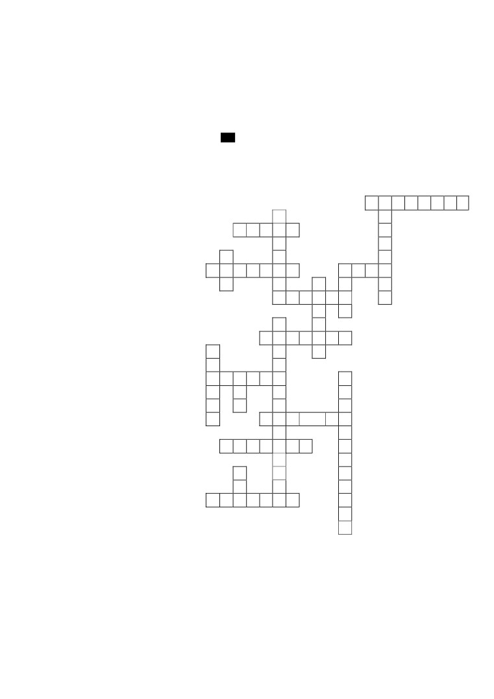
98 FLUENT ENGLISH
to the races can be a fun and entertaining experience that won't cost you an arm and a
leg. So go on, live it up! Co check out the horse races!
10G BRING IT ALL TOGETHER
REVIEW EXERCISE 1: Vocabulary
1
2
3
4
5
6
7
8
9
10
11
12
13
14
15
16
17
18
19
Across
6. A hard hitter
1. A hit outside the lines
7. A runner steps on this as he runs by.
4. The small hill where the pitcher
9. The shape made by the four bases
stands
Lesson 10: Take Me Out to the Ball Game!
99
11. A hit that goes beyond the
5. A ball hit high in the air and
playing field
then caught
13. When you can't hit the ball it's a
7. A hit that rolls a short distance
8. The person who decides if a play is good
16. The one who throws the ball to the
or not
batter
10. Person who sells snacks or other items
17. There are nine of these.
at a game
19. The person standing behind the batter
12. A list of players
14. Runs batted in
Down
2. The field beyond the diamond
15. This hit is used to help a runner
3. Inside the diamond
come home.
18. When a player doesn't make it home,
he or she is_________ .
REVIEW EXERCISE 2: Reported Speech: Past, Present, and Future
Rewrite the following direct quotes as reported speech.
1. Jaime:"Are you hungry?"
2. Meredith: "Is Kevin going to the zoo or the swimming pool?"
3. Stuart:"Give me a hand with the net, Joe."
4. Raul:"Will you be here tomorrow?"
5. Randy:"The washing machine was repaired this morning."
6. Tammy:"lt's going to be a great game!"
7. The reporter: "The fans have been having a great time all day!"
8. Mack: "Have you every seen a hockey game before?"
9. The umpire:"Play ball, team."
10. Coach Jordan:"Will you be able to play with your injured leg, Kelly?"
REVIEW EXERCISE 3: Using Modals in Reported Speech
Rewrite the following direct quotes as reported speech.
1. Robin:"Can you pick me up at 10:00?"
2. Jennifer:"I may come into town tomorrow."
3. Radha:"l might go shopping for tennis shoes tomorrow."
4. Arietta: "We must get the pool cleaned up."
5. Danielle: "They ought to be home by now."
6. Darren:"You should take some aspirin for your headache."
7. Tomas:"l have to call my mother before we leave."
8. Claudette:"l may drive instead of fly."
REVIEW EXERCISE 4: Questions in Statement Form
Rewrite each of the following questions in statement form.
1. Did you use to play professional football?
2. Did the Gremlins win the state championship?
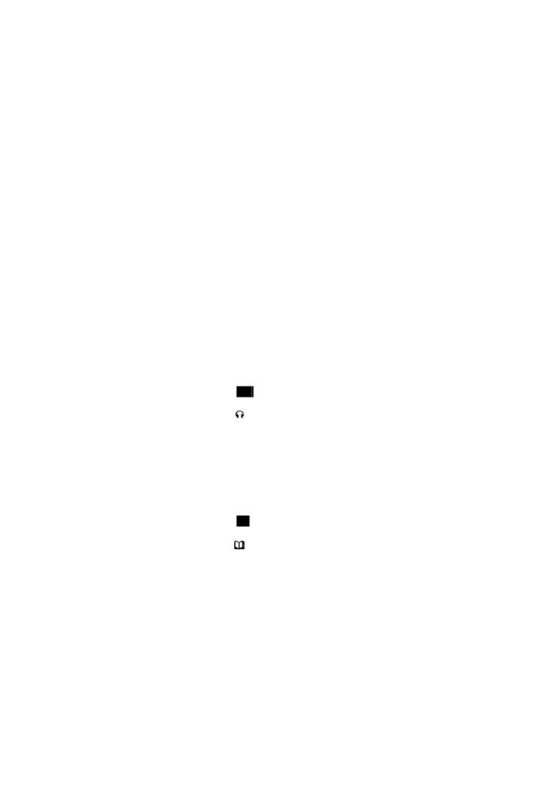
100
FLUENT ENGLISH
3.
Will you be coming to the playoffs this year?
4.
Have they replaced the head coach?
5.
Did you get on
the basketball team?
6.
Does he play golf with Mr. Stanton?
7.
Has the bus already left?
8.
Is Sarah trying
out for the wrestling team?
REVIEW EXERCISE 5: Phrasal Verbs
Place the correct vocabulary word in each space. Use each of the following
words
once: keep your
eye on, keep away from, keep
time, keep in mind, keep in touch, keep off,
keep on, keep
out, keep track
of, keep up with
1.
Can you help me _________ all the tickets we sell to the game?
2.
No one can _________ Ted. He runs faster than anyone.
3.
This watch needs a new battery. It doesn't
_________ anymore.
4.
__________the
carpet. I just had it cleaned and it's not dry yet.
5.
Just _________
the ball and swing!
6.
practicing your pitching and you'll get it right.
7.
the color of your room when you pick out curtains.
8.
Do you _________ with Terry,
your old friend
from college?
9.
Kids, _________ the swimming
pool when there's not an adult around.
10.
Could you _________ the kids_________ of
the house until
they take their
dirty
shoes off?
10H
LISTEN UP!
Now turn on your recording to
listen in again as Kevin and Ted report on that game
between the Bisons and the Mud Hens. Then
answer these questions.
1.
Is the ninth inning near the beginning or near
the end of the game?
2.
What's the score?
3.
Is Marty Bevins
pitching or hitting the ball?
4.
Who won the game?
5.
What was the final score?
10I WHY DO THEY DO THAT?
The Super Bowl
You may have
noticed that many Americans
are sports fanatics. They love just about
all sports. But
what's America's favorite sport? While most of
the rest of the
world is
crazy about soccer, Americans are lukewarm
about it. Soccer is just beginning to
become popular among young Americans, but it's not yet a national pastime
in any
way Some say that baseball is number one, others argue that football is. Still others
Lesson 10: Take Me Out to the Ball Game!
101
are basketball fans. Whichever sport is number one, one thing's for sure: the Super Bowl is
the most-watched sporting event of the year. In fact, it's the number one, most-watched
television show of the year, with 90 million viewers. What's so important about this one
game? The Super Bowl is where the two best football teams from two different leagues, the
National Football Conference and the American Football Conference, compete for the
championship title, so it's the most important game of the year.
But that's only part of the explanation. The other part is the halftime advertisements, which
are as entertaining as the game itself for many viewers. Advertisers seem to compete to
present a show with their ads, and many people watch the game only for the ads. The ads
are so important to advertisers that they pay $2. 1 million for ads that are only shown
during one Super Bowl. The halftime entertainment is also spectacular, with many big-
name entertainers and a huge fireworks display.
There are also many fascinating legends about the Super Bowl. One popular legend is that
the water systems in major cities are in danger of collapsing during Super Bowl halftime
because there are so many simultaneous toilet flushings! There may be some truth to this,
because at least one major city has had a problem with its water system during the Super
Bowl. It is also claimed that sales of antacids increase 20 percent the day after the Super
Bowl, and that a larger-than-usual number of people call in sick the next day instead of
going to work. This may be true as well, because of the large quantities of beer consumed
during the game and afterwards. California avocado growers say that they sell more
avocados than usual for Super-Bowl-Sunday guacamole dip. Grocers say sales for snacks
such as pretzels and potato chips double that weekend. And there is even an interesting
Super Bowl legend that has to do with the stock market. If the NFC team wins, the market
goes up that year. If the AFC team wins, the stock market goes down. Evidently, this is
accurate about 80 percent of the time! So what do you think? Are you ready to participate
in this great American tradition? If so, just be careful not to drink or eat too much! And of
course, keep track of your stocks!
Lesson 10: Answer Key
Practice Exercise 1
1. John said that he was going to play hockey this weekend. 2. Sarah said that she would
practice every day after school. 3. The players said that they were tired of losing. 4. Coach Silver
said that they were not trying hard enough. 5. The reporter said that it was one of the most
exciting games ever. 6. Gary said that they had lost the game. 7. Betty said that she had played
soccer when she was a girl. 8. The woman asked where the stadium was. 9. Keith told me to give
him the ball. 10. Mary asked if I preferred hockey or basketball.
Practice Exercise 2
I. Enrique said he had to get some sleep for the big game tomorrow. 2. Adrian said that each
player had to play as well as possible. 3. Harry said that that player might need the team doctor.
4. Jane said that Bill ought to be at soccer practice right now. 5. The coach asked if all of us could
come an hour early tomorrow. 6. Daniel said that we might be tired after the workout 7. Derrick
asked if we should go to the game tonight. 8. Lucy said that I had to work out four or five times a
week. 9. Lawrence said that we could see the whole ball park from our seats. lo. The reporter
said that it had to be a hard decision for Coach Matthews.
Practice Exercise 3
1. You're a fan of the Tigers? 2. Mark Sommer's pitching tonight? 3. You joined the wrestling
team? 4. You're going to buy season tickets? 5. You agree with the umpire? 6. Sarah's planning on
quitting the team? 7. The game's tied? 8. The game's gone into extra innings?
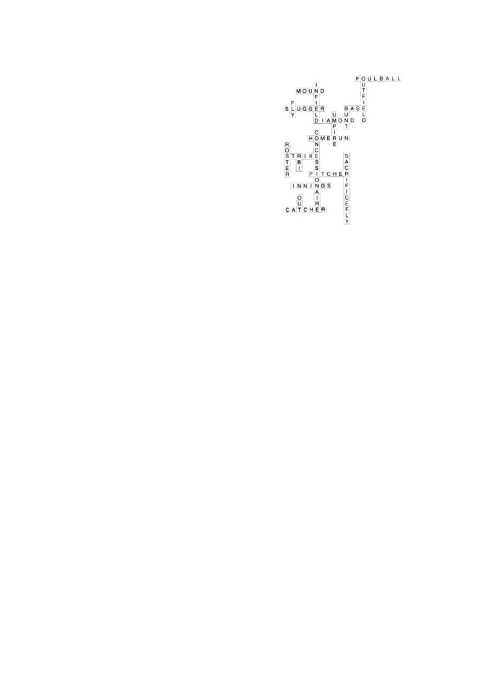
102 FLUENT ENGLISH
Review Exercise 1
Review Exercise 2
1. Jaime asked
if I was hungry. 2. Meredith asked if Kevin
was going to the zoo
or the
swimming pool. 3. Stuart asked Joe
to give him a hand with the net. 4. Raul asked if I would be
here tomorrow. 5. Randy said that the washing machine
had been repaired this morning. 6.
Tammy said that it was going to be
a great game. 7. The
reporter said that the
fans had been
having a great
time all day 8. Mack asked if I had ever seena hockey game before. 9.The
umpire told the
team to play ball. 10.
Coach Jordan asked
Kelly if she would be
able to play
with her injured leg.
Review Exercise 3
1. Robin asked
if I could pick her up
at 10:00. 2. Jennifer
said she might come
into town
tomorrow. 3. Radha said she might
go shopping for tennis
shoes tomorrow. 4. Arietta said we
had to get the pool cleaned up. 5. Danielle said they ought
to be home by now. 6.
. Darren said I
should take some aspirin for my headache. 7. Tomas said
he had to call his mother before we
left.8.Claudette said she might drive instead of fly
Review Exercise 4
1.You used to
play professional football? 2.The Gremlins
won the state championship?
3.You'll be coming to the playoffs this
year? 4.They've replaced the head coach? 5. You got on
the basketball team? 6. He plays golf with Mr. Stanton? 7.
The bus has already
left? 8. Sarah's
trying out for the wrestling team?
Review Exercise 5
1. keep track of,2. keep up with, 3. keep time, 4. Keep off, 5.
keep your eye on, 6. Keep on, 7. Keep
in mind, 8. keep in touch, 9. keep away from, 10. keep ...out
Listen Up!
1. the end, 2. a tie game, five to five, 3. hitting, 4. the Mud Hens, 5. six to five
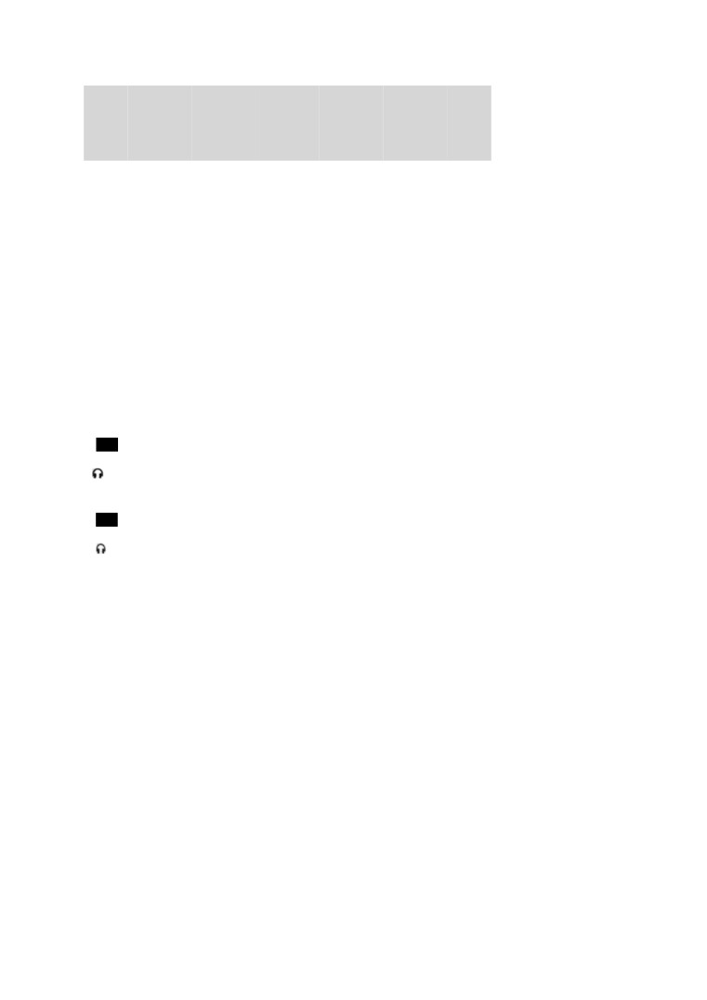
Lesson
11
Snail Mail Just Won't
Cut It!
ARE YOU READY
FOR THE LESSON?
Whether you're computer savvy or not, Lesson 11: Snail Mail Just Won't Cut It!
may give
you
some helpful information about using computers and the Internet. You'll read a brief
history of the Internet in English at
Work and learn some important computer vocabulary.
You'll also learn:
• The Present Perfect Tense vs. the Present
Perfect Progressive Tense
• The Present Perfect Progressive Tense vs. the
Past Perfect Progressive Tense
• The Future Progressive Tense
• Phrasal Verbs for the Computer
But
that's not all. You'll also read
about the Internet generation in
Why Do They
Do That?
and
learn some useful Internet and computer idioms. But let's get started with some
pronunciation in Say It Clearly!
11A SAY IT CLEARLY!
Turn on your recording to practice
two vowel sounds whose difference might be
a bit
tricky for you.
11B ENGLISH AT
WORK
Reading: A Brief
History of the
internet
The
idea for the Internet began back in the early
days of the Cold War. Feeling
nervous
about the possibility of a nuclear war, the American government began to wonder
how communications within the
military could
be maintained. Having communication
in one central location would make it vulnerable
to attack. So, in deep secrecy, Rand
Corporation began to work on a solution to this
chilling possibility in the 1960's. Paul
Baran of Rand Corporation came
up with the idea for the beginnings of the Internet, a
new communications system that would have
neither central
location nor authority
and
would be designed to operate in chaos. It was a brilliant solution to the possibility
of a
nuclear holocaust because it was intended
to be decentralized from the
beginning. Information would be
delivered through individual
nodes, each with its
own authority to send and receive messages. Information would wind its way around
this
system until
ultimately reaching its intended destination.
It wouldn't matter if one
or
another node were destroyed, because the information would remain "in
the air,"
received and sent
among whichever nodes remained.
To
realize this vision of a decentralized communications system, an ambitious
project
called ARPANET was assembled
in the U.S., and
its nodes were
the high-speed
supercomputers of the time. The first node was installed at U C L A in 1969, and three
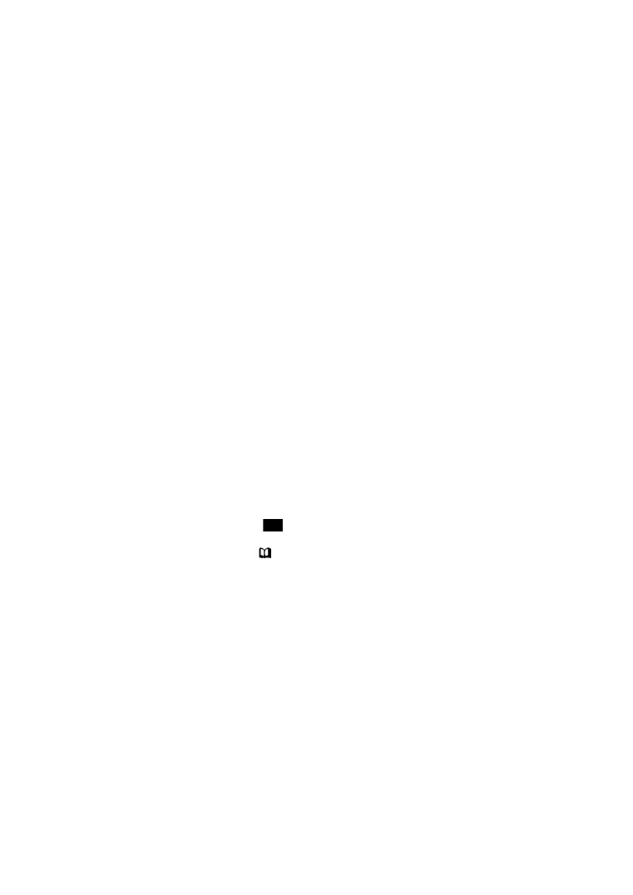
104 FLUENT ENGLISH
others were set up later that year. By the second year, this project unintentionally
turned into a high-speed mail service as those working on the project began to
transmit news and personal messages via this network. By the time the military
segment broke off and began its own system, ARPANET had begun to warp into
something different—a very large and rapidly growing network of communication
comprising several different systems.
This network became a galaxy of nodes as groups and individuals began to have
greater access to more powerful computers. This network evolved into the Internet as
we know it today, as this cheap and wondrous information and communications tool
was bound to become incredibly popular with the general public. Today it is a system
that, put simply, connects everyone to everyone else. Mail is transferred among
individuals from country to country, and discussions take place between people who
might never have had a chance to meet in person. But of course this kind of
communication is not all that happens over the Internet. It is perhaps more than
anything a vast warehouse of information, making it a tool for reference and
research. It is also an invaluable business tool, used by both businesses and
consumers. Although governments have some control over messages and information
on the Internet, there is no central control, no government that operates this network
of communication. It essentially belongs to the people. This can be both a good thing
and a bad thing, as such freedom necessarily allows for the exchange of any kind of
information or opinion.
Ironically, what grew from a fear of the potential annihilation of the human race has
given us peaceful possibilities we'd never imagined. The anarchy of the Internet is ripe
with the potential for truly connecting human beings, for allowing us to understand
one another in ways that would have been impossible. It is perhaps an
oversimplification to assume that all problems can be worked out through
communication, but communication is at least a start, and it can help avoid many
conflicts. Surely the Internet is a tool unlike any other for communication, and surely
the human race can greatly benefit from the ability of two people from across the
world to share, even in cyberspace.
Information taken from the Magazine of Fantasy and Science Fiction, February 1993, Science Column #5,
"Internet."
11C BUILD YOUR VOCABULARY
To bookmark. To save a U. R. L. page in the directory of one's Internet software. Since you
go to that website so often, why don't you bookmark it?
Browser. A computer program that enables use of the Internet. If your computer keeps
crashing when you're online, you may need to upgrade your browser.
C. P. U. Central processing unit. The key part of a computer,the"brains"and all of the
circuitry necessary for functioning. New computers keep coming out with faster and more
powerful C. P. U.'s.
Cursor. A moveable symbol such as an arrow, a hand, or a triangle that indicates
position on a screen. Move the cursor over the "send" button and click if you're done with
the message.
Diskette. A floppy disk, a small plastic disk coated with magnetic material that is used
Lesson 11: Snail Mail Just Won't Cut It!
105
to store data or information. Insert a diskette into the computer so we can copy this
report onto it.
File. A complete collection of data stored on a computer. / have several computer files
where I store everything I've written.
Hardware. The equipment components of a computer, the electronic parts such as CPU,
keyboard, screen, etc. You need to know what kind of hardware your computer has before
you can add anything to it.
Insert. To put something into a machine, such as a diskette into a computer. If you
don't insert this cable into the computer, your printer won't work.
Interface. The connection and/or communication between different machines, such as a
computer and a printer. This can also mean two people working together and
communicating. The computer and printer interface via this cable.
Keyboard. The typewriter-like board with letters and numbers that is used to give
commands to the computer. Bill spilled coffee on his keyboard, and now he can't type
anything.
Modem. The device that connects a computer to a cable or telephone line. You need
upgrade your modem before you can get high-speed Internet.
Monitor. The computer screen. Next time, I want to get a monitor capable of
showing videos.
Mouse. A small device that can be rolled to move the cursor and control various functions
on the computer. Move the cursor over the icon by rolling the mouse.
Scanner. A device that reads pictures and printed copies and stores them as files in 1
computer. If you want to put your picture on your website you can use the scanner.
Shareware. Limited-use software that can be used on a trial basis. Here, try this
shareware on English grammar and let me know what you think.
Software. Programs, tools or applications that are run on computer hardware. If you
use accounting software it's much easier to make budgets and file your income tax.
Spam. Unsolicited email sent to many addresses at once, usually commercial.
Advertisers try to disguise their spam by coming up with clever subject lines.
Upgrade. To improve something. I'd like to upgrade to a newer, faster computer.
Window. A box or opening on a computer screen where a program or application is
displayed. Your computer is running so slowly because you've got too many windows
open.
W. W. W. World Wide Web. A part of the Internet that is navigated by using different
addresses to access different sites. A lot of website addresses start with www.
11D ENGLISH UNDER THE HOOD
TOPIC 1: The Present Perfect Tense vs. the Present Perfect Progressive Tense
You learned about the present perfect tense in the first lesson. Remember that it's
formed with have/has + past participle.
106 FLUENT ENGLISH
We have seen that movie.
The present perfect describes an action that is finished, but it refers to a time frame
that is not finished.
We have visited San Francisco twice. (In our lives.)
/ worked five days last week, but I've only worked twice this week.
There is also a progressive or continuous form of this tense, the present perfect
progressive. It's formed with have/has been + verb + ing.
We have been watching that movie for two hours.
The present perfect progressive describes an action that began in the past and
continues into the present.
We have been visiting San Francisco for two weeks. (We are still in San Francisco.)
/ have been thinking about calling you. (I started thinking about it at some point in the
past, and I am still thinking about it.)
Some verbs can be used interchangeably and mean the same things in both tenses,
such as live, work and teach. Notice that these verbs suggest actions that take place
over a long period of time or as a process, or something that is practiced habitually,
such as a hobby or a tradition.
/ have worked in schools all my life.
I have been working in schools all my life.
We have come/been coming to this restaurant on our anniversary for years.
It's not common to use the verb be in the present perfect progressive tense.
/ have been here for two hours.
We have been on the nominating committee for four months.
However, in informal conversational English, it is possible to hear the present perfect
progressive form of be, often to talk about someone's behavior. Keep in mind that this
is a very relaxed, conversational form.
You've been (being) a real jerk ever since we got here!
She's been (being) extra helpful since the baby was born.
PRACTICE EXERCISE 1: Complete each sentence with either the present perfect
or the present perfect progressive form of the verb in parentheses. Keep in mind
that if an action continues you need to use the present perfect progressive, but if it
has ended use the present perfect.
1.
We (have) _________ three thunderstorms this week, but it's sunny now.
2.
The neighbors' dog (bark) __________ since IO:OO P.M.
3.
My computer (make) __________ an odd sound since I turned it on.
4.
The moon light (shimmer) ___________on the lake all night.
5.
That phone (ring) _________ about fifty times today!
Lesson 11: Snail Mail Just Won't Cut It!
107
6. The baby (cry) _________since we put her in bed.
7. Ms. Braylton (teach) ________ English for about twenty years now.
8. How long (collect) _________ you _________ glass bottles?
9. She (send) _________ me three e-mails this morning.
10. This (be) ________ such a wonderful evening.
TOPIC 2: The Present Perfect Progressive Tense vs. the Past Perfect
Progressive Tense
The past perfect progressive tense is formed with had been + verb + ing.
The doctor had been seeing patients all afternoon when I walked in.
As you have seen, the present perfect progressive is used to describe actions begun in
the past and continuing into the present.
The Drakes have been living in Toronto for a long time.
The past perfect progressive is used to describe actions that began and continued to
happen in the past before another action happened.
The Gonzalez family had been living in Seattle until Mr. Gonzalez got a promotion and the
family relocated to Miami.
Linda was exhausted last week because she hadn't been sleeping very well.
Notice that this tense is used to emphasize the relationship between two past
actions, one of which began and continued in the past before another one.
PRACTICE EXERCISE 2: Complete the sentences with either the present perfect
progressive or past perfect progressive of the verb given in parentheses.
1.
Janet (not feel)__________well for days before she finally went to the doctor.
2.
Joe (study) _________ for two hours, so he'll take a break now.
3.
The paper in my printer (get) __________ stuck for the last few days.
4.
We (have) __________meetings every day to discuss this problem until Bill finally
came up with a good way to make it work.
5.
Barry (work) _________ hard on the project for months before the new
director arrived.
6.
We (come) _________ to this restaurant for years, so they know us here.
7.
My car (work) __________poorly until I took it in to the mechanic.
8.
The tree (not get) __________ enough water lately
9.
The printer (buzz) _________ until I turned it off and then on again.
10.
Tom and Luann (see) _________ each other, but they broke up last week.
TOPIC 3: The Future Progressive Tense
The future progressive is formed with will be + verb + ing:
Jane will be working on her paper all weekend long.
There is also a future progressive formed with go: be going to + be + verb + ing. This
108 FLUENT ENGLISH
form is based on the immediate future, which was covered in Lesson 4, and usually
expresses actions that are in the near future.
Jane is going to be working on her paper all night.
Both express the same thing: an action that begins in the future and continues for a
period of time further into the future. This tense can emphasize that an action will occur
over a period of time, rather than happen as a one-time action.
/'// be cooking all afternoon for the dinner party.
We'll be staying at the beach house for two weeks.
It can also describe a future action that is interrupted by another action.
We'll be sleeping when you get in tonight, so please be quiet.
The movie will be starting when we get to the theater.
Often in conversational English the future progressive can be used simply to express a
plan or intention. In these cases it means the same as the simple future.
Lisa will be starting graduate school in September.
We'll be leaving in five minutes.
PRACTICE EXERCISE 3: Complete the sentences with either form of the future
progressive tense.
1.
We (visit) _________ my cousin over the holiday weekend.
2.
Dan (get) _________ home when his favorite show starts.
3.
The Dreyers (move) _________ to Denmark next October.
4.
Jerry (study) _________ all evening long.
5.
We (clean) _________ the house during the whole weekend.
6.
The election (take) __________ place next Tuesday.
7.
When (go) _________ you __________to Los Angeles?
8.
What time (call) __________ you _________ me tonight?
9.
The teachers (meet) _________ with parents all week long.
10. If you get home before 6:00, I (work)__________ still __________ .
11E PHRASAL VERBS FOR THE COMPUTER
Back up.
To make a copy in case something happens to the files on the computer. When you
have important work that you want to save, it's always a good idea to back up the files
on a computer disk.
Click on.
To move the mouse over an icon, word, or other object and click, if you click on this
icon you can change the screen color.
Hook up.
To connect to something. You may need a different cable to hook the printer up to
the computer.
Lesson 11: Snail Mail Just Won't Cut it!
109
Key in.
To type in. Key in this web address and it'll take you right to the information you want.
Log in/on.
To go onto a computer network by typing in a personal code. To check your mail, you
must first log on with your ID and password.
Log off.
To go off a computer network by signing out. Please remember to log off after you've
finished with the computer.
Power up.
To start the power, to turn on a machine. / need to power up the computer so I can get
started on my project.
Print out.
To make a copy of something from a computer or word processor. /'// print out that article
for you and leave it in your mailbox at work.
Pull down.
To click on a word or item that opens up a list of options or functions. If you click on the
word "tools" it will pull down a list of options.
Scroll down.
To move gradually to the bottom of text or graphics. Scroll down the page bottom and
you'll find the name of the web designer.
Scroll up.
To move gradually to the top of text or graphics. Scroll up until you find the search box,
then type in your question.
Se tup.
To assemble or prepare a piece of hardware. You have to set up the modem before you
can connect to the Internet.
Shut down.
To turn off a computer. If you're leaving for the day, shut down your computer.
Switch on.
To turn something on. Can you switch on the photocopier for me, please?
Turn off.
To shut down an operation, to stop the flow of energy by the use of a button or
switch. She turned off the spell checker before beginning to type in the document.
Turn on.
To activate or cause to energize by the use of a button or switch. Could you turn on the
TV? I want to watch the news.
11F REAL ENGLISH
Life Online
Man! My computer crashed again! And I really needed to get some messages out. I
couldn't send them through the U.S. Postal Service because snail mail just won't cut it.
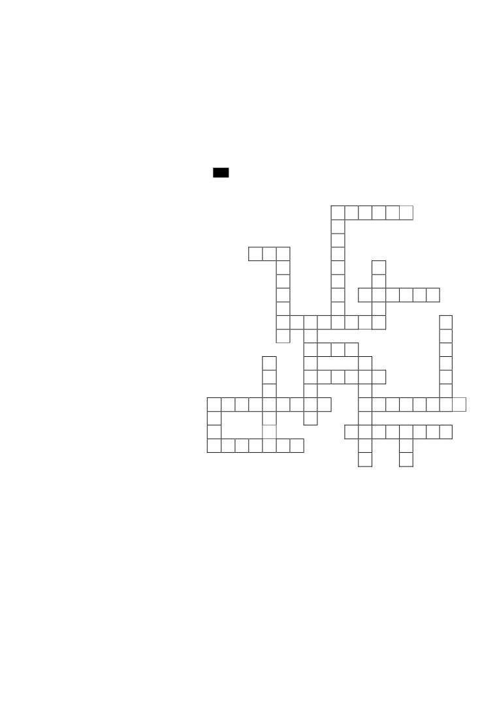
110 FLUENT ENGLISH
My whole day's been like this. When I booted up my computer again I had to wade
through all the spam before I could read my e-mail. Then just as I was about to open up
a message, the network went down. I guess some hacker had gotten into the company
server and messed things up. Later, when I finally went online again, I took care of my
e-mail, but then I decided to visit a chat room. I guess not everyone agreed with my
opinions, because I really got flamed!I know I'm no computer geek, but,hey,l do enjoy a
little chatting, emailing and blogging from time to time.
11G BRING IT ALL TOGETHER
REVIEW EXERCISE 1: Vocabulary
1
2
3
4
5
6
7
8
9
10
11
12
13
14
15
16
17
Across
1. To put something in a machine.
9. A document that you've written is one.
2. The "brain" of a computer.
12. An area on a computer screen where you
5. A moveable symbol on the screen.
work.
6. Where you can store a file.
13. Limited-use software.
Lesson 11: Snail Mail Just Won't Cut It!
111
14. Where the keys are.
7. Things that you run on a computer.
15. The physical equipment of a computer.
8. Something that can put photos and
17. The screen.
pictures on the computer.
10. A device that connects to the
Down
phone line.
1. How machines connect.
11. A quick way to go to a Website.
3. To improve.
13. Unwelcome e-mail.
4. A device that moves things around on
the screen.
16. World Wide Web
REVIEW EXERCISE 2: The Present Perfect vs. the Present Perfect Progressive
Complete the following sentences with either the present perfect or the present perfect
progressive.
1. It (take) __________six months, but I finally got a job.
2. It (rain) _________ just about all day long.
3. No, Tom (not call) _________ back on the McClintock case yet.
4. You (not finish) _________ your homework yet, but you're watching TV?
5. Our team (lose) _________ a lot lately.
6. How long (listen) _________ you _________ to the radio?
7. The sky (get)__________darker by the minute.
8. I (not buy)__________ a new computer yet.
REVIEW EXERCISE 3: The Present Perfect Progressive vs. the Past
Perfect Progressive
Complete the following sentences with either the present perfect progressive or the past
perfect progressive.
1. Dina (spend) _________ a few days in New York for a computer exposition.
2. The radio (play) _________ old Beatles songs all week.
3. They (eat) _________ dinner for thirty minutes when Paul finally arrived.
4. The newspaper delivery person (deliver) _________ the newspaper regularly
until he got sick last week.
5. Rick (look)___________ for a new laptop for months before making a decision.
6.
(take) _________ you _________ your medicine regularly?
7. I (not get) _________ much spam since we bought that new spam filter.
8. We (get) ________ coffee at the corner coffee shop until they closed.
REVIEW EXERCISE 4: The Future Progressive
Complete the sentences with the future progressive tense.
1. The doctor (make) _________ his rounds all morning.
2. Where (wait) _________ David _________ for you after work?
3. The President (speak) _________ to the press in the Rose Garden this afternoon.
112
FLUENT ENGLISH
4. The team (practice) __________on Friday from 1:00 until 4:30.
5. Our children (finish) __________ their lesson soon.
6. The patient in room 43 (have) __________ surgery at 7:00 A.M.
7. How long do you think you (use) __________ the computer today?
8.
(eat) _________ you __________ if I call you at 6:30 tonight?
REVIEW EXERCISE 5: Phrasal Verbs
Fill in each of the following sentences with the best phrasal verb.
logged on, power up, scroll down, logged off, back up, print out, click on, key in, set up,
shut down, hook up, pull down
1. Do you know how to __________ the new printer to the CPU?
2. Do I need the "www" when I __________ a web address?
3. I've already _________ because I didn't need the network anymore.
4. I'd also like to__________ a copy of that article to read on the train.
5. Let's _________ the report on disk just as a precaution.
6. You have to _________ the "send" button if you're done writing the e-mail.
7. Once you've __________ to the network you can check if you have any e-mail.
8. Do you have the software to __________ the CD-ROM drive?
9. The electricity went off and everything ___________ .
10.
the computer and let's get to work on the project.
11.
the "Tools menu" and select "Language."
12. You have to _________ a little more if you want to see the rest of the pictures.
11H LISTEN UP!
Now turn on your recording and listen in as Mrs. Albany tries to work through her
computer troubles with a technical support hotline. Then come back and answer the
following questions.
1. What is Mrs. Albany having problems with?
2. What's the first thing Duane recommends that she do?
3. Did Mrs. Albany install the printer herself?
4. Is the printer plugged in?
5. What is the problem with the outlet where the printer is plugged in?
6. Has Duane seen that kind of problem before?
11M WHY DO THEY DO THAT?
THE INTERNET GENERATION
When Americans have trouble with their computers, they are not likely to take them to
a shop to have them repaired if they have a teenager in the house. American
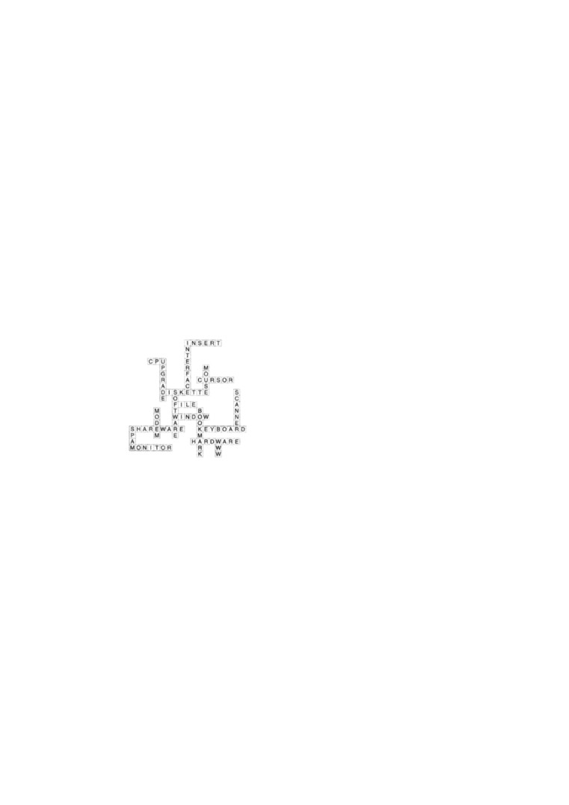
Lesson If: Snail Mail Just Won't Cut it!
113
teenagers, like many teenagers across the world, are very tech savvy. Born during the age
of P. C.'s and the Internet, nearly all Internet generation teens have had access to a
computer during their growing years. In fact, many teenagers know more about computers
than your average middle-age computer specialist. Although most American schools have
computers and computer classes, teenagers have learned about computers not by poring
over computer textbooks or by taking courses, but through trial and error. Some teens
have been given high-paying tech jobs because of their computer skills. Fourteen-year-
olds getting jobs as web designers, programmers, and computer teachers making $5,000 a
month is not a pipe dream; it is a reality. So next time your computer crashes, don't go to
the computer technician. Just ask the fourteen-year-old next door for help.
Lesson 11: Answer Key
Practice Exercise 1
1. have had, 2. has been barking, 3. has been making, 4. has been shimmering, 5. has rung,
6. has been crying, 7. has taught/has been teaching, 8. have... collected/been collecting, 9.
has sent, 10. has been
Practice Exercise 2
1. hadn't been feeling well, 2. has been studying, 3. has been getting, 4. had been having, 5. had
been working, 6. have been coming, 7. had been working, 8. hasn't been getting, 9. had been
buzzing, 10. had been seeing
Practice Exercise 3
1. will be visiting/are going to be visiting, 2. will be getting/is going to be getting, 3. will be
moving/are going to be moving, 4. will be studying/is going to be studying, 5. will be
cleaning/are going to be cleaning, 6. will be taking/is going to be taking, 7. will... be
going/are... going to be going, 8. will... be calling/are... going to be calling, 9, will be
meeting/are going to be meeting, 10. will... be working/am... going to be working.
Review Exercise 1
Review Exercise 2
1. has taken, 2. has been raining, 3. hasn't called, 4. haven't finished, 5. has been losing, 6. have...
been listening, 7. has been getting, 8. haven't bought
Review Exercise 3
1. has been spending, 2. has been playing, 3. had been eating, 4. had been delivering, 5. had
been looking 6. Have... been taking, 7. haven't been getting, 8. had been getting
Review Exercise 4
1. will be making/is going to be making, 2. will... be waiting/is... going to be waiting, 3. will
be speaking/is going to be speaking, 4. will be practicing/is going to be practicing, 5. will be
finishing/are going to be finishing, 6. will be having/is going to be having, 7. will be using/are
going to be using, 8. Will... be eating/Are... going to be eating
Review Exercise 5
1. hook up, 2. key in, 3. logged off 4. print out, 5. back up, 6. click on, 7. logged on 8. set up, 9. shut
down, 10. Power up, 11. Pull down, 12. scroll down
Listen Up!
1. Her printer isn't working. 2. He asks her to check the cable connections. 3. Yes. 4. Yes. 5. The
outlet is controlled by a light switch, and the light switch is off 6. Yes, very often.
Lesson 12
She'll Win by a Landslide!
ARE YOU READY FOR THE LESSON?
Are you interested in American politics? If so, then Lesson 12: She'll Win by a Landslide!
should be interesting to you. In this lesson, you'll learn some vocabulary about the
American system of government and some phrasal verbs about winning and losing
elections. You'll learn about the two sides of American politics in the reading America
Divided, But Always United. You'll also understand the role of religion in American
society a little better after reading Why Do They Do That? You'll also learn:
• The Progressive Form of Modals
• The Use of would rather
• Past Ability
• Idioms for Talking about Politics
You'll also hear about the beginnings of the international aid organization Habitat for
Humanity. But let's begin the lesson with some important pronunciation in Say It Clearly!
12A SAY IT CLEARLY!
Turn on your recording to practice consonant clusters in English and to learn how to make
them a bit easier to pronounce in natural speech.
12B ENGLISH AT WORK
READING: America Divided, But Always United
Since the early colonial days, Americans have at times been bitterly divided on
important political and social issues. Even the American Revolution of 1776 did not
enjoy overwhelming support among colonists, for example. Many colonial Americans
wanted their independence from England, but there was a group that was deeply loyal
to King George. The fight for freedom within the Thirteen Colonies was not won any
more easily than the war for independence from the British.
The most tragic and dramatic example of division in American society came almost one
hundred years later. The Civil War began in 1861 and ended in 1865, but there remains a
legacy of injustice and division to this day. The reason for such a rift in the country—the
northern and western states on one side and the southern states on the other—was the
issue of states' rights, especially as applied to the ability of the federal government to
prohibit slavery. When the South, whose economy was based on slavery, seceded, a
bloody war was fought for four years, and in many cases brother fought brother or father
fought son. Although in the end the Union was preserved, it came at a great cost, and
many economic, political, and social issues were left far from resolved.
In the late 1950s and 1960s, another civil war of sorts flared up within the United
Lesson 12: She'll Win by a Landslide!
115
States. This was the Civil Rights Movement, a struggle to secure basic civil rights for all
Americans regardless of race. The beginning of the movement is usually identified as the
Montgomery (Alabama) Bus Boycott, followed by years of protests, marches, sit-ins, and
the well-known August 28,1963 March on Washington, where Martin Luther King, Jr.'s
"I Have a Dream" speech was first heard.
The late 1960s produced another turbulent divide in American society, this time over
the Vietnam War. This division was primarily a division between supporters of the war
and the traditional views of government and power structure on one side, and
opponents to the war who held newer, more progressive ideas about solving world
problems on the other. As a result, the late 1960s was a time of great cultural clashes—
between young and old, between new and traditional, between liberal and
conservative.
This clash has of course not disappeared. On the social and political landscape of today,
many issues such as abortion, gun control, the environment, gay rights, religion, and
foreign policy, to name just a few, continue to divide the American people. While many
Americans hold moderate views, there is also a very deep gulf between liberals and
conservatives, right-wing Republicans and left-wing Democrats, the wealthy and the
working class. But as American history suggests, clashes are nothing new, and divides
are never impossible to close. In a sense it's possible to say that the American
government, with its system of checks and balances, was set up to deal with these
divisions, which are probably inevitable in free and democratic societies where people
can express views and attempt to influence their country as they see fit. To deal with
this, Americans have time after time opted to elect a President and a Congress with
opposing views, almost by instinct, to allow the checks and balances written into the
Constitution to operate and to protect the Union. There may always be intense division
within this country, but there is also a stronger drive to protect, above all, the union
that is the United States.
12C BUILD YOUR VOCABULARY
Administration. The executive branch of the United States government, the president and
his team. The American administration is in place for either four or eight years before a
new administration replaces it.
Congress. The Senate and the House of Representatives, elected to make laws in the U.S.
Congress passed some very controversial laws, and the president is threatening to veto.
Conservatism. A political and social philosophy that prefers the stability and structure of
very gradual change, if any. Many states in the South are known for conservatism,
although of course not everyone there is conservative.
Democracy. A government by the people, ruled by the majority through representation.
For a country to truly be a democracy, a majority of the people must vote to demonstrate
what they want to happen in their government.
Electorate. The group of people who are entitled to vote. The electorate makes its views
known when the majority vote for one or another candidate or proposition.
Ideology. A way of thinking or a set of beliefs, often political, social, or religious, that
116 FLUENT ENGLISH
determines the actions or policies of a particular group. Ideology can have such a
powerful hold that it can interfere with objective judgment.
Initiative. A way that citizens can petition to propose a law and submit it to legislators
for approvaI. Many people were so fed up with smoking in public that they began an
initiative to ban smoking in public places.
Liberalism. A political and social philosophy that does not adhere strictly to tradition,
encourages movement and innovation, and believes that change can often be progress.
Bob Ballard was raised in a very traditional family, but once he went away to college and
was exposed to other ideas he began to embrace liberalism.
Political parties. Groups of people who align themselves around certain political goals
or ideologies to form voting blocks. The United States has two primary political parties,
Republicans and Democrats, but there are several other smaller parties as well.
Politics. Governmental policy, the guiding and influencing of governmental policy, the
art of winning and holding control over government. Many Americans believe that it is
not polite to discuss religion, sex, or politics with people who are not close friends.
Polls. The place to cast one's vote during an election; a way to gauge public opinion
through questioning a certain percentage of the voting population. Countless polls are
taken before an election to help candidates determine whether their policies are popular
with voters or not.
Primary. An election where political parties choose candidates or select delegates to
represent them. Every four years, Americans vote for presidential candidates in their
states' primaries.
Public opinion. Views held by a majority of the public. Polls are often taken to gauge
public opinion so that politicians know whether their policies are popular or not.
Republic. A government whose leader is not a monarch but is an elected official,
usually a president. The power of a republic rests with its voting citizens, but is exercised
by officials elected by those citizens.
12D ENGLISH UNDER THE HOOD
TOPIC 1: The Progressive Form of Modals
Just like other verbs, modals have progressive forms. In the present tense, the
progressive form of a modal is modal + be + verb + ing.
Juana must be working late tonight.
Robert may be studying for his exams.
Progressive modals indicate an action happening right now. If you would like to
review the modals and their specific meanings, turn back to Lesson 7, degrees of
certainty.
PRACTICE EXERCISE 1: Fill in the blanks with the correct modal: could, may,
might, must, or should, and be + verb + ing.
1. Something (burn) __________ because I smell smoke.
Lesson 12: She'll Win by a Landslide!
117
2. The candidate (give) _________ a press conference tonight, but I'm not sure.
3. The polls haven't changed, so the ad campaign (not work) ___________ .
4. Don't you have a test tomorrow? You (study) __________ .
5. If people are paying attention to the scandals, the race (get) __________ close.
6. Diane is very liberal, so she (vote) _________ for McAllen.
7. I (clean) _________instead of reading, since my house is such a mess.
8. I don't believe you! You (kid) _________ me!
9. If you don't know the candidates' positions, you (read) ___________the
papers more!
10. I thought I saw Maggie's car at her mother's house, so she (visit) __________ her.
TOPIC 2: The Use of would rather
Would rather is a way to show a preference. Use would rather + base verb for the
present tense form. Notice that would is usually contracted to 'd.
We'd rather stay home and watch television.
Use would rather + have + past participle for the past form.
I'd rather have seen the candidate talk about his position on gun control.
Use would rather + be + verb + ing for the progressive form.
He'd rather be sitting in the back of the class.
When making comparisons, use than between the two choices, and use the same form
of the verb.
Max would rather go to the movies than stay home.
I would rather have gone to the movies than rented a video.
If the second verb is the same verb as the first, you do not need to repeat the verb the
second time.
Dan and Joyce would rather be sitting on the beach than at home.
PRACTICE EXERCISE 2: Fill in the sentences with the correct form of would
rather. First use the present form, and don't forget how to make comparisons.
1.
(go) ________ you . ______to the movies or the beach?
2.
I (vote) _________ for a candidate I agree with __________ one I like.
3.
We (take) _________ the bus __________ a taxi.
4.
Jo (not go) _________ out in the rain to vote.
Now use the past form.
5.
Barry (become) _________ a teacher __________ a lawyer.
6.
Congressman Phelps (not be) __________involved in such a scandal.
7.
Mindy (get) __________ a newspaper __________ a magazine.
Finally, use the continuous form.
8.
We (sleep) _________ right now.
118 FLUENT ENGLISH
9. The candidates (give) __________ prepared statements than (answer) __________
questions.
10. Everyone (feel) ________ more trusting of politicians.
TOPIC 3: Past Ability
As you know, can expresses ability in the present. In the past, can becomes could.
Tom could beat anybody in a race when he was in the third grade.
They couldn't make it to the meeting on time this morning.
It is also possible to use be able to to express ability. In the past this becomes
was/were able to.
Tom was able to beat anybody in a race when he was in the third grade.
They weren't able to make it to the meeting on time this morning.
PRACTICE EXERCISE 3: Use either could, be able to, couldn't, or wasn't/weren't
able to correctly in the following sentences.
1. Before he was in politics, Bill (say) __________ things much more freely.
2. Who (speak)__________ another language before the age often?
3. It rained all day yesterday, so Sandy (not go) _________ for her usual walk.
4. Nobody (get) _________ to the polls during the morning because of the weather.
5. Since I didn't have to go to work yesterday, I (watch) __________ my favorite afternoon
TV talk show.
6. Because Danny studied so hard for the test, he (pass) __________ it easily.
7. Because she was so popular, Silvia (climb) __________in the polls very easily.
8. Trent (not take) _________ the mayor seriously because he seemed so slick.
9. Randy (not beat) _________ anybody at chess until he got some training.
10. Drake was such a popular governor that he (win) __________easily against
his challenger.
12E PHRASAL VERBS FOR WINNING AND LOSING:
Bring down.
To make the opposition look less attractive to voters and to decrease his/her popularity.
To defeat. Max Brown used every trick he knew to bring down his opponent before the
election took place.
Catch up.
To reach the same level or stage as someone else. Although Phyllis Jam was behind for
a long time, she caught up with her opponent and actually won the election.
Clean up.
To win by a wide margin. Joe Schmitz really cleaned up! He won in almost every county
in the state.
Hold out.
To wait until the end, to continue to make an effort to win. Even though Ruth
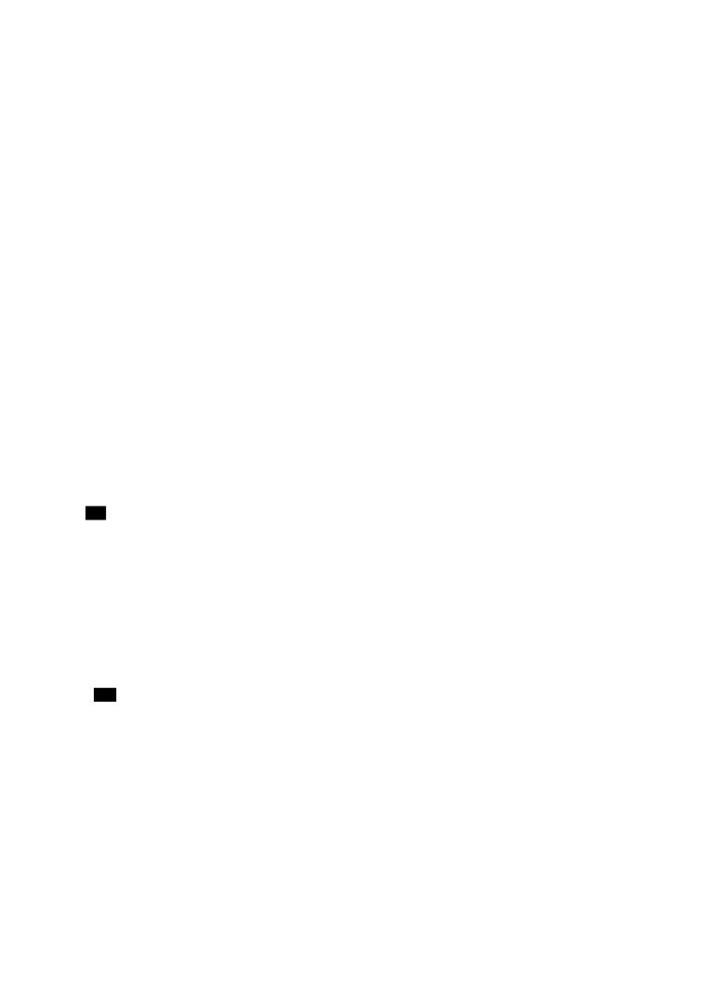
Lesson 12: She'll Win by a Landslide!
119
Ballard was not doing well in the polls, she decided to hold out until the end of
the primaries.
Luck out.
To accomplish something seemingly through luck, to win unexpectedly. Even though
nobody expected him to win or even come in second or third, he lucked out and won the
election.
Stick with.
To remain with; to stay on a certain course. Many people were upset with the president for
lying, but they stuck with him anyway and gave him a second term.
Stand up for.
To be strong in one's opinions. You have to respect Elvira Anninger even if you don't agree
with her, because she really stands up for her views on immigration.
Run away with.
To win with a lot more votes than one's opponents. Deek Janes ran away with the
election with a two-thirds majority vote.
Take off.
To have one's political popularity increase very rapidly. When Lind came out against the
proposition his candidacy really took off, and now he's the leading candidate.
Trail behind.
To have a small percentage of the vote. Lukas came in with 51 percent of the vote,
Bender with 46.5 percent, and Krantz trailed behind with only 2.5 percent.
Turn around.
To change the course of an election in one's favor. Mayor Riggs was able to turn the
election around when he found an issue people really cared about.
12F REAL ENGLISH
Does She Have What It Takes?
Everyone knows that Betty Cam prey will not rule out a run for the presidency. But is she
cut out for the most important job in the land? Does she have what it takes'! No matter
what people think, all this speculation about her run serves a purpose. She gets a lot of
attention, and she stays on people's minds. It stands to reason, though, that she wants the
job, since she has hinted at it before. Right now, she stands as much of a chance as any
of the other candidates for the presidency. She really has what it takes. But she needs to
be careful. If she doesn't make a firm decision soon she may miss the boat. She has to
take the bull by the horns and throw her hat in the ring. If she does that, she may well
quickly rise to the top and win by a landslide.
12G BRING IT ALL TOGETHER
REVIEW EXERCISE 1: Vocabulary
Match each of the following words to the correct definition.
a. administration, b. congress, c. conservatism, d. democracy, e. electorate, f. ideology,
120 FLUENT ENGLISH
g. initiative, h. liberalism, i. political parties, j. politics, k. polls, I. primary, m. public opinion,
n. republic
1. ________ Views that are considered traditional and unchanging.
2.
__________ Views that emphasize tradition less and are and open to change.
3.
_________ The people who vote.
4. _________ The field of governing, of influencing people and governments.
5.
_________ A measure placed on the ballot by voters because they have petitioned
for it.
6. ___________ The first election, in which a party chooses its candidate.
7. ______________ The president and his cabinet.
8. _________ Croups that represent certain political views that people choose to
align with.
12. __________ A government of and by the people.
13. The elected body of people who each represent their district or state and who make
laws.
14. __________ A government whose leader is not a monarch, but is elected by
the people.
12. _____________ A place to go and vote.
13. _____________A political view or way of thinking held by one segment of the population.
14. ___________ Current views held by most people at any given time.
REVIEW EXERCISE 2: The Progressive Form of Modals
Fill in the blanks with the correct modal: could, may, might, must, or should, and be +
verb + ing.
1. l can hear the loudspeakers! The demonstration (start) ___________already.
2. After so many ad campaigns, Conway (pulling) __________ ahead in the polls.
3. It's supposed to be a relaxed family dinner, so we (not talk) __________ about politics!
4. Ron, if you feel so strongly about politics, you (get) __________ more involved.
5. Lopez (announce) _________ her candidacy this afternoon, but we'll have to see.
6. We (campaign) _________ for Abrams if we support him so much.
7. You (not discuss) __________this issue with people unless you know their opinions.
8. Morel has hired a campaign manager, so he (run) __________ for governor.
REVIEW EXERCISE 3: The Use of would rather
Fill in the sentences with the correct form of would rather. First use the present form.
1. We (have) _________ a real choice among candidates.
2.
(read) __________you__________ the newspaper first?
3. Nat (live) _________ in Washington __________ California.
Use the past form.
4. Lynn (listen) __________ to the debate on the radio than (see) __________ it on TV.
Lesson 12: She'll Win by a Landslide!
121
5.
I think he (not have) __________ to answer that question.
Use the continuous form.
6.
Letty (go) _________ to work __________(stay) __________home.
7.
(take) _________ you _________ a trip up the coast?
8.
Everybody (work) _________ right now than sitting in this meeting.
REVIEW EXERCISE 4: Past Ability
Use either could, be able to, couldn't, or wasn't /weren't able to correctly in the
following sentences.
1.
Daniels (gain) __________a lot of support from older voters because of the stand he
took on prescription medicine.
2.
Voters (read)__________ about important issues in the brochures that were sent out.
3.
We (decide) _________ on the ballot initiative only after talking to many people.
4.
People (not believe) _________ anything the candidate said after he was caught
in a lie.
5.
Which candidates (get) _________ their names on the ballots this year?
6.
The campaign volunteers (sleep) _________ the night before election day.
7.
Sally (not list) _________ any reasons for why I should support her favorite candidate.
8.
Nobody (feel) _________ confident about the election because it was so close.
REVIEW EXERCISE 5: Phrasal Verbs
Fill in the blanks with one of the following phrasal verbs.
bring down, catch up, clean up, luck out, stick with, stand up for, run away with, take off, trail
behind, turn around
1.
Since this is the first election you've ever run in and you won, do you feel that you
,
or was it hard work?
2.
The former governor did so well in his run for Senate, beating everyone by a wide margin,
that he really ________________ the election.
3.
The only way to win is to work hard and __________ it or people will think you
aren't serious.
4.
A little-known governor from a small state made history by ___________ the
powerful president.
5.
It's not impossible to change the course of this election, but it will take a lot of
campaigning to _________ this election __________ .
6.
People like a candidate who _________ his views even if they don't agree with
those positions.
7.
Those candidates who__________ in the early primary vote usually drop out of
the race.
8.
What does it take to __________ with the front-runner? Hard work, dedication
and luck!
9.
The senator's reelection campaign has begun to __________ ever since the disclosure
of his opponent's financial dealings.
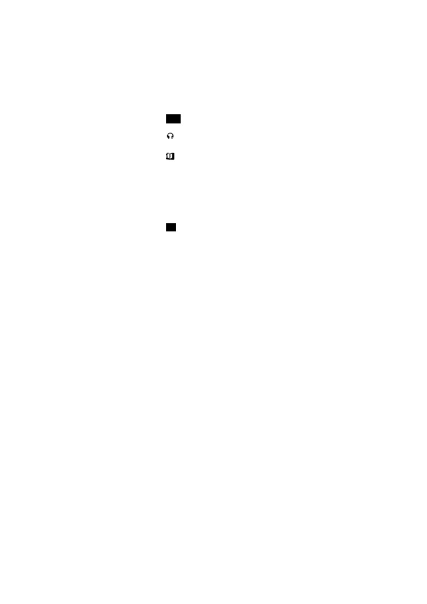
122 FLUENT ENGLISH
10. Wow! What an election! Nobody expected this to happen, but the underdog
candidate really __________ and won by a very large margin.
12H LISTEN UP!
Turn on your recording and listen to a short article about Habitat for Humanity and a famous
ex-presidential couple. Then answer the following questions.
1.
Are Jimmy and Rosalynn Carter the founders of Habitat for Humanity?
2.
Were the Fullers a poor couple in need of housing?
3.
Have the Carters themselves helped build homes for the needy?
4.
Does Habitat for Humanity simply hand out money for homes?
5.
Does Habitat for Humanity work only in the United States?
12I WHY DO THEY DO THAT?
Religion in the U.S.
While people of most wealthy countries place less importance on religion, many
Americans view religion as an important—or central—part of their lives, in fact, the
United States is the only wealthy, developed country whose people say that religion is
significant to them. Six out of ten Americans say that religion is very important in their
lives. This is four times greater than the people of Europe and twice that of the people
of Canada. The U.S. is more similar to a poorer nation in religious devotion than to
other wealthy, developed nations, and despite an ostensible separation of church and
state, religion is often very closely tied to politics in the United States.
Why is religion so important in the U.S.? It could stem from the reason some of the first
colonists came to this country. The pilgrims, for example, came to the New World to
escape religious persecution. They wanted the freedom to worship as they chose and
not as the monarchies of Europe told them to. The freedoms they enjoyed in the New
World drew other religious groups, first in the form of Christian sects from Europe and
then later as people of every faith from every corner of the world. Freedom of religion
was written into the American Constitution, and a thirst for this religious freedom was
just one of the engines that drove immigration into the United States, making it a very
powerful aspect of the culture of this country. Religion has, predictably, continued to
occupy an important position in American life.
But religion, like so much else in the United States, is a very diverse issue. Even though
certain religious groups are outspoken and very actively involved in public and political
life, no one religious group can claim to speak for a majority of Americans. According to
the American Religious Identity Survey*, conducted in 2001 by sociologists from the
Graduate School of the City University of New York, over 75 percent of Americans
identify themselves as Christian, but this identity ranges from Episcopalians to
Methodists to Roman Catholics to Mormons to Evangelicals. Nearly
Lesson 12: She'll Win by a Landslide!
123
1.5 percent of the population is Jewish, and Muslims, Hindus, Buddhists, Unitarian-
Universalists, and other groups each account for less than 1 percent of Americans. Over
13 percent of the population identifies itself as non-religious or sectarian, and the numbers
of followers of Sikhism, Baha'i,Taoism, and Native American beliefs continue to rise.
Naturally, how Americans practice their many religions—if they have one at all—varies
greatly as well, both from region to region and from person to person. lt is perhaps safest to
treat religion, then, as a personal matter when dealing with an individual American,
because even though statistics show that it is probably important in that person's life, it's
very hard to predict exactly what religion means to him or her.
Lesson 12: Answer Key
Practice Exercise 1
1. must be burning, 2. may/might/could be giving, 3. must not be working, 4. should be
studying, 5. could/may/might be getting, 6. must be voting, 7. should be cleaning, 8- must be
kidding, 9. should be reading, 10. must be visiting
Practice Exercise 2
1. Would ...rather go, 2. would rather vote... than, 3. would rather take... than, 4. would
rather not go, 5. would rather have become... than, 6. would rather not have been, 7. would rather
have gotten ... than, 8. would rather be sleeping, 9. would rather be giving... answering, 10.
would rather be feeling
Practice Exercise 3
1. could/was able to say, 2. could/was able to speak, 3. couldn't/wasn't able to go, 4. could/was
able to get, 5. could/was able to watch, 6. could/was able to pass, 7. could/was able to climb, 8.
could n't/was n't able to take, 9. couldn't/wasn't able to beat, 10. could/was able to win
Review Exercise 1
1. c, 2. h, 3. e, 4. j, 5. g, 6.l, 7 a, 8. i, 9. d, 10. b, 11. n, 12. k, 13. f, 14. m
Review Exercise 2
1. must be starting, 2. could/may/might be pulling, 3. should not be talking, 4. should be
getting, 5. might/may/could be announcing, 6. should be campaigning, 7. should not be
discussing, 8. must be running
Review Exercise 3
1. would rather have, 2. Would ... rather read, 3. would rather live ...than, 4. would rather have
listened ...seen, 5. would rather not have had, 6. would rather be going. ..than .. staying, 7.
Would... rather betaking, 8. would rather be working
Review Exercise 4
1. could/was able to gain, 2. could/were able to read, 3. could/were able to decide, 4.
couldn't/weren't able to believe, 5. could/were able to get, 6. couldn't/weren't able to sleep, 7.
couldn't/wasn't able to list, 8. could/was able to feel
Review Exercise 5
1. lucked out, 2. ran away with, 3. stick with, 4. bringing down, 5. turn ...around, 6. stands up
for,7 trail behind, 8. catch up, 9. take off, 10. cleaned up
Listen Up!
1. No. Millard and Linda Fuller founded the organization. 2. No, they were wealthy. 3. Yes. 4. No,
it is a partnership between new homeowners and volunteers. 5. No.
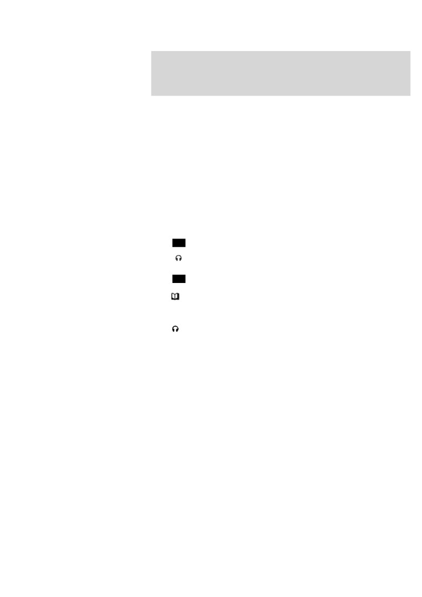
Lesson 13
Pride of Ownership
ARE YOU READY FOR THE LESSON?
Are you interested in buying a house? Lesson 13: Pride of Ownership is packed with
information about buying a home, along with important vocabulary words related to real
estate. You will also learn:
• Past Forms of should and shouldn't
• Be supposed to and be to
• Making Suggestions with could
• Phrasal Verbs for Buying and Selling a House
You'll learn a few real estate idioms in Real English, and then you'll read about the
American dream of home ownership and why it's so important to own a home in the U.S.
But right now let's take a look at some reductions for could and should.
13A SAY IT CLEARLY!
Turn on your recording to practice more reductions in natural, conversational English.
13B ENGLISH AT WORK
Dialogue: Who Needs Buyer's Remorse?
Kareen has been looking at houses for several months. She's found a house she wants to
buy, but she's feeling pretty nervous about making such a big financial commitment.
Listen in as she speaks to Nancy, her real estate agent, on the phone.
Kareen
Hello?
Nancy
Hi, Kareen! Nancy Plumber.
Kareen
Hi, Nancy. What's the good word?
Nancy
Well, I talked to the agent for Carlton Street, and I think we can get
them to come down on their price. Their appraisal didn't come in as
high as they thought it would.
Kareen
Nancy, I don't know. I mean, it's so much money... How much do you think
we could get it for?
Nancy
I think we can get them to come down by about $25,000, maybe.
Kareen
Really? But that's still so much money. I just don't know if I'm really
ready for this. It needs some work, and I can't afford to pay for a big
mortgage and then pay to have some work done on it, too.
Nancy
Why don't we see what kind of a loan we can get? We could either put
zero down or make a down payment of 5 percent, and then you could use
your cash to fix it up. There are all kinds of ways you can get money to fix
up a place without paying a whole lot out.
Kareen
But then I'd have to pay P. M. I., wouldn't I?
Lesson 13: Pride of Ownership
125
Nancy That's true, but in today's market your equity will grow really fast. In a
year or two when it's worth more you can refinance and get rid of the
P. M. I. payments.
Kareen But it's so much money. What if I can't make the payments? Then I'd
have to go into foreclosure and be back at zero again.
Nancy You're not going to go into foreclosure! I wouldn't be selling you
this house if I thought that you couldn't afford it. Look, I can go back
into my computer and check to see what other listings there are.
Maybe there's something in a price range you'll feel more
comfortable with.
Kareen No, we've already looked at everything out there. What if t
here are
problems? What if the plumbing's about to go or something?
Nancy The owners are required by law to provide a full disclosure before
escrow closes and you take possession. If there's something wrong,
they have to fix it. There are laws to protect you.
Kareen Well ...It is a really nice house... How much did you say you thought
we could get it for again?
13C BUILD YOUR VOCABULARY
Amortization. Payments with interest that gradually decrease the interest and
balance of a loan while the payment stays the same. Would you like a loan that
amortizes over 15 years or 30 years?
Appraisal. Property value determined by a lending institution such as a bank; largely
determined through comparison of similar properties in the same neighborhood. The
bank appraised the value of your house at $350,000.
Closing costs. Loan costs that are not included in the loan but must be paid in cash at
the time escrow closes. Your closing costs will be approximately $3500. You need to pay
these before taking possession of the property.
Disclosure. Information given by a seller revealing potential problems with a product that
is being sold. Every seller must provide complete disclosure to the buyer of property.
Down payment. A percentage of the full price paid in advance for the purchase of a
product. If you have a good stable income you can buy a new house with a small down
payment.
Escrow. A place for property to be held in trust, such as when it is being transferred to a
new owner. A renter's security deposit will be held in escrow until the termination of the
lease agreement.
Equity. The dollar value above the amount owed for property; the difference between
what something is worth and the amount a person still owes for it. Paying a mortgage is
called "building equity" because the payments bring down the total amount owed.
Equity Line. A loan based upon a percentage of the value of one's home. The money
can be used at will by the borrower but must be paid back to the lender with interest.
Many homeowners take out an equity line so that they can repair problems or do
remodeling in their homes.
126 FLUENT ENGLISH
Foreclosure. The right of a bank or lien holder of a mortgage to take possession of a
property when the property owner is several months behind on his or her payments on
the loan. Be careful! If you don't pay your mortgage for several months. your home
may go into foreclosure.
HUD. Housing and Urban Development, a department within the U.S. government that
has the purchasing of property under its jurisdiction. HUD has just changed the down-
payment policy for first-time buyers.
Lien. A legal financial claim against a property that must be paid when property is
sold. Be sure you tell your realtor and your lender if you have a lien on your property.
They will know what to do about it.
Listing. A property that is put on sale and included in a list of other properties that are
for sale. / took a listing from the Jones family at 3234 Bridge Street yesterday. Can you
add it to the other listings?
Mortgage. A legal document where property is given as security for repayment of a
loan. When you figure your monthly expenses. your mortgage is probably your biggest
expense.
P. M. I. Private mortgage insurance. Additional insurance usually paid on the purchase
of a house when the down payment is below 20 percent. If you put at least 20 percent
down on the property. your mortgage payments will be lower because you won't have to
pay P. M. I.
Points. Extra money that can be paid to keep the interest rate lower when the loan is
made. A point is one percent of the amount of mortgage. / can give you a 5.2 percent
loan, but you'll have to pay points. If you don't want to pay any points, your rate will be
higher.
Principal. The amount owed on a property excluding taxes, interest, and insurance.
Wow! You've brought your principal down quickly by paying an extra $100 a month.
Refinance. To pay off an existing loan and take out another loan on the same property.
This is usually done to lower the payment or to take out additional money from the loan.
If you purchased your house at a rate of 7.2s percent, now's a good time to refinance
since rates are below 6 percent.
Title. A legal document that proves a person's ownership of a property. Once escrow
closes,you'll take title to the property.
13D ENGLISH UNDER THE HOOD
TOPIC 1: Past Forms of should and shouldn't
The past form of should is should have + past participle. This is generally used to
express regret about something in the past, or the wish that something had been done
differently. To form the negative, use not after should.
You should have bought a house last year. The market was better for buyers.
We shouldn't have chosen that real estate agency!
Lesson 13: Pride of Ownership
127
PRACTICE EXERCISE 1: Fill in the blanks with either the positive or negative form of
should have + past participle.
1. You (turn) ________ a few miles back; I think we've come too far.
2. You (not keep) _________ news of your marriage a secret for so long!
3.
(not tell) _________ you _________ your doctor that you're planning on
getting pregnant?
4. You (go) _________ to the beach with us yesterday.
5.
(stay)__________ you _________ out so late on a Tuesday night?
6. I (buy) _________ an apartment rather than rented so I could build equity.
7. The realtor (be) _________ here by now.
8. Kenny (get) __________paid last Friday, but he never got his check.
9. I lost the entire file! I (save) _________ it!
10. You were in Los Angeles last weekend? You (call) __________ me!
TOPIC 2: Be supposed to and be to
Be supposed to + base form of the verb expresses an obligation or an expectation, but this
construction leaves doubt whether this will happen or not.
The students are supposed to arrive on time, but they often come late.
We're supposed to have a meeting at 3.00 today, but Jack's not here yet.
The construction be to also expresses expectation and obligation, but it is stronger than
supposed to and implies rules or regulations. It is mostly used in written documents. It can
be used in speech, but it implies a certain degree of authority.
Employees are to report to the security office for new ID cards.
All food and beverages are to be left outside the library.
PRACTICE EXERCISE 2: Fill in the blanks with either be supposed to or be to.
1. Who (walk) __________the dog tonight?
2. What time (be) __________ you _________ at the meeting in the morning?
3. All employees (meet) __________with the manager before the end of the month.
4. What time (return) __________ your parents __________ from the party?
5. The doctor said I (stay)__________ home in bed for a few days.
6. We (not dress) _________ casually for the big event tonight.
7. Someone (come) _________ from the bank today to appraise the house.
8. It (rain) _________ all day tomorrow.
9. You (not walk) _________ home alone so late at night, young lady!
0. The boss said we (expect) _________ more layoffs by the end of the month.
TOPIC 3: Making Suggestions with could
Use could + base form of the verb to make a future suggestion.
We could go to a movie tonight.
128 FLUENT ENGLISH
Use could have + past participle to make a suggestion about the past.
We could have met you at the theater if you had to work late.
PRACTICE EXERCISE 3: Fill in the blanks with the correct form of could to
make suggestions.
1. We (go) _________ to that new Mexican restaurant tonight.
2. We (watch) _________ the game together on my big-screen TV.
3. There are a lot of things we (do)__________ when we visited Chicago.
4. You (study) _________ photography at an arts school after you graduate.
5. You (take) _________ your house off the market and later sell it for more.
6. We (go) _________ to the opera last night.
7. We (take) _________ the train instead of a bus yesterday.
8. You (call) _________ my realtor if you're not happy with yours.
9. We (drive) _________ on the back roads to avoid the traffic.
10. You (stay) __________ here last night instead of in a hotel.
13E PHRASAL VERBS FOR BUYING AND SELLING A HOUSE
Back out.
To retreat from something you are involved in; to exit. When Jack heard how much
money was involved, he backed out of the investment.
Clean up.
To clean, to organize an area. If you're going to bake cookies, please clean up after
you're finished.
Clean out.
To completely clean a space, to clear a space of clutter or garbage. I found your old
yearbook when I was cleaning out the basement this morning!
Come across.
a) To find something by accident. When I was looking for my insurance statement I came
across some old love letters from you.
b) To make an impression on others. If you want to come across as a good candidate for
this job, you need to dress and act the part.
Do without.
To manage or perform adequately without something. /'// have to do without a car for a
few months until I can save enough money to buy one.
Fix up.
To repair, to make nicer or more attractive. We fixed up our new condo when we bought
it, and now it looks great.
Get stuck with.
To be left with something or someone unwanted. To acquire something that is too
expensive. Since I got my divorce, my house has been too expensive for me, and I got
stuck with the payments.
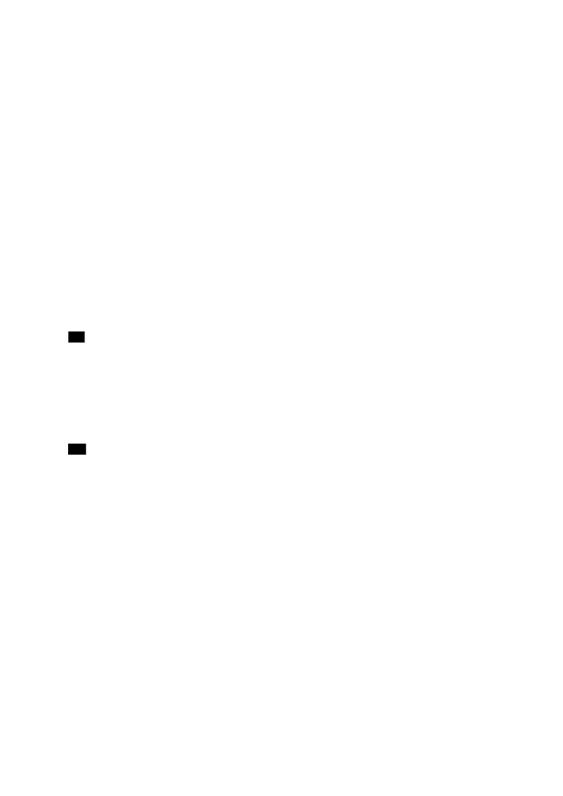
Lesson 13: Pride of Ownership
129
Make room for.
To add or create additional space for something. We're going to remodel the house to
make room for the new baby.
Move in.
To start to live in a new house. A nice young couple moved in next door.
Put down.
To pay money as a down payment. They put $15,000 down on their new house.
Take advantage of.
a) To accept or profit from something that would not ordinarily be available. / took
advantage of the city's special anti-pollution offer for a discounted electric lawn mower.
b) To manipulate or use someone in an unfair way. Todd took advantage of Betsy's
innocent nature when he asked her for that money.
Want out of.
Desire an end to some obligation. I've decided I can't afford to buy a new house right
now, so I want out of the deal.
Work out.
To resolve a complicated problem. / think we can work out a way for you to buy this
property without putting a lot of money into a down payment.
13F REAL ENGLISH
Real Estate
Come to Casa Especial Realty, your neighborhood specialists. No matter what your
tastes and budget may be, for pride of ownership we've got the place for you. Here's a
great little fixer-upper with curb appeal. It's a 2 on 1 so live in one and rent the other. Let
the helper unit pay your mortgage. If you've got the time and energy to fix something up,
this one's a steal. It just needs a little upgrading to make \t home sweet home. So give us
a call for more details. Or stop by our open house on Tuesday, the 11th.
13G BRING IT ALL TOGETHER
REVIEW EXERCISE 1: Vocabulary
Match each of the following words to the definition or descriptions given below.
a. amortization; b. appraisal; c. closing costs; d. disclosure; e. down payment; f escrow; g.
equity; h. equity line; i. foreclosure; j. HUD; k. lien; I. listing; m. points; n. principal; 0.
mortgage; p. P. M. /.; q. refinance; r. title
Put the letter of the word that is defined on the line next to its definition.
1.
___________ The expenses paid for at the end of an escrow.
2. ____________ Legal action taken by the bank if you do not pay your mortgage for
several months.
3. ____________ Your loan gets paid down little by little.
130 FLUENT ENGLISH
4.
______ The amount of cash brought in at the beginning of a property purchase
5. _________ Payment to the lender that keeps the interest rate down.
6.
________ A legal document that proves property ownership.
7. _________ To take out a loan after the property has been purchased.
8. _________ Property is held in trust during its sale.
9. _________ The bank determines the value of a property.
10. _________ A property that is for sale grouped together with others.
11. _________ Problems described in a legal document by the seller to the buyer.
12. _________ A government agency that is responsible for home ownership.
13. _________ The value of the property above the amount of money owed on it.
14. _________ The balance of the loan not including interest.
15. _________ A legal document showing that money is owed on a property.
16. _________ A bank loans money on a percentage of the property's equity.
17.
________ Insurance on property when the buyer pays less than 20 percent as a
down payment.
18. . ________ A financial legal claim on a property that the property owner owes.
REVIEW EXERCISE 2: Past Forms of should and shouldn't
Complete each sentence with the correct past form of should plus the verb given in
parentheses.
1. We (get) __________ together when you were in town last month.
2. You (be) _________ with me when I was looking for your new dress.
3. You (not leave) _________ before speaking with the realtor.
4. What do you think I (do) __________ when they offered me so little for the condo?
5. You and your wife (visit) __________Uncle Will while you were in town.
6. We (not accept)__________ their offer without talking with our lawyer.
7. We (not move) _________ to this city without getting to know the school district
8. I (ask) __________the inspector about the water damage on the first floor.
REVIEW EXERCISE 3: Be supposed to and be to
Complete the following sentences with the correct form of be supposed to or be to
with the verb given in parentheses. Be careful of the tense.
1. I (finish) __________reading this book tonight.
2. All visitors (sign) _________ in at the security desk.
3. The appraiser (see) _________ the house yesterday.
4. The doctor said that I (not eat) __________ anything at all before the tests.
5. When (go) _________ you _________ to Mexico?
6. John (return) __________by nine tonight.
7. Children, you (not play) __________ ball in the house!
8. The defendant (be taken) __________into custody immediately.
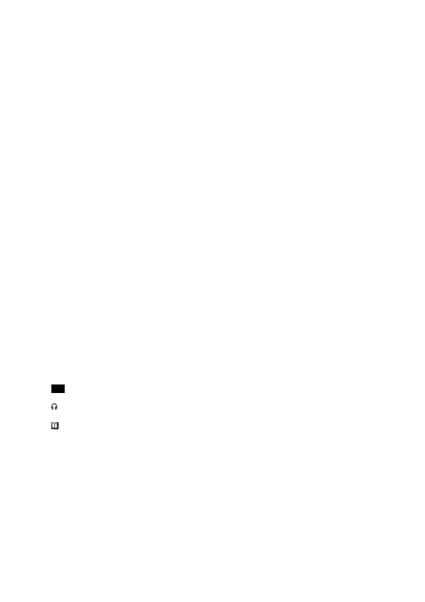
Lesson
13: Pride of Ownership
131
REVIEW EXERCISE
4: Making Suggestions with could
1. If you
don't want to move, we (take)
_________ the house off the
market.
2.
We (walk) _________ to the church.
lt was only a few blocks.
3.
You (clean) _________ the kitchen before the guests arrived.
4.
We (take)__________my car to the
mountains. It has a full gas tank.
5.
We (deliver)______ the flowers before we go out of town.
6.
I (pick
up) _________ you _________ at your house and take you
to work
if necessary.
7.
I've already seen that movie, but I (see) __________it again.
8.
We (take)__________ a picture of the property and
post it online.
REVIEW EXERCISE
5: Phrasal Verbs for Buying and Selling a House
Fill in
each sentence
with one of the
following:
back out, clean up, clean out, came across, do without, fix up, get stuck with, make room for,
move
in, take advantage of, want out, work out
1.
Look
what I _________ when I was
going through some old family
photos.
2.
This
would be such a
cute place to
_________ if we could afford it
3.
Jack says he _________ of the big real estate deal he's involved with.
4.
I don't want to__________ the bill, so if you want it
you'll have to pay for it.
5.
Our backyard looks
great now that we've __________ it _________ .
6.
The marriage counselor said that they could __________ their problems and have a
better
marriage.
7.
You'll
just have to __________a nicer kitchen until
we can afford to
remodel it.
8.
Once
you have signed the contract
you have three
business days
to__________
if you
change your mind.
9.
You'll
have to hurry if you want to __________ this
great opportunity!
10.
The Clarksons moved a lot out of their attic to
__________ a new
home office
up there.
11.
We need to _________ the garage
and get rid of all the junk.
12.
It looks like a new family is _________ to that old house down the
street.
13H LISTEN UP!
Turn on your recording and listen to
the article on a
homeowner's nightmare:
termites. Then come
back and answer the following
questions.
1.
What insects are termites similar to?
2.
Is a termite inspection usually required
when selling a home?
3.
What is swarming?
4.
When do swarms usually happen?
132 FLUENT ENGLISH
5. What other clues are there that a house is infested with termites?
6. What are the two ways termites can be controlled?
7. Do these solutions last forever?
13I WHY DO THEY DO THAT?
The American Dream of Home Ownership
Everyone knows that a big part of the American dream is to own one's own home. What
a lot of people don't realize is the role home ownership has played in the nation's
sovereignty, and how important this concept is to American history. In the England of
200 years ago, property ownership was passed from the father to the eldest son. Even if
a landholder wanted to share his property with all of his sons, by law he was not
permitted to split his property among more than one heir. This drove many of the early
colonists to the New World because they could not inherit property. Property ownership
therefore was a very important issue to many early European-Americans, and it became
a critical factor in the decision to seek independence from England. Landowners wanted
to protect their right to own land, because land ownership meant power. It was these
same landowners who decided how the American government should be formed. So
naturally the issue of land ownership was written into the laws of this country, and at
first, only landowners were allowed to vote. But the concept of land ownership began to
evolve, and such important historical figures as Thomas Jefferson believed land
ownership to be the right of every American. Over time the government began to
encourage all Americans to own their own homes.
Even the definition of home ownership has changed over time. Today in the U.S., home
ownership means not just owning a house, but also owning the land the house is built
on as well as, in most cases, a piece of surrounding land. This gives homeowners the
right to make most of the decisions about the use of that land. So home ownership in
the U.S. is such a big part of the American dream because with it comes the freedom to
own a small piece of one's country.
Lesson 13: Answer Key
Practice Exerciser
1. should have turned, 2. shouldn't have kept, 3. Shouldn't ...have told, 4. should have gone,
5. Should... have stayed, 6. should have bought, 7. should have been, 8. should have gotten, 9.
should have saved, 10. should have called
Practice Exercise 2
1. is supposed to walk, 2. are... supposed to be, 3. are to meet, 4. are... supposed to return,
5. am/was supposed to stay/am/was to stay, 6. are not supposed to dress, 7. is supposed to
come, 8. is supposed to rain, 9. are not to walk, 10. are to expect
Practice Exercise 3
1. could go, 2. could watch, 3. could have done, 4. could study, 5. could take, 6. could have gone,
7. could have taken, 8. could call, 9. could drive, 10. could have stayed
Review Exercise 1
1. c, 2. i, 3. a, 4. e, 5. m, 6. r, 7. q, 8. f, 9. b, 10. l,11. d, 12. j, 13. g, 14. n, 15.o, 16. h, 17. p, 18. k
Review Exercise 2
1. should have gotten, 2. should have been, 3. shouldn't have left, 4. should have done, 5. should
have visited, 6. shouldn't have accepted, 7. shouldn't have moved, 8. should have asked
Review Exercise 3
1. am supposed to finish, 2. are to sign, 3. was supposed to see, 4. was not to eat, 5. are...
supposed to go, 6. is supposed to return, 7. are not to play, 8. is to be taken
Review Exercise 4
1. could take, 2. could have walked, 3. could have cleaned, 4. could take, 5. could deliver, 6. could
pick... up, 7. could see, 8. could take
Lesson 13: Pride of Ownership
133
Review Exercise 5
1. came across, 2. fix up, 3. wants out, 4. get stuck with, 5. cleaned... up, 6. work out, 7. do
without, 8. back out, 9. take advantage of, 10. make room for 11. clean out, 12. moving in
Listen Up!
1. Ants. 2. Yes. 3. When termites come out into a house and fly around. 4. In the spring. 5. Small
tunnels in wood that termites have eaten, mud tubes leading from a home into the ground.
6. Insecticides (termiticides) or baits. 7. No, only a few years.
Lesson 14
Hit the Books!
ARE YOU READY FOR THE LESSON?
If you are interested in learning about American schools, then Lesson 14: Hit the Books!
will give you a lot of important information. You'll listen in on a conversation between a
parent and a teacher, and you'll learn more about American teachers in Why Do They
Do That? You will learn some vocabulary useful for understanding the American
educational system as well. In addition, you will learn:
• Verbs Followed by Infinitives
• Adjectives Followed by Infinitives and It Plus Infinitive
• Verbs Followed by Nouns or Pronouns Plus Infinitives
• Phrasal Verbs for School
But there's more. You'll also learn some good idioms about studying and test taking. So
let's get started with some reductions in Say It Clearly!
14A SAY IT CLEARLY!
Turn on your recording to practice some common reductions that will make your
English sound more natural.
14B ENGLISH AT WORK
DIALOGUE: He's Always Been a Good Student!
Mrs. Beck is meeting with her son's teacher, Ms. Rendon. Her son is usually a good
student, but his grades have been slipping in English class and she's a little worried
about him.
Mrs. Beck
Hello, Ms. Rendon, I'm Laura Beck, James'mother. How are you?
Ms. Rendon
Mrs. Beck, so nice to meet you. Yes, have a seat. I've just been reviewing
James' work. Let's see.
Mrs. Beck
Yes, James has always been such a good student. I don't know what's
happened to him.
Ms. Rendon Honestly, a lot of kids' grades go down around their sophomore or
junior year, especially boys.
Mrs. Beck
I don't know whether to be comforted by that or not, but high school is
when his G. P. A. is the most important. He wants to go to a university,
but if he keeps getting grades like this he'll have to go to a junior
college first.
Ms. Rendon Well, sometimes kids need a little time to mature before going to a
university. Maybe a J. C. isn't such a bad thing for some kids.
Mrs. Beck
His father and I both went straight to universities; we expect James to
do the same.
Lesson 14: Hit the Books!
135
Ms.
Rendon OK, well, he hasn't been doing his homework. That's one problem. I
don't have many entries for homework assignments, and the
homework prepares the kids for
the exams. His
exam scores are a
little lower than they used to be.
His lower grade
this semester is a
consequence of not turning in his homework and not scoring well on
tests. He hasn't done much participating in classroom discussions
either. He probably isn't reading his assignments or maybe he just
doesn't understand what he's reading. I've asked
him about it, but he
just shrugs his shoulders, so I'm
not sure what the problem is.
Sometimes it's not the class or the material. Sometimes it's not
the
subject that causes a student to lose interest or
not do well in
class.
Mrs. Beck
Everything's fine
at home. We have a very close
family, so I don't
think it has anything to do with
his home life.
Ms.Rendon Have you spoken
to his counselor?
Mrs. Beck
No
Ms.
Rendon
Well, have you asked James why
he's not doingwell in class?
Mrs. Beck
I've tried, but he just gives me a vague response. I can't get anything
out of him.
Ms.
Rendon If he won't tell me
and he won't
tell you, then you might want
to talk
to
his counselor.
Mrs. Beck
OK, I think I'll do
that. I'm also going to talk to him about his
assignments. Do
you have a syllabus with the assignments?
Ms.
Rendon Yes, I'll get you one. Remember that he may have some issues
going
on
in his life that
you may not know about. Kids at this age really
start keeping their problems to themselves. Other than his grades
going down, he's
a good kid. I'm
sure this is just a passing concern.
Mrs. Beck
OK, Ms. Rendon,
I appreciate all your help.
Ms.
Rendon
No
problem. Take
care.
14C BUILD YOUR
VOCABULARY
BA. Bachelor of Arts. A four-year degree in the arts
or humanities.
It took Rob five and a
half years to complete his BA because he was working full time while in school.
(Course) Catalog. A
book listing courses available
at a school during a particular
semester. Let's look
in the catalog to find the art history class we want to take.
Course. A specific class. Sam normally takes five
or six courses a
semester.
Credit. A unit of value that each course is worth.
Degrees require a certain number of
credits overall. My French class is
worth three credits, but my biology class is
worth
four because there's
a lab session each week.
Curriculum. Program of courses
offered by a
school. Maisie Brown had
been
designing the school
curriculum since she became
the school's director.
Dean. The head administrator of a section of a school or university. The dean called a
staff
meeting to see
if there was a better way to organize the program schedule.
Degree. A title conferred by a university that denotes that a course
of study has been
completed, such as
BA, MA, or PhD. Once I got my
BA, I decided
to get a job and work
for a while before going back to school for any other degrees.
136 FLUENT ENGLISH
Dissertation. A long and exhaustive written study of a particular subject that is part of a
doctoral program. Rimouna is writing her dissertation on Arab women writers in
translation.
Doctorate. PhD, the highest degree conferred by a university. It took Jason six years to
complete his doctorate in linguistics.
Enroll. To enter a school with the intent of studying there; to sign up for a school
program or course. There are thirty students enrolled in one class and twelve enrolled in
another.
Exam. Short for "examination." A formal method for determining progress, knowledge,
or ability in a subject or course. Your grade in this course will be determined by a
combination of your midterm exam, final exam, and term paper scores.
Freshman. A first-year student at a high school or college. There are many
organizations to help freshmen make the transition to living away from home.
Immunization record. A record of shots or immunizations needed before a student can
be registered for school. Nara had to take her children to the public health center,
because they needed to get a few more shots for their immunization records.
Junior. A third-year student at a high school or college. By the time Paul was a junior in
high school he'd already decided exactly where he wanted to go to college.
MA. Master of Arts, Masters. A postgraduate degree that involves a specific series of
courses in the arts and usually a thesis involving research or a creative projects A lot of
people wait until they've worked for a while before they go back to school to get an MA.
Major. The primary study emphasis of a college student. Don't worry too much if
you're not sure of your major during your first year at school; just take classes that
interest you.
PhD. The highest degree that can be attained through a university education. Polly
knew she would have to dedicate the next eight years of her life to work on a PhD.
Principal. The head of an elementary or secondary school. The teacher sent Robert to
the principal because he was disruptive in class.
P.T. A. Parent Teacher Association; an organization that enables parents and teachers
of elementary and high-school students to work together to make their schools better.
As P.T. A. president, Millie Brown organized parents to help paint the school for the new
school year.
Recess. A break from school; a break from studying. What will you be doing during the
spring recess?
Register. To fill out forms to attend a class; to formally enroll. Kam needed some help in
filling out all the forms when she registered for class.
Semester. One half of a school year, usually about eighteen weeks, tuba decided to go
back to school just before spring semester began.
Seminar. An advanced or graduate group studying under an instructor where students
share their independent research through reports and discussion. Professor Haggart
leads interesting philosophy seminars.
Lesson 14: Hit the Books!
137
Senior. A fourth-year student at a high school or college. Many high schools have a
tradition that most seniors skip school on a particular day and go to the beach or a lake.
Sophomore. A second-year high-school or college student Just because he's a
sophomore, Rick thinks he's got everything figured out.
Standards. The model established by an authority of what should be covered in a course
of study. Look to the state education department to find the standards you need to fulfill
when you plan your lessons.
Standardized testing. A program of testing set up by the state or national government
that tests students' knowledge of subjects. This type of testing compares students and is
often used in admissions to colleges and graduate schools. In order to get into a
university, you must take some sort of standardized test like the A. C. T. or 5. A. T.
Term paper. A major written paper for a course in high school or college. Jack got an A on
his term paper for his U.S. history class.
14D ENGLISH UNDER THE HOOD
You've seen many examples of infinitives in this course already. An infinitive is the basic
form of a verb preceded by the preposition to, as in to dance, to sing, to see or to study.
The infinitive has many different uses. It can function as the subject of the sentence:
To listen to beautiful music is a pleasure.
To work hard and stay in school should be your goal.
An infinitive can also function as a direct object:
We prefer to watch a movie on Friday nights.
Jason yearns to see his girlfriend again.
An infinitive of purpose explains why something is done. It can be a simple infinitive or an
entire phrase:
/ am going to the library to study.
They went to the store to buy a new computer.
In this section we're going to take a closer look at three of the more important uses of
infinitives.
TOPIC 1: Verbs Followed by Infinitives
Many verbs in English are followed by infinitives:
/ want to go to the movies tonight.
The children forgot to do their homework assignments.
There isn't an easy rule to explain which verbs are followed by infinitives. They just have to
be memorized and practiced. Here is a list of some of the more common ones:
afford, agree, appear, ask, begin, claim, consent, continue, decide, demand, deserve,
138 FLUENT ENGLISH
expect Jail, forget, hate, hope, learn, like, love, manage, need, offer, plan, prefer, prepare,
pretend, promise, refuse, seem, can't stand, start, try, volunteer, wait, want, wish.
Cindy can't afford to buy a new car today.
We managed to make it to work on time despite the traffic.
Paul volunteered to help clean up the park.
PRACTICE EXERCISE 1: Fill in the blanks with the best verb from the following list.
play visit buy cry speak ride see be start go
1. We hope _________ a house some day.
2. Jay continues _________ his bicycle to work.
3. Mary intends __________ to college after she graduates.
4. You seem _________ a little tired.
5. Nancy likes _________ the violin.
6. I can't stand__________ you cry.
7. You will learn__________ English very well.
8. A few students continue __________ their teachers after graduating.
9. June expects __________her own business someday.
10. The girls started _________ when they realized they were lost.
TOPIC 2: Adjectives Followed by Infinitives and It Plus Infinitive
There are also a lot of adjectives in English that can be followed directly by
an infinitive.
I'm surprised to see you here!
Jason was lucky to find a new job so quickly.
As a general rule, adjectives that are followed by infinitives describe people's
emotions or feelings about something. Here's a list of the more common ones:
afraid, amazed, anxious, ashamed, astonished, careful, certain, delighted, determined,
disappointed, eager, glad, happy, hesitant, horrified, liable, likely, lucky, pleased, proud,
ready, relieved, reluctant, sad, shocked, sorry, surprised, upset, willing.
Hank was surprised to see his professor at the restaurant.
We were horrified to learn of the scandal at college.
Remember that the infinitive can also be used as a subject of a sentence, and often
these sentences will end with an adjective.
To jump into Niagara Falls is foolish!
To study hard is important.
These sentences can be restated so that the infinitives follow the adjectives. Just put it
is at the beginning, and then the adjective, and then the infinitive and the rest of the
sentence.
It is foolish to jump into Niagara Falls!
It is important to study hard.
Lesson 14: Hit the Books!
139
PRACTICE EXERCISE 2: Fill in each blank with the best verb from the
following list.
give, try, hear, learn, see, discover, know, help, be able, sleep
1.
The students were thrilled ____________ about animals by going to the zoo.
2.
I'm reluctant _____________you a passing grade because you haven't tried.
3.
Aren't you anxious ____________ what he looks like now, after all these years?
4.
The researchers were eager______________the cause of the genetic mutation.
5.
It is very pleasant _____________ late on a Saturday morning.
6.
Henry is proud _____________ to retire early.
7.
It is important for you _____________ a little harder.
8.
It is kind of you______________ me like this.
9.
I was happy ______________ the movie that everyone had been talking about.
10. It is upsetting ______________ that you called while I was away.
TOPIC 3: Verbs Followed by Nouns or Pronouns Plus Infinitives
Another important use of infinitives is with certain verbs that are also followed by a
noun or a pronoun.
Richard asked his friend to help him move.
He reminded me to mail my check.
As you can see, the formula is: subject+ verb +noun/pronoun + infinitive. Here is a list of
the most common verbs that can be followed by a noun or a pronoun and then an
infinitive:
advise, allow, ask, beg, cause, challenge, convince, dare, encourage, expect, forbid, force,
get, hire, implore, invite, need, order, permit, persuade, remind, require, teach, tell, urge,
want, warn, would like.
They hired a new assistant to help them organize the records.
How can I convince you to reconsider your decision?
The boys persuaded their parents to let them go to the party.
PRACTICE EXERCISE 3: Make logical sentences out of the following words. Always
start with the first word.
1.
I /you / advise/to transfer to a different class.
2.
Dan / to arm wrestle him / Ralph / challenged.
3.
Linda / to read her his short story / begged / Jorge.
4.
Doris / me / with her / invited / to go shopping.
5.
Will you / me/to accompany you / permit?
6.
I / the job / to do / you / hired.
7.
Gabby / the leader / to be / you / needs.
8.
Would you / to drive your car / like/ me?
9.
Jerry / him / some free time/ his mother / to give / convinced.
10.
The students / mercy / to have / the professor / begged.
140 FLUENT ENGLISH
14E PHRASAL VERBS FOR SCHOOL
Drop out.
To leave something before completion. Derrick dropped out of school when he
turned sixteen.
Fall behind.
To have a lot of work that is unfinished and late. Robert's schedule was so hectic that he
fell behind on his project and had to ask to have the deadline extended.
Figure out.
To solve a problem, to find an answer or solution. Ted and Jennifer worked together to
figure out the answers to their math homework.
Get through to.
a)
To communicate to someone so that he or she understands. If students don't enjoy a
subject, it can be difficult for a teacher to get through to them.
b)
To be able to make an emotional or personal connection to another person; to bond
with someone. Often the best people to get through to alcoholics are those who have
been alcoholics themselves.
c)
To connect with someone by telephone after difficulty. I finally got through to the
insurance company after waiting for ten minutes.
Look into.
To check carefully. We really need to look into the problem of so many students
dropping out of school.
Look over.
To examine quickly, to glance at. Could you look over my application to make sure I've
filled it in correctly?
Stay in.
To finish something you started, to remain. Derrick's girlfriend Alma decided not to drop
out of school like he did.
Stick it out.
To continue to do something that might be difficult. I'm not sure I can really handle
medical school, but I'm going to stick it out for a while anyway.
Read over.
To review quickly. Class, be sure you read over the material before the quiz tomorrow.
Turn on.
a)
To excite, stimulate. Mrs. Barrett really knew how to turn the kids on to reading.
b)
To start the power of an electrical product. You have to put batteries in this radio
before you can turn it on.
14F REAL ENGLISH
Life on Campus
Being a college student is hard work. I don't have a lot of time to kill when I
can just kick back and relax. 1 always have to hit the books. And finals week
begins on Monday,
Lesson 14: Hit the Books!
141
so I really have to stick to my books. If I goof off too much /'// miss the boat. So I'm going to
take my time to prepare for the tests. I'll learn as much as I can by heart. If I don't get it I
can't just guess off the top of my head. I'll go blank during the test! But once the test is
over, I'll be free for another week. That's when I'll crash.
14G BRING IT ALL TOGETHER
REVIEW EXERCISE 1: Vocabulary
Fill in the blanks with the following words.
(course) catalog; courses; curriculum; degree; dean; enrolled; exams; immunization
record; major; principal; P. T. A.; recess; register; semester; seminar; standards;
standardized tests; term paper
1. If you look at the _________ for the E. S. L program, you will find that along with
grammar, reading, writing, listening, and speaking, students need to understand daily life
in the United States as well.
2. Mrs. Carroll will retire after thirty years of distinguished service as the
___________of
Hamilton Middle School.
3. You need to take at least three English__________ before you graduate.
4. Did you check the _________ to see what day your class starts?
5. When you _________ for school, be sure you have your social security number,
address, and phone number.
6. If you are an independent type of student but you enjoy discussing what you learn, you
should sign up for a _____________ .
7. Are you taking your _________ now, or do you just have papers to write?
8. _________ Jameson gave a moving speech at the graduation ceremony.
9. Joe's father is wondering how useful a __________ in philosophy is.
10. An _________is required for every new student before classes begin.
11. Teachers often don't like to give _________ because they do not measure a
child's creativity.
12. This college is known for a _________ that emphasizes social sciences and fields
specific to life in large cities.
13. To be involved with your children's school, join the _________ .
14. You won't become a senior until your seventh __________ of high school.
15. Ms. Jones needed a class roster so she could see how many students were ________
in her class.
16. The children played volleyball during __________.
17. You are required to write a _________ if you want to pass this course.
18. Many students do not choose their __________ until their junior year of college.
REVIEW EXERCISE 2: Verbs Followed by Infinitives
Fill in the blanks with the correct form of the verb in parentheses.
1. He wants (get)
a new DVD plaver
142 FLUENT ENGLISH
2. Everyone was excited (meet) _________ the new senator.
3. Don't begin (watch) __________ the movie until I get back.
4. We prefer (sit) _________ next to the exit door.
5. We stopped (wait) __________ for you.
6. The video continued (roll) __________ even though class was over.
7. You need (start) __________ your test right now.
8. Do you plan (visit) __________ your mother over recess?
REVIEW EXERCISE 3: Adjectives Followed by Infinitives and It Plus Infinitive
Fill in the sentences with an appropriate verb. stay,
take, speak, have, learn, win, find, hear
1. ____________general math is part of a high-school curriculum.
2. ____________the bus is the best way to get there.
3.
It isn't easy ___________ another language well.
4.
It is helpful ____________a car in California.
5.
________ in Vermont for the weekend would be a great little vacation.
6.
I was shocked ___________ that your father had died.
7.
We were lucky ____________seats in such a crowded lecture hall.
8.
Is he certain ____________ the title?
REVIEW EXERCISE 4: Verbs Followed by Nouns or Pronouns Plus Infinitives
Fill in the sentences with a verb from the list.
write, take care of, plead, walk, give, roll over, set, prepare
1.
I dare you _____________across that log.
2.
Pat reminded me _____________ the alarm so we'd wake up early.
3.
Did you expect the boss _____________ you a promotion?
4.
The teacher warned her students _____________ for the test.
5.
Did you teach your dog _____________ ?
6.
The professor required his students _____________ a term paper.
7.
The lawyer advised his client ______________ guilty.
8.
The director hired a new employee ______________ the extra work.
REVIEW EXERCISE 5: Phrasal Verbs for School
Fill in the following blanks with the appropriate phrasal verb.
drop out of, fall behind, figure out, get through to, look into, look over, stay in, stick it out,
read over, turn on
1.
If you think you want to apply to a certain college, you'd better ________________ it first.
2.
It's usually very difficult for adults to ________________ teenagers, because they relate
better to younger people.
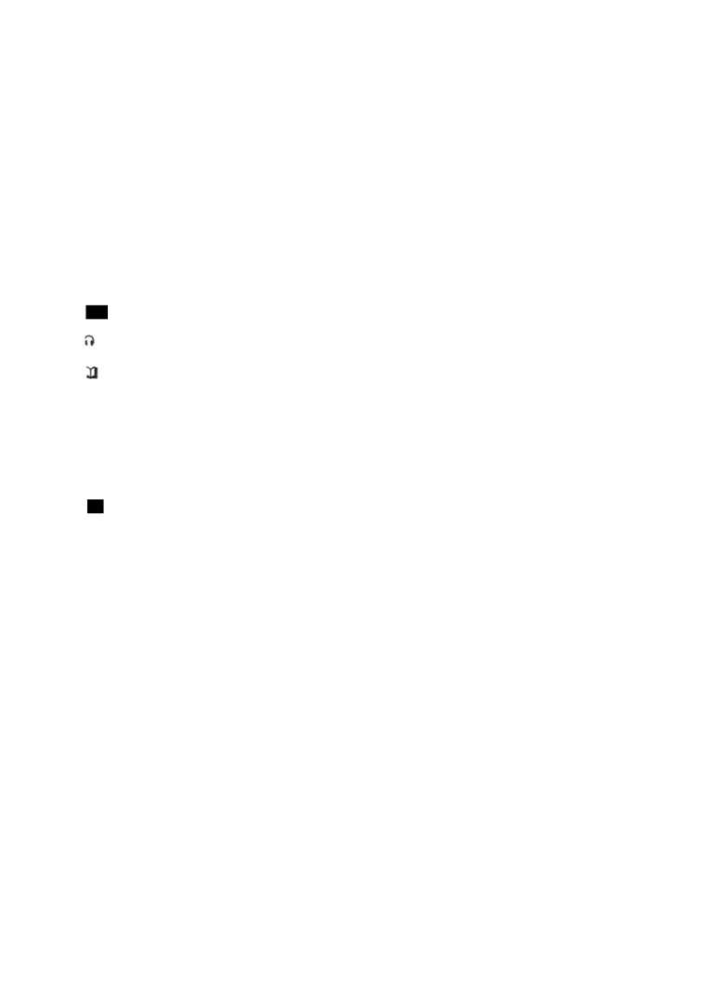
Lesson 14: Hit the Books!
143
3. College freshmen often get homesick if they go to school in a different city, but if they
________ they'll start to feel better
after a while.
4. Take
a few minutes to _________ your poem and then recite it to
your classmates.
5. Jeremy was out sick
for a month so
he _________
in his schoolwork.
6. If you
get a good job
offer, you may
want to __________school.
7. It takes a while to _________ what
you want to study in school.
8. I've decided to __________junior college for one more year, and then I'll transfer to
the university.
9. Mr. Jones really knew how to _________ students __________ to
science.
10. Jim, could you please
_________ my paper before I
turn it in?
14H LISTEN UP!
Listen
in as Scott registers by phone
for a Spanish class at Jackson
Junior College.
Then
answer the following
questions.
1. Did Scott successfully register for a
Spanish class?
2. What
campus did he
want?
3. On which campus did the computer
voice give him
a Spanish class?
4. What
did Scott ask for when he discovered the mistake?
5. Did the voice help him with his problem?
6. What
did the computer do at the end of the conversation?
14I WHY DO THEY
DO THAT?
American Teachers
Compared to teachers in many other countries, American teachers, like the rest of
American society, are rather informal. They usually
dress casually
when they teach. Male
teachers rarely wear
jackets and ties, and female teachers prefer not to wear suits
and
heels.
. Some teachers even wear jeans. Teaching involves a lot of
standing, bending, and
moving around, so they prefer to be
comfortable. And dress isn't the only casual area of
teaching. While in most countries students use a formal title when
addressing their
teachers, it is not always necessary
to do this in the
U.S.American
teachers in elementary
and secondary schools prefer to be
called by the titles "Mr.," "Mrs.," or "Ms.," with
their last
names. University professors sometimes like to be
called by the title "Professor" or even
"Doctor," but many others do not. In
universities and adult education, teachers often like to
be called by their first names, perhaps because many of their students may be older than
they are, or perhaps
because they feel that an informal atmosphere encourages learning
and free discussion of ideas.
Discussion is a key factor in American education. American students rarely sit quietly in
the classroom listening to the teacher lecture. They
are encouraged to ask questions at
any point. The teachers do not think
of themselves
as having all the answers, and they will
openly say so and offer to look for the answers they do not
144 FLUENT ENGLISH
have or challenge the students to find the answers. They want their students to debate
and disagree with them and their classmates openly, because this is considered
important for the development of critical and independent thinking. Teachers will often
bring up thought-provoking questions that the students are expected to discuss. In fact,
students' grades are often at least partially determined by their interaction in the
classroom. This should come as no surprise, as the U.S. is often thought of as a place
of competitive individualism and independent thinking. It's to be expected that the
American classroom should foster these values.
Lesson 14: Answer Key
Practice Exercise 1
1. to buy, 2. to ride, 3. to go, 4. to be, 5. to play, 6. to see, 7. to speak, 8. to visit, 9. to start, 10. to cry
Practice Exercise 2
1, to learn, 2. to give, 3. to know, 4. to discover, 5. to sleep, 6. to be able, 7. to try, 8. to help, 9. to
see, 10. to hear
Practice Exercise 3
1. I advise you to transfer to a different class. 2. Dan challenged Ralph to arm wrestle him.
3. Linda begged Jorge to read her his short story. 4. Doris invited me to go shopping with her.
5. Will you permit me to accompany you? 6. I hired you to do the job. 7, Cabby needs you to be
the leader. 8. Would you like me to drive your car? 9. Jerry convinced his mother to give him
some free time. 10. The students begged the professor to have mercy
Review Exercise 1
1. standards, 2. principal, 3. courses, 4. (course) catalog, 5. register, 6. seminar, 7. exams, 8. Dean,
9. degree, 10. immunization record, 11. standardized tests, 12. curriculum, 13. P.T. A., 14. semester,
15. enrolled, 16. recess, 17. term paper, 18. major
Review Exercise 2
1. to get, 2. to meet, 3. to watch, 4. to sit, 5. to wait, 6. to roll, 7. to start, 8. to visit
Review Exercise 3
1.To learn, 2.To take, 3. to speak, 4. to have, 5. To stay, 6. to hear, 7. to find, 8. to win
Review Exercise 4
1. to walk, 2. to set, 3. to give, 4. to prepare, 5. to roll over, 6. to write, 7. to plead, 8. to take care of
Review Exercise 5
1. look into, 2. get through to, 3. stick it out, 4. read over, 5. fell behind, 6. drop out of,7.figure
out, 8. stay in, 9. turn ... on, 10. look over
Listen Up!
1. No, he didn't. 2. The Jackson campus. 3. The Johnson campus. 4. To talk to a real person. 5. No,
it didn't. 6. It hungup.
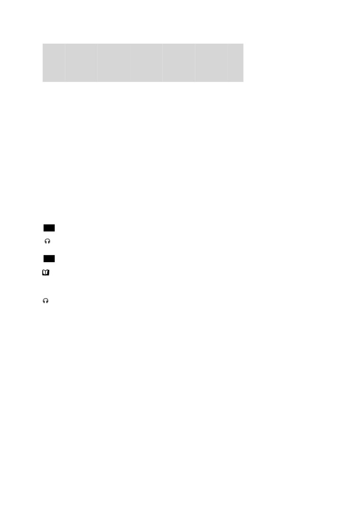
Lesson
15
Let's
Get Together Sometime!
ARE YOU READY FOR THE LESSON?
If you
enjoy meeting
new people and
getting together with your friends, you'll find
Lesson
15: Let's Get Together Sometime! helpful. In this lesson, you'll read
a dialogue about
meeting someone new, and you'll learn some vocabulary for fun things Americans
like to
do. The phrasal verbs and idioms in
this lesson have to do with relationships and
entertainment. And if
you were wondering about certain American social customs,
you
may find the answers
to your questions in Why Do They Do That?
You'll also learn
about:
• VerbsFollowed by Gerunds
• Verbs
Followed by Prepositions and
Gerunds
• Go Plus Gerunds
And in
Listen Up! you'll hear about one way that some Americans
meet new people, find
romance, and make friends. Let's begin as usual with a pronunciation segment in
Say It
Clearly!
15A SAY IT CLEARLY!
Turn on your recording to warm up
with a pronunciation segment
15B ENGLISH AT WORK
Dialogue: Who's That Over There?
Dale and Ted are
colleagues who are enjoying
a beer together after work at
a
local pub. They spot a woman they work with, and she's with a friend of hers who
they
don't know but
who really gets their attention
Dale
Man, I thought this week
would never end.
Ted
Yeah, here's to Fridays. Bottoms up.
Dale
Hey, Ted. Isn't that Tina from Accounting? In that booth
over there?
Ted
Where? Oh, yeah, it is. And who's that girl sitting with her?
Dale
Wow.
Ted
You know,
it's been a while since we've spoken to good
old Tina. Maybe
it's time we
said "hello" to
her.
Dale
Yeah, good
idea.
(They walk over.)
Dale
Tina!
Ted:
Hey, Tina!
Dale
We haven't
seen you for so long!
Tina
Urn, hi guys. What's going
on? You just
saw me this morning.
Dale
Oh, right, um ... Well, we mean outside the office.
146 FLUENT ENGLISH
Tina
OK. Hi ...Oh. Maggie, this is Ted and this is Dale. They work at Northern
with me.
Ted
Hi.
Dale
Hello, there.
Maggie
Hello. So, what do you guys do at Tina's company? You're in
Accounting, too? Ted No!
Dale
No way. IT.
Maggie
IX, huh? You're into computers?
Ted
Well, not like, enough to spend weekends at conventions or anything,
but, you know, enough to keep the engines of commerce well oiled.
Maggie
So, you go and fix problems when people call up with jammed printers
and things?
Tina
(laughs) They're actually pretty good at it, too. Dale Yeah, ahem ...So,
Maggie, how do you know Tina?
Maggie
Oh, we've known each other a long time. We grew up in the same town,
went to high school together...
Tina
Yeah, we're ancient friends. Ted So why are you visiting Tina? Maggie
Well, I'm,um ...
Dale
Hey, there's a street fair this weekend. You gonna be around tomorrow?
Do you wanna go with us?
Tina
Uh... Maggie Sure.
Dale
Great. And maybe some bowling afterwards? Do you like bowling?
Maggie
Bowling? It's all right.
Ted
I think she's more the adventurous type, or the rugged outdoors type. I
bet you like hiking and camping.
Maggie
Yeah, actually I do like hiking and camping, and I really like rock
climbing. Ted Rock climbing? Cool. What else do you do for fun?
Maggie
I like skydiving, too.
Dale
Do you like skiing?
Maggie
I love skiing, and surfing.
Dale
Wow! That's great!
Maggie
Hey, listen, would you guys excuse me for a minute? I'll be right back.
(After Maggie leaves)
Dale
Wow, she's great.
Ted
Bowling? You think you're gonna grab her attention with bowling?
Dale
Oh, listen to you."... more the adventurous type ... the rugged
outdoors..."
Tina
Okay, listen studs, I think you're both out of your league.
Ted
Oh yeah? Why?
Tina
Well, Maggie's visiting me so we can spend some time together before
her big day.
Dale
Big day?
Ted
She's not...
Tina
Yup. She's getting married in a few weeks.
Lesson
15: Let's Get Together Sometime!
147
Dale Oh...
Tina
Yeah. I think you two just
bowled a gutter ball.
15C BUILD YOUR
VOCABULARY
Bird-watching. Observing and identifying birds
in their natural
environment. Lola
and Jim have become avid bird watchers since they first spotted
a variety of blue
jays in their yard.
Book group. A group of people organized like a
club to read and
discuss books. Our
book group is meeting next Tuesday and I haven't even started
the book we have to
read!
Bowling. A game where a heavy ball is rolled down an alley to
knock down pins. A
"gutter ball" means that the ball rolled into a trench on either side of the alley and all
the pins were missed. Every Friday night the Smythes and the
MacWilliams get
together to go bowling.
Bungee jumping. A sport where
a person, attached to a strong
rubber cord, jumps
from a great height. Nathan goes
bungee jumping about twice a
year because
he
loves the feeling
of flying through
the air and then being snapped back up by the
bungee cord.
Camping. Temporarily living outdoors, usually in a tent without
any luxuries.
Ramon's favorite
type of vacation is camping in
the mountains
because he loves the
serenity of nature
Canoeing. Boating in a small narrow craft that is propelled by
paddling. One of
Jim's favorite hobbies is canoeing in Mission Bay.
Chat room. A "space" on the Internet where people can post and read opinions
about various topics, interests or
current beliefs. If you're a parent, you should
carefully monitor
the chat rooms
your child might visit.
Clubbing. Going
out to discos. When Ron was in
his twenties he
used to go clubbing
every Saturday night.
Dinner party. A
small party organized around a
dinner, where
a group of people is
invited to someone's house for dinner, drinks, and dessert. Steven is a great cook
with a wonderful
apartment, so guests to his dinner parties are
lucky!
Get-together. A
party, usually informal, sometimes for a certain purpose, but
often
simply social. We're having a small get-together
on Friday to watch the new
documentary that
Mark has just
finished filming.
Hiking. Taking a
long walk, often in the mountains or forest, for pleasure or
exercise. Victor goes hiking in the mountains or
the desert whenever he can.
Horseback riding. Riding a horse
for pleasure. The Jameson twins go horseback
riding in the country almost every
weekend.
Jogging. Running at a slow pace
for cardiovascular exercise. When John Kennedy
was President he
made jogging
popular in the United States.
Mingle. To mix and converse with various people in a social setting. It's Jessica's
party, so she is expected to mingle with all the guests.
148 FLUENT ENGLISH
Rock climbing. Climbing up high, steep rocks, often by pulling oneself by
the hands. Yosemite is a great place for rock climbing, but you need
experience.
Roller-blading. Moving on a pair of boots with a single row of wheels. The
Park family enjoys roller blading in the park near their house.
Sailing. Traveling in a boat powered by the wind pushing sails. Now that
Martha no longer gets seasick, she finds sailing to be a very calming
experience.
Skateboarding. Moving rapidly while standing on a board with rollers
attached to it. When Anthony was about fourteen, he broke his arm while
skateboarding.
Sightseeing. Visiting interesting tourist attractions. Travis and Vicky did
a lot of sightseeing on their trip to London.
Skiing. Sliding over the snow on two long wooden planks, usually down a
mountain. It's traditional for college students to take skiing holidays in
nearby mountains during spring break.
Skydiving. Jumping out of an airplane and falling until using a parachute to
land. Bernice didn't think she'd like skydiving, but once she tried it she
became addicted to the feeling of free-falling through the air.
Surfing. Riding on ocean waves while standing on or leaning against a
board. The Beach Boys became famous for their songs about surfing and
California.
Window-shopping. Looking at new merchandise without intending to buy
anything. When Walter and Priscilla were newlyweds, they often went
window-shopping because they just didn't have enough money to buy what
they liked.
Whale watching. Going out on a boat to watch the whales in the ocean.
Southern California is a great place to go whale watching.
Working out. Going to a gym and lifting weights to build muscle. Bob
used to be overweight, but since he started running and working out he's
really gotten a great body.
15D ENGLISH UNDER THE HOOD
The gerund is the -ing form of a verb that is used as a noun, such as
singing, dancing, looking, or sleeping. A gerund can be used as the subject
of a sentence:
Smoking is prohibited.
Walking is good exercise.
A gerund can also function as the object of a verb:
We hate waiting in line.
My son loves playing video games.
A gerund can also function as the object of a preposition.
We spoke about moving to Chicago.
They're responsible for paying the bill on time.
Lesson 15: Let's Get Together Sometime!
149
In this section we're going to take a closer look at three other important uses of
gerunds.
TOPIC 1: Verbs Followed by Gerunds
In Lesson 14 we looked at verbs that are followed by infinitives, such as want to go, forget
to do, and start to rain. In this section we'll look at other verbs that are followed not by the
infinitive, but by a gerund.
Do you enjoy studying foreign languages?
Terry denied taking the money off of Jack's desk.
Once again, there isn't any easy rule to explain which verbs are followed by gerunds
instead of infinitives. They just have to be memorized, and of course practiced. Here's a
list of some of the more common ones:
admit, advise, anticipate, appreciate, avoid, begin, consider, continue, delay, deny, discuss,
dislike, enjoy, finish, forget, hate, can't help, can't stand, keep, like, love, mind, miss,
postpone, practice, prefer, quit, recall, recollect, recommend, regret, remember, resent,
resist, risk, start, stop, suggest, tolerate, try, understand.
Harry forgot leaving his keys in the car.
I can't stand waiting in line!
Did you try talking to your boss about your concerns?
PRACTICE EXERCISE 1: Choose from the following list to fill in the blank with the
best gerund.
be, smoke, give, pull, call, jog, watch, travel, meet, study
I tried
_________ for exercise, but it hurts my knees.
We prefer _________ our mother "Mom."
Terry regrets _________ out her phone number to so many guys she meets.
Quit _________ on my shirt! You're going to rip it!
Do you enjoy__________ movies?
Have you finished __________ for the exam?
You have to resolve to quit _________ this New Year.
To avoid__________ late, set your clock ahead ten minutes.
The Smythes anticipate __________to Europe this summer.
We'll have to postpone _________ on the project until next week.
TOPIC 2: Verbs Followed by Prepositions Plus Gerunds
Some common verbs are followed not just by a gerund, but by a preposition and a
gerund.
She complained about standing in line.
We stopped the thief from stealing the woman's purse.
Again, there's no easy rule for determining which verbs are followed by prepositions
150 FLUENT ENGLISH
and gerunds. Here is a list of some of the most common and important ones. Notice
that several of these expressions consist of to be plus an adjective. It's really the
adjective in these cases that calls for the preposition plus gerund, but they're listed
here for convenience.
to be excited about, to be concerned about, to be worried about, to complain about, to
dream about/of, to talk about/of, to think about/of, to apologize for, to blame someone
for, to forgive someone for, to be responsible for, to thank someone for, to keep someone
from, to prevent someone from, to stop someone from, to believe in, to be interested in,
to take part in, to succeed in, to insist on, to look forward to, to be opposed to, to be
accustomed to, to be capable of
The children are excited about leaving on vacation next week.
I apologized to my colleague for submitting the reports late.
We're not accustomed to eating so late.
He kept his friend from learning the truth.
PRACTICE EXERCISE 2: Fill in each blank with the most appropriate verb
plus preposition.
insist on, dissuade from, apologize for, concerned about, plan on, thank for,
believe in, accustomed to, excited about, complain about
1.
Jim's father tried to
_________ him __________ buying such an expensive house.
2.
Many people _________ praying even if they don't practice a religion.
3.
Is it too late to
_________ breaking your favorite doll when we were children?
4.
Does she _________ having a two-week vacation?
5.
I'm sorry. I'm not _________ eating so late at night.
6.
Is anyone else _________ graduating from college?
7.
If you _________ having your way, I guess I'll let you pay for dinner.
8.
The boys are _________ leaving their puppy alone at night.
9.
Could you please __________Mary again__________ fixing such a lovely dinner?
10.
It must be tiring for you to hear me ___________ having a headache all the time.
TOPIC 3: Go Plus Gerunds
The verb go can be followed by certain gerunds in idiomatic expressions used to
describe some kind of an activity, usually pleasurable or recreational.
go dancing, go swimming, go sailing, go shopping, go camping
The verb go can be in any tense, or with modals.
Let's go dancing.
We went swimming yesterday, but we should have gone sailing.
The Parkers have never gone camping before.
PRACTICE EXERCISE 3: Fill in the sentences with go plus an appropriate gerund.
ski, sightsee, grocery shop, run, sail, hike, whale watch, camp
Lesson 15: Let's Get Together Sometime!
151
1. If you like the snow you can _________ .
2. When visiting a new city, most people like to__________ to see new things.
3. If you need food, it's time to __________.
4. A great way to lose weight and get in shape is to __________ .
5. Rich and Kathy _________ in their new boat last weekend.
6. Have you ever _________ on the trails in these mountains?
7. If you think whales are interesting, you can __________ in the bay.
8. Should we _________ in the new tent we just bought?
15E PHRASAL VERBS ABOUT RELATIONSHIPS:
Ask out.
To ask someone to go on a date. I'd really like to ask Susan out. I wonder if she'd go to
dinner with me?
Break up.
To end a relationship. Jordan was devastated when Suzanne broke up with him.
Call off.
To end or cancel something, such as a date, a party, a relationship, a project, etc. Jack is
calling off the party for this weekend because his wife is not feeling well.
Call up.
To make contact with someone by telephone. Don just called me up to tell me he was
going to Boston for a few weeks.
Dress up.
To wear formal or fancy clothes. Since we're going to a formal reception we need to dress
up.
Drop by.
To stop and visit someone very briefly. Can we drop by the Wilsons' before going out to
dinner so that I can give them these cookies?
Fall for.
To become seriously attracted or attached to someone. Gordon has really fallen for
Melissa, but she doesn't seem to know it.
Fix up.
To try to arrange a romantic relationship between two people. Hey Jim, do you think you
could fix me up with your sister, Lana?
Get back together.
To renew a romantic relationship that had ended. Did you hear that Deb and Gerrick got
back together after four months of separation?
Get together.
To meet with friends in a social setting. Let's get together this weekend for dinner at The
Celadon on Fifth Avenue.
Go in for.
To enjoy or to like, as in a sport. Trish really goes in for field hockey.
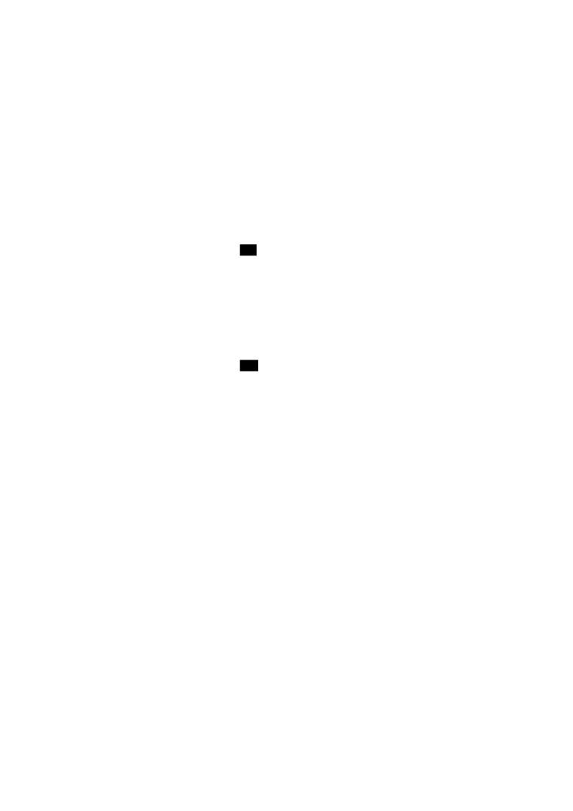
152 FLUENT ENGLISH
Go out.
To go somewhere for a social outing with friends, particularly in the evening and on the
weekends. The whole group of friends went out to dinner and a movie last Friday night.
Go out with.
To date someone repeatedly, to be in a relationship. Emily's been going out with Dave
for about two months now.
Make up.
To resolve a conflict, to apologize. / was really mad at my Mom this weekend, but we
made up.
Split up.
To end a relationship. Donna and Jim fight all the time—they should just split up.
15F REAL ENGLISH
She's a Real Knockout!
It's Friday, T. G. /. F. day, and man am I looking forward to the weekend! I work so hard
during the week that when Friday rolls around I'm ready to kick up my heels and have a
night on the town. Tonight I've got a hot date with a woman that I'm in love with. She's
a real knockout!. I'm getting dressed to kill, taking her to the best restaurant around,
and then we'll go out and paint the town red, you know, the works\ We're really gonna
go all out. I just know it's gonna be a blast!
15G BRING IT ALL TOGETHER
REVIEW EXERCISE 1: Vocabulary
Match the following vocabulary words with their definitions by placing the letter of 1 the
word next to its description.
a. bird-watching; b. bowling; c. bungee jumping; d. camping; e. canoeing; f hiking;
g. horseback riding; h. jogging; i. rock climbing; j. roller-blading; k. sailing; I. skateboarding;
m. sightseeing; n. skiing; o. skydiving; p. surfing; g. window-shopping; r. whale watching 1
1. __________ Jumping from a high place with a cord attached to the body.
2.
__________ Visiting interesting places, often while on vacation.
3.
__________ Riding in a long, narrow boat and moving with a paddle.
4. __________ Climbing up the sides of high rocks.
5.
__________ Riding over the snow on long sticks.
6. __________ Temporarily living in nature and sleeping in a tent.
7.
__________ Jumping out of an airplane with a parachute.
8. __________ Riding on boots that have a line of wheels on them.
9. __________ Riding a horse for pleasure.
10. _________ Going out on a boat to watch whales.
11.
________ Rolling a ball to knock over pins.
12.. _________ Looking at window displays in stores.
Lessson 15: Let's Get Together Sometime!
153
13. ________ Riding on a board that has small wheels attached to it.
14. ________ Observing birds in their natural environments.
15. ________ Riding ocean waves on a board.
16. ________ Walking on long trails, often in the mountains.
17. ________ Riding on a boat powered by the wind.
18. _________Running at a slow, rhythmic pace for exercise.
REVIEW EXERCISE 2: Verbs Followed by Gerunds
Finish the sentences by choosing an appropriate verb and using its gerund form.
borrow, take, get up, eat, tell, buy, steal, lose
1.
The suspect wouldn't admit__________ the car.
2.
We can't risk_________ this contract.
3.
How do you suggest _________ a new house with no money?
4.
Frank doesn't recall _________ money from Greg.
5.
Gerry can't stand _________ dinner this late.
6.
Have you ever considered__________ the bus to work?
7.
Do you mind __________me your name?
8.
We hate _________ so early for work!
REVIEW EXERCISE 3: Verbs Followed by Prepositions and Gerunds
Fill in each of the following blanks with the correct preposition and gerund form of the verb
given in parentheses.
1.
The police are trying to keep that man (hurt) __________ himself or anyone else.
2.
Melissa, will you please forgive me (be) _________ such a fool?
3.
Do you want to take part (plan) __________ a party for the boss?
4.
Mary's father blamed Jim (cause) _________ the car accident.
5.
The judges congratulated Susan (win) _________ the contest.
6.
We plan (flying) _________ to London via Reykjavik.
7.
Don't worry (get) _________ to the party late.
8.
The alarm will prevent thieves (break) _________ into the house.
REVIEW EXERCISE 4: Go Plus Gerunds
Fill in each sentence with go plus an appropriate gerund.
1.
Jack's an avid fisherman who _________ just about every weekend.
2.
I love discos! Let's __________this Saturday.
3.
Do you want to _________ in our new sailboat this weekend?
4.
On our first day in Amsterdam we _________ all over the city.
5.
There are some great rocks and small cliffs where we could __________ .
6.
Jerry gets up at 6:00 A.M. every day and __________ for exercise.
7.
The new bowling alley is open, so do you want to __________ ?
8.
I _________ on the bike trails along the river last weekend.
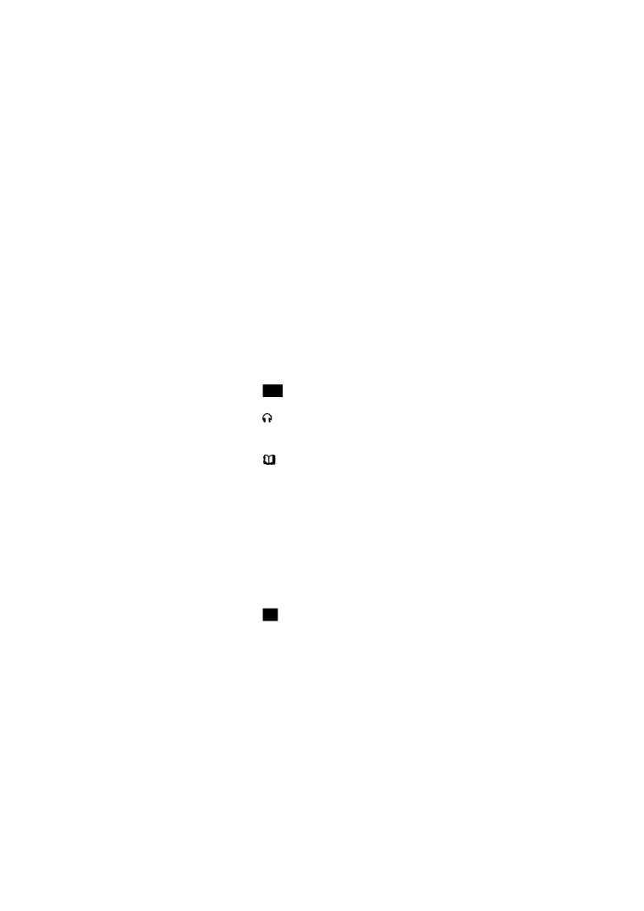
154 FLUENT ENGLISH
REVIEW EXERCISE 5: Phrasal Verbs
Fill in the blanks with the following phrasal verbs.
ask out, broke up, called off, call up, dress up, dropped by, fell for, get back together,
get together, going out, going out with, make up, split up
1. We have to_______ for the formal wedding we're going to.
2. Did you hear that Margaret and Dave __________ , and he's already dating again!
3. Deb is __________Ben on a second date to the opera tonight.
4. The Denvers _________ this morning for just a few minutes to say "hello."
5. I'd like to see Denny and Samantha _________ , because they were a great couple.
6. Due to the snowstorm, classes have been _________ for the day.
7. Why doesn't Nick __________ her__________ to the movies or dinner?
8. Are we _________ tonight, or are you too tired to do anything?
9. I'll _________ you _________ later tonight if you give me your number.
10.
___________ Alexia and Gordon
after two years, but they seem to still be friends.
11.
___________ If a couple fights in the evening, they should try to before going to bed.
12. Let's_________ sometime and go to a movie or have dinner or something.
13. Cal's been moping around since he _________ a woman who's already married.
15H LISTEN UP!
Turn on your recording and listen to a short article on new and traditional ways for .
people to meet one another, make new friends, or find romance. Then answer these
questions.
1.
Are work, school, and family and friends listed as traditional ways to meet people or
less-traditional ways?
2. What type of ad can be put in the newspaper to help meet someone special?
3. Are singles groups organized around specific interests?
4. What types of activities do they organize for people to meet?
5. What is it called when people only have a few minutes to get to know one another
and see if there's a spark of interest?
6. What is the name of the "space" where people can talk on the Internet?
7. Is Internet dating seen as very strange by everyone nowadays?
15I WHY DO THEY DO THAT?
Drop by Anytime!
As you've probably noticed, there are many expressions and greetings in English that
may seem to mean something other than what they really mean. For example, the
most common American greeting is "Hello, how are you?"This isn't actually a question
Lesson 15: Let's Get Together Sometime!
155
about your state of mind or physical health; it's simply a way to say "hello." So, when
you are greeted this way, it would be best not to start talking about your upcoming
divorce, or about how broke you are, or about how much your back is hurting you.
Equally, it would surprise Americans if you answered that you just got a raise, and your
kids are getting high grades, and ...The best response is simply "Fine, thanks, how are
you?"
When Americans run into people they haven't seen for a while, or sometimes when they
meet new people, it is customary to say something like, "Let's get together sometime.
"The other person responds by agreeing that they should get together. If this is as far as
it goes, it is just a cordial way to say,"See you around." It may not truly be an invitation to
get together. It only becomes a concrete plan when something more specific is said,
such as for example, "What about this weekend?" or "Give me your number, and I'll give
you a call so we can make plans."
Avery common American invitation is, "Why don't you drop by sometime?" But be
careful! This is by no means an invitation to literally stop by someone's home at any
time. Americans are generally open to receiving invited guests in their homes, but not
without an invitation for a specific date and time. In fact, arriving at someone's home
unannounced is considered rude. So, if you're invited to drop by anytime, make sure you
call first and agree on a specific date and time with your host.
Lesson 15: Answer Key
Practice Exercise 1
1. jogging, 2. calling, 3. giving, 4. pulling, 5. watching, 6. studying, 7. smoking, 8. being,
9. traveling, 10. meeting
Practice Exercise 2
1. dissuade.. .from, 2. believe in, 3. apologize for, 4. plan on, 5. accustomed to, 6. excited about,
7. insist on, 8. concerned about, 9. thank... for, 10. complain about
Practice Exercise 3
1. go skiing, 2. go sightseeing, 3. go grocery shopping, 4.go running, 5. went sailing, 6. gone
hiking, 7. go whale watching, 8. go camping
Review Exercise 1
1. c, 2. m, 3. e, 4. i, 5. n, 6. d, 7.o, 8. j, 9. g, 10. r, 11. b, 12. q, 13.l, 14. a, 15. p, 16. f 17. k, 18. h
Review Exercise 2
1. stealing, 2. losing, 3. buying, 4. borrowing, 5. eating, 6. taking, 7. telling, 8. getting up
Review Exercise 3
1. from hurting, 2. for being, 3. in planning, 4. for causing, 5. on /for winning, 6. on flying,
7. about getting, 8. from breaking
Review Exercise 4
1. goes fishing, 2. go dancing, 3. go sailing, 4. went sightseeing, 5. go rock climbing, 6. goes
jogging, 7. go bowling, 8. went biking
Review Exercise 5
1. dress up, 2. broke up, 3. going out with, 4. dropped by 5. get back together, 6. called off,
7. ask... out, 8. going out, 9. call ...up, 10. split up, 11. make up, 12. get together, 13. fell for
Listen Up!
1. Traditional. 2. A personal ad. 3. Yes. 4. Parties, outings or other events. 5. Three-minute dating.
6. A chat room. 7. No.
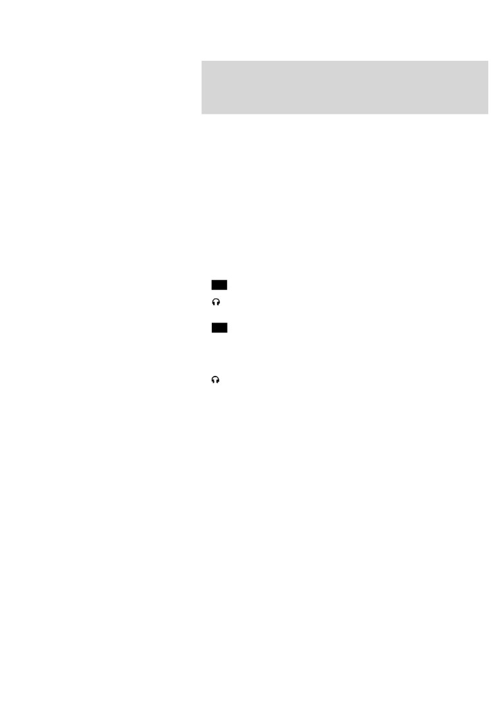
Lesson 16
Watercooler Conversations!
ARE YOU READY FOR THE LESSON?
If you were wondering about American work life, Lesson
16: Watercooler
Conversations will answer some of your questions. You'll learn about American job
satisfaction in English at Work and on-the-job romances in Listen Up! You will also
learn some work-related phrasal verbs with take and on-the-job idioms. But there's
more. You will also learn:
• Passive and Past Forms of Infinitives and Gerunds
• Passive Infinitives and Gerunds after need
• Using Possessives to Modify Gerunds
You'll also be learning what "Watercooler conversations" are in Why Do They Do That?
So let's get started with a pronunciation warm-up in Say It Clearly!
16A SAY IT CLEARLY!
Turn on your recording to practice a very common vowel sound.
16B ENGLISH AT WORK
DIALOGUE: What Do You Think About the New Boss?
Three colleagues at Trenton Enterprises are in the break room discussing their new
boss, as well as the rumors that they've heard of layoffs in their company.
Jim
I don't know about the new boss, Bagley. He reminds me too much
of Conner—you know, the director they hired right before we
got downsized.
Ed
Oh, yeah, I remember that guy. He had the same poker face. None of us
knew what was happening until it happened. I hope the company
didn't hire Bagley to do the same sort of job.
Carol Well, I say we should give him a chance. He seems like a real
professional to me.
Terry I don't know, Carol. I keep hearing rumors about more layoffs in other
divisions. Why would they suddenly get rid of Ferguson, who was
here for years, and hire someone new? I can't afford to lose my job
right now.
Ed
They didn't get rid of Ferguson. She got a promotion.
Terry
A/lore like she was put out to pasture, I think. I really think she's on her
way out.
Carol You're such a pessimist. No one is going to lose their job.
Terry That's easy for you to say! You've got something to fall back on, since
you used to teach. I'd have to live on unemployment.
Ed
Well, look on the bright side. Maybe you'll get a nice severance package
and be able to sit around doing nothing for a few months with a salary!
Lesson 16: Watercooler
Conversations
157
Terry
I'd rather work for that salary and not have to worry about finding
a new
job in a
few months. I've been on unemployment before, and it's no picnic.
I could
barely make ends meet. I couldn't find a new
job for months, and I
ended
up freelancing. No security, no benefits...
Carol
Look guys, let's not blow things out of proportion. We don't know that the
company's going to laypeople off. It's
just a rumor. We have no real reason to
think that they hired Bagley to clean house. The whole company is
doing
pretty
well, and we know for a fact that our division is up.
Jim Well, I
hope you're right.
The new director, Mr. Bagley, walks into
the break room
Bagley Is this
coffee still drinkable?
Carol
Oh, Mr.
Bagley. Good
morning.
Bagley
'Morning, Carol ...Jim, Terry ...uh, Ed?
Ed
Yes, that's right.
Bagley
Hey, not bad for my second week on
the job, right?
Oh, you can call me
George. I'd prefer that.
"Mr. Bagley" 's
too formal. Say, Terry, I'd like
to talk
to you.
Terry
Sure.
What's up?
George
I want to get your feedback on creating some new positions. I'd like to hire
some people, but I want to make sure we put them
where they'll be most
effective. You've been
in the division
for a while, I think, so you must have
insight
into how things really flow around here.
Terry
Okay,
sure. I'd be happy to talk to you about that.
George
Great.
Are you free at around 11:00?
Terry
Sure. See you then.
George leaves.
Ed
Hmmm, new positions. I guess we're
not doing so bad after all.
Carol
Yeah,
no need to run
out and beef up your resume, Terry!
16C BUILD YOUR
VOCABULARY
Benefits. Awards other than a salary paid to an employee, such
as medical coverage or
vacation leave. Many prospective
employees ask
about benefits
during a job interview.
C. E.O. Chief Executive Officer. The company executive with the
most decision-making
power. The C. E. O.
of Hastings, Inc., James Williams, made the decision to open a
new
plant in Pittsburgh.
Conference call. A
telephone call
that allows several people in different locations to
conduct business over the phone
at the same time. After the project manager moved to
another city, he started directing business with his
employees via
conference calls.
Cubicle. A semi-separated office space defined by partitions that generally rise
halfway
to the ceiling. Since
Jim's cubicle is
next to Sarah's, he can hear how much she talks on
the
phone.
Deductions. Money taken out of a paycheck for taxes, insurance, retirement plans, etc.
158 FLUENT ENGLISH
Every year it seems like there are more and more deductions and less and less money
that goes into my bank account
Fire. To dismiss from a job. Bob doesn't like to fire people, but he has to do it
sometimes because he's the manager.
Cross wages. The total amount of money earned before taxes and other deductions.
Ralph thought he would be making a lot of money when he heard what his gross wages
would be, but unfortunately, he forgot to subtract his deductions.
Human resources. The department in a company that deals with hiring and firing, as
well as employee benefits, needs, and concerns. If you want to learn about tuition
reimbursement for continuing education, just ask human resources.
Lay off. To dismiss a number of employees due to a reduction in business or need for
their services. / heard the company will be laying people off again later this month
because business is so bad.
Net wages. The amount of money paid to an employee after deductions. Marion's net
wages are high because she has so few deductions.
Networking. A business information exchange between individuals, groups, or
companies, meant to benefit all the parties involved Jan is starting her own home
business, so she is networking to help her get a client base.
Personnel. Everyone who works for the same company or employer. A division within
the company that is concerned with the personnel, often called "human resources."
You'll need to go to Personnel to get an application.
Professional. Conforming to good business ethics; a person trained specifically for a
job or industry. Ms. Williams dresses and acts very professionally, so she is often
chosen to represent the company.
Promotion. Advancement from one position to a higher one, usually with a pay
increase. It's about time Bill got a promotion; he's been such a loyal hardworking
employee for a long time.
Recruit. To actively seek new workers. Jim was sent to several nearby colleges
and universities to recruit college graduates.
Reduction in force. A layoff, the elimination of employee positions. If you read the
financial section of the newspaper, you will see that a lot of companies are experiencing
reductions in force.
Time card. A card that keeps track of the time an employee works. Remember to fill
in your time card, or you may not get paid this month.
Time clock. A clock that is used to punch an employee's time in and out on a time
card. Ask the manager to sign your time card because the time clock isn't working.
16D ENGLISH UNDER THE HOOD
TOPIC 1: Passive and Past Forms of Infinitives and Gerunds
You've already seen active infinitives and gerunds, such as to do or doing. There are
also passive infinitives and gerunds, to be done or being done. As you can see, the
Lesson 16: Watercooler Conversations
159
passive infinitive is formed with to be + past participle: to be seen, to be taken, to be
placed. It is used with a main verb in the present tense to show an action that has not yet
happened.
She wants to be given the opportunity to go to Europe.
I expect to be laid off this month.
If the main verb is in the past, the passive infinitive shows an action that (may have)
happened after the action of the main verb.
He hoped to be seen at the beach, but no one was there.
They planned to be driven to the airport early this morning, and they left on time.
One common use of the passive infinitive with be as the main verb is to
give instructions.
Time cards are to be inserted into the clock.
The pilot light is to be turned on before the gas.
The passive gerund is formed with being + past participle: being seen, being taken, being
placed. The passive gerund can have the same functions as the active gerund— as
subject or object.
/ appreciate being driven to the airport.
Being stung by a bee is one of her greatest fears.
She mentioned being held up on the freeway.
There are also past forms of infinitives and gerunds. The past infinitive is formed with to
have + past participle: to have seen, to have taken, to have placed. It expresses an action
that happened before the time of the main verb.
The weather seems to have changed very recently.
It's so late; the guests are expected to have arrived already.
The past gerund is formed with having + past participle: having seen, having taken, having
placed. It also expresses something that happened before the time of the main verb, and it
can serve the same functions as the regular gerund.
As an adult he likes having had the chance to study abroad.
We discussed having received the wrong information yesterday.
Having already been laid off proved to be very helpful to Samantha.
PRACTICE EXERCISE 1: Finish each sentence with the correct form of the verb. First
use the passive infinitive.
1. Nobody wants (take) _________ advantage of.
2. This product is (use) __________sparingly.
3. Tom hopes (call back)__________for the job that he interviewed for.
Now use the passive gerund.
4. Jack doesn't like (tease) _________ about his height.
160 FLUENT ENGLISH
5. Maria doesn't enjoy (ask)__________ to make photocopies.
6. Jan and Carol appreciate (help) _________ by their parents.
Use the past infinitive.
7. Somebody seems (remember) _________ the cake for Marty's retirement.
8. The employees were expected (fill out) __________ their benefits forms by yesterday.
Use the past gerund.
9. She denies (go) _________ to the boss with her story.
10. Georgia regrets (offer) _________ the job to her brother-in-law.
TOPIC 2: Passive Infinitives and Gerunds after need
Both passive infinitives and gerunds can be used after need. The implication is that it is
either unknown or not important who is expected to perform the action.
This room needs to be cleaned, and I don't care who does it!
My office needs to be painted, but I'm not sure who'll do it.
This room needs cleaning, and I don't care who does it!
My office needs painting, but I'm not sure who'll do it.
The forms above are essentially interchangeable. However, the passive infinitive form
is more emphatic than the gerund form. The gerund form often sounds less formal and
more conversational. Many speakers limit its use to chores, tasks, or goals—
especially household ones—while the passive infinitive is used more widely.
PRACTICE EXERCISE 2: Fill in the blanks with need + gerund. Pay attention to the
tense of need.
1.
The light bulb in this lamp (replace) __________ .
2.
The dog (walk)__________ every night.
3.
The garden (weed) _________ before we can plant anything in it.
4.
My bike (fix) __________ before I was able to use it again.
5.
This tree (water) _________ if it doesn't rain soon.
Now fill in the blanks with need + passive infinitive.
6.
These files (move) _________ to the storage room if they're not current.
7.
The position (fill) __________ before Monday.
8.
We (drop off) __________at the airport by 6 A.M., but we got there late.
9.
The computer program (install) ___________before Monday.
10.
This medicine (mix) __________ with water.
TOPIC 3: Using Possessives to Modify Gerunds
A possessive can be used to modify a gerund. If you remember that a gerund is a
noun, then this structure will make more sense.
Did you know about our visiting you next week?
I decided what to do about John's meeting my friend.
Lessson 16: Watercooler Conversations
161
This construction is also common with past gerunds.
Did you know about her having offered the job to someone?
I was concerned about Henry's not having called us in so long.
It is common to hear an informal form, with an object noun or pronoun instead of the
possessive adjective. Note that this is a conversational form, and not a written form. Be
careful about when you use it.
We told them about us going on vacation next month.
The interviewer asked about him leaving his last job.
PRACTICE EXERCISE 3: Fill in each blank with the correct gerund and possessive.
Use the clues in parentheses.
1. I'm nervous about _________ surgery next week, (my mother, have)
2. The department is excited about _________ new offices, (everyone, get)
3. He was upset about _________ him the position, (his director, not offer)
4. Jack's wife is worried about _________ late, (he, be)
5. Sam often complains about _________ broken, (the photocopier, be)
6. Jordan was practicing the guitar until late at night, and ___________ kept us awake.
(he, play).
7. ______________ a new car was an excellent idea, (they, buy)
8.____________ to human resources angered Julie's coworkers, (she, complain)
16E PHRASAL VERBS WITH TAKE
Take after.
To have similar qualities and physical features as an older relative. Most people think my
daughter takes after me; we're both a bit shy.
Take back.
To reclaim as one's own. After Cindy gave Jeff the promotion, she wished she could take
it back!
Take down.
To lower something physically. We'll have to take the curtains down so that we can clean
them.
Take for.
To consider, to hold a particular opinion of someone. The department really takes the new
boss for a fool.
Take in.
a) To learn; to absorb an idea. Children take in too much violence on TV.
b) To give someone a place to stay in a home. When Marcy's cousin didn't have a place to
live, the family took her in.
Take on.
To add an additional responsibility; to hire. Another project? You take on too much!
You've got to start saying "no."
162 FLUENT ENGLISH
Take over.
To assume control or possession of something. The boss asked me to take over
the leadership of the Henley project.
Take off.
a) To remove something, such as clothing. Jim took off his jacket and sat down at the
conference table.
b) To depart, as an airplane. The plane took off five minutes late.
c) To leave quickly. When the vandals saw the security guard, they took off into the woods.
d) To take a vacation, not to go to work for a period of time. We took off the second week
in January and flew to Curacao.
Take up.
To begin, as in studies or hobbies. After Jenny traveled to Morocco she decided to
take up Arabic.
Take up with.
To discuss or confer with someone. If you're not happy about your salary, you need
to take it up with human resources, since they determine salary guidelines.
16F REAL ENGLISH
I Really Work My Tail Off!
I've really been swamped at work lately. I've got a stack of papers on my desk, and I'm
really under the gun to get through them all. My boss has been breathing down my
neck. It's not like I'm zoning out or surfing the net all day, either. I really work my tail off.
There's just too much work to do, and if my company keeps downsizing, they may be
in the black, but all of us employees will go out of our minds! You can't get blood from
a stone, after all. We're stretched too thin as it is, and it looks like things will only get
worse before they get any better. On top of our having too much work, employee
morale is at an all-time low. Everyone's waiting for the axe to fall, wondering if they're
next.
I need to get out of there. I need a long vacation, time off to recharge and put some
distance between me and this cubicle farm. But who am I kidding? After a vacation
there would be an even bigger pile of work waiting for me!
16G BRING IT ALL TOGETHER
REVIEW EXERCISE 1: Vocabulary
Match the definition to the vocabulary word.
a) benefits, b) C. E. O., c) conference call, d) cubicle, e) deductions, f) fired, g) gross wages,
h) human resources, i) laid offj) net wages, k) networking, I) personnel, m) professional,
n) promotion, o) recruit, p) reduction in force, a) time card, r) time clock
1. __________ A way employees can discuss business while not in the same office.
2. __________ Your total salary.
Lesson 16: Watercooler Conversations
163
3. _________ A way to make business connections.
4.___________ A nicer way to say employees are being "laid off."
5. _____________ A small semi-private working space in a large shared office.
6. ____________ A machine that keeps track of time worked.
7. ______________ Another word for "employees."
8. ____________ he extras paid for by an employer.
9.___________ An office where an employee can go when he or she has questions or
concerns about work.
10. ________ A person in a position that he or she was specifically trained for, usually
involving a higher education.
11.
________ A company executive.
12.
________ A raise in position at work, usually involving more responsibility and a
higher salary.
13.
________ Means the same thing as "dismissed from a job."
14.
________ Where an employee's time is tracked.
15.
________ A salary after deductions.
16.
________ Means that employees are let go because their positions are eliminated.
17.
________ Money taken out of a salary.
18.
________ To look for new employees.
REVIEW EXERCISE 2: Passive and Past Forms of Infinitives and Gerunds
First fill in each blank with the passive infinitive of the verb given.
1. Don't expect (hire) _________ so quickly.
2. The candidates for the job are waiting (interview) __________ in human resources.
Now use the passive gerund.
3. The applicant doesn't like not (call) _________ back after an interview.
4. The assistants are afraid of (give) __________ too much work.
Now use the past infinitive.
5. We were lucky (take) __________a shortcut to work today.
6. You seem (find) _________ what you were looking for.
Finally, use the past gerund.
7. We talked about (go) our _________ to the same university.
8. Rob appreciates (get) _________ an honorary degree.
REVIEW EXERCISE 3: Gerunds or Passive Infinitives Following need
Use the passive infinitive with need.
1. Your medicine (take) __________with water.
2. Everyone (give) _________ a chance to improve his or her job performance.
3. Your department (tell) __________ about your promotion.
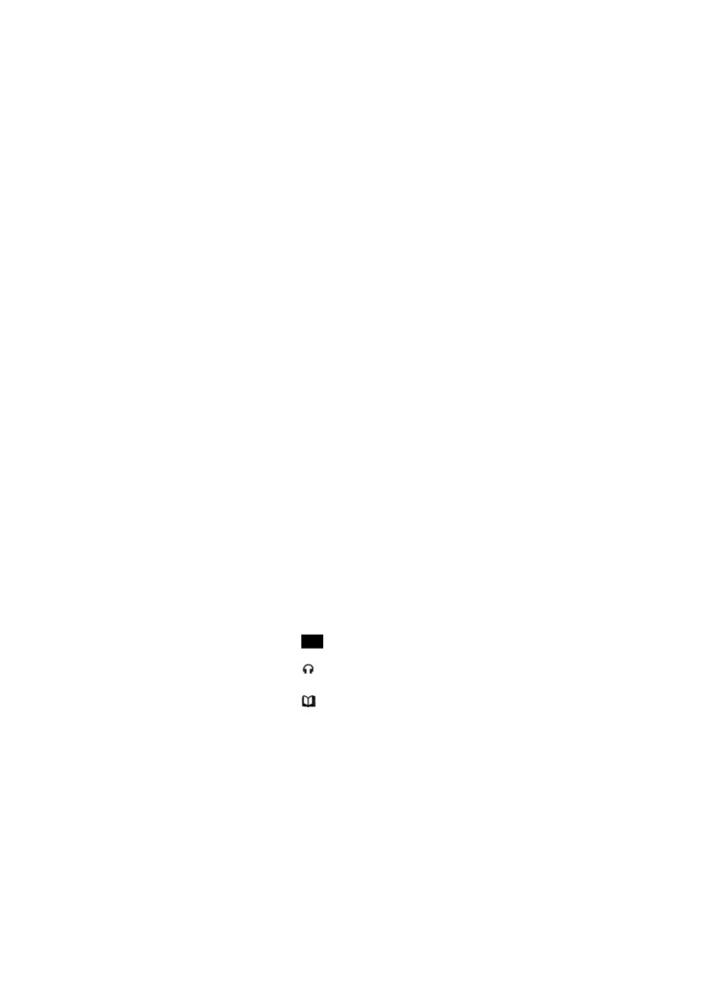
164 FLUENT ENGLISH
4. These reports (submit) __________ to the marketing department.
Use gerunds with need.
5. The filing cabinet (clean)__________ out before we move to the eighth floor.
6. All of the offices (paint) __________ before anyone moves in.
7. The computer (debug) _________ , so call I.T.
8. The plants in the reception area (water) ___________once a week.
REVIEW EXERCISE 4: Using Possessives to Modify Gerunds
Fill in each blank with the correct gerund and possessive. Use the clues in
parentheses.
1. Yesterday I complained to my colleague about __________ too loud in her cubicle.
(she, talk)
2. The director was anxious about __________ its budget, (the department, not meet)
3. Sandy's husband is proud of__________ a promotion, (she, get)
4. I look forward to _________ two weeks off for the holidays, (we, have)
5. Senior management regrets __________ to lay off so many people, (we, have)
6.
________ able to hire a new assistant is becoming a real problem, (we, not be)
7.
You must feel excited about __ published next week! (the book, be)
8.
The board of directors was relieved to hear about __ his resignation, (the
chairman, submit)
REVIEW EXERCISE 5: Phrasal Verbs with take
take over, take in, took up, take for, take after, take off, take in, take on
1.What time do you expect the plane to ____________ ?
2.There's too much information for me to _____________ all at once.
3.Could you___________ some printer toner from that high shelf, please?
4.Who's going to ___________ as head of sales after Sheila leaves?
5.Ralph ___________Spanish when he was in high school, and he's loved it ever since.
6.You're as stubborn as your father! You really ___________ him!
7.Do you think you could ___________ an additional project?
8.Do you ___________ me __________ a fool?
16H LISTEN UP!
Listen to a short article on on-the-job romances, and then come back and answer
the following questions.
1. Give two reasons why on-the-job romances may be on the rise.
2. What do companies encourage that makes on-the-job romances more likely?
3. What are two of the potential problems of on-the-job romances?
4. What is one good thing that can come out of an office romance?
Lesson 16: Watercooler Conversations
165
16I WHY DO THEY DO THAT?
WATERCOOLER CONVERSATIONS
The American workplace has become a place for socializing as much as a place for work.
During breaks, over lunch, and at the "Watercooler," American workers enjoy socializing
with their coworkers. Sometimes the discussions are political, or family related, or perhaps
they're about the latest TV shows and movies. Gossiping about other coworkers or even
the boss might also be common. But since office camaraderie can be cultivated under
these circumstances, this could also be a forum for discussing work projects, and because
it's a more relaxed environment, creative solutions to work often come up among
coworkers in unexpected places. Whatever the case, more company executives say they
believe that "Watercooler conversations "focus more on business-related matters rather
than gossip. Watercooler conversations are good for employees, since everyone needs a
little socializing to get them through a day of hard work. And they're also good for
business, since they encourage teamwork and creative exchanges of ideas.
Lesson 16: Answer Key
Practice Exercise 1
1. to be taken, 2. to be used, 3. to be called back, 4. being teased, 5. being asked, 6. being helped,
7. to have remembered, 8. to have filled out, 9. having gone, 10. having offered
Practice Exercise 2
1. needs replacing, 2. needs walking, 3. needs weeding, 4. needed fixing, 5. will need watering,
6. need to be moved, 7. needs to be filled, 8. needed to be dropped off, 9. needs to be installed,
10. needs to be mixed
Practice Exercise 3
1. my mother's having, 2. everyone's getting, 3. his director's not offering, 4. his being, 5. the
photocopier's being, 6. his playing, 7. Their buying, 8. Her complaining
Review Exercise 1
1. c) conference call, 2. g) gross wages, 3. k) networking, 4. p) reduction in force, 5. d) cubicle,
6. r) time clock, 7. l) personnel, 8. a) benefits, 9. h) human resources, 10. m) professional,
11. b) C. E. 0., 12. n) promotion, 13. f) fired, 14. q) time card, 15. j) net wages, 16. i) laid off, 17.
e) deductions, 18. o) recruit
Review Exercise 2
1. to be hired, 2. to be interviewed, 3. being called, 4. being given, 5. to have taken, 6. to have
found, 7. having gone, 8. having gotten
Review Exercise 3
1. needs to be taken, 2. needs to be given, 3. needs to be told, 4. need to be submitted, 5. needs
cleaning, 6. need painting, 7. needs debugging, 8. need watering
Review Exercise 4
1. her talking, 2. the department's not meeting, 3. her getting, 4.our having, 5. our having,
6. Our not being, 7. your book being, 8. the chairman's submitting
Review Exercise 5
1. take off, 2. take in, 3. take down, 4. take over, 5. took up, 6. take after, 7. take on, 8. take...for
Listen Up!
1. People spend a lot of time together at work; they spend less time socializing outside of
work; they are often involved in emotional or exciting projects with their colleagues; the
workplace is evenly split between men and women. 2. A team-like atmosphere. 3. Jealousy
among coworkers, decreased productivity, bad feeling after a break-up, charges of harassment.
4. Coworkers may find greater job satisfaction.
Lesson 17
This Diet May Work for You!
ARE YOU READY FOR THE LESSON?
Are you interested in health and nutrition? If so, then Lesson 17, This Diet May Work for
You! has some information you'll find interesting. You'll hear friends discussing different
diets in English at Work. You'll also learn what the new federal dietary guidelines are in
Listen Up! And you'll learn a few important food customs in Why Do They Do That? And
there's more. You'll also learn:
• The Real Conditional in the Present and Future
• The Unreal Conditional in the Present and Future
• The Past Unreal Conditional
• Phrasal Verbs about Food
You'll learn some good vocabulary words on the subject of food and eating along with
some idioms that are also based on food. So let's get started with consonant clusters in
Say It Clearly!
17A SAY IT CLEARLY!
Turn on your recording to practice pronouncing consonant clusters that contain the
sounds l or r.
17B ENGLISH AT WORK
Dialogue: What are You Going to Get?
Three friends, Carol, Rosa and Glen, are having lunch together at a restaurant. Listen in
as they look at the menu and decide what to order.
Carol
Hmm. So many things look good. What are you going to get, Glen?
Glen
I don't know yet. My doctor says I have high cholesterol, and he's got
me on a low-fat diet. So, I have to think about it. Plus I'm trying to get
back in shape, so I should stay away from the carbohydrates.
Rosa You're not calorie-counting, are you?
Glen
No, not yet. But I'm trying to stay away from things that are high in
carbs, especially in the evenings.
Carol
So, no bread or pasta for you tonight!
Rosa
Whoa. I'm afraid of what my doctor might say. I'm strictly a meat-and-
potatoes kind of gal. I'll probably get the steak sandwich. What about
you, Carol?
Carol
Actually I don't eat meat. I'm a vegetarian. And I probably can't
have the soup because they usually make soup with chicken or
beef broth. Rosa Oh, that's right. I forgot that you don't eat meat. But you
can't even eat something with chicken broth? It must be hard for you!
Lesson 17: This Diet May Work for You!
167
Carol
Not really. You get used to it.
Rosa
But isn't it difficult for you to get protein and vitamins and minerals?
Carol
No, not at all. There's actually plenty of protein in vegetable sources,
especially things like beans and tofu. And plants are full of vitamins
and minerals.
Glen
Yeah, I read somewhere that there are just a few you have to be a bit
careful about, like calcium, but you can get everything you need
from plants.
Rosa
But don't you miss the flavor and variety of meat and fish?
Glen
Flavor and variety? Ha! I see you've never been to one of Carol's dinner
parties! Trust me, if you could cook like she can, you wouldn't miss
meat at all.
Carol
That's sweet of you to say, Glen.
Rosa
Okay, I'm game ...So, the next time we get together, why don't you
cook for us? I'll bring a dessert.
Glen
And I'll bring the wine.
Carol
Well, sure. I love cooking for people. What should we have?
Rosa
Something vegetarian of course, but really interesting and flavorful. Glen
And low-fat and low-carb. Carol Hmmm, maybe some kind of Thai curry,
and we can go easy on the
coconut milk and the rice.
Rosa
Oh, wow, that sounds great. I can't wait.
Waiter
So, have you decided?
Carol
We've decided about dinner sometime in the next few weeks, but not
about lunch yet.
Glen
Could you give us a few more minutes?
Rosa
Sorry!
Waiter
Sure. I'll be back in a few minutes.
Rosa
Okay, so about dessert...
Glen
Wait, we haven't figured out appetizers yet!
17C BUILD FOR VOCABULARY
A la carte. Food served on its own, an item on the menu that comes alone. Would you
like your enchiladas as an entree with salad, rice, and beans, or a la carte?
Appetizers. Starters, food served first and before the main course. The Creek restaurant
has wonderful appetizers.
Appetizing. Appealing, well presented, having a good taste and smell. It's difficult to
choose because everything on the menu is so appetizing.
Bitter. Having a harsh taste, one of the four basic tastes that is not sour, sweet, or
salty. Aspirin and unsweetened chocolate are both bitter.
Bland. Lacking in flavor, with little taste. This dish needs some salt or something
because it's very bland.
Calorie. A measure of energy in food. If you want to lose weight, you have to be careful
not to take in too many calories a day.
Carbohydrates. Food sources found in grains and green plants that are primary
168 FLUENT ENGLISH
sources of energy. Foods that are high in carbohydrates give you energy, but they can
also make you gain weight.
Casserole. A main dish that is baked in the oven. Each of us is bringing a casserole;
I'm bringing lasagna.
Cocktails. A mixed alcoholic drink, often served with ice. The office staff often met at
the lounge for cocktails on Friday nights.
Cutlery. Implements used for cutting and eating food; silverware; flatware. Fine
restaurants serve their food with the best cutlery.
Delicacy. An especially delicious, rare, or expensive food. The blowfish is considered
a delicacy in Japan.
Diner. A small, inexpensive restaurant that serves American food for breakfast, lunch,
and dinner. Joe always takes Mildred to the diner for a burger and fries after a movie.
Entree. The main part of the meal. The main course. We ate so many appetizers that
we have no room for our entrees.
Grill. To cook on a metal rack or grate over charcoal or gas flames. How do you feel
about grilling some vegetables tonight?
Ingredients. The components of a recipe or dish. If we're going to bake a pie, we need
to make sure we have all the ingredients first.
Junk food. Food that has little nutritional value but high fat, sugar, or salt content.
American kids eat too much junk food, and many of them are overweight.
Leftovers. Food remaining after one meal and saved for another meal. We've got a lot
of leftovers, so maybe we should invite the neighbors to help us finish them off.
Nutrition. The process by which the body takes in food and uses it for energy. The
path to good nutrition is through eating wholesome food.
Savory. Palatable, well seasoned, appealing to the taste buds. Mmmm, try this rice.
It's really savory.
Seasonings. The herbs and spices used to flavor food. Shall we use fresh basil
and oregano for seasonings?
Lesson 17: This Diet May Work for You!
169
/ take the bus to school if it rains.
The future real conditional describes a future relationship. Notice that the verb in the if
clause is in the present tense.
If cut back on fats and carbohydrates, I will lose weight.
If I make cookies, the neighborhood children will come over.
The dog will bark if you make a lot of noise.
PRACTICE EXERCISE 1: Complete the sentences with the verbs in parentheses. First
use the present real conditional.
1. If I work too hard, I (get) _________ very tired.
2. If the dog (exercise) _________ enough, she sleeps through the night.
3. A car (wear) __________out faster if it isn't well cared for.
4. It always rains if you (wash) __________your car!
5. If Amy sees something she likes on the menu, she (order) __________it.
Now use the future real conditional.
6. If I have the time, I (go) __________up to the mountains this weekend.
7. If Mary (go) _________ on a diet, she'll lose ten pounds.
8. We (catch) __________the train if we arrive at the station on time.
9. You (miss) _________ your favorite TV show if you don't get home on time.
10. If you don't apply to the university on time, you (not get)
accepted.
TOPIC 2: The Unreal Conditional in the Present and Future
If the real conditional expresses real actions, then the unreal conditional expresses
actions that are untrue, hypothetical, or contrary to fact. Notice that the if clause takes a
past-tense verb, and the result clause takes a verb with would.
If I had the appetite, I would order the all-you-can-eat special.
If I had the time, I would make you a birthday cake.
Susan would quit her job if she had another one.
When using the verb to be, it's important to remember to use the form were in the if clause
for both singular and plural.
If / were you, I would go to the movies with Jim.
If that food were more nutritious, I'd eat it too.
PRACTICE EXERCISE 2: Complete each sentence with the correct form of the verb in
parentheses.
1. If your parents (be)_________ here, they (understand) __________ the
problem better.
2. If Jan (know)_________ how to do it, she (not ask) __________ me.
3. I (buy) _________ a new sofa if I (have) _________ the money.
4. The children (not get) __________ so sick if they (eat) __________better.
170 FLUENT ENGLISH
5. If you (make) _________ dinner, I (clean up) __________the kitchen for you.
6. Everybody (feel)_________ bad if you (want) __________ to move out.
7. If I (be) _________ you, I (buy) _________ a better car.
8. If we (live)
_________ in the country, the children (have) __________ a big yard to
play in.
9. If you (have) _________ a better job, your salary (be) __________ higher.
10. I (watch) __________TV if I (have) _________ one.
TOPIC 3: The Past Unreal Conditional
The past unreal conditional also expresses untrue, hypothetical, or contrary-to-fact
actions. Use had plus a participle in the if clause and would have plus a past participle
in the result clause.
If I had gone to work yesterday, I would have finished the project.
If you had followed your diet, you would have lost weight.
If they hadn't been late, we wouldn't have been angry.
Lesson 17: This Diet May Work for You!
171
Chow down.
To eat, usually with a group of people in an informal and relaxed setting. We chow down at
6:30 on the ranch, so don't be late or the food might be gone.
Come with.
To be included, as in a meal at a restaurant. The entree comes with salad and bread or
rolls.
Cut back on.
To decrease, to use less of something, as in a diet or on a budget. Snacks are expensive
and fattening, so we'll need to cut back on them.
Cut up.
To cut into small pieces. Please cut up some tomatoes and bell peppers for the salad.
Do without.
To abstain from, to forgo, as in for religious reasons. Muslims do without food from sunup
to sundown during Ramadan.
Eat/drink up.
To eat or drink something completely. Drink up your coffee so we can get out of here.
Pig out.
To overeat, often at parties or on special occasions. / really pigged out at Polly's party last
night, so I don't feel too hungry right now.
Throw together.
To combine foods quickly and without following a recipe. Mark always just throws things
together, but his meals are amazing.
Warm up.
To heat something before eating, such as leftovers. / don't feel like cooking tonight, so I'll
just make a salad and heat up the leftovers from last night.
Wolf down.
To eat very quickly. You shouldn't just wolf down such good food! Enjoy it!
Work off.
To exercise in order to use the calories gained after eating something. If you eat all of that
cake, you'll have to work it off at the gym.
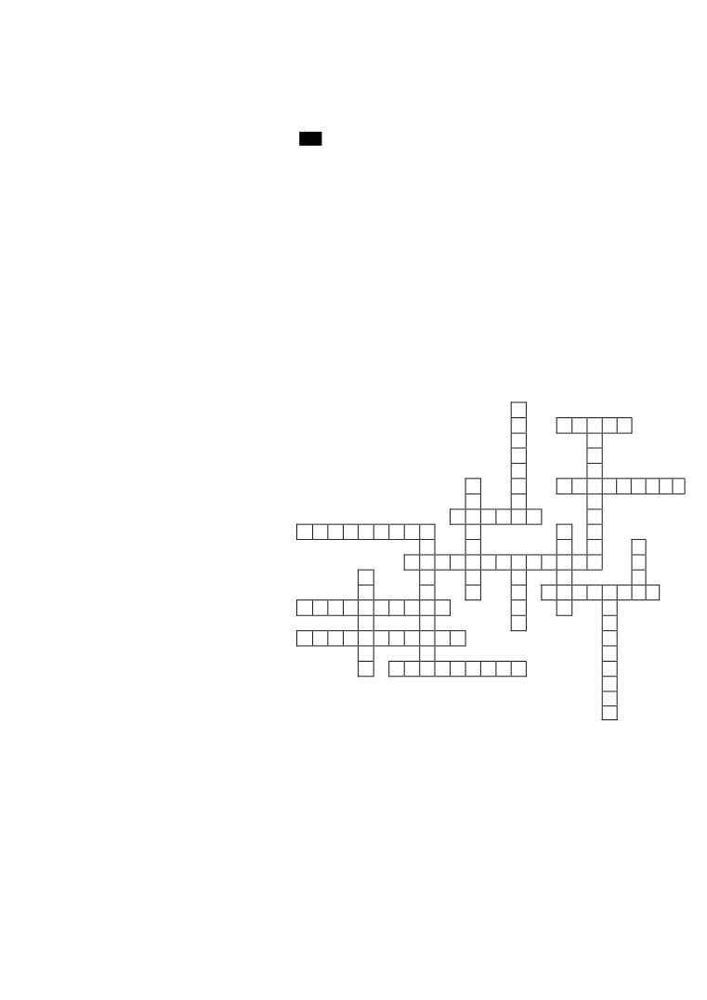
172 FLUENT ENGLISH
17G BRING IT ALL TOGETHER
REVIEW EXERCISE 1: Vocabulary
Across
Down
2. Having little flavor.
1. A dish chosen and served on its own.
5. How the body uses food for energy.
3. Food eaten before the main course.
6. Another word for main course.
4. Unhealthy snacks.
7. Food that remains after a meal.
8. Add some of these for flavor.
11. The body's energy source.
9. Harsh tasting.
14. An uncommon and expensive food.
10. Food that's stimulating.
16. Tasty and appealing.
12. An inexpensive restaurant that serves
17. What's used in a recipe.
a wide range of foods.
18. A main course baked in a pan.
13. Knives, forks and spoons
15. Mixed drinks
1
2
3
4
5
5
7
8
9
10
11
12
13
14
15
16
17
18
REVIEW EXERCISE 2: The Real Conditional in the Present and Future
Complete the sentences with the verbs in parentheses. First use the present
conditional.
1. Students learn best if the teacher (know) ___________ his or her subject well.
Lesson 17: This Diet May Work for You!
173
2.
If Mark stops at the store after work, he always (get) __________ something for
the kids.
3.
You get things very quickly if you (order)__________ them on the Internet.
4.
Jenny always takes aspirin if she (have) __________ a headache.
Now use the future conditional.
5.
If you don't call me before Tuesday, I (call) __________ you.
6.
You'll be hungry if you (not eat) __________ your dinner.
7.
Ken will sleep better if he (drink) __________chamomile tea.
8.
If you don't pull the weeds out of the garden, it (become) ___________ overgrown.
REVIEW EXERCISE 3 The Unreal Conditional in the Present and Future
Complete the sentences with the verbs in parentheses.
1.
If it (rain)__________more, it (be) __________ greener here.
2.
You (be)__________ happy if he (call) __________ .
3.
The windows (look) _________ nicer if you (clean) __________ them.
4.
I (hear) _________ better if you (turn) ___________up the radio.
5.
We (visit)__________ you if we (see)__________ your car in front of your house.
6.
This town (be) _________ better if we (have) __________ wider streets.
7.
If I (be)__________ Jane.l(go) __________ on a diet.
8.
If the neighbors (be) _________ quieter, the children (sleep) __________ at night.
REVIEW EXERCISE 4: The Past Unreal Conditional
Complete the sentences with the past unreal conditional forms of the verbs in
parentheses.
1.
It (be) _________ too late if I (wait) __________ for you to come back.
2.
If Janet (tell) _________ the truth, everyone (not be) ___________upset
with her.
3.
It (rain) _________ by now if the weather report (be) ___________ correct.
4.
The kids (not feel) _________ sluggish and tired if they (eat)___________ more
nutritious food.
5.
The dinner (be)__________ ready if my sister (not call) __________ .
6.
The bookstore (close)__________before this if it (not be) __________ so busy.
7.
I (pay) _________ for the painting by now if I (have) ___________ the money.
8.
If you (hear) _________ his voice, you (love) _________ it.
REVIEW EXERCISE 5: Phrasal Verbs
Fill in the sentences with the following phrasal verbs:
bolt down, chew up, chop up, chow down, come with, cut back, cut up, do without, pig
out, throw together, warm up, work off.
1. At Camp Paloma we _________ at 7:00 P.M., then it's lights out at 10:00 P.M.
174 FLUENT ENGLISH
2. This recipe calls for pieces of fruit to be __________ and arranged in the pan.
3. This apple skin is really tough, so be sure to __________it__________ well before you
swallow it.
4. During Lent, a lot of people__________ something they really like—for example
sweets or coffee—as a gesture of sacrifice.
5. The mashed potatoes got a little cold, so we'll have to __________ them _________
before serving them.
6. Jimmy's always in such a hurry to get to football practice that he ___________
__________his dinner.
7. Does the lasagna _________ anything else, or is it a la carte?
8. I _________ over the holidays, so I gained about five pounds that I've got to lose.
9. For the spaghetti, I'll __________ the tomatoes and onions, and you can look for
the seasonings.
10. If you want to lose weight, try to ___________ on butter and other fatty products.
11. I'll need to get to the gym to ___________that dinner __________ !
12. It's too late to cook. I'll just __________ something __________ .
17H LISTEN UP!
Listen to the information about the Food and Drug Administration dietary guidelines,
and then answer these questions.
1. How many food groups are there in the food pyramid?
2. How many food groups were there in the old guidelines?
3. From which food groups should you eat the most servings?
4. From which food groups should you eat the fewest servings?
5.
What are some of the diseases that might be prevented by following the food
guide pyramid and exercising?
6. Which organization promotes the food guide pyramid?
17I WHY DO THEY DO THAT?
Food Manners
If you've ever been to an American's house for dinner, you may have noticed some
differences in attitudes about offering food. In many countries, if you are having a meal
with others it is considered good manners to reject food when a second serving J is
offered. Once rejected, food is offered and rejected several more times before the guest
finally consents to having seconds. But when dining in an American home, if food is
offered, accept it if you are hungry. If you say "no" and offer the explanation that you've
eaten as much as you can, the food may be offered a second time and then not again.
Americans are straightforward in their manners and usually mean what they say, so if
they are hungry they will accept food when it is offered and will
Lesson 17: This Diet May Work for You!
175
even ask for more if they are still hungry. Although this does not mean that one should eat
more than everyone else, it is perfectly acceptable to be honest about your appetite.
Another food custom to be aware of is that when going to a restaurant with friends,
payment of a meal may be divided among the members of the group so that each person
pays for his or her own meal. This is sometimes called "going Dutch." If one person invites
another to dinner, that person usually pays unless specified prior to the meal. If one
person pays for the other's meal, then usually the other person offers to pay the next time.
It's also common for a group of friends to divide a bill evenly, no matter what each
individual ate or drank. This is usually simply called "splitting the bill."
If you are in a restaurant, it is customary to call the waitperson to your table by either
holding up one hand, by saying "excuse me" when he or she passes the table, or by
catching the eye of the waitperson. Americans consider it very impolite—even downright
obnoxious—to snap one's fingers or whistle for the waitperson, so do not rely on this
method to get an American's attention no matter how acceptable it is in your own culture!
And don't forget that Americans usually tip their waitpersons 15 to 20 percent of the bill. If
they do an especially good job, they could receive even more for their efforts.
Lesson
18
Get Into Shape!
ARE
YOU READY
FOR THE LESSON?
You
learned about
diet and nutrition in Lesson 17,
so you'll learn
about health and
fitness in Lesson 18: Get Into Shape! You'll read a
dialogue with
a health club fitness
expert offering weight loss advice in English at Work. And you'll hear a doctor and
patient discuss diet
and exercise in
Listen Up! You'll also learn some helpful vocabulary,
idioms, and phrasal
verbs on health. In English Under the Hood,
you'll learn:
• Implied Conditionals
• Using wish in Conditionals
• Using would to Make Wishes
Then in Why Do They Do That? you'll learn about
why so many
Americans are
joining
fitness clubs. So let's get started with another pronunciation lesson on linking in
Say It
Clearly!
18A SAY IT CLEARLY!
Turn
on your recording and listen to Say It Clearly! to practice an
important kind
of
linking.
18B ENGLISH AT
WORK
Dialogue: Let Us Design a Fitness Program for
You!
Elvira is having trouble losing weight, so she is considering joining a fitness club. Right
now
she's on the phone with Debbie, a rep from the Day and Night Health Club,
because she wants
to get some information about
what they offer. She also wants to get
some advice about
what kinds of exercise will help her take off the extra pounds. Let's
listen.
Debbie Day and
Night Health Club, the club to
shape you up! How can I
help you?
Elvira
Hi, My name is Elvira Guzmon, and I'm
calling because I'm interested
in
learning
what programs
you have to offer that will help me take off an extra
twenty pounds.
Debbie Well, you've just taken the best first step, because exercise along with
proper diet is known to
be the best way to lose weight. What you need
to do is come in and we'll design a diet and exercise
program that's
right for
you.
Elvira
Well, actually, I'd like some more information before I
take it to the
next level.
Debbie Of course. Well, what we need to do, besides get you
on the right diet,
is to get
you into an exercise program
that includes cardio, strength
training,
and stretching. And we have some good classes for all
of these.
178 FLUENT ENGLISH
Elvira
What is cardio?
Debbie "Cardio" is short for "cardiovascular exercise," which means you work
out hard enough that you increase the oxygen available to your body.
That means that your body can work more efficiently. Cardio exercises
are aerobic exercises—running, stair climbing, dancing, and the like.
Besides helping you control your body fat, cardio along with strength
training and the right diet can give you more energy and tone your
muscles, which actually slims your body. And ...oh, there are so many
other benefits. You'll be more relaxed, you'll sleep better, and your
mood will improve. An exercise program is known to reduce depression
and anxiety, too.
Elvira
Wow! That sounds really good. But I'm really out of shape. I don't think
I'll be able to do all those exercises.
Debbie Well, the key is to start out slowly and build your way up. And if you
think that you might be uncomfortable in classes, you could always
have a personal trainer.
Elvira
What does that mean?
Debbie
A personal trainer is a coach trained to design an exercise program
that's right for you and your fitness level. That way you wouldn't do
more exercise than you're ready for, you won't hurt yourself, and you
won't be discouraged.
Elvira
Hmmm. That sounds good, but it sounds expensive.
Debbie
You might be surprised. Why don't we set up an appointment for you?
An interview won't cost you anything.
Elvira
Well, OK. If it doesn't cost anything...
Debbie
OK. Let's see, how's Friday?
18C BUILD YOUR VOCABULARY
Abs. Abdominal muscles, the muscles below one's chest. Dennis likes to take his shirt
off at the beach and show off his abs.
Addictive. Habit-forming, creating a physical or psychological dependency, as with
smoking, alcohol, caffeine, and certain drugs. It is so hard to quit smoking because
nicotine is highly addictive.
Adrenaline. A chemical substance in the body associated with bursts of speed or
strength. Working out gives Bob an adrenalin rush—he feels full of energy.
Aerobics. Cardiovascular exercise that involves sustained movement to stimulate the
heart. Sarah goes to the gym for an aerobics class every day at lunch, and she's lost
about ten pounds.
Anxiety. Mental uneasiness, intense worry, fear, or concern. Minnie suffered debilitating
anxiety attacks whenever she thought about flying.
Braces. Wires placed on the teeth that are tightened slowly in order to straighten the
teeth over a period of one and a half to three years. Rachel's braces not only
straightened her teeth, they changed her smile, too.
Bruise. An injury where the skin is not broken, but blood vessels are ruptured, causing
a discoloration of the skin. Although Ray looks terrible because of all the bruises he
received, he really wasn't hurt too badly in the car accident.
Lesson 18: Get Into Shape!
179
Crutch. A stick-like device that supports a person who cannot walk, usually held
under the arms. Greta had to use crutches to get around after breaking her ankle.
Duffel Bag. A type of bag typically used to carry athletic clothing or equipment.
Michael always carries his duffel bag to work so he can go to the gym afterwards.
Holistic. An approach that considers an entire person rather than individual parts,
a type of alternative medicine that is concerned with the whole body and mind.
Doug took a holistic approach to getting over his divorce—he started to eat right
and work out, he began to meditate, and he decided to take a Spanish class.
Massage. Using the hands to rub the back or other part of the body for pleasure,
relaxation, or physical therapy. When Rita is stressed she treats herself to a massage.
Obese. Very overweight. There has been an increase in the number of obese children in
the U.S., which many feel is a result of too much junk food and not enough physical
activity.
Push-up. An exercise performed stomach-down on one's hands and toes that
involves pushing oneself up and away from the floor and back again. Push-ups are a
great way to build up chest muscles.
Rash. A breakout of the skin, usually with small red bumps. The first symptom of
measles is a red rash.
Sauna. A type of bath in dry heat to cause perspiration. Valerie loves to sit in the
sauna after working out at her gym.
Sedentary. Not moving much; sitting more than moving. Mabel's sedentary
lifestyle has caused her to gain a lot of weight.
Sit-ups. Abdominal exercises that involve the repeated movement of lying flat on the
floor, then pulling oneself up into a sitting position. Doing sit-ups is a very effective way
to build up abdominal muscles.
Steam room. A type of bath that uses heat and steam. If you have sore muscles,
it's a great idea to sit in the steam room and relax.
Treadmill. A machine with a moving belt upon which a person can walk, jog, or
run. The treadmills are the most popular pieces of cardiovascular equipment at the
gym.
Weight lifting/training. Lifting weights in a repeated motion to strengthen and tone
the muscles of the arms, chest, shoulders, back, or legs. Some men like to bulk up
their bodies by lifting weights.
Yoga. A type of physical and spiritual exercise that involves positioning the body in
various ways. Rick has become much more relaxed and calm since he started doing
yoga.
18D ENGLISH UNDER THE HOOD
TOPIC 1: Implied Conditionals
It is possible to imply rather than state the if clause in a conditional. In these cases it is
common to express the if clause using other words. Take a look at the following
examples.
180 FLUENT ENGLISH
We would have gone to the movies last night, but we had aflat tire.
I couldn't have bought a new car without my parents' help.
Drake left the party early; otherwise, he wouldn't have been able to get up in time for
work this morning.
PRACTICE EXERCISE 1: Rewrite the following conditional sentences as
implied conditionals, following the clues given for each one.
Example: We would have waited for you if we had known you wanted to go.
We would have waited for you but we didn't know you wanted to go.
1.
We would have arrived by now if it hadn't been raining.
We would have arrived by now, but __________ .
2.
I wouldn't have known about your accident if Rosa hadn't told me.
Rosa told me about your accident; otherwise, __________ .
3.
Dan wouldn't have gotten the promotion if you hadn't written such a good
recommendation.
without your recommendation.
4.
I never would have found the table I wanted if I hadn't decided to go to the new
furniture store.
I decided to stop at the new furniture store; otherwise___________ .
5.
We would have bought a new house by now if they weren't so expensive. We
would have bought a new house by now, but _____________ .
6.
Jane wouldn't have come to visit me last week if you hadn't helped her get here.
without your help.
Now try rewriting these sentences with if clauses.
7.
I wouldn't be here tonight without my wife's help.
8.
I ran as fast as I could; otherwise, I wouldn't have made it on time.
9.
I would have made you a cup of tea, but I didn't have any.
10.
Jerry isn't interested in going out with me; otherwise, he would have called me by
now.
TOPIC 2: Using wish in Conditionals
Wish expresses a strong desire, especially for conditions to be different from what
they actually are. You can use wish to express a desire in the present, past, or
future.
For a wish about the present, use wish + simple past, could + base verb or past
continuous. Remember to use were instead of was, though.
/ wish I were taller.
I wish I could go to a movie.
I wish I lived in New York.
Lesson 18: Get Into Shape!
181
/ wish it weren't snowing.
For a wish about the past, use wish + past perfect or wish + could + have + past
participle.
/ wish I had seen him when he was here.
I wish Tanya could have stayed in this city.
For a wish about the future, use were + present participle, were going to + base verb, or
could + base verb.
She wishes she were traveling to China next year.
I wish Delores were going to be there.
I wish I could take a trip next summer.
PRACTICE EXERCISE 2: Write the following sentences using ( wish . . . and the clues
in parentheses.
1.
I can't travel to Paris this spring, (could)
2.
Ralph will not be in town for the holidays, (be going to)
3.
Sarah won't find a new job. (would)
4.
You don't put effort into this job. (would)
5.
I can't buy a new car this year, (could)
6.
It's not going to be sunny this weekend, (be going to)
7.
Mabel doesn't live closer. (I wish ...)
8.
My sister doesn't have a big house. (I wish ...)
TOPIC 3: Using would to Make Wishes
Would after wish conveys a very strong desire—almost pleading—for something to
happen in the future.
/ wish you would stop talking during the movie!
Dimitri's boss wishes he would learn to speak English better.
They wish Tom would get here soon so they can go.
PRACTICE EXERCISE 3: Make wishes about the future using would using
the clues.
1.
Answer the phone. I wish you _________ .
2.
The neighbor's dog keeps barking. I wish the neighbor's dog (stop) __________ .
3.
Isn't anyone going to be home? I wish someone __________.
4.
You need a new computer. _________ get a new computer.
5.
We never go anywhere. _________ go somewhere.
6.
Your radio is too loud, (turn down) __________ your radio.
7.
I don't like the color of this room. I wish you _________ a different color.
8.
The dog needs a bath. I wish you _________ .
182 FLUENT ENGLISH
9. It's been too hot lately. _________ cool down.
10. I'm tired, (find)
_________ a motel soon.
18E PHRASAL VERBS FOR HEALTH AND FITNESS
Blackout.
To lose a part of one's consciousness or memory, to become unconscious. Ted
blacked out after he was hit in the head with the baseball.
Break out.
To have skin eruptions such as acne, especially on the face. Sally was embarrassed
because she broke out right before the big dance.
Bring around/to.
To help someone regain consciousness after blacking out. Here, let's give her these
smelling salts to help bring her around.
Build up.
To increase. The trainer taught me a series of exercises to build up my upper body.
Come down with.
To get sick with the flu, a cold, the measles, etc. / think I must be coming down with a
cold because my nose is running and my throat hurts.
Come to.
To regain consciousness. Dan came to in the hospital two days after the accident.
Flare up.
A recurrence of an old health problem. Every time it rains, my arthritis flares up again.
Pass out.
To lose consciousness temporarily, to faint. Mark passes out whenever he sees blood.
Shape up.
To strengthen and tone the muscles through diet and exercise. Bill's thinking about
joining the army, but if he does he'll have to shape up fast.
Slim down.
To lose weight or body fat, to become slender. American women usually think they
need to slim down.
Throw up.
To vomit. Sonia had morning sickness when she was pregnant and threw up everyday.
Warm up.
To prepare the body for physical activity. You should always warm up before you do
any kind of exercise.
Waste away.
To gradually lose body mass due to sickness. Daniel's father wasted away as he got
sicker and sicker.
Wind down.
To slow down in order to gradually finish something. After doing twenty minutes of
aerobics, it's a good idea to wind down and cool off before stopping completely.
Lesson 18: Get Into Shape!
183
Work out.
To exercise, usually to do an exercise routine. Meg works out at the gym just about every
evening after work.
Work up to.
To start slowly and build oneself up to being able to do something. Larry started out doing
only twenty-five push-ups, but now he has worked up to one hundred-fifty.
18F REAL ENGLISH
You're the Picture of Health!
Why, I haven't seen you in ages! Oh, my, you look absolutely marvelous. You are positively
glowing... the picture of health! What happened? The last time I saw you, you looked like
you were on your last legs. I thought it was only a matter of time before you would meet
your maker. I mean, really, you looked like you were at death's door. But look at you now. I
mean my head is positively spinning! You look as fresh as a daisy, and in the pink! And
you're on your feet, too. What did you do? Did you take it easy? Has your doctor given you
a clean bill of health? Whatever happened, keep it up because you look like a million
dollars.
18G BRING IT ALL TOGETHER
REVIEW EXERCISE 1: Vocabulary
Fill in the sentences with one of the following words.
treadmill, adrenaline, sit-ups, anxiety, aerobic, weight lifting, yoga, holistic, sedentary,
steam room, crutches, addictive, obese, duffel bag
1. Stress and _________ are two psychological conditions that cause sleeplessness.
2. Erik keeps his gym clothes and toiletries in his _________ .
3. Gordon wants to lose fat around his stomach, so he went on a diet and does
every day.
4. If you'd like to do something that's both relaxing and physically challenging, why don't you
take up _________________ ?
5. It's difficult to stop drinking coffee because caffeine is so __________ .
6. Sal used to be very small, but since he started __________ he's become big and
muscular.
7. Usually Laura jogs in the park, but if it's raining she jogs on aat
the gym.
8. If you prefer a
approach to healing, you need to take into consideration all
aspects of your physical and mental condition.
9. Eating poorly and leading a__________ lifestyle can cause serious health risks.
10. Many teachers have noticed a sharp increase in the number of __________ children
and believe that fitness and nutrition need to be stressed more in school and at
home
184 FLUENT ENGLISH
11. There's nothing like sitting in a _________ and relaxing your muscles after a
hard workout.
12. To lose weight, dietary changes are important, but some kind of _________ exercise
is key.
13 I had to walk around on_________ for months after the accident.
14. The body releases ________ to help people flee from dangerous situations.
REVIEW EXERCISE 2: Implied Conditionals
Rewrite the following sentences using if clauses.
1.
Jan would have gone jogging today, but he hurt his toe.
2.
The doctor would have seen you by now, but he had an emergency.
3.
My TV is broken; otherwise, I would have seen you on TV last night.
4.
Ted wouldn't have finished his law degree without your help.
Now rewrite the following sentences by taking out the if clause.
5.
Lettie wouldn't have gone to Mexico if she hadn't made enough money. Lettie
______________ enough money; otherwise, she __________ .
6.
You would have gotten soaked if you hadn't worn your raincoat.
_________ but __________ .
7.
Would you be here today if your parents hadn't met?
Your parents _________ ; otherwise, you _________ .
8.
I wouldn't have stayed awake this long if I hadn't taken a nap.
_________ but I __________ a nap.
REVIEW EXERCISE 3: Using Wish in Conditionals
Complete each of the following sentences.
1.
It's not my birthday today, but I wish it ___________ .
2.
It doesn't rain very much here, but we wish it __________ more.
3.
Dan doesn't go to the gym with his girlfriend, but she wishes he____________ with her
once or twice a week.
4.
Sam didn't bring his coat, but he wishes he ___________it with him.
5.
We can't go out tonight, but I wish we ___________ dancing.
6.
Larry isn't going to come up to the coast with me, but I wish he ___________ with me.
7.
Minnie didn't get a doll for Christmas, but she wishes she ___________one.
8.
Joyce couldn't get the day off, but she wishes she __________the day off.
REVIEW EXERCISE 4: Using would to Make Wishes
Complete each of the following sentences with the correct form of the verb in
parentheses.
1.
I wish you _________ soccer with me tomorrow. (come)
Lesson 18: Get Into Shape!
185
2. Paul's mother wishes
he _________ to play the violin. (learn)
3. I wish
you _________ , or we won't
make it to the theater on time!
(hurry)
4. They
wish their vacation to Chile __________ longer. (last)
5. Dana
and Bart wish
we _________
the new fitness
club with them. (join)
6. Jack
wishes his girlfriend _________ out to dinner.
(go)
7. Danny wishes his physical therapy
_________ results more quickly. (show)
8. We all wish you _________ us the truth. (tell)
REVIEW EXERCISE
5: Phrasal Verbs
Complete each of the following sentences with one
of these words: blacked out, breaking
out, bring around, coming down with, came to, flare
up, passed out,
shape up, slim
down,
threw
up, waste away, wind down,
work out, work up to.
1. When
I _________ ,
I was lying in a
hospital bed, but I don't remember going there.
2. Hugh's memory of the accident is gone; he must have __________
3. Dell
was sick all morning, and then
she finally ____
4. Some
fatal diseases
are very slow, and patients _________ to skin
and bones.
5. Teenagers are often
embarrassed about their faces
__________ .
6. Let's
_________the
party and go to
bed. It's late.
7. Why
don't you try doing some weight lifting if you want to ___________ ?
8. After
Sarah passed
out, her friends
tried slapping her to __________ her __________ .
9. Rain
often causes many health problems, like arthritis and bursitis, to___________ .
0. It takes a while to__________lifting
heavy weights,
so start with something light.
11. Paul looks like he might be __________ something,
so he should go home and rest.
2. Ben donated too much blood, and when he tried to
stand up he almost ____________.
13. Many
people __________ at this gym
in the evenings before going
home.
4. The best way to _________ is to change your diet
and start to exercise.
18H LISTEN UP!
Listen to a discussion about diet and exercise between a patient and a doctor. Then
answer these questions.
1. How
has Mark been
feeling lately?
2. Did any illnesses or
diseases show
up on his blood
tests?
3. What
is Dr. Leads concerned about,
anyway?
4. What
factors does Dr. Leads explain may contribute to fatigue?
5. What
does Dr. Leads
ask about Mark's diet?
6. What
types of food contain fiber?
7. Did Mark stick to going to the gym?
8. How does Dr. Leads suggest he begin a more active lifestyle?
186 FLUENT ENGLISH
18I WHY DO THEY DO THAT?
The Fitness Craze
One thing that many people from other countries seem to notice about the United States is that there
are a lot of overweight people. There's no denying this—many Americans have unhealthy diets, eat
too much food, and have relatively sedentary lifestyles. But, strangely enough, visitors from other
countries may also notice that the U.S. is home to some of the healthiest and most fitness-conscious
people as well. Americans not only love recreational sports and spend time on the weekends playing
baseball or swimming or hiking, but many Americans also go to extra pains to build better bodies
through diet and exercise. Often this includes a regular fitness routine of cardiovascular exercise and
weight training. And this usually means one thing-membership at the local fitness club.
Membership in fitness clubs—usually called "gyms"—is considered essential by many Americans.
And there are good reasons for this. Monthly membership fees are low enough to be accessible to
most people, and with such a membership comes a variety of opportunities to look better, feel better,
stay healthier, and enjoy life more. Gyms offer the basics of weight training and cardiovascular
exercise, but they also offer much more. Gym members can often swim, take dance classes, do
yoga, or even learn about nutrition. Gyms are often open from very early in the morning until very late
at night, and some even offer babysitting or child care facilities. To encourage membership in gyms,
many companies in the U.S. offer their employees discounts or even money back for joining. They
consider the benefits of gym membership very valuable, and they feel that better physical condition
leads to fewer sick days, less money spent on health insurance, and greater productivity. So, it's no
wonder that so many people are joining the fitness craze.
Lesson 18: Answer Key
Practice Exercise 1
1. it was raining, 2. I wouldn't have known (about it), 3. Dan wouldn't have gotten the
promotion, 4. I never would have found the table I wanted. 5. they're so expensive. 6. Jane wouldn't have come
to visit me last week, 7. i wouldn't be here tonight if my wife hadn't helped me. 8. I wouldn't have made it on time
if I hadn't run as fast as I could. 9. I would have made you a cup of tea if I had had some. 10. Jerry would have
called me by now if he were interested in going out with me.
Practice Exercise 2
1. I wish I could travel to Paris this spring. 2. I wish Ralph were going to be in town for the
holidays. 3. I wish Sarah would find a new job. 4. I wish you would put effort into this job. 5. I wish I could buy a new
car this year. 6. I wish it were going to be sunny this weekend. 7. I wish Mabel lived closer. 8. I wish my sister
had a bigger house.
Practice Exercise 3
1. would answer the phone, 2. would stop barking, 3. were going to be home, 4. I wish you
would, 5. I wish we would, 6. I wish you would turn, 7. would paint it, 8. would bathe the dog/give the dog a bath,
9. I wish it would, 10. I wish we would find.
Review Exercise 1
1. anxiety, 2. duffel bag, 3. sit-ups, 4. yoga, 5. addictive, 6. weight lifting, 7. treadmill, 8. holistic,
9. sedentary, 10. obese, 11. steam room, 12. aerobic, 13. crutches, 14. adrenaline
Review Exercise 2
1. Jan would have gone jogging today if he hadn't hurt his toe. 2. The doctor would have seen
you by now if he hadn't had an emergency. 3. If my TV hadn't been broken, I would have seen you on TV last night.
4. Ted wouldn't have finished his law degree if you hadn't helped him. 5. made .. . wouldn't have gone to Mexico,
6. You would have gotten soaked ... you wore your raincoat, 7. met.. . wouldn't be here today, 8. I wouldn't have
stayed awake this long.. I took a nap.
Lesson 18: Get Into Shape!
187
Review Exercise 3
1. were, 2. rained, 3. went, 4. had brought, 5. could go, 6. were going to come, 7. had gotten,
8. could have gotten
Review Exercise 4
1. would play, 2. would learn, 3. would hurry, 4. would last, 5. would join, 6. would go, 7. would
show, 8. would tell
Review Exercise 5
1. came to, 2. blacked out, 3. threw up 4. waste away 5. breaking out 6. wind down, 7. shape up,
8. bring . .around,9.flare up, 10. work up to, 11. coming down with, 12. passed out, 13. work out, 14.
slim down
Listen Up!
1. Tired, exhausted. 2. No. 3. High cholesterol. 4. Stress, sleeping patterns, diet, lack of exercise.
5. If he gets a lot of fiber. 6. Grains, oats, certain cereals, fruits, vegetables. 7. No. 8. Start slowly by
walking, climbing stairs, going swimming.
Lesson 19
911, Emergency!
ARE YOU READY FOR THE LESSON?
If you want to know how to handle emergencies in the United States, then you may find
Lesson 19:911, Emergency! helpful. You'll read a dialogue about visiting the emergency
room in English at Work. You'll also hear a 911 operator help a woman whose child is
choking in Listen Up! You'll also be learning some important vocabulary and phrasal
verbs related to emergencies. Plus,you'll learn:
• Indirect Objects as Passive Subjects
• The Stative Passive
• Common Uses of get
And that's not all. You'll learn some idioms about accidents in English for the Real
World, and you'll read about H.M.O.'s vs. the family doctor in Why Do They Do That? So
let's get started by learning about words with silent sounds in Say It Clearly!
19A SAY IT CLEARLY!
Turn on your recording to practice another way to help your pronunciation
sound natural.
19B ENGLISH AT WORK
Dialogue: Isn't This an Emergency?
Korin Smiley has brought her 80-year-old mother, Maggie Woods, to the hospital
emergency room after Mrs. Woods fell down her front stairs and hurt her shoulder. They
have already met with the admitting nurse, who got a wheelchair for Mrs. Woods and
told them to wait in the waiting room. They have been waiting to see the doctor for close
to forty minutes, and Korin is starting to get irritated.
Korin
I don't understand. We've been waiting for nearly forty minutes. Isn't
this an emergency? I wonder how long accident victims have to wait to
see a doctor!
Mrs. Woods Well... I'm sure there are more serious cases here. I'm just in a
little pain.
Korin
Mom, stop being so stoic. You really took a tumble.
Mrs. Woods
I suppose so. It does hurt quite a bit, and I can't move my arm at all. I'm
starting to feel a bit odd.
Korin
Are you going to pass out? That does it! I'm going to go see how much
longer we have to wait.
After a few minutes...
Korin
Well, when I told them you were about to pass out, the nurse said she'd
take us right in. Here, let me push you back there. You look really pale.
Lesson 19: 911, Emergency!
189
Nurse
Here you are; you can go in room 3. See if you can get her in this gown.
The doctor will see you next, Mrs. Woods. Just hold on a little
longer.
Korin
OK, Mom.
Mrs. Woods
Ooh, it's hard to move.
A few minutes later...
Dr. Barat
Hello, I'm Doctor Barat. What happened here?
Mrs. Woods
Well, I was climbing the stairs to my porch, and I must have lost my
balance or something.
Korin
She fell from the fourth or fifth step as far as I can tell. She landed
on her shoulder and she's been in a lot of pain. I think she almost
passed out in the waiting room.
Dr. Barat
I apologize again for the wait. We've had our hands a bit full this
afternoon, after a pretty bad accident involving a few cars. But we
don't want you to be in any pain, Mrs. Woods. Let's take a look at
that shoulder.
Mrs. Woods
Oh, I feel silly taking your attention away from serious accidents.
Dr. Barat
This is a serious accident. A fall at your age can be serious.
Korin
Do you think it's broken?
Dr. Barat
It might be. Was there anything to break your fall, Mrs. Woods?
Mrs. Woods
Well, there used to be a lovely bush, but we had to get rid of it a few
years ago when the foundation needed some work.
Korin
So, no, it was just a grassy patch that she fell on.
Dr. Barat
Yes, a tumble from a height of a few feet, nothing to break your fall...
It looks like your shoulder might be broken, Mrs. Woods. We'll need
to get an X-ray to be sure. If it is broken, we can't put a cast on it;
you'll have to keep your arm in a special sling. And I'll give you a
prescription for a painkiller. Here. You can take her down to the lab
for an X-ray. The pharmacy is right next to the lab, so you can get
this prescription filled while you're waiting. Take one immediately,
Mrs. Woods. It should last about four hours, and you'll feel much
better.
Korin
How often can she take them?
Dr. Barat
One every four hours or so, but no more than six in one day. OK?
You'll need to see your regular doctor in a couple of days, and call
me here at this number if the pain doesn't get better or if you have
any other problems.
Mrs. Wood
Thanks.
Korin
Thank you, Doctor. Just point me in the right direction.
Dr. Barat
Oh, I'll get someone to help you with the wheelchair. The aide will
show you where to go.
19C BUILD YOUR VOCABULARY
Atherosclerosis. Buildup of fatty deposits and blood platelets on the wall of the arteries,
which forms plaques that slowly block the flow of blood. A proper diet and exercise
regimen can reduce the risk of atherosclerosis.
Bandage. A strip of fabric used to bind wounds. Recently scientists have made
remarkable improvements in the effectiveness of bandages.
190 FLUENT ENGLISH
Bleed. The action of blood exiting the body through a cut or wound. Many people
involved in the traffic accident on I-5 were bleeding and needed medical
assistance.
Cast. A plaster shell used to bind broken bones, often made of plaster that forms
a hard shell around the area of the broken bone. When Arend broke his arm
skateboarding he had a plaster cast to keep the bones from moving while they
healed.
Choke. The action resulting from a blockage of the windpipe, such as by food. If
someone chokes, it's important to know the Heimlich maneuver, which forces air from
the lungs to dislodge anything caught in the throat.
C. P. R. Cardiopulmonary resuscitation, a technique used to help restore normal
breathing by breathing air into the lungs and by placing pressure on the chest. C.
P. R. can be an effective method of helping restart breathing in victims who need
emergency assistance.
Defibrillator. An electronic device used to restore a normal heartbeat through electric
shock. More and more lives are being saved because places like shopping centers and
movie theaters are installing defibrillators.
Drown. To be suffocated by water filling the lungs. Lifeguards have a big job every
summer rescuing people from drowning in the ocean.
Fracture. A breaking of bones. The accident left the driver with several fractures
in his legs.
Heart attack. The result of an insufficient oxygen supply to the heart. Although heart
attacks are a leading cause of death in the United States, many victims wait up to three
hours before seeking help for symptoms of a heart attack.
Intoxication. An abnormal state that is essentially a kind of poisoning caused by
an excess of drugs or alcohol. Intoxication while driving often results in a car
accident.
Paramedics. Workers trained to give emergency medical treatment before or during
transportation to a hospital. When the paramedics arrived, they immediately began
performing CPR on the heart attack victim.
Pulse. A regular throbbing felt in the veins and caused by the contraction of the heart
as it pumps blood through the body, especially noticeable in the wrist or neck. After the
man fainted, the paramedics first checked his pulse to be sure it was not too weak.
Sling. A hanging bandage used to hold the arm in place in case of a broken bone or
sprain. When Ann broke her shoulder, the doctor put her arm in a sling rather than a
cast.
Stroke. An interruption of the blood supply to the brain, resulting in damaged brain
tissue. Mrs. Carpenter had a stroke and lost her ability to speak for a while.
Tourniquet. A device, usually a bandage, twisted with a stick that cuts off blood supply
through constriction and is used to stop heavy bleeding. The paramedics applied a
tourniquet to the patient's arm to temporarily stop the heavy bleeding.
Wound. An open cut or sore on the skin. Keep the wound clean and use an
antibiotic cream in order to prevent infection.
Lesson 19: 911, Emergencyl
191
19D ENGLISH UNDER THE HOOD
TOPIC 1: Indirect Objects as Passive Subjects
As you've already seen, in a normal passive construction, a direct object becomes a
subject.
Active
The paramedics gave the man CPR.
Passive
CPR was given to the man by the paramedics.
But there's another passive construction in English that allows the indirect object— the
receiver of the action—to become a subject.
Indirect Passive
The man was given CPR by the paramedics.
Notice that the verb is the same as in a regular passive constructions form of to be and the
past participle. And as with the "regular" passive, it is not necessary to introduce the agent
with by.
A bank teller was handed a note with the words "Give me the money!"
Jerry was shown the way out.
Not all verbs can accept indirect objects as the subject in a passive construction. Here
are some of the more common ones: give, write, hand, read, show, teach, tell, sell, send,
lend, pass, ask, charge, offer, introduce.
PRACTICE EXERCISE 1: Rewrite each sentence as an indirect passive
construction.
1.
Teena gave the Heimlich to one of the restaurant's guests.
2.
Juan taught Denny Mexican cooking.
3.
The teacher handed the students their papers.
4.
Caroline sends memos to everyone.
5.
The teacher read Moby Dick to the class.
6.
The nurse brought the doctor the patient's chart.
7.
Gordon passed the ball to Bill.
8. Didn't your mother tell you to eat your broccoli?
9. Annie sells gold jewelry to her friends.
10. Has the refund department sent me the check yet?
TOPIC 2: The Stative Passive
In the Stative passive, an existing state or condition is described with a past participle
used as an adjective. The Stative passive gives a description of something that is the
consequence of an action that happened previously.
When we went out to the car we saw that the window was broken. (Someone had already
broken the window before we saw it.)
This dress is made of cotton. (At some point, someone made the dress.)
Don't worry, the dishes are already washed. (I washed them for you an hour ago.)
192 FLUENT ENGLISH
The agent (expressed with by in passive constructions) is never named in the
Stative passive.
PRACTICE EXERCISE 2: Complete the following sentences using the Stative
passive of the verbs given in parentheses. Watch out for clues about which tense to
use.
1. He (confuse) _________ about the party; it's not tonight, it's next week.
2. It (crowd) _________ in here. Let's go!
3. All the money (spend) __________on our vacation last month.
4. The milk (spoil) _________ , so I threw it away.
5. Larry and Myra (divorce) _________ since last year.
6. Many of the accident victims (burn) ___________ rather seriously.
7. Mel, your shirt (button) ___________wrong.
8. I thought you were home since the lights (turn)____________on.
9. I don't think the computer (plug) ___________in.
10. Francis fell and broke her hip because the floor (wax) __________ earlier that day.
TOPIC 3: Common Uses of get
The verb get is used in many different ways in English. Its most common meaning is
"to receive" or "to obtain," and it is often used with nouns.
The shopping center got a portable defibrillator for emergency use.
Can you get milk and bread at the store on your way home tonight?
If get is used with certain adjectives, it means "to become."
Frank got very pale right before he passed out.
The sky got terribly dark and it started to pour.
Get can be used with an infinitive to mean "have the opportunity" or "have the
chance" to do something.
Jack wasn't hurt after his accident, but he was excited that he got to ride in
an ambulance.
With the kids away at camp, John and Sarah will get to spend time alone.
Get can be used instead of be with a past participle in passive constructions,
especially in spoken English.
My new pants got torn! (My new pants were torn!)
Jim got arrested for drunk driving. (Jim was arrested for drunk driving.)
Get can also be used with past participles to suggest "taking an action through to
completion," or "achieving a certain result."
We'll get all our work done before it's time to go home.
You'd better get this room cleaned up before dinner, kids!
Another very common use of get is in what's called the "causative." You can use get
Lesson 19: 911, Emergency!
193
with an infinitive to show that someone caused an action to happen through
convincing or persuasion, rather than doing that action him or herself.
The kids got their parents to take them to the amusement park after a lot of
begging.
I couldn't do it alone, so I got my friends to come help me paint.
PRACTICE EXERCISE 3: Use an appropriate form of get.
1. Dad said we _________ to go to a movie this coming Saturday.
2. Jane usually _________ tired after a long hard day at work.
3. Rosie _________ taken to the hospital after she fell and broke her arm.
4. Elena finally _________ her husband to buy them a new car.
5. I hope you haven't __________too sleepy to drive home tonight!
6. Gretchen and Steve __________married last June.
7. Jenny _________ to stay at her grandmother's house for a whole week.
8. The class _________ the teacher to postpone the test for a few days.
9. Ed drank too much last night and __________ too drunk to drive home.
10. I worried when you don't _________________ home on time.
19E PHRASAL VERBS RELATED TO EMERGENCIES
Check in/into.
To be registered and admitted into a hotel, conference, hospital, etc. Everyone must check
in when waiting for services in the emergency room.
Check out.
To leave a place where one has been admitted through registration. Upon leaving the
hospital you are required to check out.
Check up on.
To look at the progress of someone or something. The doctor goes around and checks up
on his patients in the hospital at least once a day.
Cover up.
To hide; to put a blanket over someone. When someone is in shock it is a good idea to
cover them up to keep them warm.
Fall down.
To trip over something or lose one's balance and land on the ground. Nat fell down and
broke his arm a few days ago.
Keep up.
To continue doing something at the same speed or level without interruption. If you don't
keep up your physical therapy, you may never regain the full use of your arm.
Keep on.
To continue to do something. If you keep on drinking alcohol so often, you're going to have
problems.
194 FLUENT ENGLISH
Knock out.
To cause someone to lose consciousness. Rocky was knocked out by the world-
champion boxer in the first round.
Pass out.
To lose consciousness. Dmitiri passed out when the ball hit him on the head.
Rest up.
To regain energy by relaxing. Be sure to rest up before the marathon.
Run over.
To hit someone with a car, truck, or other moving vehicle. The old woman was run over
by a taxi as she tried to cross the street.
Slow down.
To decrease speed or activity. The doctor says I have to slow down and relax a
little more.
Take care of.
To administer care for someone who is sick. When Mr. Lange got sick, Mrs. Lange
took care of him for several years before he died.
Wear off.
To gradually lose potency; to gradually subside. After getting her teeth worked on, Bev
likes to drink a cup of coffee to help the novocaine wear off faster.
19F REAL ENGLISH
Keep Your Cool!
Have you ever been in a car accident? Everything seems to happen in slow motion.
Your life passes before your eyes when you think you're at death's door and not long for
this world. When it's all over, it's really hard to keep your cool because that accident was
just too close for comfort You're probably in shock so you're kind of out of it even if you
don't pass out from fright. So take my advice, if you want to live to see tomorrow, buckle
up and slow down next time you're on the highway, or it might not be a close call.
19G BRING IT ALL TOGETHER
REVIEW EXERCISE 1: Vocabulary
Complete each of the following sentences with one of these words: atherosclerosis,
bandages, bleeding, cast, choking, C. P. R., defibrillator, drowned, fractured, heart
attack, intoxication, paramedics, pulse, sling, stroke, tourniquet, wound.
1. When Alison was pulled out of the pool, the lifeguard began ___________immediately.
2. Jack fell during a basketball game and ended up with a __________ finger.
3. Mel's arm was so badly burned that it became an ugly open___________ .
4. To stop or slow the blood flow, apply a __________to the wound.
5. Mr. Ramirez had a massive _________ . He's in the hospital, but he may not survive.
Lesson 19: 911, Emergency!
195
6.
It looks like you nicked yourself shaving. Your face is cut and __________
7.
Remember to use a _______ to keep your arm from moving too much.
8.
Even though the paramedics used a _________ on the accident victim, they were
unable to get his heart working again, so he did not survive.
9.
When you exercise hard, check your__________ every few minutes to be sure you are
not overworking.
10.
Someone call 911. This man is _________ on something he ate.
11.
More traffic accidents are caused by _________ than by anything else.
12.
You probably won't do much dancing with your leg in a ___________ .
13.
You can lower your risk of__________ by changing your diet and exercising.
14.
A _________ victim can be left with the inability to speak, read and write, or walk.
15.
Did you hear about the child that __________ but came back to life several
hours later?
16.
When the__________ arrived, they quickly administered some basic first aid and
brought Mrs. Zhou out of her swoon.
17.
Every household should have several varieties of available in case of
an accident.
REVIEW EXERCISE 2: Indirect Objects as Passive Subjects
Make the indirect object the passive subject in the following sentences. Do not use
the agent.
1.
Jim lent me his car for a few days.
2.
Hedy passed a note to Reg during class.
3.
The paramedics asked the woman many questions to keep her conscious.
4.
The parking lot charges customers a fee for parking.
5.
My boss offered me a better position.
6.
Dana introduced her mother to Erik.
7.
Tanya gave Letty a dog for her birthday.
8.
Joe read the children a story every night.
REVIEW EXERCISE 3: The Stative Passive
Use the stative passive of the verbs given in each sentence.
1. A lot of nice houses (burn) _________ to the ground in the last big fire.
2. Did you know that your dress (tear) __________ ?
3. The meeting (schedule) _________ for 3:00 PM today, but we had to change
the time.
4. The clothes (fold) _________ , so you don't have to do it.
5. The needle (stick) _________ on the compass; I think it's broken.
6. Hank's leg (break) _________ before his vacation even began.
7. This carpet (soil) _________ , so we need to get it cleaned.
8. I hope you know how to fix drains because the kitchen sink (plug up) ___________.
196 FLUENT ENGLISH
REVIEW EXERCISE 4: Common Uses of get
Rewrite the following sentences using get. Change the underlined portions.
1.
You'd better make yourself busy, because the boss is coming.
2.
I called you as soon as I finished with my dinner.
3.
No one has the chance to go swimming this year because of dangerous tides.
4.
Everyone will have an opportunity to try out the new computer.
5.
The nurse took a needle from the cabinet and gave the patient an injection.
6.
Drake returned home after four days in the hospital.
7.
I can't believe he persuaded me to loan him some money!
8.
Joan becomes tired easily since she's on chemotherapy.
REVIEW EXERCISE 5: Phrasal Verbs
Complete each of the following sentences with one of these words: check into, check
out, check up on, cover up, fell down, keep up, keep on, knocked out, rest up, run over, slow
down, take care of, wear off.
1.
I'm waiting for the doctor to release me so that lean____________ of here.
2.
I _________ at work and broke my leg.
3.
The anesthetic is starting to __________ , and I'm starting to feel some pain.
4.
If you don't__________ your exercise program you'll gain some weight.
5.
It always takes a long time to __________ the hospital when you go to the emergency
room first.
6.
Everyone needs to__________ and relax in order to release tension.
7.
Be sure to _________ over the holidays so that you can feel better soon.
8.
If you need me to, I can__________ you while you're recuperating from surgery
9.
We'll need to hire a nurse to __________ Mother when she gets home from
the hospital.
10.
You need to be very careful with your medications in order to ___________ your health.
11.
A softball hit your son on the head and ___________ him __________.
12.
Nurse, could you please _________ my feet? They're getting cold.
13.
Did you hear that the neighbor got __________ and is in the emergency room right now?
19H LISTEN UP!
Turn on your recording to listen to a 911 call. Then answer the following questions
1.
What is wrong with the woman's son?
2. What caused this?
3. Is the boy unconscious?
4. Who does the 911 operator send to the woman?
5. What does the operator tell the woman how to do?
Lessson 19: 911, Emergency!
197
19I WHY DO THEY DO THAT?
HMOs vs. the Family Doctor
Health care in the U.S. has changed dramatically over the last 20 or 30 years. Perhaps
the most notable change has been the steadily rising costs associated with it, and these
costs have prompted a number of other changes. Years ago, for example, people went to
their family doctors for just about everything. Sometimes the family doctor would even
make house calls, which meant that if a patient was too sick to go to the doctor, the doctor
went to the patient's home. But nowadays, except for in some very rural areas, doctors no
longer make house calls. And in fact, the idea of a"family doctor" isn't the norm for most
people, as most Americans have to rely on their jobs to provide them with health
insurance to cover the costs of even basic healthcare. Therefore, the family doctor has in
many cases been replaced by a healthcare provider who participates in the particular
medical plan offered by a person's employer.
Most insured Americans are covered by what's called an HMO, or a health maintenance
organization. Companies contract with HMOs to organize and control medical treatment
for their employees, and most HMOs have approved lists of doctors who participate in
their medical plans. So, a person who works for Company X will have his or her medical
care managed by HMO Y, and that person will be able to choose Doctor Z from a list
maintained by the HMO. Does that sound a bit, well, cold and impersonal? Many people
feel that it is, especially when compared to the family doctor of years ago, who treated
every member of a family, and perhaps even several generations in a family, with
familiarity and personal warmth.
It's probably safest to say that there are good things and bad things when it comes to
HMOs. On the bad side, there's a lot of paperwork, there's a narrower range of choice
among doctors, doctors' visits are often cold and impersonal, and medical procedures are
subject to approval by the HMO for full coverage — and that approval process seems at
times to value cost cutting above high-quality healthcare. But on the good side, HMOs are
one way to help control the soaring costs of medical care in the U.S., they offer
companies a cost-conscious way of providing health coverage to their employees, and in
the end, their cost-consciousness may help cut down on unnecessary medical
procedures, which in the absence of an HMO would have cost the individual patient a
great deal of money. In the end there's no easy way to compare today's time of HMOs to
the time of the family doctor; too many factors have changed in healthcare and in
American society in general. But there's no denying that many Americans are less than
satisfied with healthcare in the United States, and perhaps a better solution to the problem
of meeting such basic needs of American citizens has yet to emerge.
Lesson 19: Answer Key
Practice Exercise 1
1. One of the restaurant's guests was given the Heimlich (by Teena). 2. Denny was taught
Mexican cooking (by Juan). 3. The students were handed their papers (by the teacher). 4.
Everyone is sent memos (by Caroline). 5. The class was read Moby Dick (by the teacher). 6. The
doctor was brought the patient's chart (by the nurse). 7. Bill was passed the ball (by Gordon). 8.
Weren't you told to eat your broccoli (by your mother)? 9. Her friends are sold gold jewelry (by
Annie). 10. Have i been sent the check (by the the refund department) yet?
Practice Exercise 2
1. is confused, 2. is crowded, 3. was spent, 4. was spoiled, 5. have been divorced, 6. were/are
burned, 7. is buttoned, 8. were turned, 9. is plugged, 10. had been waxed
198 FLUENT ENGLISH
Practice Exercise 3
1. get/will get, 2. gets, 3. got, 4. got, 5. gotten, 6. got, 7. gets, 8. got, 9. got, 10. get... get
Review Exercise 1
1. C. P. R., 2. fractured, 3. wound, 4. tourniquet, 5. heart attack, 6. bleeding, 7. sling, 8. defibrillator
9. pulse, 10. choking, 11. intoxication, 12. cast, 13. atherosclerosis, 14. stroke, 15. drowned,
16. paramedics, 17. bandages
Review Exercise 2
1. I was lent Jim's car for a few days. 2. Reg was passed a note during class. 3. The woman was
asked many questions to keep her conscious. 4. Customers are charged a fee for parking. 5.
I was offered a better position. 6. Erik was introduced to Dana's mother. 7. Letty was given a
dog for her birthday. 8. The children are read a story every night.
Review Exercise 3
1. were burned, 2.was/is torn, 3.was/had been scheduled, 4.are/have been folded, 5. is stuck,
6. was/had been broken, 7. is soiled, 8. is plugged up
Review Exercise 4
1. You'd better get busy, because the boss is coming. 2. I called you as soon as I got done with
my dinner. 3. No one gets to go swimming this year because of dangerous tides. 4. Everyone
will get to try out the new computer. 5. The nurse got a needle from the cabinet and gave the
patient an injection. 6. Drake got home after four days In the hospital. 7. I can't believe he got
me to loan him some money! 8. Joan gets tired easily since she's on chemotherapy.
Review Exercise 5
1. check out, 2. fell down, 3. wear off, 4. keep on, 5. check into, 6. slow down, 7. rest up, 8. check
up on, 9. take care of, 10. keep up, 11. knocked ... out, 12. cover up, 13. run over
Listen Up!
1. He's choking. 2. A piece of candy. 3. No. 4. The paramedics. 5. The Heimlich maneuver.
Lesson
20
Just Shooting the Breeze
ARE YOU READY FOR THE LESSON?
If you're interested in
learning about
how Americans
interact with friends and neighbors,
then Lesson 20. Just
Shooting the Breeze will help you know more.
You'll hear a
dialogue between two
neighbors discussing a block
party, and you'll also hear a story
about
how communities come together to help one another. The vocabulary in this
lesson
is about friends, acquaintances, and community. Here are a
few more topics in
this lesson:
• Participial adjectives
• Verbs
of perception
• Reflexive pronouns
• Phrasal verbs with
get
• Idioms about friendship and dating
In another reading, Why Do They Do
That?, you'll read about the significance of facial
expressions and body
language. Now let's get started by learning about English
intonation in Say It Clearly!
20A SAY IT CLEARLY!
One
of the most important elements in the natural pronunciation of any language is
its intonation. Turn
on your recording to practice
some intonation patterns typical of
American English.
20B ENGLISH AT
WORK
Dialogue: A Block
Party
Let's listen as Gabby calls Annie,
her neighbor, on the phone to
talk about
an upcoming block
party that's been organized in
their neighborhood.
Annie
Hello?
Cabby
Hi, Annie. This is Gabby. How are you?
Annie
Gabby! Hi! I'm doing
well. What's going on? I haven't talked to you
for ages.
Gabby
I know. I've just been
so busy with
my kids.
Annie
I know
what you mean. How's Lillie
doing?
Gabby
Oh, she's doing great. She's applying for college
right now. She's
really
been pushing herself. How about Trent?
Annie
The same. He just took his SATs, so he's looking
around right now.
He's
not sure whether he
wants to stay
close by for college or go far
away.
Gabby
Yeah, that's always a
big question.
Listen, Annie.
We're going to have
a block
party on the
23rd; can you come? Annie Oh, I'd love to. What
should I bring? Where is it?
200 FLUENT ENGLISH
Gabby
It's going to be in the park. Yeah, it's a potluck, so you can bring a
main dish or salad, if you like.
Annie
Oh, I have a great salad recipe that I made up myself. I'll bring
salad.
Gabby
Good. I'm going to bring homemade bread. But I'm not making it
myself. My mother's making it for me.
Annie
So are we going to do anything else besides eat and socialize?
Gabby
Yeah. We've got some games planned. You know, things like a
three-legged race, horseshoes, Frisbee throwing, maybe we'll get
a baseball game going, stuff like that.
Annie
A three-legged race? I haven't done that since high school. But it
all sounds so fun. What a great way to get to know some of the
neighbors we don't already know!
Gabby
And we're going to have a no-host coffee bar.
Annie
A no-host coffee bar? Oh, I love it!
Gabby
I know. Isn't it a great idea? Oh, and there's a band, a salsa band,
so there'll be some dancing.
Annie
A salsa band? I don't know how to dance. I'll just watch
everybody else dance.
Gabby
Don't worry. We got a teacher to come and teach us. We're also
going to have a karaoke machine, so we can listen to people sing.
Do you like to sing?
Annie
Oh, no. I can't carry a note at all. I'm a pretty boring singer. What
about you? Can you sing?
Gabby
I don't think so, but other people say I can. Maybe the karaoke
machine will help me see if I really can ...Oh, I just remembered.
There's going to be someone photographing everybody so we can
buy pictures if we want to. It should be a good time all around. I
think we're going to enjoy ourselves a lot.
Annie
I love this neighborhood! It's such a fun place to live.
20C BUILD YOUR VOCABULARY
Acquaintance A person who is known to you but who is not close enough to be a
friend. Nora and Annie work together but are not close enough to befriends; they are
only acquaintances.
Block party. A party organized by and for people who live on the same block or in the
same community. It's Tina and Larry's turn to put together the block party this year.
City Council. A body of elected officials who help govern a tity. John Hartley is running
for city council as someone who wants to improve neighborhoods.
Community. A group of people who share some aspect of their identities; a
neighborhood, a religion, an ethnicity, etc. There is a large Ethiopian community in this
city, so there are a lot of great Ethiopian restaurants.
Confidant. An intimate and trustworthy friend to share secrets with. Jenny always
found solace in talking to her best friend and confidant.
Congenial. Pleasant, agreeable, compatible. The relationship between the Drummond
sisters was congenial.
Lesson 20: Just Shooting the Breeze
201
Courtesy. Considerate behavior, good manners, politeness. It's important to show
courtesy and call before visiting a friend or neighbor.
Dinner party. A party among friends, coworkers, or other associates that revolves around
dinner, usually cooked by a host at his or her home. Eleanor loves giving formal dinner
parties because she likes to show off all her nice crystal, china, and silverware.
Fair-weather friend. Someone who is friendly when things are going well but who does
not show friendship during difficult times. Andy was a great friend until I started having
financial problems-now I never see this fair-weather friend.
Familiarity. Friendship, a feeling of knowing someone well, lack of formality in a
relationship. The feeling of familiarity is one reason Sara and Jenny have remained close
friends for so many years.
Fraternize. To mingle as brothers, to associate or interact closely with others. Lately,
Dale's been fraternizing with the kids at the local YMCA.
Kindred. A group of people who are related, or who have a similar nature. People who
love art are kindred spirits, because they understand one another so well.
Neighborhood watch. An organization set up in neighborhoods where neighbors watch
over one another's property by being alert to potential thieves. Because of the
neighborhood watch program, a burglary was averted when the next-door neighbor called
the police.
Neighborly. Friendly, helpful, congenial, amicable. The people in small towns are very
neighborly, bringing cookies or casseroles to welcome new people into town.
Newcomer. Someone who is new to an area. Since they are newcomers, Paul and
Brenda don't know many people in town.
Potluck. A party where everyone brings a dish of food to share with everyone else. Block
parties are usually potlucks because it would be too expensive for one person to feed
everyone.
Sociable. Enjoying being with and interacting with people. Tom's really sociable
tonight; he's been talking to everybody.
Street fair. A neighborhood party that usually involves live music, food, and crafts for sale.
The Adams Avenue street fairs have become a tradition every spring and fall.
20D ENGLISH UNDER THE HOOD
TOPIC 1: Participial Adjectives
Both the present participle and the past participle can be used as adjectives, but they
have different meanings. The present participle, which is an -ing form of the verb, is active
and describes an action that is happening during the time of the sentence.
There is a wonderful smell of baking bread in the air. (The bread is baking at this
moment.)
A very damaging storm passed through the area. (It caused a lot of damage.)
/ love the smell of brewing coffee. (I love to smell coffee while it is brewing.)
202 FLUENT ENGLISH
The past participle, which is the -ed form of regular verbs but may also bean irregular
form, is a passive adjective that describes something that happened to the noun it
modifies.
Samantha brought freshly baked bread to the dinner party. (She, or someone else, had
baked the bread before the party.)
We saw many damaged houses after the storm. (The houses had been damaged by the
storm.)
There's some freshly brewed coffee for you. (The coffee has been brewed already.)
PRACTICE EXERCISE 1: Complete each sentence with the correct participial
adjective of the verb given in parentheses.
1. This is a really _________ movie. (bore)
2. Jerry looked really _________ at the party last night. (bore)
3. The elevator was very _________ this morning. (crowd)
4. There were _________ cups all over the floor after the party. (break)
5. The neighbors are playing loud and __________ music. (annoy)
6. We'll need to hire someone to fix the __________ wall. (crack)
7. My friends told some __________ jokes, (embarrass)
8. My little sister was always a __________ child. (frighten)
9. All the runners were absolutely __________ after the marathon. (exhaust)
10. Climbing the mountain was a
adventure. (thrill)
TOPIC 2: Verbs of Perception
Verbs that describe how a person perceives or senses actions or events are called
"verbs of perception."The most common ones are: see, look at, watch, observe, notice,
hear, listen to, feel, taste, smell.
They can be followed either by the base form of a verb or the -ing form. As a general
rule of thumb, it's more natural to use the -ing form to emphasize something that is or
was happening during the time of perception, or to emphasize that the action is a
process and lasts over a period of time. The base verb form, on the other hand, is often
used to make a general statement or to show that the action happens once or quickly.
However, in practice, these forms are often interchangeable.
/ saw John riding his bicycle to work the other day.
I always see John ride his bicycle to work in the morning.
Mary listened to my friends singing in a karaoke bar last night.
She had never listened to anyone sing so poorly.
Sarah feels something crawling across her foot.
Sarah hates to feel something crawl across her foot.
Also, in general, only the -ing form is used with smell.
Do you smell something burning?
Lesson 20: Just Shooting the Breeze
203
PRACTICE EXERCISE 2: Complete each sentence with the verb in parentheses.
Follow the general rule of thumb to choose which form to use.
1.
Did you see anyone (photograph) __________ people at the event?
2.
Marilyn noticed Jake (talk) _________ to another woman.
3.
The teacher always watches her students (take) __________ the exam.
4.
Look at everyone (dance) _________ !
5.
I have never observed anyone (work) _________ on the house.
6.
Does anyone hear the birds (sing) _________ ?
7.
We always listen to reporters (interview) __________ the president.
8.
I feel the cool wind (blow) __________ across my face.
9.
Mmmm. I smell cookies (bake) _________ in the oven.
0.
Tory tasted the wine (get) __________more and more bitter.
TOPIC 3: Reflexive Pronouns
Reflexive pronouns are pronouns that refer back to the subject rather than another direct
object. They are: myself, yourself, himself, herself, itself, ourselves, yourselves, themselves.
They're used to show that the doer of the action does that action to him or herself.
Tom prepared himself to ask his boss for a raise.
The surgeon steadied himself to begin the long surgery.
They can also be used to emphasize that the subject is doing something unusual or
unexpected, or that the subject did something alone and without help.
/ made this dress myself instead of buying it at the store.
Her housekeeper was sick, so Linda cleaned the house herself.
To emphasize that the subject performed an action alone, you can add by in front of the
reflexive pronoun.
Nobody was home, so I ate dinner by myself.
Jenny likes to go to the movies by herself.
PRACTICE EXERCISE 3: Finish each sentence by using the correct reflexive
pronoun. Use by when the context calls for it.
1.
Jean watched _________ in the windows as she walked down the street.
2.
I enjoy_______ more when it's not so hot and humid.
3.
She lived _________ for about five years before she got married.
4.
Mindy and Ted bought _________ a new car.
5.
You don't have any reason to feel sorry for __________ .
6.
I made and ate breakfast _________ ; no one else was awake.
7.
Ralph taught __________Spanish with books and CDs.
8.
I can't believe you and Daryl built this cabin___________! No one helped you?
204 FLUENT ENGLISH
9. We should pat __________on the back for doing such a great job.
10. The deer looks like it hurt _________ .
20E PHRASAL VERBS WITH GET:
Get after.
To reprimand. Molly got after her son because he left the car windows open overnight.
Get along with.
To have a good relationship with another person. Marta's children seem to get along
with each other better than most brothers and sisters.
Get around.
To go to many places, to travel from place to place. Even though Shauna doesn't have
a car, she still gets around easily by public transportation.
Get at.
To suggest a meaning, to allude to. / don't understand what you're getting at. Can you
explain it a little better?
Get away with.
To avoid punishment. My brother used to get away with everything because he knew
how to make everyone else look guilty.
Get back.
To return. When did you get back from your vacation?
Get back at.
To repay mistreatment. Tina got back at her sister for breaking her new doll.
Get back to.
To come back into contact with a person about a particular issue. When can you get
back to me about the question I asked you?
Get by.
To manage financially. Young married couples usually find that it's difficult to get by,
even when both work.
Get in.
To enter, to return to one's home Jack is tired because he got in so late last night.
Get into.
To become involved or interested in something. Jessica really got into reading after she
read Gone with the Wind.
Get off.
a)
To leave a train, bus, or airplane. Mrs. Gareth gets off at First Avenue and 34th Street.
b)
To stop working. We get off at 5:30, so I should be home by 6.00.
c)
To rationalize or justify a particular behavior, used most often with "Where...?" When do
you get off telling him that's he's dishonest, when you lie so much?
d)
To derive pleasure or excitement from, sometimes in a sexual sense, but not always.
Everyone in the department thinks that the new boss really gets off on making people
feel little and stupid.
Lessson 20: Just Shooting the Breeze
205
Get on with.
To resume. Meredith decided she had to get on with her life, even though she was still
grieving over the loss of her husband.
Get out.
To go somewhere for pleasure, not to stay at home. It's time for Mary to start getting out
more. She's been staying home too much.
Get over.
To overcome feelings for another, to resolve; to recover from an illness. I know, Mary
really needs to get over Barry and move on with her life.
Get through.
To overcome difficult times. It's difficult to imagine how people got through the Great
Depression.
Get through to.
To communicate effectively with someone. It took some work, but Mary finally got
through to Jerry that she doesn't feel as deeply for him as he does for her.
Get together.
To join up socially, to link as in a relationship. It's hard to believe that Liza and Anthony
finally got together and now they're getting married.
Get up.
To rise from bed in the morning. What time did you get up this morning?
20F REAL ENGLISH
Shooting the Breeze
The other day, I was hanging out with my neighbor, shooting the breeze. WelI, you know
how it is, birds of a feather flock together, and so we got to talking about a mutual friend
of ours, Mimi, whom I haven't seen for ages because we just haven't kept in touch much
lately. Well, Mimi's son, who's the apple of her eye and a real egghead, is studying to be
a doctor. He was really needing some R&R, so he went to Miami just to hang out at the
beach for a while. Well, it turns out that Mimi's son ended up going out on a blind date
ar\d falling for this gal. Mimi was really happy about that because he and the girl he'd
been seeing had just broken up. It turns out he and his new girlfriend are just like two
peas in a pod — they're so much alike. And now they're getting hitched. Mimi must be
bursting with pride, so now I'll just have to drop her a line to congratulate her on her
son's good luck!
20G BRING IT ALL TOGETHER
REVIEW EXERCISE 1: Vocabulary
Complete each of the following sentences with one of these words: acquaintances, block
party, city council, community, confidant, congenial, courtesy, dinner party, fair-weather
friends, familiar, fraternize, kindred, neighborhood watch, neighborly, newcomer, potluck,
sociable, street fair.
206 FLUENT ENGLISH
1.
are easy to find during the good times, but disappear when the
problems begin.
2. Everyone likes to be around ______ people because they are so easy to be with.
3. I think it's a lovely idea to have a formal ______just for the "girls."
4. There's something_______ about that woman. I know I've met her before.
5. It's great to find a________spirit who knows you better than anyone else.
6. Did you see the invitation to the ______ ? It's going to be next Saturday from 1:30
to 7:00 PM in Jameson Park.
7. Why don't you be ______ and take some fruit from the garden to the new family
next door?
8. Are you going to the____ ___ over on Sixth? I hear they're going to have a lot of
blues and Cajun music there.
9. As a _______ ,the local grocery store gives a 10 percent discount to new families in
the neighborhood.
10. I have a few very close friends and lots of______that I don't see all that often.
11. I've lived here a while, but when I was a ______all the neighbors made me feel
very welcome.
12. Every _______ has a grocery store, a Laundromat, a bar, and at least one church.
13. The robbery across the street was stopped because a neighbor was watchful. Thank
goodness for _______ .
14. The _______ agreed that a library was more important for the city than a
football stadium.
15. Maria's taking spaghetti, Toni's taking a salad, and I'm taking a cake to the
16. Here, you go _______ with the guests and I'll finish up in the kitchen.
17. Caroline is my _______ . I tell her all my innermost secrets.
18. I'm feeling _______ , so let's invite the neighbors over for dinner.
REVIEW EXERCISE 2: Participial Adjectives
Use the verb in parentheses for both forms of participial adjective.
1.
(confuse) Don't worry if you feel ______ . This is a _______class.
2.
(satisfy) Are you ______ ? Was the meal _________ enough?
3.
(excite) Isn't this an _______ game? I'm so _______ to be here.
4.
(frighten) This movie is so _______I think anybody would be_______ by it.
5.
(exhaust) I'm _______ . I didn't realize how _______ it was to chop wood.
6.
(bore) I'm almost always _______in that class because he's such a
______ teacher.
7.
(interest) Isn't this an _______ painting? I've always been_______ in
this artist.
8.
(disappoint) I think Jack was
that he didn't get into Harvard. It's always
_______ when you don't get into the school you want.
Lesson 20: Just Shooting the Breeze
207
REVIEW EXERCISE 3: Verbs of Perception
Fill in the sentences with the verbs given in parentheses. Follow the general rules of
thumb to decide which form to use.
1.
The children were laughing while they watched the dog __________ his tail. (chase)
2.
I noticed you __________here by yourself, so I decided to come talk to you. (sit)
3.
What would you do if you heard someone __________for help? (cry)
4.
I think i see someone _________ us in my rearview mirror. (follow)
5.
Grandpa likes to listen to the birds _________ every morning. (sing)
6.
Do you smell bread _________ in the oven? (bake)
7.
The teacher observed the students __________ on their tests. (cheat)
8.
Don't just look at me _________ here. Help me! (stand)
REVIEW EXERCISE 4: Reflexive Pronouns
Finish each sentence with an appropriate reflexive pronoun and verb from the list. Use by
if necessary.
promised, took, fixed, told, live, sits, reward, stay
1.
Tom _________ he would never fall in love again after he got hurt so badly the
last time.
2.
I got up early and _________ some breakfast before going out for a run.
3.
Do you want to _________ for the rest of your life, or do you want to live
with someone?
4.
The Garcia's saved their money and _________ to Disneyland for their last
vacation together.
5.
There are no other houses around. The house __________ on top of a hill just outside
the city.
6.
You've all done such a good job that I think you should __________ with dinner and
a movie.
7.
Mary_________ she would lose ten pounds by February.
8.
To really relax, we like to _________ in a cottage by the ocean.
REVIEW EXERCISE 5: Phrasal Verbs with get
got after, get around, get along with, gets off, getting at, got away with, get back at, got
back, get by, get in, got into, get on with, get out, get over, get through, get through to, get
together, get up
1.
I can't believe the robbers _________ so much money and won't be caught!
2.
What time did you __________last night? I didn't hear you come in.
3.
I have to _________ earlier than usual tomorrow because I have to be at work an
hour early.
4.
The teacher _________ the students who were fighting on the playground.
5.
The movie was so good that we really _________ it.
6.
What time shall we _________ for dinner at Merle's tomorrow night?
208 FLUENT ENGLISH
7.
Many young people barely _______ on their low salaries.
8. It's difficult to _________ in California if you don't have a car.
9. Having a loving family makes it easier to ______ the most difficult problems.
10. I _______ early this morning after a two-week vacation.
11. Wendy was too sick to _______ much over the last few weeks.
12. George was so in love with Melinda that it took years to _____ her after they
broke up.
13. It took a long time to understand what the professor was ______ .He just didn't
explain it very well.
14. It's so difficult to ________ to teenagers sometimes; they just don't understand.
15. Drake decided that he would try to_______ Tina for going out with another guy.
16. It's time for you to ________ your life; you have to forget about her!
17. I heard that Bill and Jane don't really ______ each other and that they may be
getting a divorce.
18. Frank normally ________at 5:00, but he had to stay at the office late tonight.
20H LISTEN UP!
Listen to a story about how one community of friends and neighbors helped
each other during a devastating fire. Then answer these questions.
1. How did San Diegans know there was a fire?
2. Why did residents have to stay at home for a week?
3. What made so many people want to help the fire victims?
4. What were some of the ways people helped one another?
20I WHY DO THEY DO THAT?
Body Language, Personal Space, and More
Like spoken language, gestures and body language in a new culture can be
confusing. Every culture has its own certain unwritten rules that people from
other cultures need to be aware of, and the U.S. is no exception. There are
many very common and important gestures and body signals that are helpful to
know while dealing with Americans.
For example, Americans' sense of personal space — a comfortable distance
between oneself and others — is between eighteen and thirty inches
depending on the closeness of the relationship. If others stand within that
personal space, it makes Americans feel uncomfortable, and they may take a
step back to recover an acceptable distance. Standing "too close" to an
American while in conversation is just one pitfall to avoid. Here are few others:
Eye contact — Americans usually look each other directly in the eyes, looking
away briefly from time to time. A failure to maintain "acceptable" eye contact
may be
Lesson 20: Just Shooting the Breeze
209
interpreted as a lack of self confidence, or — worse — as a sign that you are guilty of
something and are trying to hide it.
Touch — Americans are not as openly affectionate as those from some other cultures
may be, but a brief touch on the arm could be interpreted in various ways, ranging from
flirtatious to sympathetic or reassuring depending upon the situation.
Beckoning — It is common to beckon by holding the upturned palm out and up while
wiggling one or two fingers or even all together towards oneself. This is acceptable in
most situations and is not considered rude. However, in a restaurant, it's more polite to
simply hold the index finger up while trying to catch the eye of a server. Do not snap your
fingers to get someone's attention.
Saying goodbye— Usually, the hand is held up with the palm down with the fingers
together as they wave up and down, or the hand is held straight up, palm out bending at
the wrist from side to side.
Kissing hello or good-bye— It is very unusual for some Americans to kiss one another
when they say "hello" or "good-bye," and they may consider it downright bizarre.
However, this does occur sometimes, especially in urban settings where people are more
comfortable with a mix of cultural norms. The best thing to do is follow the example set by
the person you're with.
Handshake — The handshake is firm and bobs up and down two or three times. This is a
standard greeting among people from most regions, regardless of gender or situation.
Laugh — There is a range of types of laughter among Americans, from "big" and
hearty to "small" and softer. Loud, open laughter is not usually considered odd or
offensive; instead it may be interpreted as coming from a person who enjoys life.
Pointing — Point with the index finger, the one next to the thumb. Do not point with the
middle finger as this is considered an obscene gesture in the U.S. And some people
consider it rude to point directly at other people, so it's best to point to people with the full
hand, palm facing nearly upward.
OK—This is a gesture made with the index finger and thumb forming a circle with the
other fingers extended. It means OK, or that's right, or perfect.
Thumbs up or down — The thumb turned up means "everything is good;" down
means the opposite.
There are some other cultural behaviors to be aware of. For example, Americans may
interrupt a conversation at any time, especially when it is highly animated and among
friends or coworkers. You also may have noticed that men usually stand up when a
woman enters the room. This is considered very polite but is occurring less and less in
the changing roles of women and men in American society. And although some
Americans do not always follow these rules, spitting and burping are not publicly
acceptable. Try to suppress burps and always say"Excuse me" afterwards. Find a private
place to spit if needed.
And last but not least, the smile. A common criticism of Americans is that they smile too
much. But for many Americans, smiling is a gesture of courtesy to others, because it is a
way to present a happy face to others, and perhaps to brighten other people's
210 FLUENT ENGLISH
moods as well. Americans in many regions believe that it's less than polite to allow
oneself to be seen as angry or in a bad mood. A nice smile — even if it's not entirely
genuine — is thus considered proper behavior among other people.
Lesson 20: Answer Key
Practice Exercise 1
1. boring, 2. bored, 3. crowded, 4. broken, 5.annoying, 6.cracked, 7.embarrassing,
8.frightened, 9. exhausted, 10. thrilling
Practice Exercise 2
1. photographing, 2. talking, 3. take, 4. dancing, 5. working, 6. singing,7. interview, 8. blowing,
9. baking, 10. getting
Practice Exercise 3
1. herself, 2. myself, 3. by herself, 4. themselves, 5. yourself, 6. by myself, 7. himself, 8. by
yourselves, 9. ourselves, 10. itself
Review Exercise 1
1. Fair-weather friends, 2. congenial, 3. dinner party, 4. familiar, 5. kindred, 6. block party,
7. neighborly, 8. street fair, 9. courtesy, 10. acquaintances, 11. newcomer, 12. community, 13.
neighborhood watch, 14. city council, 15. potluck, 16. fraternize, 17. confidant, 18. sociable
Review Exercise 2
1. confused ... confusing, 2. satisfied ... satisfying, 3. exciting... excited, 4. frightening...
frightened, 5. exhausted ... exhausting, 6. bored ... boring, 7. interesting... interested, 8.
disappointed ...disappointing
Review Exercise 3
1. chasing, 2. sitting, 3. cry, 4. following, 5. sing, 6. baking,7.cheating, 8. standing
Review Exercise 4
1. told himself, 2. fixed myself, 3. live by yourself, 4. took themselves, 5. sits by itself, 6. reward
yourselves, 7. promised herself, 8. stay by ourselves
Review Exercise 5
1. got away with, 2. get in, 3. get up, 4. got after, 5. got into, 6. get together, 7. get by, 8. get
around, 9. get through, 10. got back, 11. get out, 12. get over, 13. getting at, 14. get through to, 15.
get back at, 16. get on with, 17. get along with, 18. gets off
Listen Up!
1. The sky was orange, there were ashes everywhere, air smelled like smoke. 2. It was
dangerous to be outside breathing the air. 3. Because they would want others to do the same
for them. 4. Collecting and distributing food and clothing, lobbying for public money, putting
up sand bags to stop erosion.
Appendix A
Irregular Verbs
Each of the following verbs appears in the infinitive, the simple past, and the past
participial forms.
arise/ arose/ arisen
hide/ hid / hidden
awake / awoke / awoke (n)
hit / hit / hit
be (am, are, is) / was, were /
hold / held / held
been
hurt/ hurt/ hurt
beat / beat / beaten
keep / kept / kept
become / became / become
kneel / knelt, kneeled / knelt, kneeled
begin / began / begun
know / knew / known
bend / bent / bent
lay / laid / laid
bet / bet / bet
lead / led / led
bid / bid / bid
lean / leaned, leant / leaned, leant
bind / bound / bound
leave / left / left
bite / bit / bitten
lend / lent / lent
bleed / bled / bled
let / let / let
blow / blew / blown
lie/ lay/ lain
break / broke / broken
light / lit, lighted / lit, lighted
bring / brought / brought
lose / lost / lost
build / built / built
make / made / made
burst / burst / burst
mean / meant / meant
buy / bought / bought
meet / met / met
cast / cast / cast
misspell / misspelled / misspelled
catch / caught / caught
mistake / mistook / mistaken
choose / chose / chosen
misunderstand / misunderstood /
cling / clung / clung
misunderstood overthrow /
come / came / come
overthrew / overthrown pay / paid /
cost / cost / cost
paid prove / proved / proven, proved
creep / crept / crept
put / put / put
cut / cut / cut
quit / quit, quitted / quit, quitted read
deal / dealt / dealt
/ read / read rid / rid / rid ride / rode /
dig / dug / dug
ridden ring/ rang/ rung rise / rose /
do / did / done
risen run / ran / run say / said / said
draw / drew / drawn
see / saw / seen seek / sought /
eat / ate / eaten
sought sell / sold / sold send / sent /
fall / fell / fallen
sent set / set / set shake / shook /
feed / fed / fed
shaken shine / shone / shone shoot /
feel / felt / felt
shot / shot show / showed / shown
fight / fought / fought
shrink / shrank / shrunk shut / shut /
find
/ found / found
shut sing / sang / sung sit / sat / sat
fit / fit / fit
sleep / slept / slept slide / slid / slid
flee / fled / fled
speak / spoke / spoken speed / sped,
fling / flung / flung
speeded / sped, speeded
fly / flew / flown
forbid / *forbade / forbidden
forget / forgot / forgotten
forgive / forgave / forgiven
freeze / froze / frozen
get / got / "gotten
give / gave / given
go / went / gone
grind / ground / ground
grow / grew / grown
hang / hung / hung
have / had / had
hear / heard / heard
*Some speakers often use forbid for simple past.
"Some speakers often say hove got to meaning must, and in British English the form gotten does
not exist.
212 Appendix A
spend / spent / spent
tell / told / told
spin / spun / spun
think / thought / thought
spread / spread / spreac
tread / trod / trod, trodden
spring / sprang / sprung
throw / threw / thrown
stand / stood / stood
understand / understood / understood
steal / stole / stolen
undertake / undertook / undertaken
stick / stuck / stuck
upset / upset / upset
sting / stung / stung
wake / woke / woken
stink / stank / stunk
wear / wore / worn
strike / struck / stricken
weave / wove / woven
swear / swore / sworn
weep / wept / wept
sweep / swept / swept
win / won / won
swim / swam / swum
wind / wound / wound
swing / swung / swung
withdraw / withdrew / withdrawn
take / took / taken
wring / wrung / wrung
teach / taught / taught
write / wrote / written
tear / tore / torn
Appendix B
Adjectives Followed by Prepositions
absent from
discriminated against
jealous of
accustomed to
divorced from
known for
acquainted with
done with
limited in / by
addicted to
dressed in
made of
afraid of
engaged to
married to
angry at/with
enthusiastic about
opposed to
annoyed with
envious of
patient with
associated with
equipped with
polite to
aware of
excited about
prepared for
blessed with
exposed to
provided with
bored with
faithful to
proud of
capable of
familiar with
ready to / for
cluttered with
filled with
related to
committed to
finished with
relevant to
composed of
fond of
remembered for
concerned about
friendly toward / with
responsible for
connected to
furious about
safe from
content with
furnished with
satisfied with
convinced of
glad about
scared of
coordinated with
grateful to/for
terrified of
crazy about
guilty of
tired of
crowded with
hidden from
upset with
dedicated to
innocent of
used to
devoted to
interested in
worried about
disappointed in/with
involved in
Appendix C
Verbs Followed by Prepositions
accuse of agree
dream of/about
prohibit from
with apologize for
drink to escape
protect from
apply to/for
from excel in
provide with
approve of argue
excuse for fall
recover from
with/about arrive
in love with feel
remind of
in/at ask for beg
like fight for
rescue from
for believe in
forget about
respond to
blame for care
forgive for hide
search for
about/for
from hope for
shoot at
compare to/with
insist on/upon
stare at
complain about
know about
stop from
consist of
listen to look
subscribe to
contribute to
after look
substitute for
count on/upon
forward to
succeed in
cover with
object to
talk about
decide on
participate in
take advantage of
depend on/upon
pay attention to
take care of
die from
pray for prevent
thank for
distinguish from
from
think of
vote for / against
wait for
warn against / about
Appendix D
Real English Idioms
All over with. Finished, finalized.
All over. Everywhere.
All stressed out. Nervous; feeling stress.
All thumbs. Clumsy or awkward.
All-time low. A situation that has never been worse.
Apple of someone's eye. An adored person, most often one's child.
As fresh as a daisy. Well rested; new looking.
At death's door. Close to death.
Axe to fall (To wait for the...). To expect to lose one's position.
Bad egg. One bad thing among others that are good.
Bargain basement. A store featuring inexpensive products, often on sale.
Bargain rack An area of a store devoted to reduced prices; cheaper products.
Bear market. A stock market that is not performing well; pessimism about the market.
Birds of a feather flock together. People who have similar ideas, feelings, and behaviors are more likely to
become friends.
Blast. A lot of fun.
Blog. A forum on the Internet for sharing one's views. A "Web log"
Boot up. To start a computer.
Boxed in. Trapped on all sides.
Bread. Money.
Break away. To take a break from hard work. To remove oneself from stress.
Break in. To use something until it begins to operate smoothly.
Break laws. To violate laws.
Breathe down someone's neck. To pressure someone to work.
Bring home the bacon. To bring home one's salary to pay for a family's living.
Buckle up. To wear a seat belt.
Build. A person's physique.
Bull market. A stock market that is performing well; optimism about the stock market.
Bursting with pride. Feeling very full of pride.
Chat room. A special "space" on the Internet for conversing or sharing opinions.
Check out. To look at something carefully.
Chew the fat. To make conversation or small talk.
Clean bill of health. A pronouncement of good health, made by a doctor.
Close call. A near-accident, an accident that was barely avoided.
Cool as a cucumber. Calm and relaxed.
Crash. To stop working, said of a computer.
Crash. To fall asleep suddenly and anywhere; to lose energy.
Crazy. Wild, different from the majority. Also, insane.
Cruise along. To drive in a relaxed manner.
Cry all the way to the bank. To be without money and in need of a loan.
Cubicle farm. Office space made of cubicles; semi-private work spaces separated by partitions.
Cut out for. Naturally suited to do something.
Do all your homework. To study something carefully in advance.
Dough. Money.
Down on one's luck. In a difficult financial situation.
216 Appendix D
Downsize. To cut back on employees.
Dressed to kill. Dressed very well and looking good.
Drop a line. To write a short letter or note to someone.
Eat humble pie. To have to admit one is wrong.
Egghead. One who is extremely intelligent; an exceptional student.
End up. To finally result in.
False alarm. Expected danger that does not happen.
Feel two inches shorter. To lose confidence.
Filthy rich. Extremely rich.
Fix up. To repair; to make better or more livable.
Fixer-upper. A property in need of repairs.
Flame. To send an angry or hostile e-mail message.
Forages. For a very long time.
Freak out To become upset and agitated.
Geek. An often disliked intellectual; a person who knows a lot about computers.
Get blood from a stone. To work someone more than they are capable.
Get hitched. To get married.
Get into. To become involved or interested in.
Get it. To understand.
Get to talking. To begin talking about something.
Get out of here/there. To leave.
Get worse before something gets better. Things will not improve immediately, and they may get worse.
Give it away. To sell for a very low price.
Glow. To look healthy; to look good.
Go all out. To do something with intensity or enthusiasm.
Go blank. To momentarily be unable to recall something.
Go broke. To run out of money.
Go bust. To lose all one's money.
Go down. When the computer network one is using is not working or can't be accessed.
Go out of one's mind. To go crazy because of some problem.
Go postal. To act rashly.
Going out. Dating.
go over someone's head. To go higher in the chain of command.
Good catch. Better than average.
Goof off. To relax; to play.
Hacker. Someone who illegally breaks into a computer system.
Hang out. To spend time together, socializing informally.
Have a nervous breakdown. To lose control of oneself.
Have a night on the town. To go out for an evening of entertainment.
Have what it takes. Have the necessary qualities for something.
Heart sinks to one's feet. A sudden feeling of fear or worry.
Helper unit. A rental house or apartment in back of a main house that helps pay the bills when rented.
High-end. Higher-priced.
Highway robbery. Profits derived from items that are extremely expensive or overpriced.
Hit the books. To study.
Home sweet home. Your own home.
Hot date. A date with someone exciting.
In a nutshell. In a few words.
In ages. In a long time.
Appendix D
217
In love with. Having strong feelings for someone or something.
In shock. Surprised; a state the body goes into to protect itself after an accident or tragic or frightening
event.
In the black. Making money.
In the pink. In good health; having rosy colored skin.
Keep in touch. To communicate from time to time.
Keep it up. To continue doing something.
Keep one's cool. To remain calm.
Kick back. To relax.
Kick up one's heels. To let go of inhibitions and have fun.
Knockout. A gorgeous woman.
Laugh all the way to the bank. To make more money than most people, especially suddenly.
Lead foot. A "heavy foot" that presses too hard on the accelerator. A fast driver.
Lemon. A poorly manufactured product that breaks down a lot more than it should.
Life passes before your eyes. A rapid review of one's history prior to death, said to happen when one is
about to die, as in an accident.
Live it up. To have a good time.
Live to see tomorrow. To continue living.
Long arm of the law. The power and influence of law enforcement.
Look forward to. To anticipate something pleasurable.
Look in the eye. To look at someone directly and/or without fear.
Look like a million dollars. To look fantastic and richly dressed.
Make (someone's) day. To allow or cause something exciting and memorable to happen to someone.
Make money. To earn money.
Man! An expression about a feeling, similar to wow!
Meet your maker. To die.
Mess up. To ruin; to harm.
Miss the boat. To be too late; to lose a chance.
My head is spinning. I have too much information to think about.
Neighborhood specialists. Ones who know a specific neighborhood well.
No strings attached. Without secondary expectations or complications.
Nose to the grindstone. Working very hard.
Not long for this world. Having little time before one's death.
Off the top of one's head. Expressed without much forethought or research.
Online. On the Internet.
On your feet. Out of bed; not sick.
On your last legs. Worn out; close to death.
Open house. A time when a house or apartment is "open" for prospective buyers to visit.
Open up. To click on a message so that it can be read.
Out of it. Not thinking clearly; not paying attention.
Out of nowhere. Unexpected; with unknown origins.
Pack. To carry a weapon.
Package deal. Several things that come together for one price.
Paint the town red. To have fun and do a lot of things for evening entertainment.
Pass out. To lose consciousness temporarily.
Pay through the nose. To pay a lot for something.
Pile of work. A lot of work to do.
Priced out of the market. Not having enough money.
Pride of ownership. Home ownership that causes people to care for a home.
218 Appendix D
Pull over. To stop one's car along the side of the road.
Push the envelope. To push something beyond what is expected; to go to the limit.
Put your nose to the grindstone. To work tediously and with much effort.
Rain or shine. Steady; Regardless of obstacles.
Recharge. To revitalize oneself.
Rip off. To pay more than is necessary for something of low value.
Rise to the top. To become the most popular or most qualified.
Roll around. To arrive, as with a particular time.
Rule out. To exclude or eliminate.
Scene of the crime. The place a crime was committed or where something wrong was done.
Secondhand store. A store that sells used products, especially clothing or books.
Seeing someone. Dating someone.
Serve a purpose. To be useful.
Shades. Sunglasses.
Shoot the breeze. To pass the time by talking about nothing in particular.
Shopaholic. Someone who can't stop spending money.
Shopping spree. Outing in which one buys a lot of things all at one time.
Skyrocket. To go up in value quickly.
Slow motion. Movement that appears slower than normal, as in a slow-motion film.
Smooth operator. Someone who knows how to get what he or she wants through manipulation.
Snail mail. "Regular" mail, not e-mail.
Sort out. To go through and organize one's problems until some resolution begins to occur.
Spam. Unsolicited e-mail.
Spill the beans. To tell all that you know, usually about a secret or surprise.
Squeak out. To speak in an unnaturally high-pitched voice.
Stamp of approval. Approval from someone more knowledgeable or more experienced.
Stand a chance. Have a good possibility.
Stand to reason. To be reasonable.
Stars in your eyes. Idealization of someone or something.
Stars. Famous movie personalities; actors that are very popular.
Stay on someone's mind. To remain thought about.
Steal. Inexpensive, very cheap price.
Stick it out. To continue doing something that is difficult or uninteresting.
Stick to. To follow through on something without wasting time.
Stop by. To visit, especially for a short while.
Straighten up. To improve, especially behavior.
Surf the net. To look at different Web sites for pleasure.
Swamped. Having too much work.
Sweat buckets. To be very nervous.
Sweet talk. Flattery used to get what is wanted.
Take (someone's) advice. To listen to someone.
Take it easy. To relax.
Take my advice. To accept someone's suggestion.
Take one's time. Not to rush to finish something.
Take the bull by the horns. To take care of things in an assertive or determined fashion.
Take your breath away. Experiencing something so fast and exciting that breathing momentarily stops.
TGIF. Thank God it's Friday.
The big cheese. The most important person.
The cream of the crop. The best of a group.
Appendix D
219
The works. Everything. All of the optional extra features or ingredients.
This is your cup of tea. Something is especially suitable or enjoyable for you.
Throw one's hat in the ring. To join other candidates trying for the same position.
Throw the book at someone. To give someone the greatest punishment possible.
Ticket. A traffic citation.
Time to kill. Extra time.
To learn by heart. To memorize.
Too close for comfort. In a place where an accident almost happens.
Under the gun. Under time pressure.
Under the table. Not reported to the IRS in order to avoid paying taxes, as with money.
Upgrade. To improve with higher-quality products.
Use your noodle. To think.
Vintage store. A secondhand store that sells antique clothing.
Want in the worst way. To desire something very much.
What a deal! What a good price!
Win by a landslide. To win by a large majority.
Won't cut it. Not good enough.
Work one's tail off. To work very hard.
You're the picture of health. You look like you're healthy.
Zone out. To stare into space; to waste time doing nothing.
Index
Adjectives
Idiomatic Expressions for emergencies (19)
Followed by infinitives (14)
Idiomatic Expressions about friendship and
Participial (20)
dating (20) Independence and
Followed by prepositions (5)
Individuality (2) Indirect objects as passive
Adverbs
subjects (19) Infinitives
Beginning sentences with negative adverbs (9)
Adjectives followed by (14)
American teachers (14) Be supposed to and be
Gerunds and passive infinitives after need {16)
to (13) Business & customer service (5) Casual
Introduction to (14)
conversations (1) Conditional
It plus infinitive (14)
Implied conditionals (18)
Passive and past forms of infinitives and
The past unreal conditional (17)
gerunds (16)
The real conditional in the present and
Verbs followed by (14)
future (17)
Verbs followed by noun or pronoun plus
The unreal conditional in the present and
infinitive (14) Internet
future (17)
generation (11) Invitations
Using wish in conditionals (18)
(15)
Using would to make wishes (18)
Making suggestions with could (13)
Degrees of certainty
Modals
in the future tense (7)
negative (6)
in the past tense (7)
of advisability (6)
in the present tense (7)
of necessity (6)
Elder care (19) Food
progressive form (12)
manners (17) Gerunds
with reported speech (10)
Go plus gerunds (15)
Participial adjectives (20)
Gerunds and passive infinitives after need (16)
Passive voice
Introduction to (15)
Past forms of infinitives and gerunds (16)
Verbs followed by (15)
Passive with get (19)
Verbs followed by prepositions plus gerunds (15)
Present perfect and simple past (8)
Using possessives to modify gerunds (16)
Past ability (12) Past tense
Gestures and Body Language (20) Handshake
Habitual (3)
(3) Home ownership (13) HMOs vs. the Family
Negative (3)
Doctor (19) Idiomatic Expressions for leave-taking
Past forms of should and shouldn't (13)
(1) Idiomatic Expressions for the telephone (2)
Using/or and since with the present perfect
Idiomatic Expressions for work (3 & 16) Idiomatic
tense and simple past tense (1) Phrasal
Expressions for business and money-making (4)
verbs with pick (1) Phrasal verbs with turn (2)
Idiomatic Expressions for shopping for clothes (5)
Phrasal verbs with work (3) Phrasal verbs with
Idiomatic Expressions for buying a car (6)
pay (4) Phrasal verbs for shopping (5) Phrasal
Idiomatic Expressions for mail and letter
verbs with come (6) Phrasal verbs for giving
writing (7) Idiomatic Expressions for laws
and getting (7) Phrasal verbs for criminal acts
and police (8) Idiomatic Expressions for
(8) Phrasal verbs with look (9) Phrasal verbs
tension and
with keep (10) Phrasal verbs for the computer
relaxation (9) Idiomatic Expressions for having
(11) Phrasal verbs for winning and losing (12)
a good time (10
Phrasal verbs for buying and selling a house (13)
& 15) Idiomatic Expressions for computers (11)
Phrasal verbs for school (14) Phrasal verbs
Idiomatic Expressions for elections (12) Idiomatic
about relationships (15) Phrasal verbs with take
Expressions for buying a house (13) Idiomatic
(16) Phrasal verbs about food (17) Phrasal
Expressions for school and studying (14) Idiomatic
verbs for health and fitness (18) Phrasal verbs
Expressions for health and diet (17 & 18)
related to emergencies (19)
222 Index
Phrasal verbs with get (20)
Simple present and present continuous (8)
Polite requests with would (3)
Simple future vs. immediate future (4)
Prepositions
Simple future and immediate future (8)
Adjectives followed by (5)
Socializing at work (16)
Of time and the present tense (4)
Spending money and debt (4)
Of time, motion and location (5)
Stative passive (19)
Verbs followed by prepositions plus gerunds (15)
Super Bowl (10)
Present continuous and simple present to express
Transportation (6)
future (4)
Travel (9)
Present perfect
Using/or and since with the present perfect tense
Using for and since (1)
and simple past tense (1) Verbs of perception
vs. simple past tense (1)
(20) Verbs with irregular forms in the past and
vs. present perfect progressive (11)
present
Present tense
perfect tenses (1)
Negative (2)
Vocabulary:
Present continuous and simple present to
Automobiles (6)
express future (4)
Banking (4)
-s endings in the third person singular (2)
Baseball (10)
Simple present tense with prepositions of
Business (16)
time (4)
Buying and selling a house (13)
Questions (2)
Computers (11)
Progressive
Criminal offenses (8)
Tenses
Entertainment and leisure activities (15)
The future progressive (11)
Fitness and health (18)
The present perfect vs. present perfect
Food and eating (17)
progressive (11)
For INS forms (1)
The present perfect progressive vs. the past
Friends, neighbors, and relationships (20)
perfect progressive
Health and emergencies (19)
(11) Pronunciation
Job and job hunting (3)
Consonant Clusters (12)
Mail (7)
Consonant Clusters with / and r (17)
Political (12)
Consonant-consonant link, 1 (7)
School and education (14)
Consonant-consonant link, 2 (8)
Shopping (5)
Consonant-vowel link (6)
Vacations, (2), (9)
Dropping syllables (19)
Work ethic (7) Would
-ed endings (1)
rather (12)
Intonation (20)
Intonation in questions in statement form (10)
Intonation in tag questions (9)
Linking reductions with d, t, s, or z (18)
Reductions (3)
Reductions with should, could, and would (13)
-s endings (2)
The preposition to (14)
Vowel in man (16)
Vowels in pull and pool (15)
Vowels in sit and seat (11)
W-vowel link (5)
Y-vowellink (4)
Questions
In statement form (10)
Negative (9)
Present tense (2)
Tag (9) Reflexive
pronouns (20) Religion
(12) Reported speech
Past, present, and future (10)
Using modals in (10)
Responsibilities for driving a car (8)
LIVING LANGUAGE
®
Affordable, comprehensive ESL
programs for
students at
all levels!
Business English
English for the Real World
ISBN:
1-4000-2086-7
ISBN: 1-4000-2087-5
4 CDs/Coursebook
3 CDs/Book
$34-95/C$49-95
$24.95/C$37.95
Easy Pronunciation
Easy
English
ISBN: 1-4000-2089-1
ISBN: 1-4000-2085-9
6 CDs/Reference Guide
3 CDs/Coursebook
$29.95/C$44.95
$15.95/C$23.95